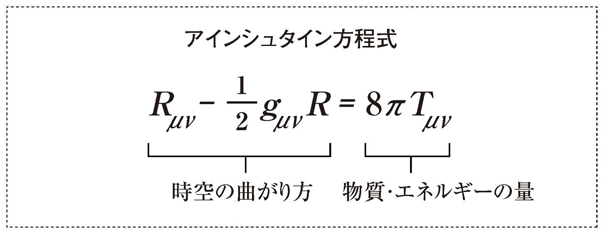
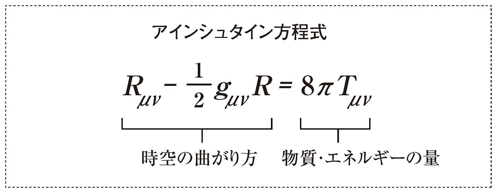

🏠
日
月
縦書き／横書き

はじめに
本書の目的は単純だ。
理系と文系の「垣根」をとっぱらった、バランスのとれた知性とは何かを考えること。
それこそが日本の次世代を明るく豊かにすると信じているから。
でも、これだけ社会に強く根づいている理系・文系という「区別」は、いったいどうやったらなくせるのだろう？ 要するに「理文両道」をゆくにはどうすればいいのか、そのコツをまとめたのが本書なのである。
いきなり話が脱線するが、先日、東京の両国国技館に大相撲を観に行ってきた。中入り後、ずいぶんと体格の違う力士の対戦があった。前頭十五枚目の山本山と前頭十二枚目の垣添である。巨漢の山本山と小兵の垣添とは、身長が10対８くらいであった（公式には10対９くらいだが、新弟子検査の事情があり、背の低い力士の公式の身長は実際とズレがあることも多い）。
隣に座っている妻が、
「あの二人、どれくらい体重差があるのかしら？」
と呟いたので、私は、
「半分くらいじゃないか」
と答えた。妻は私の発言を気にも留めていなかったようだが、パンフレットを見て、
「あら、ホントだわ」
と、不思議そうな顔つきで私を見た（実際の体重は、山本山が２５２キロで、垣添が１３８キロだから55％弱になる）。
実は、物理学の訓練を受けている私は、頭の中で０・８の３乗を暗算していた。答えは０・５１２。これが、「半分ぐらいじゃないか」と答えた根拠だ。
なに、別に難しいことじゃない。
数学では、長さが２倍になれば、面積は４倍になり、体積は８倍になるのは常識だ。相撲の力士は立方体ではないが、近似として見積もるのであれば、長さが０・８倍になったのだから、体重＝体積はその３乗に近いはずなのだ。そこで、「８×８＝64（はっぱ、ろくじゅうし）。６×８＝48（ろくは、しじゅうはち）。４×８＝32（しは、さんじゅうに）」と大まかな計算をやって、「48＋３・２＝51・２％」と見積もっていたのである（注）。
これが本書に繰り返し出てくる「理系センス」というやつだ。
理系センスが人生の役に立つことも多いが、行き過ぎて「理系バカ」になってしまうと酷い目に遭う（本人より周囲が大変なことが多い！）。
もちろん、これとは逆の「文系センス」というのもある。商売柄、私は科学書について相談を受けることも多い。科学者は、とにかく正確に文章を書こうとする。それは決して悪いことではないのだが、読む人間が門外漢の時は大きな問題が生じる。
専門用語のオンパレードで、読者が全然理解できないのである。
そこで、私のようなサイエンスライターが「文章表現」の指南をすることになるのだが、そもそも「表現」が大事だという意識が欠如している科学者に、コミュニケーション技術を教えるのは至難の業だ。場合によっては「お前の手など借りん。私の文章にケチをつけるつもりか！」と怒鳴られておしまい、なんてことだってある。
「事実」だけにしか興味がないから、小説なんてほとんど読んだことがない。そういう「理系バカ」が書いたデジタル機器のマニュアルなど、小学生の作文以下であることも珍しくない。そういった事例をたくさん見ていると、改めて「文系センス」って重要なんだなぁ、と痛感させられる。
要はバランスだ。
本書では、しょっぱなから「理系バカ」「文系バカ」という挑発的な表現が頻繁に登場するが、それは「わざと」そうしている。ちょっとしたショック療法で読者の注意を喚起しようという魂胆なのだ。
後半になるにしたがい、「理系人間」「文系人間」という柔らかい表現に落ち着くので、あまり気にせず、ときには腹を立てながら、どんどん読み進めていただければと思う。
本書は、理系と文系の世界を渡り歩いてきたサイエンスライターの竹内薫が、友人の放送作家である嵯峨野功一と徹底的に議論をし、それを嵯峨野が文章にして、竹内が加筆して出来上がった。ただし、本文中に出てくる「私」は全て竹内を指している。
巻末にオススメの本をあげておいたので、本書を読んで、「理文両道」に目覚めた読者は、是非ともトライしていただきたい。
最後に、ＰＨＰ新書の阿達真寿編集長には、本書の企画から出版まで大変お世話になった。また、「聞き役」として議論に参加してくれた妻かおりの労をねぎらいたい。
それでは、いざ、理文両道の危うい綱渡りの世界へ！
二〇〇九年二月 横浜の猫神亭にて
竹内 薫
何でも分類したがる日本人「理系ですか？ 文系ですか？」
あなたは、こんな質問をされたこと、あるいはしたことがないだろうか？ もちろん物理学科や数学科を卒業していれば「理系」、法学部や文学部を卒業していれば「文系」と答えるだろう。また、数式を解くのが好きだったり、パソコンや電気回路をいじったりするのが好きな人、生物が好きな人も「私は理系です」と答えるはずだ。
一方、推理小説やノンフィクション、または『源氏物語』などの古典を読むのが好きだった人は「私は文系です」と答えるだろう。もしかしたら、計算や方程式などの算数・数学が苦手だったり、嫌いという理由だけで「私は文系です」と答えるかもしれない。
また反対に、理屈っぽい人や几帳面で細かい人に対して「理系ですか？」と質問したことはないだろうか？ これは、自分の中に「理系人間はこうだ」「文系人間はこうだ」というイメージを持っていて、相手に「理系ですか？ 文系ですか？」と訊くことによって、その人を自分が持っているイメージにはめたがっているということではないだろうか。
どうも日本人は、ステレオタイプに当てはめて人を判断することが好きなようだ。そう考えると「理系ですか？ 文系ですか？」という質問は「血液型は何型ですか？」と訊くのと同じようなコミュニケーション手段の一つなのかもしれない。
理系と文系、運命の分かれ目は？ そもそも、「理系」と「文系」の定義とは何か？ そして、「理系」と「文系」はいつから分かれるものなのか？
『橋爪大三郎の社会学講義２』（橋爪大三郎著・夏目書房）によると、日本における「理系」と「文系」の定義は、明治時代に旧制高校が作ったものだという。黒板とノートだけで学べる「文系」に比べ、「理系」は実験設備にお金がかかる。「お金のかかる学部を理系」「お金のかからない学部を文系」と分類し、お金のかかる学部の生徒数は絞らざるをえなかった。そこで数学の試験をして、「理系」と「文系」を振り分けたということだ。
現在においても、この「理系」「文系」という言葉を多く耳にするのは高校時代、それも大学受験を考える頃ではないだろうか。大学受験に向けて、学校や予備校も「理系コース」と「文系コース」を設定する。それを受けて生徒も「僕は理系」「私は文系」という大きな選択を迫られる。この段階での選択は、数学が大きなポイントかもしれない。数学が好き、得意な人は文句なく「理系」へ。「文系」に進んだ人の中には、もちろん国語や英語、地理や歴史が好きという人もいるだろうが、数学が苦手だから「理系はちょっと......」と消去法で「文系」を選んだ人もいるのではないだろうか。もちろん、国立大を目指す人は、センター試験に向けて「理系」と「文系」の両方を勉強しなければならない。しかし、自分が進みたい学部が「理系」か「文系」かは決めているはずだ。
とにかく大学受験を控えて、大きく「理系」と「文系」に分けられ、そして受験に向けて、「理系」は数学や化学や物理の授業を、「文系」は現代文や古文、英語、歴史など、より特化した授業が進められていく。こう考えると「理系」と「文系」が分けられる大きなポイントの一つは、やはり大学受験といえるだろう。
しかし、そんなこと言ったら、中学を卒業後に就職した人や高校を中退した人など、大学受験をしていない人はどうなる？ 大学受験で芸術系や体育学部に進んだ人だって宙に浮いてしまうゾ。
この場合は、現在就いている職業や趣味などで分類するとよいだろう。たとえば、私が北野武（ビートたけし）さんの番組で解説を担当しているフジテレビ系の「たけしのコマ大数学科」を見てくれている人や、数式が出ている本を読むのが好きという人は、数学好きなので「理系」。工業高校を卒業して技術者になっている人も「理系」に分類されるだろう。
「文系」と「理系」。よく使われる分類なのに実は確固たる定義はなく、意外と曖昧なのだ。にもかかわらず、「理系の人はこういう人だ」「文系の人はこういう人だ」というイメージは根強い。曖昧ながら、日本人は、この「理系」と「文系」という分類に完全に支配されている。
文系人間が支配する時代は終わった しかし、これからの時代は「理系だ」「文系だ」と区別することには意味がなくなると思う。「理系」と「文系」の融合、つまり「文理融合」がこれからは当たり前になるからだ。
最近、特に「文理融合」の大切さを感じるのは、経済の分野だ。日本の景気や経済の動きを分析しているのは財務省。そして、この財務省のエリートの多くは法学部出身だ。昔はこの法学部出身の官僚たちが全てを分析して動かしていた。しかし、今はそれができなくなってきている。分析してこうしようと決めたにもかかわらず、世の中の経済はその通りに動かないことが多いのだ。
その一番いい例が、財政出動だろう。昔は財政出動をすれば景気が上がる、というわりあい単純な原因と結果があった。しかし、今はこの方法で効果は現れない。１９９０年代にいくら財政出動しても景気が上がらなかったことを思い起こせば、うなずけるだろう。
理由をひと言で言えば、経済システムが複雑化しすぎているからだ。複雑になったがゆえに、「文系」、つまり法学部のセンスだけでは理解できないものになっているのだ。
先日、元財務省出身の 橋洋一さん（現東洋大教授）と対談した。橋さんは数学科を卒業してから経済学を学びなおし、そして財務省に入ったという異色の経歴の持ち主。いわば「文理融合型」だ。その橋氏が、現在の経済状況を分かりやすく説明してくれた。
橋洋一さん（現東洋大教授）と対談した。橋さんは数学科を卒業してから経済学を学びなおし、そして財務省に入ったという異色の経歴の持ち主。いわば「文理融合型」だ。その橋氏が、現在の経済状況を分かりやすく説明してくれた。
日本は１９７３年以降、変動相場制となった。この変動相場制では、国内で財政出動しても、その効果がそのまま海外に流れ、他の国の国民を富ませるだけというのだ。つまり、家の中（国内）を暖めようと暖房をつけたはいいけれど、窓が開いていて暖かい空気が外（世界）に逃げていってしまうと......。昔は固定相場制で窓が開いていなかったので暖房も効果があったが、今は変動相場制なので窓が開いている。簡単に景気対策と口にするが、今や世界と日本はつながっている。財政出動だけで国内景気が回復するような時代ではなくなってきている。
こういう話を聞くと、数学だけでも経済だけでもない、文理両道のセンスがないとグローバルな情勢を見渡せないのだと感じる。実際、数学的センスと経済学的センスの両方を兼ね備えた橋さんの話は、法学部出身の他の財務官僚には、なかなか理解できなかったらしい。
いずれにせよ、これまでのような法学部卒の「支配」は確実に弱まってきている。
理系人間にも必要なコミュニケーション能力 さらにもう一人、「文理融合」のバランスの良さを感じたのは、「ｉＰＳ細胞」の研究をしている京都大学教授の山中伸弥さんだ。昔の研究者であれば、自分が研究しているものを発見、または成果が出た直後に学会で発表してしまう。しかし、これでは特許が取れない。山中さんも「研究室で『ｉＰＳ細胞』を作りました。論文を発表しました」だけでは、手放しに喜んでいられないのだ。
あれだけインパクトのある研究になると、もちろん莫大な利権がからんでくるし、アメリカとの競争にもなってくる。理系の専門家も実験や研究だけをしていればいいというものではない。その点、山中さんはきちんと特許を取って、それから論文を発表して、とステップを踏んでいる。社会的な戦略や根回しができるということは、昔の研究者などとは違い、社会の仕組みや戦略を理解している、つまりバランスがとれているということではないか。
山中さんのコミュニケーション能力の高さは、取材をさせていただいた時にも感じることができた。サイエンスライターという商売柄、様々な科学者を取材してきたが、こんな人は初めてだった。人当たりは柔らかく、バリバリの理系先生というオタク感がない。研究に没頭して周りが見えないというタイプではなく、周りの人々に気配りができる。「そんなのは当たり前じゃないのか！」と思われる方も多いと思うが、理系の研究者や技術者を取材していると、案外これができていない人が多いのだ。そして何より、山中さんには、学者にありがちな"名誉欲"というものが、微塵も感じられないのだ。これには驚いた。
今後、研究者にとってコミュニケーション能力が非常に大事になってくる。
たとえば、最近の科学者は、自分の研究結果がすごくても、それを一般に伝えられなければ駄目という状況におかれている。これは行政改革により大学や研究所が独立行政法人化され、研究結果をみんなに示し、認知されないと、研究予算がもらえないからだ。文系的センスで分かりやすい研究結果を書き、コミュニケーション能力でプレゼンをする。これは絶対に必要なスキル。研究には多額の費用がかかるが、これからはプレゼン力やコミュニケーション能力がないとお金を引っ張ってくることはできない。
理系の研究費は、民間企業は別として、ほとんどが国民の血税から捻出されているのだから、説明義務があるのは当たり前だ。
ちなみに文部科学省は「ｉＰＳ細胞」の研究に当初、５年間で１００億円という日本の感覚では破格の予算をつけた。しかし、ライバルのアメリカは官民合わせてこれより２ケタ多い研究費を投入している。日本は政府と民間による更なる支援が急務だと思う。
「理系バカ」の科学者たち もっとも、橋さんや山中さんは例外であり、頭の悪い理系オタクの例は枚挙にいとまがない。つい最近も、日本最高峰とされる某研究所に「テレビ番組で扱いたい」と取材を申し込んだら、「広報が対応しきれないので応じられない」と、にべもなく断わられてしまった。自分が大々的にマスコミを集めて発表したくせに、いざ「10分程度の時間をかけて詳しく紹介したい」と申し込んだら、「忙しすぎて対応できません」とは何事か。対応できないなら、最初から大袈裟に発表するな！ と言いたい。欧米の一流の研究所であれば、まず、こんな失態は起こさない。まるで、大々的に宣伝したものの、商品が品切れになって「製造が追いつかないので売れません」と言うようなものである。
あるいは、こんな例もある。ある科学者に雑誌の取材を申し込んだら、１カ月ほど音沙汰がなく、私と組んでいる記者が研究所の広報に電話しても「木で鼻をくくったような対応」しかしてくれない。その後、科学者本人から連絡が入り、ようやく取材にこぎ着けたのだが、その場で自著を宣伝してくれと頼まれた。そこで、取材の次の週に、私が担当している新聞のコラムでその科学者の本と研究を紹介したところ、「不快だ。なぜ、断わりもなしに新聞に書いたのだ。説明を要求する」というメールをもらって、思わずのけぞってしまった。「だって、あんたが本を紹介しろって言うから、善意で紹介したんじゃないか。不快って、どーゆーことなの？」。
この科学者は、私が掲載日を「報告」しなかったことに腹を立てて、私を糾弾し始めたのである。よかれと思って、「科学応援団」をしていても、社会経験が皆無の「理系バカ」には通用しない。自分の研究が世界一重要だと思っているのだ。思わず「あなたは年に一億円の研究費をもらっていますね。そのお金は、国民が汗水垂らして働いて納めた税金から出ているのですよ。新聞のエッセイ欄で私が書くことは、あなたにとってプラスでこそあれ、マイナスになることはないはず。いったい、何を怒っているのですか。あなたは子供ですか」と言い返しそうになったが、ぐっと抑えた。
この一件では、つくづく、理系と文系の「バランス」がとれた知性が必要だと痛感した。
活躍する理系作家・タレントたち 理系と文系のバランスのとれた人々は現代日本で大活躍している。『バカの壁』のベストセラーで一世を風靡した養老孟司さん、テレビの司会や解説でも大活躍の脳科学者・茂木健一郎さん、世界的な映画監督で、「たけしのコマ大数学科」でもおなじみの北野武さんといった人々は、もともと理系出身で、文系の「表現力」を兼ね備えた現代の天才といえる。あるいは、人気作家の東野圭吾さんや海堂尊さんも理系出身だ。理系の思考力と文系の表現力が結びついた時に発揮される威力には、驚くべきものがある。
もちろん、逆のパターンも可能だ。米国でも『リング』が大ヒットした作家の鈴木光司さんの作品はホラーに分類されることが多いが、その中身は生物学から物理学、数学まで幅広い理系の話題が中心になっている。文系の表現力が理系の論理力・分析力と融合した時に世界に通用する文学が生まれるのである。
世の中が分業化し、それぞれの専門分野が高度になってきた。ゆえに原因と結果が短絡的ではなくなった。この世の中を生き抜くために「文系」にも理系的センスが必要になってくる。一方、「理系」の分野でも「ｉＰＳ細胞」や「臓器移植」など、技術があまりに発達しすぎて、人間の感性とか情緒が追いつけなくなってきている。もはや、技術が人間を支配しているとさえ言えるのではないか。
こうした違和感を埋めるのは、「文系」の理系的センスであり、「理系」の文系的センスだといえよう。
キーワードは「文理融合」 考えてみると「文理融合」が求められている分野というのは意外と多い。たとえば「心理学」という学問。たいていの大学では「心理学」は文学部に属しているが、「文系」だけでは解明できない部分が多い。脳の仕組みや視覚や聴覚の仕組み、記憶の仕組み、学習の仕組みなど、生物学的な知識が心理学全般の基礎となっている。
また「心理学」は、実験を行なうと「統計」という数学の壁にもぶつかる。だから、計算が苦手な純粋な「文系人間」が入ると苦労するという話を聞いたことがある。つまり文学部にありながら、本来「心理学」とは、「文理融合」の学問なのだ。
「理系」の職業と思われているＳＥ（システムエンジニア）も、最近は文系出身者が増えている。効率の良いプログラムや安全なプログラムを書くスピードでは、理系の方が速いかもしれない。しかし、使う人のことを考えてプログラムを書くのはコミュニケーションが得意な文系的センスだったりする。
たとえば、銀行のＡＴＭ。非常に効率の良いプログラムであっても、使い方が難しいとお年寄りなどが扱うことができない。公共的なものは万人が使えないものでは意味がないのだ。こういう部分を補えるのは、高い文系的センスだ。
また、お医者さんも「文理融合」が必要な職業だ。患者さんに症状や治療方法を分かりやすく説明するのもコミュニケーション能力だ。最近は、カルテが電子化されて、患者さんが目の前にいるにもかかわらず、パソコンの画面だけを見て「こんな症状なので、この薬を出します」などと話すため、患者から総スカンを食らっているお医者さんもいるそうだ。目の前にいる患者にしてみれば気分の良いものではない。そんなお医者さんは信用する気もなくなってしまうだろう。
とにかく「理系だ」「文系だ」と区別するのはもう古い。知識は「理系」「文系」と偏らせず、バランスの良い「文理融合」を目指すべきだ。そのため、文系人間だと思う人は、理系センスを磨き、理系人間だと思う人は文系センスを磨くべし。
これからのキーワードは、ズバリ「文理融合」だ。
文系・理系の行動パターンを洗い出す「これからは文理融合だ」と私が叫んでみても、多くの人はまだ「理系」と「文系」を線引きして考えることが多いに違いない。
私の周りを見渡してみると、研究職に就いているような「バリバリの理系」というのは少数派だ。それに比べると、「文系」の数は非常に多い。文系学部の出身者はもちろん、数学・物理が苦手だった「消去法で文系」の人たちも含まれるからだ。
そして長年、「理系」と「文系」という分類が当たり前になっていたため、理系人間、文系人間それぞれのイメージが出来上がってしまっている。
たとえば、皆さんは、次のようなイメージを思い浮かべるのではないだろうか。
理系＝論理系、文系＝情緒系
理系＝細かい・几帳面、文系＝アバウト
理系＝オタク、文系＝ゼネラリスト、もしくはミーハー
理系＝横書き文化、文系＝縦書き文化
理系＝分類・体系化、文系＝混沌混在化
理系＝ファッションに無頓着、文系＝オシャレに敏感
あげればキリがないが、多くの人が「理系人間」「文系人間」に対し、このようなイメージを抱いているように思う。理系人間は少数派のはずなのに、「それって理系っぽいよね」とすぐ浮かぶのは、理系人間から受けるインパクトが強いからだろうか？
しかし、あえて言いたい。このような「理系」「文系」の分類をして面白がっているだけでは「文理融合」を目指すことはできない。「理系」「文系」というそれぞれの枠から抜け出せず、一元的な発想しかできない人を、ここでは「理系バカ」「文系バカ」として警告を発したいのだ。
そこで、あなたの考え方や行動が「文系バカ」「理系バカ」に陥っていないか、チェックしてみよう。
１ 「文系バカ」と呼ばれる10の事例
それでは、まずは「文系バカ」のチェックをしてみよう。
「文系バカ」は、テレビや雑誌などメディアの情報をすぐに鵜呑みにしてしまい、自分で考えたり、調べたりしない人が多い。ひと言で言うと「論理的な考え方ができない人」。あるいは、「その場の空気に流されやすい人」。
あなたは大丈夫だろうか？
次にあげた10の質問に「ＹＥＳ」「ＮＯ」で答えていただきたい。
 血液型診断や占いが気になって仕方ない
血液型診断や占いが気になって仕方ない
 取扱説明書は困った時にしか読まない
取扱説明書は困った時にしか読まない
 たいていのことは「話せば分かる」と信じている
たいていのことは「話せば分かる」と信じている
 ダイエットのために「カロリーゼロ」のドリンクをガブ飲みしてしまう
ダイエットのために「カロリーゼロ」のドリンクをガブ飲みしてしまう
 アミノ酸、カルニチン、タウリンなどのカタカナ表示にすぐ飛びつく
アミノ酸、カルニチン、タウリンなどのカタカナ表示にすぐ飛びつく
 「社会に出ると因数分解なんて必要ないよね」と言ったことがある
「社会に出ると因数分解なんて必要ないよね」と言ったことがある
 「インド式算数」を学ぶより、電卓を使えばいいと思っている
「インド式算数」を学ぶより、電卓を使えばいいと思っている
 何でも平均値で物事を判断してしまう
何でも平均値で物事を判断してしまう
抗菌コートのトイレじゃないと入りたくない
物理学と聞いただけで「難しくて分からない」と思ってしまう
結果はどうだっただろう？ もちろん、ＹＥＳが多いほど「文系バカ」である。
なぜ「文系バカ」なのか、それぞれについて解説していこう。
文系バカ
 血液型診断や占いが気になって仕方ない
血液型診断や占いが気になって仕方ない
人間の性格は４種類しかないのか 几帳面なＡ型、いい加減なＢ型、ユニークな発想をするＡＢ型、リーダーシップをとるＯ型。よく耳にする血液型による性格の分類だ。
また最近、『Ａ型自分の説明書』などといった血液型診断の本が流行しているため、自分の血液型の本を読んで「まさに自分の性格と同じだ」と思い当たることを楽しんだりしている人も多いことだろう。
しかし、血液型性格分類というのは科学的な根拠はいっさいない。血液型占いは科学ではなく、文化の話なのだ。その証拠に、血液型による性格の分類が普及しているのは、日本と韓国と中国、あとは台湾ぐらいだ。私は子供の頃、アメリカに住んでいたが、アメリカの子供たちが血液型の話をしているのを聞いたことがない。
ただし、「科学的根拠がないから血液型による性格分類はインチキだ。やめた方がいい」と言っているわけではない。飲み会の席で血液型の話で盛り上がるならそれでもいい。しかし「わが社には真面目な人材が欲しいからＢ型は採用しない」というようなことになると話は別だ。会話のネタとして使うのはＯＫだが、就職や差別につながるようなことは絶対にいけないということだ。人間の性格が４種類しかないと思うのは典型的な「文系バカ」だ。
あるいは、毎朝の情報番組では、血液型や星座などで「今日の運勢」を占っているコーナーがある。「しし座のあなたのラッキーカラーはピンク」というのを聞いて、その日の服装を決める女性もいるかもしれないが、まずはＴＰＯをわきまえて、自分らしいファッションを考えるべきだ。科学的根拠もない占いを鵜呑みにして、振りまわされるのは、ただの「文系バカ」といえるだろう。
文系バカ 取扱説明書は困った時にしか読まない
取扱説明書は困った時にしか読まない
何となくで機械を使う文系 今の家電製品などは、説明書を読み込まなくても最低限の機能は使えるように分かりやすくなっている。最初に説明書を読むのは必要最低限で、あとは困った時にその項目のページをパラパラと読むぐらいだろう。
最近の携帯電話やパソコンの説明書はかなり厚い。それだけ多機能になっているということだ。しかし、全ての機能を使いこなしている人はほとんどいないだろう。メカに興味のある理系は、その機械がどんな機能を持っていて、どんな構造なのかを知りたいから、説明書を読み込み、イジリ倒す。せっかく買ったのに、使っていない便利な機能があるなんてもったいない！ 高機能な機械の数パーセントしか使わないのは典型的な「文系バカ」だ。
理系人間には、マニュアルの読み方に特徴があり、どうやら、「必要な箇所だけを集中的に頭に入れる」という効率の良い読み方をするようだ。また、特殊な機能や裏ワザの類いをどんどん憶えてしまうのも理系の特徴だろう。機能が高度になればなるほど、文系と理系の使いこなし度には差がついてしまう。
分厚いマニュアルを書いているのは、表現力に乏しい「理系バカ」であることも多いから、あまりうまく編集されていない可能性は高い。読みづらいマニュアルを読みたくないという気持ちも分からないではない。だが、せっかくの高機能に気づかず、非効率を繰り返しているとしたら、そのような人は「文系バカ」の傾向があるだろう。
文系バカ たいていのことは「話せば分かる」と信じている
たいていのことは「話せば分かる」と信じている
コミュニケーション能力に自信がありすぎる文系バカ 一般的に「文系人間は理系人間に比べてコミュニケーション能力が高い」と言われる。
ところが、自分のコミュニケーション能力を過信している「文系バカ」がいる。
熱血営業マンなどによくあるタイプだが、何か揉め事があった時や、相手にものすごく失礼なことをしても、「とにかくオレが謝れば大丈夫」と思い込んでいる人がいる。もちろん、相手に損害を与えた場合、謝罪するのは当然だが、ビジネスの現場では、謝っただけでは済まされないことも多い。ときには法律家の意見をふまえて、相手と交渉しなければいけない場面もある。ところが、世の中には、土下座をして謝れば、誠意が伝わると信じている人がいる。コミュニケーション能力は、時と場合によるということがすっかり抜け落ちているのだ。これはこれで立派な「文系バカ」だ。
あるいは、電話やメールで用件を伝えればいいような話でも、「折り入ってお目にかかりたい」などと言って、面談を要望してくる人がいる。特別な相談だと思って出かけてみると、たいした話でもなかったりする。コストパフォーマンスを無視して、相手の時間ばかりを奪う押しつけコミュニケーション型の「文系バカ」も多い。
さらに、コミュニケーション能力を過信している「文系バカ」には「知ったかぶり」が多い。文系人間同士の会話というのは、ある程度相手のことを尊重しながら空気を読んで、ディスカッションができる。たとえば、話の流れで自分がそのことについてあまり詳しくない、もしくは知らない場合でも、文系人間ほど「知っているフリ」をする。せっかく、皆で盛り上がっているところで、「知らないと言って話を止めても意味がない」と考えるからだ。しかし、あまりに知ったかぶりをして墓穴を掘る人もいる。ここまでいくと「文系バカ」だ。
文系バカ ダイエットのために「カロリーゼロ」のドリンクをガブ飲みしてしまう
ダイエットのために「カロリーゼロ」のドリンクをガブ飲みしてしまう
表示されたものを疑ってみる 体重や体脂肪を気にしている人は、何となく「カロリーゼロ」と表示されている飲み物を選んでいないだろうか？ でも、ちょっと待ってください。あなたが手にしている飲み物は本当に「ゼロカロリー」なのだろうか？
実は、厚生労働省が定めている基準では「１００ミリリットルあたり５キロカロリー以下であれば『カロリーゼロ』もしくは『ノンカロリー』と表示してよい」ことになっているのだ。
また「１００ミリリットルあたり20キロカロリー以下の場合は『カロリーオフ』とか『低カロリー』と表示してよい」のだ。この表示のカラクリを知らずに、「カロリーゼロ」の飲み物を飲み続けていると、知らないうちに大量のカロリーを摂取していた、なんて悲惨なこともありうる。
たとえば、１００ミリリットルあたり18キロカロリーで、「カロリーオフ」と表示されている５００ミリリットルのスポーツドリンクがある。これを１時間ウォーキングしながら飲むとしよう。するとカロリー的にはトントンなのだ。「カロリーオフ」「カロリーゼロ」という言葉だけを捉えて、その表示の意味を深く知ろうとしないのは「文系バカ」だ。
また「遺伝子組み換え」についても、表示ルールに抜け道があることはご存知だろうか？ 「遺伝子組み換え食品」は名前の通り、遺伝子を操作し、害虫や病気に強いなどの品種改良を行なった農作物を使った食品だ。対象となっている農作物は２００８年現在、大豆、とうもろこし、バレイショ、菜種、アルファルファ、テンサイ、綿実の７種類。そしてこの７種類を原料とした、豆腐、納豆、味噌、ポテトスナック、ポップコーンなど32種類の食品だ。
加工食品では、遺伝子組み換え作物が主な原材料として使用されている場合に表示義務が発生する。主な原材料の規定は「全原材料に占める重量の割合が上位３位まで」かつ「原材料に占める重量の割合が５％以上」。つまり、使用量が５％以下ならば表示しなくてもよいということだ。
「遺伝子組み換え食品を食べるのは嫌だ」と思って表示を見て買っていても、もしかしたら知らないうちに５％は口にしているかもしれないのです（涙）。
こうなってくると、「文系バカ」のままでいることは、かなり怖いことだということがお分かりだろう。
文系バカ アミノ酸、カルニチン、タウリンなどのカタカナ表示にすぐ飛びつく
アミノ酸、カルニチン、タウリンなどのカタカナ表示にすぐ飛びつく
「新しい成分」というだけで心が躍る「カロリーゼロ」「カロリーオフ」表示もそうだが、体のことを気にしている人ほど「ダイエット」とか「体脂肪燃焼」などと書かれている商品に弱い。これは言葉からくるイメージの問題だ。
一時期、体脂肪を燃やす働きがある成分を持つ「Ｌ‐カルニチン」がダイエットに効果があるとして流行った。そしてこの「Ｌ‐カルニチン」はラム肉に豊富に含まれているということから、若い女性たちにジンギスカンも流行した。このような「Ｌ‐カルニチン」や「シトルリン」など、新しい成分が出てくると人々が飛びつくのはなぜだろう？
しかし、「文系バカ」は、「カロリーゼロ」同様、「Ｌ‐カルニチンがどんなものなのか？」という深いところまでは考えない。思考停止だ。化学記号の暗記や化学式の計算などが苦手だった人は、ややこしいことは抜きにして、「効果があればいいじゃん」と思うのかもしれない。
基本的に消費行動は感情とイメージで動き、売る側はそこを突いてデザインやキャッチコピーを考える。栄養ドリンクに含まれている「タウリン１０００ミリグラム」も実際に入っているのは１グラムである。ただ「１０００ミリ」という言葉に言い換えることによってインパクトが出る。
「ビタミンＣ」にしてもそうだ。「ビタミンＣ」の量をレモンで計るのは昭和62年に農林水産省が定めたガイドラインが元になっている。このガイドラインでは「レモン１個をビタミンＣ20ミリグラム」としているのだ（実際のレモンの実の部分にはビタミンＣが30～40ミリグラム含まれているらしい）。それなのに、「レモン50個分」と表示されている飲み物に含まれているビタミンＣは「１０００ミリグラム」。これも１グラムだ。こうやって言い換えてみると、むしろ、レモンはビタミンＣが少ないのではないかと思えてくる。
しかし、「文系バカ」の頭では、ビタミンＣといえばレモンだ。これはレモンの酸っぱさがビタミンＣのイメージと結びついているのが理由かもしれない。しかし、レモンの酸っぱさの最大の要因はビタミンＣではなく、クエン酸であることを忘れないでいただきたい。
もう一つ。「ウコンが二日酔いに効く」というのがある。しかし、どんなメカニズムなのか知らない人が多い。ウコンが二日酔いに効くのは、ウコンに含まれる「クルクミン」という物質が二日酔いの原因となるアセトアルデヒドという物質を分解する酵素の働きを助けるからだ。これは試験管を使っての実験で科学的に証明されている。しかし、人間の体内は複雑なので個人差がある。
「１０００ミリグラム」「レモン50個」「Ｌ‐カルニチン」「シトルリン」「コンドロイチン」など全てはイメージ戦略。「１０００ミリグラムって、どれぐらいだろう？」「コンドロイチンって何？」という具合に、いつもは思考停止していたところから一歩踏み出すことができれば「文系バカ」は回避できる。
科学的な仕組みに少しでも興味を持ち、調べることをすれば騙されることも少なくなる。言われるがままにイメージだけで全てを鵜呑みにしてしまっていては、一生、「文系バカ」から抜け出せない。
「アルカリイオン水」って何物だ!? 新しい成分などに弱い、という傾向と同じように気になるのが「アルカリイオン水」。これまた健康志向の心をくすぐる響きだ。
理系人間は、この「アルカリイオン水」というカタカナを自分の頭の中で言い換えてみる。その結果「カルシウムが溶けている水」という答えを導き出す。要するに「薄い石灰水」ということだ。これが、製造過程で電気を使い、その時に「アルカリ」や「イオン」が関係してくるからという理由で「アルカリイオン水」と名づけられた。「薄い石灰水」と「アルカリイオン水」は同じものなのに言葉の響きでイメージがこんなにも違う。
ちなみに「アルカリイオン水」は体に害があるわけではないし、きちんとした業界団体もあるので、財布のひもと相談して飲んでくださって大丈夫。ただ、カルシウムを摂るのが目的であれば牛乳の方が圧倒的にカルシウムが多いから、そちらを飲んだ方がいい。あるいは煮干などを食べた方がいい。「アルカリイオン」という言葉の響きだけで体にいいと思うのは「文系バカ」だ。
ミネラルウォーターの表示にもご注意を 水道水以外で身近な水といえば、ミネラルウォーターだ。最近は色々なミネラルウォーターが販売されている。このミネラルウォーターについて、農林水産省は１９９０年に表示についてのガイドラインを作成している。その定義によると、ミネラルウォーターは４つに分類されているのだ。
ナチュラルウォーター
沈澱、ろ過、加熱殺菌以外の処理をしていない水。何も混ぜておらず、成分も調整されていない。
ナチュラルミネラルウォーター
ナチュラルウォーターにミネラル分が天然の状態で溶け込んでいる水。このミネラル分というのは、鉱水や鉱泉水などが溶けているということ。
ミネラルウォーター
ナチュラルウォーターを原水として、ミネラルの調整を人為的に行なった水。
ボトルドウォーター
以外で、処理方法の限定がなく、原水は水道水など飲めれば何でも良い。
こうやって改めて定義を見せられると、飲んでいる水の表示を見たくならないだろうか？ ミネラルウォーターだけでも４種類に分けられるのだ。
食の安全が叫ばれ、食品や飲料の表示を見る機会も多くなったと思う。表示を見てただ確認するだけでなく、そこからもう一歩、「表示に書かれているものがどういう意味なのか？」に疑問を持ってみるのが大事だと思う。
部屋の中にマイナスイオンを出す家電がたくさんある「アルカリイオン」と同じように、「マイナスイオン」もありがたいものとみなされている。家に「マイナスイオンが出る家電が１台もない」という人は少ないだろう。エアコンや空気清浄機には必ずといっていいほど付いている機能だ（竹内家や嵯峨野家にもマイナスイオン機器は存在する）。
しかし、実はこれは日本だけの現象だ。では、海外ではどうなのか？ たとえば、アメリカの科学者や科学愛好家が集まるブログを覗いてみると「日本ではいまだにマイナスイオンが効くといって家電が売られている」と結構バカにされていたりする。
「マイナスイオン」自体は確かに存在する。アメリカでも今から半世紀ぐらい前に「マイナスイオン」が流行した。しかし政府が調査した結果、「体に良い」ということが証明できず「健康に良い」と謳って販売することを禁止した。「マイナスイオン」はいまだに医学的な根拠は証明されていないのだ。
理系の人間であれば、「マイナスイオン」と聞いた時に「いったい、何のマイナスイオンなのか？」と疑問に思う。そして、どういう分子構造なのか気になる。しかし、その式はどこを探しても出てこないし、問い合わせても教えてくれない。どうにも気になって調べに調べたら、「マイナスイオン」を広めた数人の学者らしき人物を探り当てた。学者らしきと表現したのはちゃんとした科学論文がほとんど出てこなかったからだ。科学論文が出てこないということは、通常、実験でそれが証明されたり、科学的に認められたというわけではないということを意味する。そうなれば、おかしいと思うしかない。
つまり「マイナスイオンは体に良いものなのか悪いものなのか」ということ自体、今も分かっていないのだ。確かに今後の研究で「健康に良い」という結果が出る可能性もある。しかし現段階では、先ほど述べた通りだ。マイナスイオン機能のために余分なお金を支払うのであれば、ハッキリ言って、やめた方がいい。「マイナスイオン」という言葉の響きだけで、健康に良いと思うのは「文系バカ」と言える（注：竹内家と嵯峨野家ではマイナスイオン機能は常にオフになっている）。
文系バカ 「社会に出ると因数分解なんて必要ないよね」と言ったことがある
「社会に出ると因数分解なんて必要ないよね」と言ったことがある
因数分解は何のために必要なのか？ 因数分解という言葉を聞いて、嫌な思い出が甦ってくる人も多いかもしれない。解いているうちに混乱してきて「こんなことを計算して何になるんだろう」と学生時代に悩んだ人もいるだろう。
確かに、大人になって普通の日常生活を送っている限りは、因数分解は必要ない。方程式や、三角形や円の面積の計算でさえもだ。足し算、引き算、掛け算、割り算ができれば事足りる。文系人間が口にする「社会に出たら因数分解とか微分積分なんて関係ないでしょ」というのは「もう数学を勉強しなくていいでしょ」という言い訳かもしれない。
私がよく引用する「素数ネズミの恐怖」という怖い実験がある。
出口に餌を置いて、ネズミに迷路を解かせるのだ。ただし、その迷路には数学的な規則性がある。たとえば、奇数番目の角を右折すると解けるとか、奇数番目の角は左、偶数番目の角は右に曲がると解けるとか。
だが、ネズミが決して解けない迷路が存在する。それは、「素数番目の角を曲がる」という迷路なのだ。ネズミは数学を勉強しないので「素数」という概念がない。だから、何遍練習させても、素数迷路から脱出することはできない（ネズミは奇数と偶数の区別はしていないが、交互に右左に曲がったりすることは学習できる）。
実を言えば、ネズミだけでなく、人間様だって、別に数学を学ばなくても構わないと私は思う。社会に出てからは、確かに因数分解や微分積分は必要ないように見える。でも、因数分解や微分積分という概念が分かっているのといないのとでは、社会に出てからの判断力や分析力に大きな差が出るのだ。その違いは、ちょうど、素数迷路を解くことができる人間と解くことができないネズミの差のようなものなのだ。
「何言ってやがんでぇ、素数迷路なんて社会人が解く機会があるのか？」。そう思われるかもしれない。でも、２００８年の金融危機を見ただけで、あまりに複雑になりすぎた金融システムにほとんどの人がついていけない現実が露呈したではありませんか。今や、金融工学なる分野が隆盛を極め、微分積分をバンバン使わないと駄目な「ブラック＝ショールズ方程式」なるものの入門書もたくさん出ている（注：この方程式は微分方程式といわれ、微分積分を知らないと解くことができない）。
素数迷路どころか、現代社会は、インターネットの暗号の仕組みから金融ビジネスの世界まで、あらゆるところに「因数分解迷路」や「積分迷路」が張り巡らされている。それが冷徹な事実なのだ。「文系バカ」が気づいていないだけの話である。
素数を知らなければ、自分が素数迷路につかまっていることは分からない。同様に、因数分解や微分積分を知らなければ、自分がインターネットや金融の背後に隠れた「理系トラップ」につかまっていることも分からない。
いかがだろう？ ちょっと怖い話ではありませんか。
一方で、ニンテンドーＤＳで「脳トレ」が大ヒットした。あのゲームに収録されている単純な計算問題にハマッた人も多いかもしれない。子供の頃みたいにテストなどではなく、久しぶりにやる計算問題はテンポ良く答えられて楽しいのだ。たまには「私、文系だしぃ」なんて逃げ文句のようなセリフを言わないで、計算問題を楽しんでみたらどうだろう。
計算といえば、私は『非公認 Ｇｏｏｇｌｅの入社試験』という著書の中で、インターネットビジネス大手「Ｇｏｏｇｌｅ」の入社問題を勝手に解いてみたことがある。実を言えば、「Ｇｏｏｇｌｅ」の入社試験はほとんどが数学の問題なのだ。
たとえば「正20面体の各面を３色のいずれかで塗っていく時、何通りの塗り方が存在しますか？」という問題。３色を赤・青・緑にするとして、全面を赤、全面を青、全面を緑という塗り方で３通りあるのが分かる。さらに19面を赤、１面を緑というようなパターンの塗り方は６通りだ。こうやって単純に数えていくと、次第に計算が膨大になっていく。10面を赤、７面を青、３面を緑で塗るパターンなんて複雑すぎて考えられない（回転して同じになるものは「同じ」とみなすため、重複を除かないといけないから難しくなる）。
ちなみにこの問題は、解けなくて悔しくて、気がついたら丸々２日も徹夜してしまった。「何でそこまでしてやるの」と思う人もいるかもしれないが、数学の魔力というのは恐ろしい。ここまでとは言わないが、ずっと計算問題から離れている人が、今改めて方程式や面積の計算などをしてみると、新たな発見があるかもしれない。
ちなみに、この「正20面体の問題」の答えは、５８１３万55通りである（汗）。（この超難問の解き方を知りたい方は、『非公認 Ｇｏｏｇｌｅの入社試験』〈竹内薫（編）・徳間書店〉の１１５頁～を参照）。
文系バカ 「インド式算数」を学ぶより、電卓を使えばいいと思っている
「インド式算数」を学ぶより、電卓を使えばいいと思っている
計算はできる方がよい？「83×87＝」「12×36＝」「37×51＝」など、２ケタ×２ケタの掛け算まで暗記しようという「インド式算数」。最近、関連する本が数十冊出版され、注目を集めている。今や日本にあるインド人のための小学校も日本人の入学希望者が後を絶たないのだとか。インドの算数・数学が熱いというのは誰も疑う余地がないだろう。インドは優れた算数教育のおかげで、今や日本のＩＴ産業を陰で支える存在になりつつある。
さて「83×87＝」という問題。あなたは何秒で答えを出せるだろうか？
筆算で答えを出す人、暗算で答えを出す人、大きく分かれると思う。暗算というのは計算のコツが必要だ。ここで計算のコツを伝授しよう。十の位が同じ数字で、一の位を足すと10になるような場合は、十の位の数とそれに１を足した数を掛け、それから一の位の数字を掛けて、その結果を並べて書くと答えになる。「83×87＝」の場合は、「８×（８＋１）＝72」「３×７＝21」だから、答えは「７２２１」だ。「46×44＝」は、「４×（４＋１）＝20」「６×４＝24」で答えは「２０２４」。「78×72＝」は、「７×（７＋１）＝56」「８×２＝16」で答えは「５６１６」。どうだろう？ コツが分かると暗算も楽しくならないだろうか？ 答えをそのまま記憶するよりも苦痛ではないはずだ。
ちなみに「65×45＝」や「88×28＝」のような十の位を足すと10になり、一の位の数字が同じ場合は、十の位を掛けて一の位を足し、それから一の位を掛けて、その結果を並べて書くと答えになる。「65×45＝」は「６×４＋５＝29」「５×５＝25」で答えは「２９２５」。「88×28＝」は「８×２＋８＝24」「８×８＝64」で答えは「２４６４」。
インド式算数では、このほかにも様々な暗算のコツを教えている。こうした計算のコツは、日本でも昔は算数の時間に教わったものだ。それがいつのまにか、ゆとり教育で授業が減り、子供たちに教えなくなってしまった。親としてインド式算数のドリルを与えるのは簡単だ。しかし、計算のコツを親が調べて子供に教えてあげれば、子供の成績も親の株も上がるのではないだろうか？ 親も久しぶりに算数・数学に触れるキッカケにもなる。人生において計算ができることが不利になることはない。ただドリルを子供に渡して押しつけるだけでなく、自分でも試してみよう。どうせ電卓があるから暗算なんかできなくてもいい、と考えるのが「文系バカ」なのだ。
文系バカ 何でも平均値で物事を判断してしまう
何でも平均値で物事を判断してしまう
平均所得５６７万円と聞いてガッカリする人 ５６６万８０００円。この金額は、厚生労働省が発表した『２００７年国民生活基礎調査』による１世帯あたりの平均所得（年間）だ。それなりの金額である。しかしこの調査によると、57・２％という半数以上の世帯が「生活は苦しい」と答えているのだ。
ここで注意しないといけないのは、この金額はあくまでも平均額ということ。平均額は対象となる人の年収の数値を足して、その人数で割るだけだ。極端なことを言えば、１０００万円の人と０円の人の平均値は５００万円なのだ。大きな数値を持つ人が数人いると平均値は引き上げられてしまう。
統計には「平均値」の他に「中央値」という言葉がある。「中央値」とは、上から数えても下から数えても真ん中の値のこと。
厚生労働省の調査による所得金額の分布図を見てみると、確かに平均年間所得は５６６万８０００円になる。ただし、中央値を見てみると４５１万円だ。その差は約１００万円。４５１万円が中央値ということは、それ以下の人が半分いるということである。
ちなみに平均所得額以下の人数を見ると、なんと61・２％もいる。さらにそこから税金や年金など諸費用が引かれた手取りはもっと少ないのだ。生活が苦しいと感じる人が半数以上いるのは当たり前だ。
平均という数字のマジックに惑わされてはいけない。何かを分析するためには、数字データはとても重要だ。しかし、数字の意味をきちんと理解した上で信じないと危険だ。何でもかんでも「平均値」をありがたがり、一喜一憂するのは「文系バカ」だ。
文系バカ抗菌コートのトイレじゃないと入りたくない
菌にも良い菌と悪い菌がある 菌と聞くと拒否反応を示す人が多いが、全ての菌が有害なわけではない。我々の体の表面にはたくさんの菌が常在し、守ってくれている。腸内に関しては個人差もあるが、種類にして１００以上、数にして１００兆個の菌が棲んでいると言われている。重さにすると、なんと１キロ！ この腸内に棲んでいる腸内細菌は人間の免疫力を高める働きをしており、もし、いなくなってしまったら健康を保てなくなる。
微生物に詳しい「回虫博士」こと、東京医科歯科大学名誉教授の藤田紘一郎氏は、異常なまでに清潔に固執する若者たちに警鐘を鳴らしている。最近では小便をする時も便座に座り、大便の後は神経質に肛門を洗浄する若い男性が増えた。こうした若者は将来、痔に悩まされる可能性が高いという。肛門周辺には皮膚を守る細菌が多数生息していて、排便時に体内から出てくる細菌を退治する役目を担っている。しかし、神経質に温水便座で洗浄することによって皮膚を守るべき役割の細菌が減り、痔になる可能性が高いそうだ。お風呂で体を洗うのも同様で、洗いすぎると皮膚の表面にいる皮膚常在菌が少なくなり、悪質な微生物やアレルゲンから身を守れなくなってしまうそうだ。どちらも、ほどほどが大事だ。
ちなみに、便座などに施されている「抗菌コート」。菌の繁殖を防ぐというものだが、この「抗菌」は何らかの数値で表わされているものではない。さらに言うと、この「抗菌コーティング」は永久的に持続するものでもない。長年使っていれば効果は薄れてくるものなのだ。
人間は様々な菌の力で肉体を守られ、そして菌の力で文化を繁栄させてきた。納豆やチーズなどの発酵食品、そして日本酒やワイン、ビールなどのお酒も、もちろん菌の力によるものだ。漫画『もやしもん』（石川雅之著）に登場する菌たちの「醸し」の働きがなければ、なんとさみしい食卓になることか。
将来は菌が道案内をしてくれる もう一つ、菌つながりの話。皆さんは「粘菌」という菌をご存知だろうか。その名のごとくネバネバしている（ように見える）菌類で、雑木林の朽ち木の中や枯れ葉の下などに生息している。単細胞なのに核がたくさんあり、大きさも数ミリから数メートルまで幅がある。植物でも動物でもない変幻自在の生き物だ。
その粘菌を取材するために、北海道大学准教授の中垣俊之さんを訪ねた。中垣さんは粘菌ネットワークのエキスパートで、２０００年にイギリスの科学雑誌『ネイチャー』に「粘菌が迷路を解く」という論文を発表し、世界的な脚光を浴びた。また、２００８年にはイグ・ノーベル賞を受賞している。（余談：イグ・ノーベル賞は、ノーベル賞のパロディ版だ。真面目な研究なのに、どうしてイグ・ノーベル賞かといえば、西洋と東洋で、実に面白い文化・伝統の差があるからなのだ。日本では「粘菌は迷路を解くから、原始的な知性があるといっていい」と書いても全く問題ないが、欧米では大変な反響を巻き起こす。なぜなら、キリスト教文化圏では、「知性」を持っているのは人間様のみ、という発想が根づいているからだ。犬や猫に心があるか？ などという信じられない研究をしている欧米の研究者もいるくらいだ。ましてや粘菌に知性があるなどと言ったら、侃々諤々の論議になってしまう。と、まあ、そのような文化の差があって、中垣さんの「知性」という言葉遣いが異常な脚光を浴びてしまったというわけ。いやはや）。
粘菌のライフサイクルには変形体と呼ばれる時期があり、体を網目状にして変形しながら移動する。この網目は血管のようなもので、栄養分や化学信号が流れていて、粘菌が移動する際の足の役割もしている。中垣さんは、迷路の出口に粘菌の餌を置き、粘菌が入口から出口までどう移動するかを調べたのだ。すると、時間とともに粘菌の網目が変化し、驚いたことに遠回りの経路は細くなって消え、近道の経路だけに粘菌の網目が残ったというのだ。ということは、粘菌は単細胞にもかかわらず、スタートからゴールまでの最短距離を見つけ出したということだ。
詳しいメカニズムはまだ明らかになっていないが、この粘菌の頭の良さは意外なところで注目されている。それは「カーナビ」だ。今後の研究次第では、交通管制やカーナビのルート探索に応用できると考えられているのである。
ひと口に「菌」といっても様々な種類があるし、人間にとって都合のいい菌と悪い菌がいる。菌は全て良くないと決めつけるのは、「文系バカ」だ。
文系バカ 物理学と聞いただけで「難しくて分からない」と思ってしまう
物理学と聞いただけで「難しくて分からない」と思ってしまう
学校の物理学はホンモノじゃない この本のテーマは「文理融合」で、文系にも理系にも偏らない、バランスのとれた知性を目指しているのだが、「文系バカ」に共通する特徴として、「理科」とか「科学」と名のついたものに過敏な拒絶反応を示すことがあげられる。
理系の科目でも生物学などは「生き物」という視点から親しみがあるせいか、まだ拒絶反応が少ないのだが、数学と物理のような「理数系」の科目は、とことん人気がない。
２００８年のノーベル物理学賞は南部陽一郎、益川敏英、小林誠の３氏が受賞した。日本人のトリプル受賞として話題になったが、彼らの受賞理由の「対称性の破れ」がどういう意味なのかを理解できた国民はどれくらいいただろうか。
私は、テレビやラジオや新聞で、対称性の破れを何度も解説したが、みんな、ちゃんと分かってくれた。たとえば、戦国時代は群雄割拠で、誰でも天下を取る可能性があったから、「みんなが平等」という意味で「対称性がある」と言う。ところが、誰でも可能性はあったけれど、結果的に豊臣秀吉が天下を統一した。もはや「みんなが平等ではない」ので「対称性が破れた」と言える。てんでバラバラで平等だったのが、統一されて命令系統などが決まってしまったのだ。
同じように、コップに入った水を零度以下まで冷やしても水のままの「過冷却」という状態がある。この状態の時に、コップの中のどこから凍ってもおかしくないけれど、ちょっとした振動を与えると、どこか一点から始まって、一気に全体が凍ってしまう。てんでバラバラだった水が、方向の決まった結晶＝固体＝氷になってしまう。「対称性が破れた」のである。
あるいは、選挙戦で二大政党が戦っている。どちらの党も勝つ可能性があったが、小選挙区制なので、投票の結果、どちらか一方が大勝してしまった。これも対称性の破れである。
同じように、宇宙の始まりにおいては、物質と反物質（注：物質と電荷が逆で、物質とぶつかると爆発してしまう）の量が同じで対称性があった。ところが、何らかの理由で物質だけが「大勝」し、反物質は宇宙からほとんど消えてしまった。これは宇宙の始まりにおける物質と反物質の対称性の破れである。
こうやって比喩的に考えれば、ノーベル賞の受賞理由だって必ず理解することができる。ところが、多くの人は、学校で教わる公式だらけのつまらない授業を思い出すのか、最初から拒絶反応を示してしまう。
本当の物理学の面白さは、残念ながら、大学の物理学科で教わるアインシュタインの「相対性理論」とか「量子論」とか「素粒子論」とか「宇宙論」にある。高校までの物理学は、よほどいい先生と出会わない限り、つまらない公式の羅列であり、ニセモノの物理学なのだ。
「文系バカ」を脱して、どうか、面白い物理学の解説書をひもといてみてほしい。そこには、あなたを驚愕させる知的で楽しい世界が広がっているに違いない。
２ 「理系バカ」と呼ばれる10の事例
さて、「文系バカ」に続いて、「理系バカ」のチェックをしてみよう。
「理系バカ」には、自分の好きな世界に没頭しすぎて、極端な行動に走る人が多い。ひと言で言えば「周りの空気が読めない人」。あるいは、「思い込みが激しく他人の意見を聞かないタイプ」と言えるだろう。
では、次の質問に「ＹＥＳ」「ＮＯ」で答えていただきたい。
できれば他人と深く関わらないで生きてゆきたい
新型、最新テクノロジーの商品を買うために徹夜してでも並ぶ
相手が関心のないことを延々と話す──女性との会話も下手
独善的で、いつのまにか相手を怒らせている
「もっと分かりやすく説明して」と、よく言われる
分からないことは、何でもネットで検索してしまえ
感動するポイントが人とズレている
文系より理系の方が人間として「上」だと信じている
ＵＦＯや心霊現象について語ることは犯罪に近いと思う
意外とオカルトにハマりやすい
結果はどうだっただろう？ 当てはまるものが多いほど「理系バカ」である。
私が出会った「理系バカ」のエピソードをふまえて、解説していこう。
理系バカできれば他人と深く関わらないで生きてゆきたい
コミュニケーションが苦手な閉じこもり型 テレビドラマ「ガリレオ」で福山雅治さんが演じた天才物理学者・湯川学は、容姿端麗で頭脳明晰。「実に面白い」「実に興味深い」というのが口癖で、難事件を解決していく。これまでになかったイケメン理系男子だ。女性からの人気も非常に高い。
しかし、普通に「理系人間をイメージして」と質問したら、福山雅治さんの容姿はまず出てこない。通常の理系人間の外見イメージは、アインシュタインとか、映画「バック・トゥー・ザ・フューチャー」に出てくるドク博士などだ。白衣を着て、メガネをかけてというイメージ。これにプラスイメージとしては「理路整然」「情緒的なものに流されない」「機械に強い」、マイナスイメージとしては「コミュニケーションが下手」「とっつきにくい」「屁理屈が多い」「会話に専門用語がバンバン出てくる」などだ。文系人間よりも個性が強いためか、理系人間の方が外見を含めイメージがわきやすく、そのイメージは誰もが大体同じだ。
文系人間の良さとは、幅広いバランス感覚を持っていることだ。人との付き合いから、お金の管理まで、一通りのことはこなしてしまう。常にバランスを考慮するというイメージがある。幅広く色々なものに興味があり、会話の引き出しも多い。ということは色々な話に対応でき、自分から話題を振ることもできるのだ。これはコミュニケーション能力の基本だ。
それに対して理系人間は、専門分野に特化しているイメージがすごくある。研究室に閉じこもったり、一つのことを突き詰めているような理系人間は、引き出しは少なく、やはりバランス感覚は悪い。
学生時代の授業を思い出して欲しい。クラスを見回してみると、居眠りをする生徒が多い授業というのがなかっただろうか？ もちろん授業中に寝ている生徒に問題があるのだが、そもそも授業が面白ければ、生徒はひと言も聞き逃すまいと必死で聞くから寝ることはない。授業は生徒と先生のコミュニケーションである。楽しい会話のキャッチボールなら寝るなんてことはないはずだ。寝ている生徒が目立つ授業は、やはりどこか退屈でつまらないのである。
理系人間たちを見ていて感じることは、喋ること、書くことなど、コミュニケーションを最初から諦めている人が多いことだ。「理系人間は口下手でいい」「人前でうまく喋るのはそもそも出来なくてもいい」と理系人間を自らイメージし、そのイメージを自分自身で実行しているような気がするのだ。人とコミュニケーションをとろうとしない「理系バカ」ではもったいない。
理系バカ新型、最新テクノロジーの商品を買うために徹夜してでも並ぶ
理系人間はメカがお好き 理系人間にも文系人間にも「新しもの好き」はいる。文系人間の「新しいもの」というのは、ファッションや新スポットなどで、理系人間の場合は、最新パソコンや最新テクノロジーだったりする。
日本でもモバイルの高速通信「ＷｉＭＡＸ」（ワイマックス）が始まる。理系人間としてはこうした新しいサービスはすぐに取り入れたいと思うものだ。別に現在のネット回線に問題や不満があるわけではなし、すぐに必要なものでもない。ただ、最先端のテクノロジーにいち早く触れているという喜びだけだ。最新ファッションを身にまとっているというのと同じ感覚。だから「ｉＰｈｏｎｅ」なども真っ先に買わないと気がすまない。ときには、お店の前で徹夜して並んでまで買おうとする。でも、「いじってみたいという欲求」だけでなく、本当は「もし最新テクノロジーが使えなかったらどうしよう」という不安もあるのだが。このような感情は、文系人間には理解できないかもしれない。
そういえば、かつて、腕時計型のＰＨＳが発売された。私の仲間はそれを手に入れたかったそうだが、ものすごい人気で注文が殺到し、どうしても手に入らない。それが頭にきて、ものすごく怒っていたのだ。そんな時、「別の仲間が持っている」ことを知り、みんなでそのＰＨＳで遊ぼうと飲み屋に集まった。笑い話はここからで、その腕時計型のＰＨＳは、当時まだテクノロジーが未熟で、全く使い物にならない。圏外の所が多いし、メール機能が付いてはいるがボタンが小さすぎて文章が打てない（指で押すと全部のボタンを同時に押すことになる！）。時間をかけて打っても圏外で送信できない。そこで「何でこんなに苦労して、高いお金を払ってまでこの腕時計式のＰＨＳを手に入れたのか」と後悔することになる。あとは何時間もお酒を飲みながら、圏外のＰＨＳを見てゲラゲラ笑っているのだ。この感覚は理系人間にしか分からないかもしれない。
かくいう私にもその傾向はある。文系人間の妻から、プレゼントのことで怒られたことがある。ある年のクリスマスに私は、妻に「ｉＰｏｄ」をプレゼントした。そして翌年のクリスマスは最新の「ｉＰｏｄ」ということで「ｉＰｏｄ Ｓｈｕｆｆｌｅ」を、その次のクリスマスには「ｉＰｏｄ ｎａｎｏ」をプレゼントした。「次はｔｏｕｃｈだな」と思っていたのだが、妻から「何で毎年同じなの。１つあればいいのよ」と激しく怒られたのだ。
私にしてみれば全て違う「ｉＰｏｄ」なのに、妻からすれば全て同じだったのだ。そして妻からは「今度からアクセサリーがいい」という要求がきた。そして、翌年、いざアクセサリー店に足を踏み入れた私は呆然と立ち尽くしてしまった。あまりの種類の多さに、何がなんだか分からないのである。ピアスにしても、アレルギーがどうのこうのとか、あるいは、デザインにしても、とてもじゃないが本人でないと好きか嫌いか判断がつかない。仕方ないので手ぶらで帰ったら、再びこっぴどく怒られてしまった。
ちなみに、メカが好きと、メカに強いかは別問題だったりする。ビデオやＤＶＤプレイヤーなどの家電が壊れた場合は、とりあえず中身を開けてみる。中を見て満足はするが、直せない。実は私も、飼い猫の「自動給餌機」が壊れた時に、とりあえず分解をしてみた。しかし、結局直せず、数日後、新しい「自動給餌機」が家に届いた（汗）。
理系バカ相手が関心のないことを延々と話す──女性との会話も下手
女性と星空を見ながら「ビッグバン」を語るな！ 最近では、理系の男子を「理系クン」と呼び、好みのタイプにする女性たちが増えているらしい。彼女らは「理系クン」を「真面目」「ウブで照れ屋」「浮気しない」「扱い方さえ分かれば頼りがいがある」などの理由で選んでいるそうだ。「扱い方さえ分かれば......」というのがポイントだろうか。
しかし理系男子は、女性に対して奥手が多い。コミュニケーション能力が低いからか、相手を喜ばせてあげようというようなサービス精神が少ない気がするのだ。理系に進む女性が少ないので、普段から接し慣れていないというのもあるかもしれない。
この「理系に女性が少ない」というのはポイントで、理数系の話題がほとんど通じないのだ。そのために会話が途中で止まることもある。
実際に合コンで私はこんな光景を目撃した。
女性「大学で何を勉強しているの？」
男性「量子力学です」
女性「............」
男性「............」
女性はそれ以上質問ができず、会話が止まってしまった。ちなみにこの女性陣は「今日は次があるんで......」と途中で帰ってしまったのだ。理系分野に興味のない人たちには「量子力学」という言葉さえも外国語のように聞こえるのだろうか？
あるいは、有名な物理学者の逸話もある。その物理学者は、デートの途中、女性と星空を見上げてロマンチックなムードに浸っていた。しかし、彼が夜空を見上げて言った言葉は、「星が綺麗だね」とかではなかった。なんと、「今現在、この地球上であの星が燃える原理を知っているのはオレだけだ」と熱く語ったそうだ。確かにそうかもしれないけれど「本当？ スゴ～イ！」と言ってくれる女性以外、この会話は微妙だ。むしろ引かれる可能性が大きい。いくら得意分野だからといって「星はここから見ると綺麗だけど、実はものすごい核反応が起きて、水素が燃えて、それがヘリウムになって......」みたいな小難しい話を熱く語り、計算式でも書いた日にゃ、デートが失敗する可能性は天文学的に大きくなる。退屈そうな顔をした女性に「それで？」って言われるのがオチだ。
ちなみに宇宙物理学では、地球上の生命を作っている物質のうち「水素」は今から約１３７億年前、ビッグバンの直後に作られたものと教えている。そして「酸素」や「炭素」や「窒素」は今から数十億年前に星の内部で作られたのだ。星がその一生を終えて超新星となり、ひときわ大きく輝く時、果てしない宇宙空間に「星のかけら」として散らばったものなのだ。つまり、地球上の生命は皆、太古の「星のかけら」から出来ているのだ。
もちろん、星といっても自ら輝く太陽のような恒星と、地球や金星のような惑星では組成も質量も違う。太陽のような軽い星は、超新星にはならない。地球上の生き物と同じように、宇宙に散らばる星にも様々な個性があるのだ。太陽も今から50億年後には徐々に膨らみ始め、赤色巨星となって地球を焼き尽くし、呑み込んでしまうと言われている。そうしたら地球上の全ての生命は再び宇宙に還り、そしてまた、いつの日か別の星で別の命を育むことになる。うーん、しかし、もしかしたらこの話も口説きたい女性の前では話さない方がよいかもしれない。
占い好きの彼女を論破してどうする！ さて、「文系バカ」のところで説明した「血液型占い」の話も「理系バカ」の面目躍如というところだ。楽しく占いや前世の話をする彼女に対し、話に付き合うのではなく、「それは違う」と真っ向否定してしまう。
ダイエットに成功した女性が嬉しそうにそのダイエット方法を話していたら、それを聞いていた理系男子がそのダイエット方法を科学的に証明し出し、周りの女性が全員引いたという話も聞いたことがある。
もし理系人間と一緒に映画に行って、隣で「これは科学的にありえない」「馬鹿げている」なんてブツブツ言われたらどうだろう？ 「こっちは楽しく見ているのに」と映画を楽しむどころではないはず。「理系バカ」には「映画なんだから、そこは目を瞑らないとお話にならないんですけど」っていうのが分からないのだ。こんな感じではフィクションは全く楽しめず、見る映画はドキュメンタリーだけになってしまう。
女性の話を聞かなかったり、自分の考えを必要以上に押しつけたりする男性はやっぱりモテないだろう。デート中に会話が止まるのはとても気まずい。やはり、これも男性の「理系バカ」に多い傾向だといえる。
理系バカ独善的で、いつのまにか相手を怒らせている
理系人間の没頭力、追求力 理系人間たちが持つ、一つのことを掘り下げる力、極める力はすごい。「没頭力」「追求力」とでも言おうか。オタクというのは理系の代名詞みたいなところもある。この「没頭力」「追求力」というのは、数学の問題を解く時のプロセスに似ている。数学の問題は人との相談ではなく、自分の頭の中で方程式を立てたり、図形を見ながらここに補助線を引く、みたいなことをして導き出す。完全に自分の世界だ。星の研究や、虫の研究も同じだ。自分の納得のいく答えが出るまで一人で突き進む。周りの声も聞こえない究極の没頭だ。
そのためか、人間の感情をちょっと度外視して、真実を求めてしまうような傾向がある。真実を求めるために「数式で考えると、これは間違っています」「統計的に間違っています」と、悪気もなく相手に言ってしまうのだ。しかし、そのような発言は社会的に見ると非常に立場が危うくなりやすい。
また、会話の流れや盛り上がりを無視して、いきなり全然違うことを言い出す場合もある。本人にしてみれば「今ここで言わなきゃ」という心理なのだろうが、急に話題が飛んだので周りは「エッ」と会話が止まってしまう。これは空気が読めないコミュニケーション能力の低さゆえだろうか。
没頭しているがために周りが見えないという点では、こんな話もある。ある研究所の先生から、こんなメールが届いた。
「新しい分野の研究に乗り出したい。これから自分で本を読んで勉強しようかと思ったが、予想以上に時間がかかりそうなので、その分野に詳しそうな君に教えてもらいたい」
同じ研究所に勤めているならいざ知らず、私は前に一度会ったことがあるだけの人なのだ。私は驚いた。自分の時間を節約するために、人の貴重な時間を奪うのか！ 自分の時間が節約できると思って導き出した方法なんだろうが、巻き込まれる方はたまったものではない。そもそも、こんな内容のメールは相手に失礼だと思う。（まあ、私も暇だったらお付き合いしても構わないが、おそらく、私の方がこの先生より数倍は忙しいスケジュールで飛び回っているように思う〈汗〉）。
物理学者の醜いケンカ 一つのことに没頭して周りが見えなくなる。なおかつコミュニケーション能力が低い。すると、どんなことが起きるのだろうか？
私が20代の時に留学していたカナダの大学は、物理学科の先生同士の仲が悪く、三つどもえの戦争状態に陥っていた。その３人ともが有名な先生で、お互いにひどいケンカをしているのだ。
ある日、研究分野が近かったマーグリス先生とコントグリース先生の２人が言い争いになった。原因は、最新の論文をどちらが先に読むかだった。当時は毎朝、様々な大学から発表される前の論文の原稿が届き、この段階で各教授が読んで、気がついたことや修正した方が良い点などをコメントしてあげる。するとそこの部分が修正され、その後、論文として発表される。その原稿を読むことは先生たちにとって、他の大学がどんな研究をしているか、最先端の研究を知る唯一の方法だったのだ。
そして事件は起きた。
まず、マーグリス先生の助手が届いた論文の原稿を取りに行った。受け取りのサインをしているうちに、コントグリース先生本人がやって来て、「これは私が先に読む」と言って、マーグリス先生の助手から原稿を取り上げてしまった。教授と助手の力関係があるから、取り上げられるのは仕方がない。しかし、これを知ったマーグリス先生は怒って、コントグリース先生の部屋に怒鳴り込んでいった。長時間言い争いをし、激昂したコントグリース先生は、熱湯の入ったやかんをマーグリス先生に投げつけた。やかんをぶつけられたマーグリス先生はもんどり打って倒れて病院送りとなり、コントグリース先生は傷害罪になってしまった。ある意味、周りが見えなくなってしまったがゆえの事件だった。まさに「理系バカ」だ。
他にもアメリカでは、博士号が取れなくなった数学科の学生が指導教官の頭をハンマーで割ってしまった事件があった。理系の象牙の塔の内部には、この手の怨念話や殺人事件が多いのである。
そして、この手の話は外国のこととして笑ってはいられないのだ。１９８７年、広島大学で世界的に有名な物理学の教授が助手に殺される事件が起きている。自分が出世できないのは全て学部長をやっていた教授のせいだと思い込んで犯行に及んだのだと言う。
理系バカは討論がヘタクソ 先ほどの「没頭力」「追求力」がありすぎるからなのか、意固地な性格がそうさせるのか、はたまた討論のルールを知らないからなのか、「理系バカ」同士のディスカッションというのは醜くなることが多い。とにかく、相手を完膚なきまでにやっつけようとする思惑が見える。自分の主張が受け入れられないと地団駄を踏んで悔しがる。まるで駄々っ子だ。
私が以前教壇に立っていたカルチャーセンターの物理学教室の生徒さんにも、このような人がいた。授業が終わり、みんなで楽しくご飯を食べながら喋っているのに、なぜか相手を口で叩きのめしているのだ。ケンカ腰になっていたり、人が話しているのにそれをさえぎって「ちょっといいですか？」と言って急に違う話をし始めるとか。普通に考えたら、ありえない。まさに空気の読めない「理系バカ」だ。
また私が主宰している「文章クラブ」には、理系文系両方の人が参加している。この会は各々が書いた短編小説を他の部員に読んでもらい、意見を交換するという会だ。この会でも「理系バカ」は質問というより尋問に近い形で作者を追い込んでゆく（笑）。しかもその質問は「何でそんなことを思ったのか？」とか「誰のために書こうと思ったのか？」「書くのにどれぐらいの時間がかかったのか？」など作品の内容にあまり関係のないものだったりする。
さらには「書いてある内容がどこまで正確なのか？」とか「情報ソースは何か？」「その証拠は？」というような所を突っ込んでくる。「この情景描写がいい」とか「このキャラが動いている」などと評価する文系人間とは明らかに違う内容だ。そして、もし書いてある内容が正確さに欠けていたり、変な文章があったとしても、文系人間は汲み取ってあまり突っ込まない。ときには、相手の逃げ道を用意しておいてあげる気遣いもある。
しかし、「理系バカ」ほど、正確ではないと思ったり、自分が気に入らなかったり、納得のいかない箇所があると、とことん追い詰めて、いわゆる間違いを糾弾するためのデータを集めに走るのだ。感情度外視で真実を求める姿そのものだ。まあ、多くの場合は、その場で突きつけるだけなので後腐れはないと思うのだが。「理系バカ」に初めて尋問される時はちょっと驚くだろう。
理系人間は、自分の中に「絶対基準」があり、その基準に合っていないものに対して過剰反応を示す場合が多い。その「自分の中の基準」は絶対に正しくて、それに反するものは叩かなくちゃいけない。ある意味、理系人間の正義なのだ。
そういえば以前、こんなことがあった。親しい理系人間がうちに遊びに来た時のこと。リビングに置いてあったソファーを見て、私の妻に向かって開口一番、「これはあまりいい家具ではないですね。僕だったら絶対に買いませんね」とケチをつけた。理由はいまだに不明だが、失敬な話だ（笑）。
おそらく彼は、決して私の妻を怒らせるつもりではなく、自分の中に「ソファーというのは、こういうものだ」という絶対基準があって、それとは違うものを見た時に「これはソファーではない」と数学的（？）に判断し、ソファーの集合から排除しようとしたんだと思う（しかし、うちには猫がいるから革張りのソファーは買えないんだよ！）。この人は、次のパーティに来た時、キッチンで忙しなく調理をしている妻に向かって「よくこんな狭い所で料理できますねぇ」と声をかけた（笑）。いや、全く悪気がないのである！
理系バカの一方的な書き込み インターネットの掲示板やブログなどの書き込みで、私も時々悪口を書かれていたりするが、その書き込みをしているのは理系人間が多い気がする。しかも、私の著書や雑誌の連載などを全て読んでくれた上で、「あれはおかしい」「これは変だ」などと悪口を書いてくれているのだ。理系人間の性分として「集められるデータは集めないと」というところか。
大学時代の同級生で、脳科学者の茂木健一郎にもそういった敵がいるようだ。彼の連載雑誌や単行本には全て目を通し、さらには講演会にも全て出かけて、その都度、マイナスコメントをつけてくる人物がいるらしい。ここまでくると、むしろ、大好きなんだなという感じだ。好きな子が全然振り向いてくれないからイジメてしまう小学生のようだ。（ちなみに茂木健一郎の対処法は「自分に居ついている人だから放っておく」ことだそうだ。私は反対で感情的に反論したりする〈汗〉。茂木よりも私の方が「理系バカ」っぽいのかもしれない）。
考えてみると、ネットコミュニケーションというのは、理系人間にとって、エネルギーを費やすに相応しいツールなのだ。文系人間は「フェイス・トゥ・フェイス」のコミュニケーションを楽しむが、理系人間はそれが苦手な分、インターネットのブログなどに走りやすい。個人のブログなどはその人の責任において発言は自由だが、悪口ばかりを書いているため、悲しいかなアクセス数が少ない。ネット上でも一方的に一人でやっていると思うとすごい。ネットなのにスタンドアローンなのだ。
理系バカ「もっと分かりやすく説明して」と、よく言われる
素人に専門用語を強制する パソコンの使い方が分からなくて、パソコンに詳しい理系人間に質問をしたとする。確かに手順を教えてくれるのだが、ショートカットキーを使ったり、面倒な数式を打ち込んだりと、とても素人には一回で覚えきれない手順を早業で展開し「これがベストの方法だから」と我流を押しつけてくる。教えられる方はたまったもんじゃない。使う人のことではなく、自分のやり方を押しつけようとするのだ。また機械の説明なども、全員に同じような知識があるものとして専門用語を使って話してくる。これも一種のコミュニケーション能力不足だ。
また、「理系バカ」は詳しく正確に説明することが丁寧な説明だと思っているフシがある。この「自分が正確なことを言えば言うほど、相手は必ず理解してくれる」という考えが間違っているのだ。当たり前だが、正確に伝えるのと、分かりやすく伝えるのは別物である。
丁寧な説明とは分かりやすい説明のことだ。その機能やマシンに詳しくなる説明ではない。
私はサイエンスライターで生計を立てているが、常に「正確さ」と「分かりやすさ」の二つの要求の狭間で苦しんでいる。
「理系バカ」にはいつも苦労させられる。
取材などで科学者の説明を聞いて、苦労して文章にまとめ、「事実関係のチェック」のために原稿を科学者に送る。ここで、「理系バカ」ではない、まともな科学者なら、必要な事実関係のチェックだけをして、すぐに原稿を送り返してくれるので苦労はしない。
だが、「理系バカ」の科学者の場合、ここから大変なことが始まるのだ。分かりやすい説明を「意味不明の専門用語の羅列」に改悪し、赤字だらけにして、「正確さを心がけました」と返信してきたりする。そんな文章は、とてもじゃないが読めたもんじゃない。一般読者には全くもって意味不明で、まるで何かのスペック表でも見ている気にさせられる。このようになると本当に困ってしまうので、私はいつも、取材時に、「読者は一般の方々で、専門用語などは使わないで説明することになります。ある程度、正確さが犠牲になるかもしれませんが、あしからず」と、しつこく断わることにしている。
読者の皆さんも、何らかのシチュエーションで、「理系バカ」につかまって、意味不明の専門的な「解説」を聞かされるハメに陥ったら、携帯が鳴ったフリをして、
「あ、もしもし。うん、わかった、すぐに連絡入れます」
などと言って、その場を逃げ出すのが一番だろう。
「理系バカ」に専門解説を諦めさせる方法は存在しない。
理系の世界に比喩はない 文学作品を読んでいると、比喩がすごく重要なことが分かる。これは文系の世界だ。一方、計算や実験に比喩は必要ない。理系の世界に比喩はないのだ。
もともと比喩表現は、相手に分かりやすく説明する時に使うものだ。私は、コラムやラジオで科学を扱う場合は、できるだけ多くの人に伝わるように比喩を使う。しかし、科学者からは「比喩を使うと正確ではない。もっと正確に書け」とクレームがくる。比喩などがなく、全てを正確に書いた場合、それを理解できる理系人間はよいかもしれないが、文系人間にはイメージしづらい。サイエンスライターとしては、普段、科学と縁遠い文系人間たちに伝えたいのに。しかし、理系人間を敵に回したくない。どうやってバランスをとるか、そんな葛藤があるのだ。
もし比喩表現を使わない「理系バカ」が、文系人間を前にクソ真面目に正確に科学のことを説明したら、聞いている方はあくびが出るはずだ。それは聞く側のことをまるで考えていない独りよがりの講演だからだ。
繰り返しになるが「理系バカ」が思う「自分が正確なことを言えば言うほど、相手は必ず理解してくれる」というのは完全に間違っている。どんな方法を使ってでも相手に「本質的なこと」を伝える。これがコミュニケーション能力だと思う。そのためには比喩表現があってもいい。途中で相手が理解していないと「何で分からないんだ」と機嫌が悪くなるなんて、もってのほか。コミュニケーションが苦手な「理系バカ」は、人に説明するのも苦手なのだ。
理系バカ分からないことは、何でもネットで検索してしまえ
検索バカは使いよう ここ十数年でインターネット環境は爆発的に広がった。機器さえあればどこででもインターネットにつなげることができ、メールをチェックしたり、情報を検索したりできる。携帯電話の進化もすさまじく、様々な情報を取り出すことができる。
会話の途中で「ここまで出てるけど、あれ何だっけ？」というような物忘れの時も、すぐに検索。飲み屋で話題になったお酒や食べ物も、すぐに検索し雑学を披露。道に迷った時も、人に聞くのではなく、とりあえず携帯電話を使って居場所と目的地までを検索。理系人間にとっては、調べる工程やデータを集めていく作業が快感なのだろう。
ｉＰｈｏｎｅ片手にサクッと検索したり、常にパソコンを持参して、通信カード常備で検索をかける「理系バカ」もいるが、ものは考えよう。何か検索してもらいたいことがあったら、理系バカをおだてて、検索してもらえばいい。時間の節約にもなるし、相手も気分がいいだろう。実際、私の妻は、いつも私をおだてて人間検索エンジンとして使っている（汗）。
理系バカ感動するポイントが人とズレている
理系人間の感動は分かりにくい 人それぞれ感動するポイントというのはあると思うが、同じものを見ても文系人間と理系人間では感動するポイントが違ったりする。
たとえば、美しいイルミネーション。文系人間はイルミネーション全体を見て、その美しさに感動するが、理系人間の中には、イルミネーションを作り上げるＬＥＤ（発光ダイオード）の「発光」や「長寿命」の技術に感動したりする。このような感覚は、おそらく理系人間だけだ。
私も妻と結婚する前、森の中を散歩していて、
「ああ、フィトンチッドがいっぱいで気持ちいいね」
と口を滑らせて顰蹙を買った覚えがある（フィトンチッドとは、微生物の活動を抑制する作用を持つ、樹木などが発散する化学物質のこと）。
あるいは、アインシュタインが発見した相対性理論の方程式（アインシュタイン方程式）は、一行で書くことができるのに、宇宙全体を記述しているため、
「森羅万象を表わす一篇の詩」
という具合に「理系バカ」は感動する。でも、周囲の人々からすると、
「何で、あんな訳の分からない記号の羅列に涙してんの？」
ということになってしまう。
まあ、何に感動するかは、「文系バカ」と「理系バカ」で最も相容れない部分かもしれませんな。あなたが「理系バカ」の恋人と付き合っているなら、あきれた顔をせずに、やさしく見守ってあげよう！
理系バカ文系より理系の方が人間として「上」だと信じている
根拠のない優越感 これまで多くの「理系バカ」と接してきて、収入も少なく、ヘアスタイルや洋服にもなりふり構わず、異性にもモテないのに、なぜか自分が「理系」であるというだけで根拠のない優越感に浸っている人を大勢見てきた。ある意味、「理系バカ」の最も嫌な部分かもしれない。
六本木ヒルズのマンションの駐車場からポルシェに乗って出てきた人間を見て、
「ふん、こいつ、恰好だけで中身はカラッポのくせに。オレなんか、アインシュタイン方程式の意味が分かるっていうのに」
と、息巻いている程度なら可愛い気もある。しかし、研究を取材に来た新聞記者に向かって、
「あなた、文系でしょう。私の研究、分かるの？」
と、いきなり上から目線で自らの（偏った）「頭の良さ」を見せつける科学者も後を絶たない。
とにかく、自分が「理系バカ」であることの自覚はなく、文系全体を蔑んでいる連中は多い。残念ながら、こういった輩は、昔から「専門バカ」として世間からはバカにされてきたものの、いつの時代にも存在するし、教えて直るものでもない。
あなたの周囲にこのような勘違い野郎の「理系バカ」がいた場合の対処法はカンタンだ。「なるべく近寄らないようにする」。これしかない。くわばら、くわばら、触らぬ「理系バカ」に祟りなし。
理系バカ ＵＦＯや心霊現象について語ることは犯罪に近いと思う
別に本気で信じちゃいないって「理系バカ」の一つの特徴に「科学者が認めないことは犯罪だ」という発想がある。
昔、私はジョン・ホーガンというアメリカのサイエンスライターが書いた『科学の終焉』（徳間書店）という本を翻訳したことがある。作家の筒井康隆先生に監修をお願いして、単行本で５万部、文庫で２万部が売れ、本国アメリカをしのぐほどのベストセラーになった。
ところが、この本は、科学の「終焉」を扱っていて、それまで「科学応援団」だったホーガンが一八〇度立場を変えて、いわば科学の暗黒面や無駄や学問そのものについて「大きな発見の時代は終わった。あとは細部を埋めるだけ」という主張を展開したために、科学界から猛反発をくらった。私は一介の翻訳者にすぎないし、版元から頼まれて仕事をしただけなのに、いつのまにか「竹内薫も反科学運動の一味だ」というようなレッテルを貼られて閉口した。
ある時、『ネイチャー』誌が主催するパーティに出席したところ、初対面の科学者に、
「ああ、あなた、あの反科学の人ね。なんでこんなところにいるの？」
と真顔で質問されて、のけぞった覚えがある。
この手の「理系バカ」は、自分たちの狭い世界で通用している「正しい世界観」を世界全体に押しつけようとする。コワーイ「正義」である。「理系バカ」は自らの正義を達成するためには、言論の自由など踏みにじってもかまわないとさえ思っている。実際、私のところには、
「なぜ、あんな悪書を翻訳した。仕事やめちまえ」
というような脅迫めいた手紙も何通か舞い込んだくらいだ。
当然のことながら、ＵＦＯや心霊現象といった、正統派の科学者が認めない現象について語ろうものならば、それが合コンやパーティの余興であっても絶対に許されることはない。「理系バカ」に冗談は通用しない。
万が一、こういった「理系バカ」に注意されてしまったら、私はこう答えることにしている。
「別に信じてないって。ＵＦＯや心霊現象や血液型の話はポップカルチャーの一種で、誰も科学的に正しいかどうかを論じちゃいないから安心しろ」
しかし、「理系バカ」がいる席では、あまりこの手の話はしない方が治安上、安全かもしれませんな。
もちろん、独りよがりの正義は理系バカだけの特権ではない。ちょっと話が脱線するが、養老孟司さんの面白いエピソードがある。以前、養老さんが電車の中でパソコンを打っていたら、車掌から注意を受けたそうだ。話を聞くと乗客から「キーボードを叩く音がうるさい」と苦情があったのだと言う。キーボードを叩く音よりも、電車の走る音の方がはるかに大きいはずだが、その乗客はそれよりもキーボードの音が気になってしょうがないというのだ。その乗客は車掌に「みんなの迷惑になるから注意してくれ」と頼んできたそうだ。
おそらく、「私が嫌だと思うことはみんなにも迷惑がかかっているはずだ」という個人的正義なのだろう。こういう個人的な正義を振りかざした人間の些細なトラブルが増えてきている。余裕がなくなって、どんな人にもギスギスした態度をとる。その裏側には「自分だけ損をするのは嫌だ。自分だけこんな目に遭うのは嫌だ」という心理だ。「あいつを何とかしろ」「あいつの煙草をやめさせろ」、そうやって自分の権利だけを主張する。怒るくせに、その相手に自分では言いに行かない。
独りよがりの正義はコワーイものなのだ。
理系バカ意外とオカルトにハマりやすい
全ては科学で説明できると思い込んでいる人 全ては科学で説明できる。そう思っている人は多いと思う。しかし、実は、科学で説明できるものは、すごく少ないのだ。
こう言うと驚かれるかもしれないが、たとえば「宇宙の始まり」は分かっていない。「生命の始まり」も分かっていない。「意識の始まり」それから「地球の内部がどうなっているのか」も、実は分かっていない。質問攻めで掘り下げていくと、行き詰まることになる。むしろ、分かっていない項目の方が多いくらいだ。それを分かったことだけを取り上げて、科学の時間に教えるから、全ては科学で説明できると思ってしまうのだ。
実は、この「科学で分からないことも多い」ということを把握していない「理系バカ」が結構多いのだ。そういう人たちは、自分がこれまでに得た知識で説明がつかないことに出会った瞬間に大ショックを受けて、コロッと騙されてしまう。そういったものに免疫がない。これは「理系バカ」の典型だ。
この免疫がない「理系バカ」は、オウム真理教の幹部に大勢いた。幹部の約３分の１は理系エリートだった。宗教と科学、一番対極にいたはずなのに彼らは「麻原彰晃が水の中で１時間息しないで生きていられる」って聞いたから信じちゃったという。自分たちが学んできた「どんな生き物でも５分以上息をしなかったら死ぬ」という知識がすっ飛んでしまい、「それを超越したから、彼も超越者だ」ってポーンと振り切って信じ込んでしまったのだ。
本来、理系人間なら「そんな現象が起きれば、オレが水槽を管理して実験してやる」という発想になるはずなのに。学校では説明できることだけを学ぶから、「科学は全てを説明できる」「万能だ」と思い込んでいるのだ。ところが、ある日、科学では説明できないものに出会う。その瞬間、ものすごいカルチャーショックに襲われ、「科学で証明できない」と信じた瞬間に一気に反対側へ転がってしまったのだ。転びバテレンみたいなものである。
理系は意外とオカルト好き 私が知っている「湯川秀樹博士の一番最後の弟子」という噂の人は、物理学者だがＵＦＯが大好きだ。公の場では「ＵＦＯなんて存在しない」と発言しているが、酔っ払うと本音が出て「若い頃、空港でＵＦＯを見た」「ＵＦＯの原理を解明するために物理学者になった」などと語り始める。しかも、科学の力でＵＦＯを作れると考えているのだ。そう考えると、オカルトや占いを信じる人を徹底的に批判する人というのは、案外、表裏一体ということかもしれない。ものすごく興味を持っているが、科学を学んできている以上、強く否定しなければいけない自分がいるのだ。
たとえば、心霊写真の分析に異常にのめり込む科学者。「光の加減でちょっと顔みたいに見えただけだろう。そう思えばいいじゃん」という妥協ができない。納得ができないからフラストレーションを感じて、どんどんのめり込んでいく。つまり、専門バカ的な部分があるから、自分の得意な理系の知識で全てを斬ろうとする。「理系バカ」ほどオカルトに転びやすい。
理系で生きるのは得か損か？「理系」と「文系」、はたしてどちらで仕事をするのが儲かるのか？ 自分の子供を進ませるとしたら、どちらがトクだろうか？
毎日新聞科学環境部が出版した『理系白書』という本にこんなデータがある。
文系出身者と理系出身者の生涯所得の差は、最大で一戸建て１軒分に相当する５０００万円になるというのだ。５０００万円というのは、かなり大きな差だ。これは１９９８年に、約１万５０００人の国立大学卒業生を対象にした調査（回答者は約３４００人。理系約２２００人、文系約１２００人）で明らかになったもの。少し古いデータではあるが、調査をされた大阪大学大学院教授の松繁寿和氏によると、10年経った現在でも、金融業の人と製造業の人との間の賃金格差は大きくは改善していないという。22～30歳という若い世代の年収では、理系５２９万円、文系４５２万円と「理系出身者」が上回っている。しかし31～40歳になると逆転し、文系が９６９万円、理系が７３９万円と文系が理系を２３０万円も上回った。
この「文系」が「理系」を上回る傾向は定年まで続くので、総額で５０００万円もの差が出るというのだ。確かに元日亜化学工業の研究者で青色ＬＥＤ（発光ダイオード）を開発した中村修二さんのように優秀な技術者に高額の対価報酬を支払う動き（あるいは訴訟合戦）は出てきているが、賃金の格差は大きく改善していない。
では、この５０００万円もの差は何なのか？
まず一つ目は、就職先の違い。文系出身者は比較的給料が高いといわれる商社や金融業に就職するケースが多い。一方の理系出身者は、製造業に就職するケースが多い。この産業間の賃金格差が、そのまま文系と理系の賃金格差となっているというのだ。
もう一つ差が生まれる要因は昇進スピードだ。企業の中では、理系出身者よりも文系出身者の方が出世しやすい。つまり、役員クラスになるのは文系の方が多いのだ。たとえば、ある企業に20人の役員がいて、そのうちの15人が文系出身者、残りの５人が理系出身者だとすると、その後も給料の多い役員の椅子には文系出身者が多く座ることになる。これにより平均年収が押し上げられるのだ。
同じくこの調査によると、31～40歳で課長以上の肩書きを持っていた文系は36％だったのに対し、理系ではその半分以下の14％だったそうだ。最終的に社長になるのも文系の方が多い。こうしたことが賃金の格差に現れてくるのだ。
理系社長は今後増えるのか？ では、理系出身の社長がいないのかといえば、そんなことはない。『毎日新聞』が行なっている「景気アンケート」の対象企業１２０社の社長の出身学部を調べたところ、２００４年のデータでは１２０人中34人、約28・３％が理系出身だった。ちなみに１９９９年のデータでは約19・８％だったので、理系出身の社長は増えてきている。
このデータで面白いのは、文系企業と見られている総合商社のトップに理系出身の社長が就任していることだ。２００２年には三井物産、２００４年には三菱商事と伊藤忠商事のトップに理系出身者が就任している。
ちなみに理系出身の社長に「理系は昇進に不利か？」という質問をしたところ、「不利な傾向はある。文系出身者の方が全体のバランスがとれた人材が多い」「理系出身者は専門的な職務に限られることが多く、経営センスが育ちにくい」などの意見があったそうだ。
一方で、理系社長たちは自分たちの強みとして「専門性へのこだわり」「技術評価力」「原理原則を大事にする」などの項目をあげている。製造業などにとって研究・開発現場の声が分かるのは、確かに理系社長かもしれない。また自らの弱点としては「システムにこだわって大局を忘れる」「異分野への関心が薄い」「視野が狭い」などの項目をあげている。しかし自分の弱点が分かっているなら、そこを補う勉強をするか、アドバイザー的な役割の補佐を付ければよいのだ。
確実に理系出身の社長は増えてきている。これまで日本に定着していた「文系が経営者、理系は縁の下の力持ち」という役割分担のイメージは転換しつつある。
アメリカのアップル社のカリスマ経営者のスティーブ・ジョブズやマイクロソフト社のビル・ゲイツ、あるいはグーグル社のラリー・ペイジとセルゲイ・ブリンといった人々は「理系バカ」ならぬ「理系エリート」であるし、日本も日立、ソニー、ホンダといった錚々たるメーカーの創業者がバリバリの理系であったことを忘れてはならない。
理系と文系にとっての失敗とは？ 文系人間と理系人間では「失敗」という概念がまるっきり違う。もし文系人間が１００回挑戦して、99回失敗したら完全に排除される。たとえば、１００件訪問して１件しか契約が取れない営業マンは、営業マンに向いていないと会社から判断されてしまうだろう。しかし、理系の世界では99回の失敗は１回の成功を編み出すためのデータとなり、それだけの数を失敗しても排除されることはない。
理系人間は「失敗して当然。次に行こう」という開き直りで実験を重ねている場合もあるかもしれない。「失敗は成功の母」という言葉もあるように、研究開発や理系的な発見というのは失敗の繰り返しがないと生まれてこないのだ。発明家のトーマス・エジソンは「失敗すればするほど、我々は成功に近づいている」という言葉を残している。最近注目されている畑村洋太郎さんの「失敗学」という学問も理系だからこそ生まれた発想だ。
これまで世の中になかったものを研究開発する場合は、とにかく色々とやってみないと分からない。もし予め成功することが分かっているのであれば、研究や実験なんてする必要がない。企業も他社にない新製品を売り出すために、研究開発をしているのである。
研究開発には、とてつもない時間と費用がかかる。これは特殊な世界だ。これを「金ばかり使って失敗ばかりしやがって」と見ている文系人間も少なくないはず。失敗や研究開発に対する価値観が全く違うのである。
しかし、この研究開発は企業の礎でもある。先ほども触れたが、１９８０年代のホンダやソニーのトップは、理系出身者だった。このようにトップが理系人間だと、自分がそれまで同じような境遇にいたからか、研究開発にお金をかける。この判断が年単位で効いてくるのだ。しかし、メーカーなどで理系出身者がすごく優遇されていたのは80年代がピーク。その後、企業のトップは文系出身者になった。特に会社の財政などを立て直すため、経済畑の人がトップになることが多かった。彼らは短期的な視野でコストカットを行なうため、一時的に会社の業績は上がる。だが、たとえば、ソニーは文系出身の社長が就任し、合理化の名のもとに研究開発費を削ったため、やがて、売る新製品がなかなか出来上がってこないという危機に直面した。つまり研究開発部門の空洞化だ。有能な理系人材も減る。研究開発をする人材が減り、新製品もなかなか出来上がらないというのは、メーカーにとっては（長期的に）大きな問題だ。
私が大好きなアップル社もそうだ。アップル社は最初、創業者のエンジニアだったスティーブ・ジョブズがトップを務めていた。しかし、一時的に経営がうまくいかなくなった時期に、ペプシコーラのジョン・スカリーが経済畑から社長に就任した。一時的に業績が上がったが、やがて、いい新製品が出せなくなり、売り上げは下がっていった。もう後がない、という状況で、再び創業者のスティーブ・ジョブズが現場に復帰し、革新的な新製品を次々と発表。再び業績が上向きになった。
要するに、研究開発、新製品の空洞化は、文系のトップが開発現場の現状を知らずに、数字だけを見て、短期的な視野で判断を下すから起きるのだ。「理系バカ」は会社を潰すかもしれないが、理系カリスマは侮れない。
理系の学生は遊ぶ時間が少ない 次に少し、理系学部に進んだ学生の話をしよう。大学での授業は、理系と文系でハッキリと分かれる。ここで紹介するのは時間の使い方だ。
理系学部の学生は拘束時間が長い。午前中は授業、昼食を挟んで、午後からは実験だ。この実験というのが曲者で、非常に時間がかかる。何を専攻しているかによって違いはあるが、たとえば私が経験した「放射性物質の崩壊」という実験では、物質がどのように崩壊していくのか過程を見ながらデータを取っていく。もちろん実験は３～４時間じゃ終わらない。終電ギリギリまでなんてことはざらで、実験によっては、１週間実験室に泊まり込みなんてこともある。授業をサボると授業についていけないから、毎日朝早くから学校に行く。大学にいる間はほとんど研究室から出ず、実験器具や数字とにらめっこ。教授から計算問題を手渡され、１週間以上その問題と格闘したこともある。以前話を聞いた理系出身の女性は、学生時代は授業と実験に追われ、一度も化粧をしたことがなかったと言う。
一方、文系の学生は、授業が終わったら友達と遊びに行ったり、合コンしたり、サークル活動をしたり、アルバイトでお金を稼いだりと、割と自由で交友関係も自然と広がる。学生生活を謳歌している感じだ。文系学部と理系学部の学生生活は大きく異なる。青春時代がこれでは、ライフスタイルに差が出るし、人生観も大きく変わってくるに違いない。
理系と文系の時間感覚のズレ 理系出身者は、就職してからも時間の使い方はあまり変わらない。メーカーなどで開発を担当している研究者は、やはり朝から晩まで研究所で過ごす。実験に時間がかかるのは先ほど説明した通りだ。
成果に対する時間の感覚も、理系と文系では異なる。文系人間から見たら、「業績を上げる、結果を出す」というのは数年後という短期間だ。一方、理系人間は、もちろん短期間で結果の出る研究開発もあるが、目標を10年後、20年後など長期に設定している。人によっては、「自分がギリギリ生きているぐらいの時に完成すればいい」、また「自分の子供か孫の世代に出来りゃいい」と暢気にかまえている人もいるのだ。
以前、ロボットや人工知能の専門家である松原仁さんを取材した。松原さんはロボットに人間と同じような「ひらめき」を持たせるために、主に将棋の人工知能プログラムや「ロボカップ」という活動を通じて研究を続けている。この「ロボカップ」は「２０５０年に人型のロボットが、サッカーでワールドカップ優勝国に勝つ」という壮大な目標を掲げて行なっている大会である。２０５０年といったら約40年後だ。いかに長いタイムスパンで計画を立てているかが分かる。
ちなみに、将棋の名人というのは「次の手」を一手から三手ぐらいの可能性に絞って考えるらしいのだが、現在の人工知能は、二十手ぐらいまでしか絞れないそうだ（この三手は深さではなく広さのこと）。また、人間の名人クラスになると、意識的に計算はせず、将棋盤の三カ所ぐらいが光って見えるそうだ。まさに「ひらめき」だ。一方、人工知能の方は常に数十手を計算によってはじき出し、有利な手を探そうとするそうだ。こうした人工知能に「ひらめき」を持たせるために松原さんのグループは研究を続けているという。はたして、２０５０年にはひらめきを持った人工知能のロボットが誕生するのだろうか？ どんな社会になっているか不安でもあり、楽しみでもある。
こうして考えると、理系と文系では時間軸が違うことがよく分かる。ある意味、理系は一つのことに人生を捧げている。ここまでくると相当の追求力、没頭力がなければ難しい。
日本の首相は文系人間ばかり 民間企業のトップは変わりつつあるが、いまだ文系出身者が牛耳っている世界がある。それは官僚の世界だ。先ほど紹介した『理系白書』によると、事務次官級の官僚は97％が「文系」、「理系」はわずか３％にすぎない（データは２００１年の自民党小委員会の資料）。
ちなみに、国家公務員 種（いわゆる「キャリア」）の新採用者６０５人のうち、理系出身者は55％を占める。スタート時は理系の方が多いのだ。それが審議官級となると占有率で文系出身者が81％、理系出身者が19％と大幅に逆転。局長級では、文系87％、理系13％。次官級では、文系97％、理系３％となってしまう。霞が関には「理系出身者は上に行けない」という暗黙の掟でもあるのだろうか。
種（いわゆる「キャリア」）の新採用者６０５人のうち、理系出身者は55％を占める。スタート時は理系の方が多いのだ。それが審議官級となると占有率で文系出身者が81％、理系出身者が19％と大幅に逆転。局長級では、文系87％、理系13％。次官級では、文系97％、理系３％となってしまう。霞が関には「理系出身者は上に行けない」という暗黙の掟でもあるのだろうか。
文系支配は霞が関だけではない。永田町もまた同じだ。麻生首相から遡って20人の首相経験者の学歴を見てみよう。
なんと理系学部出身者は、建築を勉強していた田中角栄さんと水産を勉強していた鈴木善幸さんのみだ。この二人に関しては、バリバリ理系人間かというと微妙かもしれないが。
東レ（株）の榊原定征社長は「科学技術創造を目指す日本では、技術の素養があり、科学・技術を理解できるリーダーが各界に少なくとも３分の１が必要だ」と提言している。しかし、日本を先導していく首相、政治家、そして官僚はほとんどが文系で占められているのだ。
中国は理系国家 文系天国の日本と対照的なのが中国だ。驚くべきことに、中国の共産党役員は、胡錦濤国家主席をはじめ、温家宝首相など、ほとんどが理系出身なのだ。これは私の分析だが、国内の産業構造を大きく変えていこうという中で、トップを率先して理系出身者にすることにより、科学技術立国にしようという戦略ではないだろうか。トップに立つ人たちが60歳前後であることを考えると、１９７０年代、中国は日本の科学技術立国ぶりを目の当たりにして、40年ぐらい前から、こういう政策をとろうとして理系で人材を育ててきたことになる。
科学が大好きな人間が集まっている中国指導部。中国国内のインターネットの導入・普及は、指導部の考えがプラスに働いたものだ。ただ大半が理系人間というのもちょっと怖い。バランス的には半々ぐらいがベストだろう。日本も中国も非常に偏っている。
イギリスにおける政治家と科学者の連携 地球温暖化、食の安全を含めた食糧問題、最先端医療などの政策は、科学技術と深く結びついている。しかし、政治家がどれだけ最新の科学に精通しているかは疑問だ。政治家と科学者が連携不足になっている感もある。
イギリスではこうした現状を改善するため、２００１年から、政治家と科学者がペアを組んで相互理解を深めていく取り組みが、学術団体「英王立協会」主導で進められている。「英王立協会」は、「社会の中の科学」をスローガンの一つに掲げ、政府や協会から研究費を支給されている若手の科学者と、彼らの地元の国会議員をペアにする。これまでに、のべ約１４０組が参加している。政治家、科学者ともにこの取り組みに関心が高く、議員の約３割が「参加したい」と答えているそうだ。
政策を考えていく上で、科学の知識というのはことのほか大きい。政治家のメリットも大きいが、社会にアピールするという点で若い科学者にも良い場となっていると思う。日本でもこうした取り組みをしてみたらどうだろう。
文系エリートの限界 日本の官僚に話を戻そう。日本は右肩上がりの高度成長期でも、法学部出身の文系人間が牛耳っていた。その構造がずっと続いているのだ。１９６０～７０年代ぐらいの科学技術レベルとか経済の仕組みだと、法学部を出たツブシの利く人間が役所に入ってから勉強しても、全体を把握できた。これは私が序章で述べた通りだ。しかし、ある時期から世の中は複雑化し、文系出身の官僚では、経済の動きも科学技術の内容も複雑、そして高等になりすぎて、分からなくなってしまった。
転換点はインターネットの登場だ。インターネットの発達で、世界中の情報が一瞬にして手に入り、世の中に情報を氾濫させた。特に経済に関しては複雑になりすぎた感がある。経済学部の出身者でさえ分からなかったりすることもあるのだ。
ある時期から、デリバティブなどはロケット工学の専門家などが設計するのが普通になった。仕組みがここまで複雑になると、経済学部でなおかつ数学を習った人たちでもなかなか全体像が把握できない。ましてや、法学部出身者が全てを理解するというのは難しい。
郵政民営化を支えた理系エリート 小泉政権のもとで行なわれた「郵政民営化」。ここで活躍したのが『さらば財務省！』（講談社）などの著書で知られる元財務省の橋洋一さんだ。民営化に向けて「どうシステムを構築していくか」を論議する会議で、郵政省側はＳＥ（システムエンジニア）などを並べ「システム構築は１年では無理。最低でも５～10年必要だ」ということをアピールした。システムなどに詳しくない官僚は言われるがままだ。
そこに登場したのが橋さんだ。橋さんは東大の理学部数学科と経済学部の両方を卒業という経歴のため、プログラミングにも詳しい。その橋さんは自分の仲間を何人か引き連れ、郵政省側のＳＥに「出来るものと出来ないものを教えてくれ」と細かく論議した。すると当初会議で言っていた「長期間かけないと出来ない」とされていたシステムは「全てを作り変える」というのが前提だったことが判明した。そして「現在のシステムを民営化用に移行しても支障がないもの」程度にするのであれば、１年半で出来るということが明らかになった。これは、橋氏のプログラミングを理解するという理系センスがあったからだ。文系人間がフタをしてしまうブラックボックスをどんどん開けていってしまう。まさに理系の面目躍如だが、しかし、このやり方は敵を増やす可能性もある。
エリート主義のどこがいけない？ 少し話が逸れるが「エリート官僚」について思うことがある。「エリート主義」がある一方で、「エリートたちがいい思いをするのは許せない」という理由でエリートたちを叩く「反エリート主義」がある。
フランスなどを見ていると、エリートたちが権限を与えられ、かなり独善的といえるような手法で政策を決めて、国をグイグイと引っ張っている。彼らは文字通り「指導者」なのである。もともと農業国であるフランスが、なぜ一流の国としてやっていけるのかを分析してみると、技術（ハイテク）と農業（ローテク）が同時進行していることに気づく。知的に優れたエリートたちが、非常に高い報酬や権力を与えられて、役人として国を引っ張っているのだ。日本も明治の頃は同じようなシステムだったと思う。理由は、江戸から明治にかけて、日本は諸外国に追いつかなくてはいけないという事情があったからだ。しかし、日本は敗戦を経て、いつ頃からか「どういうシステムでいくか」を迷い始めた。
最近は、官僚、公務員バッシングが盛んで、彼らの給料を「下げろ！ 下げろ！」という風潮だ。しかし、私はそういった感情論はおかしいと思う。国を先導するようなエリートたちには、逆にもっと高い給料を与えて、同時に「あんたたちはエリートなんだから、きちんと仕事をしなさい。賄賂や天下りなんて考えず、身を捧げて国のために尽くせ！」と強い倫理観を持たせて仕事をさせる。きちんと仕事をやり遂げたら、天下りはできないけれど、老後を暮らせるだけの十分な退職金と年金を支払う。仕事の内容はもちろん国民がチェックできるようにし、顔の見える官僚にする。そうすれば、現在よりもシステムは改善されるはずだ。
官僚の人たちは、子供の頃からガリ勉で勝ち抜いてきて、難関な試験を突破して官僚になったのに、国民からは「いい思いしやがって！」とバッシングされ、給料も民間に就職した同級生たちより低いのだ。彼らにしてみれば「自分たちは何のために働いているんだろう」との思いがあるはずだ。その結果、途中で辞めてしまったり、そもそも最初から官僚を目指さず、民間に就職したりする。優れた頭脳が国を支えるシステムから流失しているのは、国家的損失であり、非常に問題がある。役人に良い人材が集まらなくなるのは、国のシステム崩壊につながりかねない。
私のこの意見には強い反発があると思う。だが、感情に押し流されず、冷静に考えてみれば、「勉強もせず、怠けて遊んでばかりの人」に国を指導してもらうべきなのか、「一所懸命勉強し、真面目に仕事をする人」に任せるべきなのか、答えは火を見るより明らかだろう。
官僚をバッシングする前に、なぜ、彼らがやる気を失い、年齢とともに天下りのことばかり気にするようになるのかを推し量るべきなのだ。若手官僚の時代から「悪代官」だったわけではない。理想に燃え、国を良くしようと身を粉にして働いた結果が、同級生たちと比べて生涯賃金も低く、国民からはバッシングばかり。ある時、彼らの頭の中で悪魔がささやき始める。「もう辞めちまえよ。いくら頑張っても国民からはバッシングされるだけだぜ。そろそろ老後の生活を考える時じゃないのか？ 賄賂、もらっちまえよ。天下っちまえよ。甘い汁、吸っちまえよ」と。
官僚を例に考えると納得できないかもしれないから、体育会系のエリートの話に置き換えてみよう。
私は子供の頃から野球少年だった。「将来はプロ野球選手になりたい」という夢があった。しかし、プロから声がかかる選手とは明らかに力の差がある。プロ野球というのは清原和博や桑田真澄、ダルビッシュ有という野球センスがずば抜けて優れた人たちがやればいい。しかし、それが羨ましいからといって彼らをバッシングしても意味がない。我々は選手たちを見て素直に応援し、そして時折ヤジればいいではないか。
彼らは成績が良ければ年俸が上がり、悪ければ年俸が下がり、ファンからは応援されたり、バッシングされたりする。なぜ同じようなことが知的な分野でできないのだろうか？ 極端なことを言えば、ものすごく仕事ができる官僚にファンがいてもよいと思う。それには「顔が見える官僚」をつくるしかない。そういったオープンなシステムになったら、賄賂や天下りのことを考える官僚は今よりはるかに少なくなると思うのだが。
メディアを握っているのは文系ばかりでいいのか!? ところで、日本を動かす官僚や議員たちが「文系」なら、人々に大きな影響力を与えるマスコミも文系体質だ。マスコミの中でも影響力が大きいのは、やはりテレビだろう。このテレビ局に就職する人の多くは「私立文系」と言われる人たちだ。テレビ局だけではない。新聞社や出版社もそうだ。
私立文系と呼ばれる人たちのほとんどは、学生時代ひたすら文系科目だけを学び、数学や物理学、生物学などには全く触れることなく、知識だけでいえばすごく偏った状態で、大変大きな影響力のあるメディアを握っているのだ。
この偏りは危険である。
以前、私がコメンテーターをしていたニュース番組での話。一緒に番組を作り上げていくスタッフに、いわゆる理系出身者がほとんどいなかった。現場で私の科学解説を支えてくれるべき理系スタッフがゼロだったのだ。
ある日、「知床半島でシカが増えすぎたため、間引かなくちゃいけない」というニュースを取り上げた。打ち合わせをしていてもスタッフはシカが増えた原因が分かっていない。私が、
「え？ 原因はニホンオオカミの絶滅ですよね？」
と言うと、皆キョトンとしている。仕方ないので、
「人間が害獣だと言ってオオカミを滅ぼしたんですよ。シカは草木を食べる。オオカミはシカを食べる。ほどよいところで均衡が保たれる。でも、山にオオカミというシカの天敵がいなくなったから、シカが増えて、山がシカに食べ尽くされているんですよ。ひと言で言えば、生態系が壊れてしまったんです」
と、そこまで説明してやっと理解してもらえたのだ。まさかテレビ局で食物連鎖の講義をするとは思わなかった。この話は誰でも学校で教わっているはずなのだが。
同じくビックリしたのが、地球温暖化を取り上げた時だ。打ち合わせで「化石燃料は......」と言った瞬間に、スタッフに「化石燃料って何ですか？」と真顔で質問された。すごくビックリして「ええと、それは石油とか天然ガスのことです。生物起源という意味で化石燃料と呼ばれています」と説明をした。
「食物連鎖」や「化石燃料」などの言葉は新聞にも出ているし、一般常識に近く、これを理系センスというかは微妙だが、一流と言われている大学を出て、メディアを握っているのに科学知識は限りなくゼロに近い。おそらく、大学受験するために、「文系」と決めた段階で、数学や物理は「こんなものは必要ない」と、いっさい排除してしまったのだろう。
新聞社には理系出身の記者もいるのだが、日本を代表するテレビ局のニュースを担当しているスタッフに理系がほとんどいないというのは驚きだった。
一方、アメリカのメディアには理系出身者が多い。たとえば、日本でも見ることができるが「ナショナル・ジオグラフィック」という理系番組があり、功績のあるテレビ番組に贈られる「エミー賞」を何度も受賞している。母体となっている「ナショナル・ジオグラフィック協会」は世界最古の非営利団体で、科学、宇宙学、地理学、生物学の研究のサポートも行なっている。ここで作られた番組は世界中に輸出され、一種の産業として成り立っている。テレビ番組として完璧な理系の番組が作れるのだ。日本でそれができるのは、科学部のあるＮＨＫだけだと思う。
と言いつつ、最近私は、大阪朝日放送の「ムーブ！」という番組で理系ディレクター２名に支えられて10分ほどの科学コーナーを担当している。民放のテレビ局に理系ディレクターがいたことに驚いたが、視聴率も毎回好調だ。彼らは貴重な「絶滅危惧種」である。（しかし、本書を執筆している最中に、制作費削減のため、番組自体が２００９年３月で打ち切りと決まった〈涙〉）。
日本のテレビ界が科学の重要性に気づくには、将来ディレクターになる人材をもっと理系から採用するしかない。残念ながら、そのような採用をするテレビ局はほとんどない。
番組を作り上げるのは人だ。大きな影響力を持つテレビ局の人材が文系に偏っていると、偏った番組内容になってしまう。「文系バカ」のディレクターに科学技術が「分からない」からといって、その情報が「いらない」ことにはならない。怖い情報の選別が起きているのだ。
マスコミにこそ、理系と文系のバランスが必要だ。
「コマ大数学科」の驚異的な成功 私が解説を担当しているフジテレビの深夜番組「たけしのコマ大数学科」（毎週木曜日の深夜１：15分～１：45分放送）は数学エンターテイメントだ。当初はワンクール（３カ月）で打ち切りになると思われていたが、深夜帯にしては視聴率も好調で、もう３年以上も続いている人気番組となった。
２００７年には「国際エミー賞」にもノミネートされ（残念ながら受賞はできなかったが）、海外のテレビ局から「企画を買いたい」という話もくるようになったそうだ。
先ほども言ったが、日本には正面から「数学」や「科学」を扱う理系の番組はほとんどない。これはテレビ局に理系人間が少ないからだろう。人間は誰しも自分を基準に世界を計ろうとする。だから文系人間が「自分が苦手な『数学』や『科学』は視聴者も見ないはずだ」と、誤って判断してもおかしくないのである。しかし、数学エンターテイメント番組の視聴率が良く、長く続いていることを考えると、それが思い込みであることが分かる。深夜帯というのも人気がある要因の一つかもしれないが。
理系の職業ほど満足度は高い？ さて、この章の冒頭で紹介した「理系と文系の生涯所得の差」のデータを見て、驚いた読者も多いかもしれない。自分の子供は、やっぱり「文系」に進ませようと決めた方もいるだろう。しかし、ここでもう一つ面白いアンケート結果を紹介しよう。
『毎日新聞』が２００２年に官僚約１５０人を対象に行なったアンケート（回答は70人）で、理系出身の官僚は、出世や収入に格差を感じながらも、９割以上の人が「生活面で満足している」と答えている。意見としては「理系という点で不利に扱われたことはなく、むしろ自分に向いた仕事を続けることができてよかった」「何になるかは文系が有利だが、何をするかについては理系が充実している」などだ。理系人間は専門にこだわり、自分の好きな仕事ができるという点に、大きな魅力を感じていると言える。
仕事を見つけるのは就職活動だけではない。どこにもない独自の技術と、やりたいという情熱があるのならば、ベンチャービジネスを立ち上げるという手もある。この「独自の技術」という点では、理系人間の方が有利だ。近年は大学の研究チームを中心としたベンチャービジネスも活発だ。アメリカでは優秀な人ほど起業を目指している。世界的な発明や技術であればケタ違いの報酬が待っている。一攫千金も夢ではないのだ。日本の下町にある町工場が作った製品が、世界シェアの大半を握っているということもよくある。優秀な技術者は世界を相手にできる。すでに繰り返し述べているが、パナソニックもソニーもホンダも、もともとは技術で起こしたベンチャーだったのだ。
科学者の誕生 英語の「scientist（科学者）」という言葉が生まれたのは、１８３０年頃といわれている。「science（科学）」という言葉はすでにあったといわれているが、「philosophy（哲学）」とほぼ同じ意味として使われ、ニュートンなどの科学者は「natural philosopher（自然哲学者）」と呼ばれていた。19世紀になって近代科学が発展・細分化され、それまで曖昧だった「自然科学」と「自然哲学」は区別して考えられるようになった。そこで自然を対象とし、実験や観察などの方法を用いる学問を「science（科学）」として独立させ、その専門家を「scientist（科学者）」としたとされている。（注：「science（科学）」のもともとの意味はラテン語の「知識」に由来している。一方、「philosophy（哲学）」はギリシャ語の「智を愛する」という意味が原義だ）。
日本語の「科学」という言葉は、明治時代に日本が科学を輸入した時に、あまりに科目が細分化されていたために「科」に分かれている学問という意味から、西周が名づけたとされている。英語の「science（科学）」の語源は「知」なので、「知学」とでもすれば、言葉から受ける印象はだいぶ違ったかもしれない。
二つの文化──理系と文系の深い溝 序章でも説明したが、日本の教育では「文系」と「理系」がハッキリと分けられてしまい、文系コースに進んだ者たちは、数学や理科が苦手で当たり前、理系コースに進んだ者たちは、国語や社会が苦手で当たり前という風潮がまかり通っている。
イギリス人作家のＣ・Ｐ・スノーが、１９５９年に行なった「二つの文化と科学革命」という有名な講演がある。スノーはそこで、「二つの文化」というものを主張した。それは、当時のイギリスは「いわゆる理系と文系という文化があまりにも乖離していて、お互い話が通じなくなっているゾ」っていう警告だった。その時に出てきたセリフが「君はシェイクスピアの作品を読んだことがありますか？」という質問。この質問に対し、いわゆる文系人間とされる人たちは、当然、何冊か読んでいる。しかし、理系人間といわれる人たちはあまり読んでいない。続いてスノーは「あなたは加速度とは何かを説明できますか？」と質問した。当然、理系人間たちは、それを正確に説明できる。しかし、文系人間には説明ができないのだ。
理系と文系、お互いの分野の基本とされるものを知らない。Ｃ・Ｐ・スノーは、ここに断絶があると嘆いているのだ。Ｃ・Ｐ・スノーの講演会からおよそ50年。日本ではこの断絶がいまだに続いているのではないだろうか？
お金のかかる学部とかからない学部 さて、序章でも述べたが、橋爪大三郎さんの著書によると、日本における「理系」と「文系」の定義は、明治時代に旧制高校が作ったものだという。黒板とノートだけで学べる「文系」に比べ、「理系」は実験設備にお金がかかる。そこで「お金のかかる学部を理系」「お金のかからない学部を文系」と分類し、お金のかかる学部の生徒数は絞らざるをえなかった。そこで数学の試験をして、「理系」と「文系」を振り分けたということだ。
日本を豊かにするために、研究開発に携わる人材を増やそうという政策もあったはずだ。今ではこの「理系」「文系」の区別を当たり前だと思っている人が多くなっている。外国では「リベラルアーツ・アンド・サイエンス」など、教養科目と科学を一緒に教える学部があり、専門教育は大学院から始まることになっている学校も多い。
「理系」と「文系」という分類の仕方は、Ｃ・Ｐ・スノーの講演の時に問題提起されているのに、日本はそこから50年間も何をやってきたのだ？ あなたは「理系」と「文系」を分けることに意味がなくなってきているとは思わないだろうか？ それでもまだ分類が必要ならば、外国を見習って違う分類の仕方を考えた方がよい。
ノーベル賞受賞者の功績 ２００８年度のノーベル物理学賞は、アメリカ・シカゴ大学の名誉教授の南部陽一郎さん、高エネルギー加速器研究機構名誉教授の小林誠さんと京都大名誉教授の益川敏英さんという日本人３人の同時受賞という快挙だった。厳密に言うと南部さんはアメリカ国籍なので日本人ではないのだが。そして、続くノーベル化学賞でも下村修さんが「オワンクラゲから緑色蛍光タンパク質を発見」という研究業績で受賞した。このノーベル物理学賞・化学賞の受賞を、新聞各紙は一面、ニュース番組ではトップ項目で報じた。暗いニュースが多い中で久々に明るいニュースだった。
物理学の世界では、南部さんは意表を突くアイデアを連発することで知られている。原子核内で起きている現象や、素粒子は「ひも」の振動状態だという数学的な仮説まで、研究業績は驚くほど幅広い。小林さんと益川さんは、原子核のような物質を作っている素粒子クォークが、１９７２年当時見つかっていた３種類ではなく、６種類必要なことを理論的に予言。２００２年には、実験によりその理論が正しいことが証明された。
今回のノーベル物理学賞を受賞した３人の業績に共通するキーワードは「対称性の破れ」だ。この「対称性の破れ」は抽象的な概念なので（前述でも説明したが）、比喩を使って説明する。繰り返しになるが、ここでは別の比喩で説明しておこう。
たとえば、人間の顔は鼻の真ん中で左右がほぼ対称になっている。でも、顔の右側に黒子があれば「顔の左右の対称性は破れている」ということになる。南部さんは、「宇宙の対称性が『おのずと』破れることにより、様々な物理現象が説明できる」というアイデアを世界で初めて提案した。さらに小林さんと益川さんは、宇宙に存在する物質と反物質（物質とほとんど同じだが、電気的な性格だけ異なるもの）の「対称性の破れ」が、数学的にクォークの種類と結びついていることを理論的に解明したのだ。
我々の身体も含めて、あらゆる物質は分子から出来ている。分子は原子から出来ている。その原子の真ん中には原子核があり、周囲には電子がある。ここまでは学校で習ったと思う。原子核は陽子や中性子から出来ている。その陽子や中性子はクォークという素粒子から出来ているのだ。素粒子は物質を構成する最も小さな単位で、それより小さな存在は現在のところ確認されていない。ちなみに、このクォークから出来ているのは陽子や中性子だけじゃない。日本人初のノーベル賞を受賞した湯川秀樹博士が予言した「中間子」もクォークから出来ている（「中間」というのは重さが中くらいという意味）。
物理学者は、この素粒子の反応を対称性の観点から研究する。たとえば「素粒子の電荷のプラスとマイナスを逆にしたらどうなるか？」、あるいは「この素粒子の反応を鏡に映したらどうなるか？」などである。前者は「Ｃ（チャージ）」、後者は「Ｐ（パリティ）」と呼ばれる対称性で、合わせて「ＣＰ対称性」と呼んでいる（注：パリティは正確には３枚の鏡に映す必要がある）。「ＣＰ対称性がある」とは、今の場合、素粒子の反応を鏡に映して、さらに電荷を逆にしても「反応が起きる確率が変わらない」ということ。イメージしやすく表現すると「正三角形の真ん中に鏡をタテに置いても見え方が変わらない」というような感じだ。
１９６０年代に、ある種の中間子が別の中間子に崩壊する実験において、ＣＰ対称性が破れていることが判明した。これは「正三角形の真ん中に鏡を置いたら形が変わってしまった」というのと同じで、この結果に物理学者たちは「美しくない！」とショックを受けた。そこで、小林さんと益川さんは「なぜ、ＣＰ対称性が破れているのか」を理論的に説明することにした。２人はイタリアのニコラ・カビボという物理学者が提唱していたアイデアを拡張して計算してみたところ、クォークが４種類だと「ＣＰ対称性」は破れないが、６種類以上だと破れるということを導き出した。そして、その後の実験で６種類のクォークが発見され、小林・益川理論が正しいことが証明されたのだ。
我々の宇宙は約１３７億年前に生まれて以来、数え切れないほどの「対称性の破れ」を経て、現在のように複雑な構造を持つようになった。その意味で、この３人の研究は「この宇宙がどうやって進化してきたのか」という謎を解く鍵になるのだ。３人の業績は非常に大きい。
科学ブームは一過性か？ ノーベル物理学賞といえば、１９４９年に日本人として初めて受賞した湯川秀樹博士、そして１９６５年に同じくノーベル物理学賞を受賞した朝永振一郎博士がいる。私はこの偉大なる物理学者たちを見て、「日本の物理学はすごい」と思い、彼らに憧れて物理学の世界に進んだ。
ブームが巻き起こる時は、必ずスーパースターが中心にいる。２００２年、会社員でありながらノーベル化学賞を受賞した田中耕一さん。この田中さんがニュースになった時、子供たちが将来なりたい職業のランキングに科学者が入った。しかし、今ではもう科学者は、ランキング圏外だ。科学を盛り立て、定着させていくには、スターとなる人材を輩出することが必要なのだ。
ところで、２００８年のノーベル物理学賞の受賞が、どれぐらい国民の関心を集めたのか調べてみよう。面白いデータがある。インターネットのポータルサイト「Ｙａｈｏｏ！」にある「Ｙａｈｏｏ！ブログ検索」という機能では、指定したキーワードがブログでどれぐらい使われているかを調べることができる。
このグラフはその機能を使って「ノーベル賞」「ノーベル物理学賞」「ノーベル化学賞」を検索したものだ。もちろん、ノーベル賞受賞が報道された日が最もこのキーワードが使われ、山が高い。しかしその後、勢いは急速に収まり、すぐに以前と同じぐらいになってしまった。私の知り合いのライターは「ノーベル賞受賞をきっかけに少しは科学や物理に関心を持つ人が増えるのでは？」と少しだけ期待していたようだが、やはり数日間のお祭り騒ぎで終わってしまった。
同じ機能を使って「理科好き」「科学好き」「数学好き」そして「音楽好き」「鉄道好き」というキーワードでも検索してみた。音楽好きが最も多いのは言わずもがなだが、続いて多いのが「鉄道好き」だった。「科学好き」は非常に少ない。ちなみにこれは「ブログを書いている人たちの数」なので、閲覧者やネットでの検索数は入っていない。しかし、ブログなどで話題にならないということは、やはり分母が少ないということだろう。少しさみしい結果だ（注：この検索方法は利根川恵介さんに教えてもらった）。
科学系論文数で日本は５位に転落 テレビ出演していた益川さんが「ノーベル賞で浮かれている場合ではない。日本の科学教育や科学政策は危機的状況に瀕している。もっと長期的な展望をもって科学技術を育てていかないと日本の将来は危うい」という発言をされていたが、全く同感だ。
オランダの学術情報出版社「エルゼビア」が作っている主要学術誌の約６割をカバーするデータベースから、スペインの科学情報調査会社「スキマゴ」が、主要国の科学系論文数を１９９７年と２００７年で比べたデータがある。それによると、日本の２００７年の論文数は９万１８５本で、アメリカ（34万４３７５本）、中国（18万９７０本）、イギリス（10万９３４２本）、ドイツ（９万３０３３本）に次いで５位だった。１９９７年の時点で日本は２位だったことを考えると、かなりの転落だ。２位に入った中国に至っては、97年に比べて提出された論文の数が５倍以上に増えた！ 伸び率５０５％だ。韓国は５位までに入っていないが、論文の数は２倍以上に増えている。日本を見てみると、伸び率はわずか５％だ。
日本政府は科学技術基本計画を立て、２００６年度からの５年間で約25兆円の予算を投入する目標を掲げているが、アメリカは年間17兆円、中国は年間10兆円の予算が割り当てられている。予算からして２倍も３倍も違う。年後のノーベル賞は、今日の科学教育にかかっている。数日間だけのお祭り騒ぎでは、ブームにすらなっていない。「30年後、全くノーベル賞が取れなくなってしまったらどうなる？」という危機意識を持って、政府は科学を支援して欲しいものだ。
激減する物理学専攻の学生「物理学」はすでに危機に直面しているのかもしれない。東大の理系学部受験者で、入学試験を「物理学」で受験するのは約10％しかいないという話を現役の教官から聞いた。高校での「物理学」の履修率を見たら、なんと30％しかない。これは高校３年間で「物理学」を１回も学ばない人が70％いるということだ。
数学に「絶滅の科学」というものがある。個体数がある数を下回ると、あとは急速に絶滅に近づくというものだ。同じ論理を物理学に当てはめると、履修率が30％を切ると、あとは急速に０％に近づくことになる。履修率が30％を切ると学ぶ生徒が少ないため、クラスを開講することが難しくなり、ますます履修率の低下が加速する恐れがある。「物理学」の授業がないから先生が必要なくなる。教える先生がいないから、生徒が学びたくても「物理学」の授業は消えていく。「物理学」の未来は暗い。
一方、受験科目で人気があるのは「生物」と「化学」。「生物」の受験率は約70％。10人に７人は「生物」で受験する。「化学」も約50％の受験率。人気の理由は、勉強量に比例して得点が取れるため、受験に有利だからだ。学校の先生や塾の講師も、目の前の受験が大事だから、より受験に有利な課目を生徒たちに進める。「物理学」は、できる人はほぼ１００点を取れるが、そうでない場合は全く点が取れない。点取り合戦において、このオール・オア・ナッシングという性格が敬遠されているのだ。受験において、このリスクは非常に大きい。
物理学がなくなると国は滅びる!?「物理学」とは、物質の構造・性質を明らかにし、それによる自然現象の普遍的な法則を研究する学問だ。「文系バカ」のところでも述べたが、文系人間には馴染みがなく、「物理学」と聞くだけでなんだか「難しそう」と拒絶されてしまう。それよりも「生命科学」とか「分子生物学」など、ＤＮＡの構造を解明したり、再生医療の方が大事そうだし、将来も明るく就職も有利に思える。しかもお金儲けもできそうだ。
しかし、これからの地球を考えると、本当に大事なのは「物理学」なのだ。最近エネルギー問題がニュースになるが、このエネルギーを扱うのが「物理学」である。今あるエネルギーが枯渇すれば、新しいエネルギーを開発しないといけない。その時に「物理学」に人材がいないと非常にヤバイ。
あるいは「モノ作り日本」などと言われるが、この「モノ作り」の根底にある学問が「物理学」なのだ。「物理学」を学ぶ人が減っているということは、メーカーに入って研究開発をする人、自動車メーカーに入って自動車を作る人などが、どんどん減るということだ。これは、日本の将来を考えるととても怖い。「材料科学」も「物理学」の一種だから、人材がいなければ新素材というものが生み出されなくなる。たとえば、製鉄所に入って性能のいい鉄を発明する人材などもいなくなる、ということだ。
別に研究開発する全ての人が物理学科を卒業する必要はない。しかし、「物理学」を全く知らない人にモノ作りは難しい。「エネルギーもダメになる」「新しい原子力発電所も作れない」なんてことになったら、この国の将来はどうなるのか？「物理学」の人材の空洞化。これは日本の将来を考えると非常に危ないのだ。
同じく人材が欠乏しているのが「地学」だ。先ほどの東大受験者の入試科目で見ると「地学」で受験する人は、たった１％しかいないらしい。この事態は、惑星科学者の松井孝典さんも憂えていた。ちなみに、高校の「地学」というのは「天文学」も含んでいる。「天文学」、太陽系などの「惑星学」、それから地震などを含む「地質学」。日本の高校ではこれら全てを「地学」で学ぶ。それなのに高校で「地学」を履修する人がいない。履修率も約５％しかないのだ。青息吐息の物理学の６分の１である。学ばないから受験科目に選ぶこともない。そういうことが重なっての１％なのだ。高校で学んでいないということは、大学に進学してから学ぶ確率はいっそう低いということだ。理系に進んでもおそらく一生、「プレートテクトニクス」さえ教わらないだろう。当然、地震の仕組みも教わらない。太陽系の話も分からなければ、銀河の話もブラックホールも知らないということになってしまう。
日本の場合、特に地震の研究者が減るのは考えものだ。地震大国である日本がこれでよいのだろうか？ すぐにでも国家レベルで取り組むべき問題である。
物理学を敬遠する生物学者「物理学」を敬遠するのは文系人間だけではない。理系人間の中にも「物理学」に拒絶反応を示す人たちがいる。それは「生物学」の人たちだ。「生物学」に進んだ人は生き物が好きな人はもちろんだが、「物理学」と「数学」が嫌いで「生物」を選んだ人が意外と多い。そのため「物理学」や「数学」を毛嫌いしている人も多い。
興味深い例が、世界最高の科学雑誌といわれているイギリスの『ネイチャー』だ。この雑誌の歴代編集長は、ほとんどが物理学の出身者なのだ。その理由は「物理学出身の人間は、生物学にアレルギーがないから」だと言う。「生物学」の学者が論文を提出しても積極的に誌面に掲載する。しかし、「物理学」を毛嫌いしている生物学出身者が編集長になったらどうだろう？ 無意識のうちに自分の苦手な「物理学」や「数学」の論文をはねてしまう恐れがある。それが分かっているので、『ネイチャー』誌の編集長は物理学出身者が就くことが多いのだそうだ。科学の元祖ならではの知恵といえるだろう。
技術者不足問題でも対応が後れている 減っているのは科学者だけではない。日本国内の技術者不足問題が、２００８年５月の『ニューヨーク・タイムズ』に「ハイテク日本、技術者枯渇」という見出しで取り上げられた。記事では、日本の若者がアメリカの若者と同じように、金融界や医学などの報酬が高い職業を選ぶ傾向や、芸術などクリエイティブな世界に人材が流れていることを指摘している。さらに２００５年に総務省が発表した、国内のＩＣＴ（情報通信技術）技術者が約50万人不足しているというデータも紹介している。
この記事では、技術者不足のそもそもの原因は「出生率の低下」だとした上で、その対策として外国人の受け入れが一部で始まっていることを紹介。が、しかし、必要としている人数には全く届かない現状と、外国人技術者が言葉や文化の問題で日本に根づかない問題を取り上げている。すでに日本企業の一部は、国内で技術者が不足しているため、開発・研究地点をインドやベトナムに移しているということだ。
中国の新聞報道によると、ここ５年間で大量の日本の技術者が中国に流出しているそうだ。原因は待遇の違いだ。退職やリストラされた技術者が、日本で再就職しても年収はそれほど高くない。しかし、中国企業ではそれよりも高い報酬で雇ってくれるため、魅力を感じているそうだ。
こうした人材流失は１９８０年代にもあった。韓国のサムソン電子が大量の日本人技術者を引き抜いた。その結果、サムソンは世界でも名だたるメーカーとなった。技術者の流出と国内の技術者不足。これは国家戦略上、無視できない問題だ。
日本人の理科離れに歯止めがかからない「若者たちが科学に関心がない」と問題視され始めたのは１９８７年。原因は、大学の理学部・工学部を卒業した学生たちが、金融業やサービス業に就職する「製造業離れ」だった。また同じ頃、大学の理系教員の間で「学生の学力が落ちた」と話題になった。「ゆとり教育」や「大学試験の多様化」で、高校できちんと「数学」や「理科」を学んでいないからだと指摘され始めた。
私は30代半ばの頃、大学で「物理学」の非常勤講師をしていたことがある。始めてから３～４年間は普通の講義が進められたのだが、ある年から学生の質が変わったと感じた。「物理学」の基礎がガクッと抜け落ちているのだ。基礎知識はないし、授業中もざわついたりしている。これは大変なことになると予感した。
小学生の頃は「理科」が大好きだったはずなのに。朝顔や菜の花の観察、メダカの観察、虫メガネやアルコールランプを使った実験、ビーカーやフラスコを振るのも好きだったし、夜空を見上げての天体観測も好きだった。しかし、中学で元素記号や法則を覚えることが多くなり、高校になってからは全く興味を持たなくなってしまった。そんな人は多いと思う。
ベネッセ教育研究開発センターが調べた「理科が好きな割合」は、小学生が68・５％、中学生が53・１％、高校生が41・８％。進学するにつれて減っていく。
実は、私もそのうちの一人だった。小学生の時は、杉並区の科学教室に通うような理科好き少年だった。しかし中学に入ると、理科が「つまらない」と感じるようになってしまった。理由は簡単だった。実験などのワクワク感やドキドキ感がなくなり、覚えるだけの授業になってしまったからだ。理科離れはこういうところが問題なのだ。
この理科離れについて、ノーベル物理学賞を受賞した小林誠さんは「教科書のボリュームが薄い。もう少し発見のエピソードなど、ストーリー性のあるものを組み込んでいく方が、理科に興味が持てる」と語っている。
そして益川敏夫さんは「カギカッコがあって、Ａ・Ｂを埋めなさいという試験をするから、記憶するだけの科目になっている。学校側は分からなかったら問題を飛ばせ、と指導しているところに問題がある。そんな暗記だけの授業が面白いはずがない」と指摘。さらに「今の学校は考えない子供を一所懸命、製造している。日本福祉大の先生が『教育汚染』という言葉を使っていますが、私も今の教育は道筋を立てて考える力を奪うという意味で子供たちを汚染していると思う」と語っていた。
ところで、私は中学で一度嫌いになった理科を、もう一度高校で好きになることができた。それは高校の先生の授業が面白かったからだ。今でも覚えているのが摩擦の実験だ。ドライアイスが入っている筒を机の上に置いて指先で弾く。すると筒の下からドライアイスが噴出しているのでスーッと流れるように走るのだ。この実験で摩擦がない状態というのを実際で見て覚えることができた。先生は「すべらかでしょう？」と理系ジョークを飛ばしていたが、とても好感の持てる授業だった。
教科書に書いてあることだけを覚えてもつまらない。旅行のガイドブックを何百回読んだって一回の旅行にはかなわないのと同じだ。理科の実験もまさしくそうだ。実際に体験するから、気になるところは「なぜ？」と疑問を持つし、他の実験方法なども試したくなる。やはり理科は「なぜ？」と興味を持つことから始まる。今の時代は授業数や授業内容も絞られていて、こうした余裕がないのがなんともさみしい。
理科離れは子供だけの問題じゃない 突然だが、次の問題を○×で答えていただきたい。
問 地球の中心部は非常に高温である。
問 全ての放射能は人工的に作られたものである。
問 我々が呼吸に使っている酸素は植物から作られたものである。
問 赤ちゃんが男の子になるか女の子になるかを決めるのは父親の遺伝子である。
問 レーザーは音波を集中することで得られる。
問 電子の大きさは原子の大きさよりも小さい。
問 抗生物質はバクテリア同様、ウイルスも殺す。
問 大陸は何万年もかけて移動しており、これからも移動するだろう。
問 現在の人類は原始的な動物種から進化したものである。
問 ごく初期の人類は恐竜と同時代に生きていた。
問 放射能に汚染された牛乳は沸騰させれば安全である。
放射能に汚染された牛乳は沸騰させれば安全である。
いかがだっただろう？
ちなみに正解は、問○、問×、問○、問○、問×、問○、問×、問○、問○、問×、問×である。
これは、２００３年に文部科学省が発表した「先進国の成人（18～69歳）の科学技術の基礎概念の理解度調査」に使われた問題だ。日本人の正答率は54％で、調査が行なわれたカ国中 位だった。最も正答率が高かったのはスウェーデンで73％、次いでオランダの68％、フィンランドの67％と続く。理科離れが進んでいるのは子供や学生だけではないのだ。
位だった。最も正答率が高かったのはスウェーデンで73％、次いでオランダの68％、フィンランドの67％と続く。理科離れが進んでいるのは子供や学生だけではないのだ。
さらに、文部科学省が２００１年に先進国を対象に行なった調査によると、科学雑誌を定期的に読んだり、科学の成果をよく知っていると回答した「科学技術に注目している人」の割合は、日本はなんと４％だった。ちなみに、これはカ国中位で、下から２番目だ。トップはフランスで15％、アメリカは12％（99年）。アメリカは「注目している」と「関心がある」の人数を合わせると約60％だ（99年）。日本は「注目している」と「関心がある」を合わせても30％以下というさみしい数字だ。
また、経済協力開発機構（ＯＥＣＤ）が２００６年に、57カ国・地域の15歳を対象に行なった調査でも、科学への興味、関心は、日本人が最低レベルだった。「科学に関するテレビを見る」８％（平均21％）、「科学に関する雑誌や新聞の記事を読む」８％（同20％）、「科学を話題にしているインターネットを見る」５％（同13％）で、いずれも、日本の高校生の科学への無関心ぶりがうかがえる。
さて皆さんは、４月18日が何の日か知っているだろうか？「良い歯（４１８）の日」ももちろん正解だが、サイエンスライターとしての正解は「発明の日」。しかし、４月18日が「発明の日」なんて、まず誰も知らないだろう。しかも、その「発明の日」が含まれる１週間は、文部科学省が音頭をとって「科学技術週間」としている。しかし、これまた誰も知らない。様々な運動をしているにもかかわらず、認知度はきわめて低い。そして日本人の科学離れは年々進んでいる。「科学技術立国」なんて言うのもおこがましい「科学技術オンチ国」なのだ。
日本の科学雑誌は青息吐息 科学に注目しているかどうかは、科学雑誌の発行部数で比べると分かりやすい。アメリカでは、企業の応接室などには科学雑誌が置いてあるが、日本ではあまり見かけない。科学雑誌の販売部数をアメリカと比べてみよう。
アメリカには『サイエンティフィック・アメリカン』という１８４５年に創刊された一般向け科学雑誌がある。ちなみに、同誌は、現在アメリカで定期刊行されている雑誌の中で最古のものだ。
この『サイエンティフィック・アメリカン』は、アメリカ国内だけで毎月70万部売れている。ものすごい部数だ。医者やエンジニア、学校の先生などが定期購読している他、ビジネスマンなんかも「最新の科学技術を知っておこう」ということで積極的に読んでいる。この『サイエンティフィック・アメリカン』は日本語に翻訳され、『日経サイエンス』という名前で発売されている。
さて、読者の皆さんは立ち読みでもいいから、この『日経サイエンス』を読んだことがあるだろうか？ または手にしたことがあるだろうか？ おそらく大半の人がないはずだ。アメリカの70万部に比べ、日本では毎月２万５０００部程度の売れ行きだ。日本とアメリカの人口から考えると、日本では35万部程度売れてもいいはずなのに。発行部数の少ない雑誌は値段が高い。アメリカでは４００円から５００円程度で買えるこの雑誌も、日本では１４００円もする。雑誌で１４００円は高いから、コンビニや駅の売店などでは取り扱えない（アメリカでは半年の定期購読をすると、さらに半額になり、一冊２００円ちょっとで買える！）。
ちなみに科学雑誌として一番馴染みがあるのは『Ｎｅｗｔｏｎ』であろうが、最も売れている時で毎月30万部、平均で20万部ぐらいの売れ行きだという。これだけ有名な科学雑誌でも、手軽に買えるコンビニや駅の売店には置いていることは少ない。ということは、日本では科学雑誌は、ある意味、流通の段階でシャットアウトされているのだ。もし、コンビニや駅の売店など、多くの人たちの目に触れる場所に『Ｎｅｗｔｏｎ』や『日経サイエンス』があり、一般的な週刊誌と同じ４００円前後であれば、特集によっては、駅の売店などでも手軽に買ってみようかという気になると思う（この値段がアメリカで実際に売られている科学誌の値段だ！）。
まあ、日本の場合、４００円とまでは言わないが、せめてオピニオン誌と同じぐらいの６００円から７００円ぐらいの値段設定にして欲しい。そうすれば、もう少し購買層が広がる気がするのだ。それが現在は、売れない→利益を出すために単価が上がる→高い雑誌は気軽に買えない→知名度が低い→誰も知らない→買わない、という悪循環に陥っている。これを脱しない限り、科学雑誌の行く末は暗い。
科学書のヒドイ扱われ方 科学書といわれても、文系人間の人たちは科学雑誌以上に手にしないだろう。大きな書店では、たいてい「理工学書」のフロアがある。置いてあるのは、理工書、医学書、コンピューター関係の本だ。足を踏み入れたことのない人も多いかもしれない。
先日、書店で働く人は、やはり文系人間が多いんだなと感じることがあった。大手チェーンＵ書店の理工書コーナーで本を選んでいたら、本を整理していた店員２人の会話が聞こえてきた。
店員Ａ「先輩、届いたこれ、どこに置きますか？」
店員Ｂ「何、それ？」
私が店員の持っている箱をチラッと見ると、数学書だった。
店員Ｂ「あっ、それ、並べないで送り返していいから」
このエピソードは実話だ。その場にいた私はすごく驚いた。棚に並べられることも、箱から出されることもなく返品される数学書。店員の頭の中では、「買う人のいない売れない本」と決めつけているのだろう。私たちは棚に並べられる前に返品されたら買うことができない。サイエンスライターとして、身の毛もよだつ思いをした。
少子化の影響で、子供向けの科学本も書店から消えゆく傾向にあるそうだ。ＮＰＯ法人「ガリレオ工房」の滝川洋二さん（東大客員教授）は、「出版される本が増え、書店は売れる本しか置かなくなった。少子化もあり、児童書のコーナーも縮小されている。そのお陰で子供向けの科学の良書も身近な書店から消えてしまった」と嘆いている。
科学書がベストセラーだった時代 １９８０年代、都筑卓司さんが相対性理論の話を書いた『四次元の世界』（講談社ブルーバックス）という本が１００万部を突破していた。相対性理論の新書が１００万部を突破なんて、今の時代ではありえない。当時は、相対性理論が知的ブームだったのだ。
また、１９７０年頃から80年頃まで、日本でも科学雑誌がよく売れていたというデータがある。この頃は、スペースシャトルの打ち上げが成功するなど、社会的に科学が注目を浴び、未来への希望だった。この80年代を大学生として過ごしていた私も、この頃出版されていた科学書をたくさん読んだ。アインシュタイン関係の本とか、相対性理論とか量子力学とか、ものすごい数の本が出ていて、各出版社が競って理系の本を出していた。
たとえば、ちくま学芸文庫から出版されている『力学・場の理論─ランダウ＝リフシッツ物理学小教程』という本は数式だらけの本。ちなみに、ランダウは、ロシアの伝説的な物理学者で非常に面白い人だ。
ランダウは自由恋愛を標榜し、奥さん以外の女性と平気で付き合っていたし、当時のロシアの独裁者スターリンに反抗して１年間、牢屋に閉じ込められていたり、実力のない物理学者に対して「ノーベル賞の選考委員会から、あなたの論文が欲しいと言ってきた」と告げて、相手が本気にして論文を持ってきたら、「え？ あんたが受賞できるわけないじゃないか。ほんの冗談だよ」と笑っていた、というエピソードもある（ちょっと怖いタイプの理系人間かもしれない！）。
『力学・場の理論』は、そのランダウが書いた教科書なのだ。これが80年代には、単行本としてたくさん売れていた。では、誰が読んでいたのか？ 当然、物理学科の学生は読む。その他にも、エンジニア関係やお医者さんなど、幅広い人たちが読んでいた。
今の40歳以上の人たちは、時代の風潮もあったのだと思うが、どんなに難しい本でも、とりあえず読む。内容を理解できなくても読んで、読んだことを自慢する人が多かった。しかし、それより下の世代の人たちは「分からないものは読む必要がない」と、理解できないと思うものには最初から手を出さない傾向がある。とりあえず読もうとする我々の世代でも最初の１冊目は理解できないのが普通だ。しかし、同じような内容の本を２冊、３冊と読んでいくと、次第に理解できてくるものだ。ということは、理解できない１冊を我慢できるかどうかだ。これを私は「緒戦突破が鍵」と言っている。
一時期、「源氏物語をあらすじで読む」「万葉集をあらすじで読む」というような、古典をあらすじで読むシリーズが流行った。さらに『源氏物語』を漫画にした『あさきゆめみし』は、今も人気がある。こうした本をきっかけに、もう一度「原書」を読んでみようという人たちも多い。同じように科学の本も入門的な本が増えれば、もっと手を出してくれる人が増えるのだろうか。たとえば『ランダウ＝リフシッツの力学・場の理論を読む』という解説書のような本があってもよいと思うのだが......。（しかし、『場の理論』が面白いから漫画になるということはないだろう〈笑〉）。
世の中の多くの人は「科学」や「物理学」などは、それがいかに世の中に役立っているかという興味でしか見ていない。『源氏物語』は、光源氏がどんな行動をした、どんな考え方をしていたという興味で読むのに、『ランダウ＝リフシッツ』は、そういう興味で読んではくれない。
実はこれは、日本特有の事情だ。日本に科学が入ってきたのは明治時代。その時、科学は工学と結びついた。つまり、日本が科学を取り入れたのは「富国強兵」、国を発展させようというのが理由。そのため、役立たないものは意味がない。
ニュートンが宇宙の天体の動きを説明していても、それ自体は、直接工学に役立たない。しかし、欧米では、「ニュートンがどんなことを考えていたか」という興味で捉えている。いかに役立たせるかと考える日本。単純な知的好奇心で科学を考える欧米。ここに文化の違いがある。欧米の人たちは「『源氏物語』で起こっている世界が面白いから読む」みたいな感覚で、ニュートンとかアインシュタインが何を考えたのかを知りたくて科学書を読むのだ。しかし、この意識を変えるのは難しいことだ。それでも80年代は教養を身につけるために「別に役に立たないことをやってみても、面白ければいいね」というような風潮があった。「哲学者のカントがどう考えていた」「ニーチェはこんなことを考えていた」って、別にそれを知っても仕事には役立たないけれど、知ることが面白いということで哲学書を読んだ。先ほどの『ランダウ＝リフシッツ』も、その一環だ。
ただ、数学の本は文学作品と同じような読み方をしては駄目だ。根本的に読み方が違う。物理書や数学書、哲学書というのは、割合ゆっくり読むように書かれている。鉛筆を用意して考えながら読むのだ。それを小説を読むのと感じ感覚で、サーッと読んでいくと「全然分からないね」となってしまう。数学本の醍醐味は計算式を解くことにある。分からないものがないと、かえって困るのだ。全部分かっていることばかりだと、数学の本を読む意味はない。考え、計算しながら読み、分かった瞬間に「オーッ」と感涙にむせぶのである。
科学コミュニケーターの活躍の場を 今まで科学に興味のなかった人に、いきなり説明もなく「最新テクノロジー」や「最新科学」を理解しろと言っても、専門的すぎて無理な話だ。
知り合いなどから「『ｉＰＳ細胞』は何となくすごいことは分かるんだけど、具体的にどういうものなのかは難しくて分からない。教えてよ」と言われることがある。テレビや新聞などで、面白そうな科学ニュースを取り上げていて興味は持った。しかし、難しすぎて分からない。
そんな時に活躍するのが、科学の世界と一般の人たちをつなぐ「科学コミュニケーター」だ。私の職業「サイエンスライター」もその一つ。「科学コミュニケーター」の役割は、最新の科学ニュースを咀嚼して、分かりやすい表現で人々に伝えることだ。この「科学コミュニケーター」が、テレビやラジオ、新聞や雑誌などでもっと活躍すれば、科学はもっともっと身近になる。
アメリカには、この「科学コミュニケーター」が大勢いて大活躍をしている。日本でも、現在、文部科学省が中心となって「科学コミュニケーター」の育成に努めているが、なかなか人材が育たない。理由は簡単だ。現在の日本では「科学コミュニケーター」の活躍の場が少なく、食べていけないからだ。現在いる「科学コミュニケーター」も多くは大学の広報部などに所属していたりする。日本ではフリーランスの「科学コミュニケーター」は稀な存在だ。もう少し科学雑誌や、科学をテーマにするテレビやラジオ番組などが増えたりすれば、活躍の場が増えて、職業として成立すると思うのだが。
「科学コミュニケーター」が育たない理由はもう一つある。ある若い男性の研究者から「研究」と「サイエンスライター」の両方をやりたいとの相談があった。彼は本をたくさん読む人で文章もうまい。アメリカには大学で研究を続けながら、外から依頼があれば「サイエンスライター」も務めるという、二足のわらじを履いている人は大勢いるが、日本では珍しい。そこで、彼にはその先駆けとして頑張ってもらいたいと思い、仕事を紹介した。
しかし、彼が「サイエンスライター」として活動を始めて少し経った頃、彼の所属する研究チームの教授から「貴様は何をやっているんだ。人生を棒に振る気か！」と、ものすごいカミナリが落ちたそうだ。「今やっている研究以外のことには、わき目をふるな、何もするな」というのだ。この教授は典型的な「理系バカ」だ。この若い研究者が、これから先も研究一筋で過ごし、ノーベル賞を受賞したら、その教授は偉大なる恩師ということになる。可能性はなくもないが確率は低いだろう。研究がモノにならない場合もあるのだ。若いうちは色々な道や可能性を探ってよいと思う。研究の休憩時間は「サイエンスライター」になってもよいではないか。それを頭ごなしに「ダメだ、ダメだ」では、それこそ日本の科学の裾野が「ダメ」になってしまう。
結局彼は、教授に怒られたことで萎縮し、「サイエンスライター」としての道を閉ざしてしまった。このような習慣は、理系社会には結構ある。研究一筋の研究者が一番エラくて、「サイエンスライター」を一級下に見ている。理系社会独特の奇妙なヒエラルキーだ。
「サイエンスライター」「科学コミュニケーター」の人材育成と格上げ、これが科学を社会に普及させるためには必要不可欠だ。
理系用語は難しい!? 理系で使われる言葉は難しいものが多いため、科学コミュニケーターも一般の人に分かりやすく伝えるために、どんどん腕を磨くべきだ。
私がナビゲーターをしているラジオ番組「ＪＡＭ ＴＨＥ ＷＯＲＬＤ」（Ｊ‐ＷＡＶＥ）で、以前、スイス・ジュネーブ郊外に出来た「大型ハドロン衝突型加速器（ＬＨＣ）」（ラージ・ハドロン・コライダー＝高エネルギー物理実験を目的として、欧州原子核研究機構〈ＣＥＲＮ〉が建設した世界最大の衝突型円形加速器）を取り上げた。専門家に話を聞くというコーナーなのだが、その専門家からは「ウチュウセンが飛んでくる」「ウチュウセンが......」と何回も「ウチュウセン」という言葉が出てきた。ラジオなので、テレビのようなテロップフォローはもちろんない。耳で聞くのみだ。普通の人は「ウチュウセン」と聞けば「宇宙船」を思い浮かべるだろう。しかも「ウチュウセンが飛んでくる」と言っているのだ。しかし専門家の言っている「ウチュウセン」は「宇宙線」なのだ。私はリスナーが混乱すると思ったので「ウチュウセンは、船の宇宙船ではないですよね」とフォローを入れた。
また、地球環境のシミュレーションをしている専門家をゲストに迎えた時のことだ。話は非常に分かりやすいのだが、ところどころに「ゼンキュウテキ」という言葉が出てくるのだ。「グローバル」という言葉を日本語にすると、なんと「全球」になるのだが、「全球」と言われても普通の人はピンとこない。そこからもう一歩翻訳して「全地球」とか「地球規模」というような言葉に置き換えてくれるとリスナーには分かりやすいのだが。
その道一筋の専門家というのは、自分たちが日常に使っている用語は、普通に一般にも通じると思っている。科学コミュニケーターは、こうしたところを咀嚼して分かりやすく伝えなくてはならない。
科学コミュニケーターが育たないことについて文部科学省はさすがに危機を感じ、音頭をとって「科学技術コミュニケーター養成」のための講座を５年限定で設けた。東大、早稲田大、北海道大学で行なわれている。私は東大と北大の講座を裏側から見る機会があった。東大についてはノーコメントだが、北大の講座は和気藹々で非常にいいムードだった。この北大の講座には、20代から50代までの学生、主婦、研究者、新聞記者など多彩な顔ぶれの受講生が集まって勉強をしている。ここの受講生は、その後、科学エッセイを新聞に投稿したり、サイエンスカフェとラジオ番組をコラボレーションさせたり、小学校に出前授業をしたりという活動をしている。こうした活動がもっとメジャーになって参加者が増えて欲しい。
理系ブームを引っ張るスーパースターたち 今の日本はノーベル物理学賞をはじめ、「ｉＰＳ細胞」の京都大学教授・山中伸弥さんや、宇宙開発など、科学分野では明るい話題が多い。福山雅治さん主演のドラマ「ガリレオ」、そして映画「容疑者Ｘの献身」のヒット、あるいは鈴木光司さんのホラー小説『エッジ』などにより、「物理学」という学問も世の中に認知されてきた。もしかしたら、世の中の流れは単純で、理系に行けば儲かるとか、女性にモテるなどの認識が広がれば、「科学」や「物理学」に興味を持ってくれる人が増えるのだろうか？
アメリカに、カール・セーガン（１９３４～１９９６）という天文学者がいた。彼はＳＦ作家でもあり、『コンタクト』という小説を書いて、映画化もされた。テレビにも多く出演し、講演会には多くの人が集まった。
１９７７年に打ち上げられたボイジャー探査機に搭載された「ゴールデンレコード」というものをご存知だろうか？ これは「もし地球外の知的生命体や遠い未来に宇宙旅行者に発見された時、コミュニケーションがとれるように」と地球や人類のことを記した金属製の円形プレートだ。この「ゴールデンレコード」に収めるメッセージを決定したのがカール・セーガンを委員長とする委員会だった。彼らは１１５枚の画像と波や風、雷などの自然の音、さらには55種類の言語による挨拶などをメッセージとして収録した。科学の啓蒙に多大な貢献をした人物であった。
カール・セーガンの業績を偲んで、１９９７年７月に火星に着陸した火星探査機「マーズ・パスファインダー」の通信の中継器として使用された無人基地には「カール・セーガン記念基地」と名づけられている。
またアメリカには、「５次元宇宙」で一躍注目を浴びたリサ・ランドールという理論物理学者もいる。彼女はハーバード大学教授で、しかも美人ということで話題になった。彼女が展開する「宇宙は５次元である」という仮説。難しそうな響きだが、日本語に訳せば「宇宙の広がり」のことだ。つまり「宇宙には５つの方向がある」と言っているのだ。
しかし、宇宙には縦・横・高さの３つの方向しかない。あとの２つは何なのか？ 実は、アインシュタインが「時間こそが４つ目の次元だ」という仮説を提唱し、この理論が実験で確かめられて以来、宇宙の広がりは縦・横・高さ・時間の４つというのが科学界の常識になっている（この理論とは相対性理論のことだ）。もともと、この「５次元宇宙」の仮説は、１９２０年代にテオドール・カルーツァという数学者が提唱していたものだ。縦・横・高さは目に見えて、時間も何となく感じることができる、しかし、５次元目の広がりは全く感じることができない。これまで物理学者は「５次元目はあまりに小さくて、人間の目にはもちろん、顕微鏡でも見えない」と答えてきた。
しかしリサ・ランドールと、彼女と一緒に研究していたサンドラムは「５次元目は大きくても見えない」という可能性に気がつき、それを数学的に定式化した。大きいのに見えないのは５次元目の広がりが真っ直ぐではなく、曲がっているからだそうだ。この仮説はここ数年のうちに実験で検証されるかもしれない。
アメリカには、このように理系畑で育ったスターがたくさんいるのだ。しかし、そういう人は日本にはあまりいない。日本にも早く科学者のスーパースターが生まれて欲しい。イケメン、美人ならなお良しだ。
ノーベル賞受賞者・益川敏英さんの素顔 繰り返し書いているが、２００８年の日本人ノーベル物理学賞の受賞は非常に喜ばしいことだ。このノーベル物理学賞を受賞した３人の中で最もキャラクターが立っていたのは、受賞が決まった時に「大して嬉しくない」と語っていた益川敏英さんではないだろうか。記者会見では可愛い笑顔も見せていた（年上で世界的な科学者にこう言うと失礼かもしれないが！）。
この益川さん、その後のメディアの取材などで、イメージ通りの理系人間であるエピソードがたくさん出てきた。たとえば、「時間」についてだ。益川さんの口癖は「時間を決めておくと余計なことを考えなくていい」。毎朝必ず８時２分に家を出て、大学に向かう。風呂については、起きる時間を逆算して、夜９時36分に入るそうだ。何ともスゴイ。
この益川さんが物理学に目覚めたのは高校生の頃。湯川秀樹博士に憧れて「物理が好きで好きでたまらん」と、本をむさぼり読んだそうだ。
自分の理論が実証されることが大事で、ノーベル賞は「社会的なことで、自分にとってはどうでもいいこと」とあくまでも研究者としての姿勢を貫いていたが、こういう人たちがもっとメディアに出て活躍してくれると、今度は「益川さんや小林さんに憧れて物理学を始めた」という若者がもっともっと出てくるかもしれない。
算数離れの原因は？「理科離れ」だけでなく、「算数・数学離れ」も深刻だ。読者の中には、算数・数学が苦手で文系に進んだ人も多いだろう。では、いったい、みんな、どこで挫折するのだろうか？
まず、最初につまずくと思われるのが、小学校の「分数」。その中でも「分数の割り算」だ。スタジオジブリの映画「おもひでぽろぽろ」には、27歳のＯＬタエ子が、小学校時代に、分数を分数で割るというのがどうしても理解できなくて「それ以来、自分の一生は駄目だと思った」と語るシーンがある。同じような苦い思い出を持つ人もいるだろう。
分数と分数の割り算は、単純に、割る方の分子と分母を逆さまにして、掛け算にすればいい、と教えられる。でも、何でそうなるの？ と考えてしまう人ほど、算数につまずいてしまう。これは教える側にも問題があるのだ。とにかく分母と分子を逆さまにして掛算をすればいいという公式しか教えていないからだ。
小学生に分かりやすく教えるためには、図に描いて説明してあげればいい。
たとえば（１｜３）÷（１｜６）という問題。この場合は、円グラフを描いてみる。まず（１｜３）。次に（１｜６）。２つを比べると、（１｜３）っていうのが（１｜６）の２倍の大きさがあるということが一目瞭然だ。だから、割った答えが「２」だな、と分かる。改めて式を見ると、（１｜３）÷（１｜６）となっていて、それを学校では、逆にして掛ける。つまり（１｜３）×６にすればいいと習う。
計算すると、確かに「２」になる。これを自分が理解して、そこに疑問を持たなくなれば、次からは機械的に、分数で割る時は逆にして掛けるという作業をする。ある種、自分の中のブラックボックスの中に放り込んでいるのだ。しかし、納得ができなくて考え込むと毎回引っかかってしまう。また自分が理解できないままブラックボックスに入れちゃった人も悲劇だ。心底、理解ができない。これも「算数」を嫌いになる理由である。
続いて多いのが、ｘを使う方程式。以前、生物学者の池田清彦さんのこんなエピソードを聞いたことがある。池田さんも、ｘが入ってきた時点で数学が分からなくなったそうだ。原因は「ｘ＝１というのは何か」というものだ。池田さんは「イコールというのは同じことだろう。〈１＝１〉は分かる。１が１と同じになりイコールは分かるんだけど、ｘと１は違うのに、なぜ〈ｘ＝１〉なんだろう？」。ここで分からなくなったそうだ。実は数学は、根源的にものを考える人ほど、分からなくなる。
では、ここで問題。「２ｘ－ｘ＝？」。答えは「ｘ」。しかし、ｘが何かの一般化の記号じゃなくて「ｘ」というものであれば、答えは「２」でもいい。学校や塾の授業では、公式は教えるが、なぜそうなるのかという理由まで説明しないことが多い。だから、納得ができないままつまずいてしまう人も出てくる。分からないまま、「もういいや」となってしまうのだ。
「２ｘ－ｘ＝２」と答える子供に対して、頭ごなしに否定してはいけない。つまり、文系的には「２」でも正しいが、理系的には「ｘ」になる、というようなことなのかもしれない。
才能を潰す日本の教育現場 日本で理系人間が育ちにくい背景には、教育現場の雰囲気もある。
私は帰国子女なので、余計にそう思うのだが、日本の学校は先生に質問がしにくい。クラス全員の前で質問をするというのが恥ずかしいという空気がある。「分からないから質問したい」。しかし、恥をかくから聞くことができない。結果、算数や数学などは、結構なパーセンテージの人が分からないまま、分かったフリをして先に進んでいるのではないだろうか。公式を暗記しているから計算はできる。しかし、なぜそうなるかの理由が分からないから面白くない。
私が通っていたアメリカやカナダの学校では、授業が始まると生徒たちが次々と先生に質問をしていた。なかには、くだらない質問をする生徒もいた。でも、それでいいのだ。その生徒はそこで先生から答えを教えてもらって、ちゃんと理解しないと50分の授業は全部無駄になる。先生もそれを分かっているから怒らない。本当は積極的に質問する方が前向きなのだ。
また、先生に指されて黒板の前で問題を解く。間違えたら恥をかく。恥をかけばその教科は嫌いになる確率が高い。そういった生徒の心理状態が読めない先生は、教師失格である。勉強は楽しければ楽しいほど、好きになるものだから。
人材の育て方も日本と欧米では違うと思う。欧米では「その人の持っている、いい所をとにかく伸ばせ」という考え方をとっている国が多い。しかし日本では「伸びるものなら伸びてみろ」という感じで潰すのだ。潰して潰して、それでも生き残った奴には「よく生き残ったね」ということになる。こんな育て方に意味はない。
たとえば、アメリカでは「数学」が好きな子には徹底して「数学」をやらせ、「数学」に特化した子を育てる。小学校の頃から能力別学級があったりする。私がアメリカで通っていた小学校は、数学だけでなく、英語や絵画の時間も能力別だった。小学校なのにしょっちゅう教室を移動するのである。
しかし日本は、「数学」だけに特化した子は特殊な目で見られたりする。潰されてしまうのだ。特殊な才能を持った人に対する妬みなどもあるかもしれない。「あいつだけ特別扱いしやがって」と、とにかく引きずり下ろそうとする。そこでなぜ「あいつには特殊能力があるんだから、みんなでその能力を応援してあげよう」ということにならないのだろうか。お金を稼げなくても「数学」ばかりをやらせて、その人が画期的なアルゴリズム（計算方法）を発表したら、それは国家の財産になる。日本からそういった天才が、あまり出ないのは、やはり才能潰しをしているからだと思う。
やはりこれは文系人間が国の教育システムを牛耳っているからだろうか？ 文系人間は研究開発、製品開発に予算をかけない。結果が出るまでの20年を待てないのだ。
政府が作るのは人材ではなくハコモノばかり 日本は人材を育てず、建物ばかりを作ってしまうハコモノ行政万歳の国だ。ハコモノ行政に使われる予算を少しでも人材育成に使えばいいと思う。
これを感じたのは、奨学金でカナダの大学院に留学していた時だ。先進国は奨学金がすごく充実している。私がカナダに留学していた時は、カナダ政府が学費から生活費まで面倒を見てくれた。カナダ人ではないのに、だ。当時、年間２００万円ぐらいを支給してくれた。その代わりアルバイトは御法度。「勉強しに来ているのに皿洗いなんかしてちゃ駄目だろう」という合理的な考え方なのだ。
人材育成ということで（外国人なのに）国家が面倒を見る。私自身はカナダ人のおかげで勉強させてもらったと思っているから、カナダにはとても感謝しているし、何かあれば協力したいと思っている。このようなモチベーションがすごく大事なのだ。
日本でも国の奨学金で勉強した人がいれば、国のために頑張ろう、恩返ししようという人が出てくるはずだ。しかし日本の奨学金制度の多くは、卒業後に「返せ」と言われる。つまり、学生たちは借金して勉強しているのだ。そして２００８年10月、大学生の約３割に奨学金を貸している日本学生支援機構が、全国の銀行などで作る「信用情報機関」に滞納者を通報するという方針を明らかにした。この信用情報機関に通報されると対象者は、銀行ローンを組めなくなったり、クレジットカードを作りづらくなったりする可能性がある。機構や文部科学省によると、この新制度は「悪質な滞納者をなくすため、一定期間滞納すると、信用機関に知らせること」を条件に奨学金を貸すというものだ（２０１０年度の新規貸与者から実施する予定）。
日本学生支援機構は２００７年度、約81万人（約３人に１人）に約８２５０億円を貸し出し、３カ月以上の延滞債権額は２００７年度末で２２５３億円に上るという。確かに現段階の奨学金制度は返すことを前提に契約をしているので、これは守らないといけない。
しかし、日本でもカナダのような「給与奨学金制度」が充実したらどうだろう？ 家庭の経済状況に左右されることなく、アルバイトをする時間も勉強に充てることができたら、さらに優秀な人材が育つ可能性がある。真面目に勉強する人には「給与奨学金」を適用してあげるべきだ。
予算に限りがあるのは分かっている。しかし無駄な道路を延々と敷いている予算や、絶滅危惧種が生息する干潟をバンバン埋め立てる予算があるなら、それを転用して、人材育成にもっと予算を振り向けるべきだ。どんなに立派なハコモノを作ったところで、中身がなくては意味がない。何かを生み出すのは人間なのだから。
人間の法則か、宇宙の法則か？ 私は、小学校の頃は科学少年だったが、中学で科学が嫌いになりそうになり、高校で「復帰」したものの、高校３年生の受験時に「文系コース」を選んでしまった。今から考えると浅知恵としか言いようがないが、法学を勉強して役人になるのが世間的に「おトク」だと考えたからだ。つまり、世間知らずの高校生ですら、理科系に進むと生涯賃金が少ない、出世できない、などの社会的なデメリットがあることをすでに知っていたわけだ（無論、メリットの方を考慮できなかったから「浅知恵」なのだが！）。
しかし、法学部（進学課程）の授業に出ながら、私は、小学校の頃にワクワクドキドキしながら通った杉並区（東京）の科学教室のことばかり思い出していた。理科の特別授業は、あんなに楽しかったのに、なぜ、興味が持てない法学の授業を受けているんだろう。
理系センスとは「論理的に考えること」であり「仮説を立てて検証すること」だと思う。その意味で、法学部の授業は、全て論理的であり、仮説検証の連続だったような気がする。だが、残念なことに、そこで語られる「論理」や「仮説」や「検証」は、科学の世界とはどこか違っていた。まるでバーチャル・リアリティの世界のように「ニセモノ」っぽかったのである。
たとえば、違法建築であることを知りながら大きな構造物を建ててしまった人がいる。訴えられて裁判になったが、判決では、「違法だが、これからその構造物を壊すとなると莫大な費用がかかり、社会的損失が大きい」という理由で、その構造物は撤去しなくていい、となったりする。もちろん、それなりの賠償や罰金は支払うのだが、まるで悪人が得をするような法律体系に私は「不純」なものを感じとってしまった。
判例を勉強すればするほど、納得がいかない判決ばかり気になって、気持ち悪いことこの上ない。
当たり前だ。科学の世界の論理や仮説検証は、この宇宙そのものに備わっている法則がもとになっている。自然が基準なのだ。それに対して、法学の世界の論理や仮説検証は、人間社会の法律、すなわち「取り決め」に関するものなのだ。言葉は同じでも中身は違う。
国家転覆を狙って人を殺すとする。失敗して捕まれば、法律に則って、論理的に裁かれて刑に服することになる。でも、国家を転覆して自分が支配者になってしまえば、誰にも裁かれることなどない。その意味で、人間が作る法律は常に変わり続ける。
それに対して、宇宙の真の法則は変わることがない。
人間の取り決めの方が面白いのか、宇宙の法則の方に興味をひかれるのか。それは人それぞれだろう。
私の場合は、たまたま、人間の取り決めよりも宇宙の法則の方が面白かった。だから、私は法学部には進学せずに、転部して、「科学哲学」を学ぶこととし、卒業後、物理学科の３年生に学士入学したのである。
ある意味、これは無駄な回り道だったかもしれない。理系の場合、研究者として成功するためには20代後半から30代が勝負になるが、理系と文系を行ったり来たりして迷い続けたために、博士号を取った時、私はすでに32歳になっていた。大学院も文系の哲学と理系の物理学を両方やってしまったからだ（笑）。
理系の世界で成功するためには、できれば早く研究に入る方がいい。
人生の道草ばかり食ってきた私は、結局、サイエンスライターとなり、猫のエッセイなども書きながら生計を立てることとなったが、もともと本の虫だったせいもあり、今では楽しく仕事をさせてもらっている。
余談になるが、この本の共著者である嵯峨野さんとは、ラジオ番組「ＪＡＭ ＴＨＥ ＷＯＲＬＤ」（Ｊ‐ＷＡＶＥ）でコンビを組んだのが縁だった。番組では、科学者のゲストを多数お招きして、トークを楽しんでいる。つい最近も「宇宙エレベーター」なるものを推進している人をゲストに呼んで話を聞かせてもらった。ということで「宇宙エレベーター」について少しお話ししながら、「理系センス」とは何なのか考えてみよう。
宇宙エレベーターは可能か？「宇宙エレベーター」とは昔、日本では「軌道エレベーター」と呼ばれていたものだ。
現在、宇宙へはロケットに乗って行く。当たり前の話だ。しかし、ロケットを打ち上げるためには、ものすごく予算がかかる。そのため誰もが宇宙に行けるわけではない。海外旅行を考えてみると、昔に比べて安くなったのは、飛行機が普及したからだ。多くの飛行機が、世界中を飛んでいるから、料金を抑えられる。
同じように、ロケットの数が増えれば宇宙旅行も安く行ける勘定になりそうなものだ。しかし残念ながら、宇宙旅行は格安にはならない。なぜなら、ロケットが地球の引力から脱出し、宇宙空間に出るためには、それなりのエネルギーが必要になるからだ。そのための燃料代がどうしてもネックになる（実際、ロケットの重量の90パーセントは燃料！）。
そこで登場するのが「宇宙エレベーター」だ。地球上から宇宙まで行けるエレベーターを一回作れば、あとはそのエレベーターに乗って宇宙に行くだけ！
さて、ここまで読んで、あなたはこの「宇宙エレベーター」をどう思うだろうか？「現実的に考えたら無理だろ！」と思う人が多いのでは？ そう思ったあなたは、文系人間ですね！ 理系人間であれば、「この『宇宙エレベーター』は何年で出来るんだろう？」と前向きに考えるのだ。
私は、この「宇宙エレベーター」のことが書いてある本を、興味津々で読み進めた。「宇宙エレベーターとは何だ？」「それを作るための理論があるのか？」「それを作るための材料とか技術はあるのか？」ということを考えながら。結論から言うと、もし本気で作ろうと思えば、建設総工費は２兆円ほどらしい。個人的に２兆円出すとなると難しいが、国家レベルで考えれば出せない金額ではない。
そして気になる「宇宙エレベーター」を作るための理論だが、これもきちんとあるのだ。地球から高度約３万６０００キロの所に静止軌道というのがある。この軌道上にある人工衛星は、地球の重力と自転による遠心力がちょうど釣り合っていて、なおかつ、地表に対して静止している。釣り合っているということは何も力が働かないことを意味する。何も力が働かないということは、いくら巨大な構造物を作ってもいいということだ（もちろん、静止軌道から大きく離れるほど大きな力がかかり始めるわけだが）。１００階建てのビルぐらいだったら、重力がほとんどないので地球上の強度はなくても問題ない。
そこで、まずは地球から約３万６０００キロの高さの所に小さなホテルを作る。無重力だからホテル内はちょっと辛いかもしれないが（笑）。さて「宇宙エレベーター」は、このホテルから出発する。地球上から重力に勝ちながら巨大なエレベーターの塔を建てていくというのは難しいので、上空にある基地となるホテルから地球に向かってケーブルを下ろしていく。それが地球に到達した時点でアンカーを作って止める。またホテルから上にもケーブルを延ばす。ケーブルの全長は、約10万キロだ。
しかし、ここで一つ問題が生じる。このケーブルは、重力と遠心力の綱引きになるため、よほど強くないとちぎれてしまう。ケーブルの強度は、鋼鉄でも足りない。ところが、鋼鉄の１８０倍の力に耐える材質があれば大丈夫なのだ。これを地球上で探すと......、なんと、あるんです。それが１９９１年に飯島澄男さんが発見した「カーボンナノチューブ」といわれるもの。すでに現在、鋼鉄の20倍ぐらいのものは出来ている。近い将来は、鋼鉄の４００倍ぐらいの強度まで可能といわれている。
「宇宙エレベーター」は、理論もあるし、数年後には材料も実用化されそうだ。あとは、２兆円という予算だけが問題だ。アメリカや日本など先進国が手を組んでもよい。ビル・ゲイツのような人間だったら自分のお金でも出来てしまう。
もしこの「宇宙エレベーター」が完成すれば、全長は10万キロ。月まで約38万キロだから、月までの４分の１はエレベーターで行かれることになる。しかも、地球を脱出するために最もロケットが燃料を使う部分を「宇宙エレベーター」にしてしまえば、人工衛星の打ち上げや月旅行の予算は現在の５％で済む。なんと％オフだ。
もし本当に「宇宙エレベーター」が完成すれば、大量の物資を宇宙空間に運べるようにもなる。パーツを運び、上で組み立てる。静止軌道より上空になれば、地球の重力よりも遠心力の方が大きいから、「ポイ」っと軽く押し出すだけで宇宙探査船を飛ばすことができる。月に行くのも便利になるから、基地を作って月にある資源を掘り出すことも可能になる。もちろん、ビジネスになる。また、現在問題になっている宇宙のゴミ（使用済みの人工衛星など）、これも上空に基地があれば、回収が楽になる。これもまたビジネスになる。
ちなみに、この「宇宙エレベーター」の研究団体が日本で結成された。海外の研究者を招き、２００８年11月に東京で第１回国際会議が開催された。「宇宙エレベーター」は、今から始めても完成は早くて約20年後。でも、そんなにすんなりとはいかないので、おそらく40～50年はかかるだろう。先は長いが、日本発の素材を使うので「宇宙エレベーター」は日本がリーダーシップをとって建設するべきだ。はたして、アメリカよりも先に決断することができるだろうか？
理系人間の方が頭が柔軟「宇宙エレベーター」という例で、理系人間と文系人間の捉え方の違いを考えてみた。理系人間はやはり理詰めだ。まず最初に理論があるかと考える。この段階で、永久機関みたいに「理論的にできない」と証明されている破綻した理論に関しては無視する。「理論的にとりあえずＯＫ」というものに関しては、誰かが計算をする。その計算に基づき、それが今のテクノロジーでできるかどうかを確認する。実用化されていないものなら、あと何年待てば可能になるのか目途を立てる。そうすると、だんだんプロジェクトとしてもっともらしくなってくるのだ。理系人間には、とんでもない夢を実現させてしまうような発想力がある。
一般的には、文系人間の方が理系人間よりも頭が柔軟と思われているが、実は理系の方が柔軟な発想が求められる。ニュートンの万有引力の法則、コペルニクスの地動説、アインシュタインの相対性理論、エジソンの白熱電球など。世界を驚かせる大発見や大発明をしたのはいずれも理系人間だ。ただ、政治力やコミュニケーション能力がない理系人間は、建設費の２兆円が集められなかったりする。そこが大きな問題だ。政府なり、企業なりに分担させて、みんなが得をするような構造を作り、業者に発注する。そうした全体のプロジェクトを動かすのは、やはり文系人間の方が長けているのだ。
結局のところ、理系人間と文系人間は手をつないで仲良くやるのが一番だ。
微分積分はなぜ必要なのか「社会に出た人全てに微分積分が必要か？」と訊かれると、答えはＮＯだ。微分積分が仕事で必要な人は、モノ作りなどの工学系の人や、ソフトウェアの開発をしている人などに限られる。ただ「必要ないからやらなくていい」と考えるのはもったいない。もし微分積分を知っていたら、「無限小である」とか「無限大である」とか、そういう概念が広がるから、違う発想が生まれるかもしれないのだ。
人間は言葉を獲得してから考え方が広がった。科学でいうと、現在、当たり前だと思われていることが、何年後かに全く別の結果になる可能性がある。たとえば、ニュートンの時代には、ニュートンが宇宙の全てを語り尽くしたと言われていた。簡単に言うと、ニュートンが円を描いて「これが宇宙だ」と説明をする。そして、それを見た人々はこれが宇宙だと感心し、それが事実だと思う。
しかし、相対性理論を唱えたアインシュタインは、ニュートンの円より大きな円を描く。そしてこれこそが宇宙だと説明する。どんどん概念が広がっていく。昔は地球中心だったものが、太陽系の中にあり、太陽系は銀河の中にあり、その銀河でさえも別の所を回っていることを知ると、考え方が柔軟になり、色々な仮説が出てくる。そうすると、発想はますます広がるのだ。
微分積分というのは、当然ニュートンの時代まではなかった概念だから、それ以前の発想と微分積分のやり方を知った後の発想とでは、人間の頭の考え方が全然違うのだ。微分積分をやると、どんどん抽象的になってくる。抽象的がいいか、具体的なものがいいかというのは当然議論が分かれるが、私は、抽象化能力は人間特有のものだと考えている。数学を毛嫌いしないで、今からでも興味を持つことをお勧めしたい。発想がもっと広がるはずだ。
学問は有機的だ。「物理学」というのは「数学」が根底にあってその上に乗っている。「数学」ができないと「物理学」は難しい。その「物理学」の上に「化学」が乗っている。「化学の法則」などは「物理学の計算」によって出てくるのだ。さらにその「化学」の上に「生物学」が乗っている。さらに言えば、そこからかなり上の方に「経済学」などが乗っかっているのだ。素粒子や原子核などがあったりすることを忘れて、化学の物質があることを忘れて、生命の細胞があることも忘れて、いきなり人間活動としての経済を数字で表わすのが「経済学」。途中を全部すっ飛ばしているだけだ。
最近「経済学」は、数学的なセンスも必要だし、「人間の感情が元になって経済が動くから、経済学とは心理学に他ならない」と言う人もいるくらいだ。「医学」も同じ。本来なら「化学」とか「生物学」があった上で「医学」があるのだが、途中でそんなことをやっていても病気は治らない。だからそこをすっ飛ばして、（現場のお医者さんは）経験則でやるのだ。でも、学問は全てがつながっている。幅を広げれば広げるだけ、様々な発想が出てくる。知っていて損ということはないのだ。
物理学と数学の違い 学問のつながりを説明したが、「物理学」と「数学」というのは非常に近い。「物理学」と「数学」というのは「ノンフィクション」と「小説」の違いだと思う。「数学」はある意味自由で、「フィクション」としての論理的な整合性が保たれていれば何をしても許される。しかし、「物理学」は「ノンフィクション」だから、現実の世界を描いている。ある物体や現象と対応していないといけない。ひたすら抽象絵画の世界へ行ってしまうのが「数学」で、風景画とか静物画とか、何が描かれているのかが分かるのが「物理学」なのだ。
しかし、「小説」にも登場人物が実在するのかどうか曖昧なノンフィクションっぽいものがあるように、その境界の部分は割と曖昧になっている。「数学」は人間の頭の中にしかない想像、イマジネーションだから虚構だという人もいる。しかし、虚構の「数学」も宇宙の存在と無関係ではない。人間の脳が宇宙について考えた、その記述の方法が数学なのだ。宇宙がどういう姿をしているのかということも、「数学」として表現することができる。
「数学」と「物理学」は考え方にも違いがある。たとえば、単純に見える「振り子の動き」も数学的には簡単に解けない。すると「物理学」の人間は近似を使って計算してしまう。しかし「数学」の人間は、この方法を使うと「近似を使うと綺麗に解けないじゃないか。吐き気がする」と非難する。これは何度か数学の先生に言われた言葉だ。彼らにしてみれば「解けないものは解けないんだから、そのままにしておけ」ということらしい。「物理学」をやっている人は、近似値でもいいから、とにかく解こうとする。そのあたりの感覚も違う。
「どうせ文系だから」と思わない 経営者で考えると、理系人間で最先端テクノロジーをよく理解していて、文系人間の経営センスとコミュニケーション能力を持っている人は鬼に金棒だ。マイクロソフト社のビル・ゲイツや、グーグル社の創業者たち（ラリー・ペイジとセルゲイ・ブリン）などはおそらく両方持っているということだろう。日本では、解剖学者の養老孟司さんなどが典型だ。解剖学という専門に、脳から昆虫、文学までと幅が広い。数学者の藤原正彦さんや生物学者の福岡伸一さんなど、研究とメディアの両方で活躍している理系人間は、バランス感覚が優れているのだ。バランス感覚とは、もちろん「理系」と「文系」のバランスのことだ。
日本は文系人間の方が多いから、理系センスが足りない人が多い。だからこそ、文理融合のバランス型を目指すためには、理系センスを磨くことが大切だ。
世の中は思い込みに支配されている。「私は文系人間だ」「理系人間だ」と思い込み、「文系だから」「理系だから」と型にはまらないことが大切だ。大事なことは、型を破ること。「どうせ文系だから」と思わない。そして「科学は難しい」「理解できない」という思い込みもなくそう。理系センスを磨く第一歩は、とにかく「科学」や「数学」に興味を持つことなのだ。
新聞の科学欄を読むというのでもいい。もし科学に興味を持ち始めて『Ｎｅｗｔｏｎ』などの科学雑誌まで手が伸びれば、これは素晴らしいことだ。週に１回、テレビの「ナショナル・ジオグラフィック」や「ディスカバリーチャンネル」を見るのでもいい。それだけで、だいぶ人生が変わるはずだ。食わず嫌いにならないで欲しい。
ここから先は、理系センスを磨くための、物事の考え方や見方が変わるアドバイスをしよう。
環境問題に関する二つの疑問 データや数字の意味や裏側を読む大切さは、第１章の「文系バカ」の項目で説明した。この力は、今後も生きていく上で非常に大切だ。
ここ数年、地球温暖化を含む地球環境が問題になっている。環境問題には様々な意見があるが、私は現在の地球温暖化問題については二つの疑問がある。一つは、「実際にＣＯ ＝二酸化炭素の濃度が上がっているのか？」という疑問。もう一つは、「それは人間のせいなのか？」という疑問。
＝二酸化炭素の濃度が上がっているのか？」という疑問。もう一つは、「それは人間のせいなのか？」という疑問。
福岡伸一さんが、講演で「ＣＯ、ＣＯと騒いでいますが、空気中の二酸化炭素が何パーセントなのか知っていますか？」と会場にいる人たちに質問したそうだ。しかし誰も答えられない。そこで福岡さんが「正解は０・04％です」と言うと、会場の人たちはキョトンとしたという。福岡さんは「科学リテラシーを身につけるためには、数字に騙されちゃいけないけど、基本は数値で考えてみる癖をつけないといけない」と言っているのだ。
ちなみに、温室効果ガスで最も温暖化が進むのは水蒸気だ。学者の中には「温暖化を促進する水蒸気をどうにかするべきだ」と説く人もいる。それなのにＣＯ＝二酸化炭素だけがクローズアップされるのは、一つに絞った方が分かりやすいからだ。
たとえば要素が10個あったとしても、人々は全てを覚えはしない。浸透させるために、キャッチフレーズにするなら身近で分かりやすいものがよい。「ＣＯが増えるとホッキョクグマが絶滅します」などだ。
しかし、実際に気候学者と話をすると、彼らは「ＣＯが増えるとホッキョクグマが絶滅するなんてことは言っていない」と答えるのだ。「それはメディアが作ったキャッチフレーズだ」と。彼らは「温暖化が進めば50年後ぐらいには平均気温はこうなる。温暖化が起きると台風などが増え、勢力も大きくなる」など温暖化に付随する現象を説明している。
しかし、テレビのニュースなどは影響力が大きいのに、放送時間が決まっているので発言する時間は限られる。取材の段階で温暖化の原因を羅列しても、放送で使われるのは一部だけだ。そのためメディアは単純化された「キャッチフレーズ的なもの」を専門家に求めるのだ。
もう一つの疑問は、温暖化の原因は人間なのか、ということ。地球物理の専門家などは、太陽の活動サイクルなどが関係しているのではないかと分析している。面白いのは、気候学者の多くは「温暖化は人間が原因」とし、地球物理や宇宙物理などの学者は「人間も関係しているが、宇宙的な環境も関係している」としているところだ。しかし、この物理学者や宇宙物理学者の説は世の中にあまり出てこない。これは理系社会の体質にある。理系社会というのはどうしても「専門」と「専門外」を分類してしまう。環境問題だと、現在強い発言権を持つのは二酸化炭素や海洋などを扱う気候学者。この壁は意外と高くて超えられない。他の仮説が出回らないのはそのためだ。
現在、全世界中に「エコブーム」が起きている。このブームは、我々が潜在的に抱いていた文明社会への反省や危機感と、単純化で悪者にされた「ＣＯ＝二酸化炭素の問題」がうまくリンクしたというところだろうか。さらに商業主義がリンクしながら、人間が都合よく「エコ」を使っているのが実態である。
もちろん、無駄をなくす、ゴミを減らすという点では、誰もが賛成するだろう。しかし、所詮は自己満足なのだ。たとえば、最近、様々な「エコバッグ」が販売されている。その「エコバッグ」を持って海外旅行に行く。もしくは海外の人気ブランドの「エコバッグ」を買い求める。だが、この旅行や輸送で使われた飛行機で「エコバッグ」で抑えた数百万倍の二酸化炭素が排出されるのだ。二酸化炭素の排出量のことを考えるならば「エコバッグ」を持つよりも、いっそのこと海外旅行に行かなければいい。世界から物を輸入しなければいい。
しかし、世界中の人がそのような自粛をすれば、世界の商業やリゾート地は壊滅的な打撃を受けてしまう。人の移動がなくなれば経済も停滞する。経済が停滞すると、自分の会社の経営も危うくなり、リストラされる可能性もある。
もし「ホッキョクグマも生かすために、現在の生活水準を半分以下にしなさい」と言われたらどうするのか？ 人間はズルイ。それがやましいから「エコバッグ」を買うのだ。「人間のせいで地球が温暖化している」という科学の話と、「温暖化しているから何でもかんでもリサイクルしよう、エコ生活をしよう」という対策の話は、全く次元の違う話だ。対策については、政治・外交・経済の分野まで及び、科学とは無縁のところでドロドロとした儲け話がエコの名のもとに進行していたりする。
よく「環境、環境」と言うが、これは別に「地球環境」のことではない。人間が住む環境のことだ。このあたりの問題意識もゴチャゴチャになっている。「地球にやさしい」なんてフレーズもあるが、人間は地面を掘り返したり、海を埋め立てたり、やりたい放題。考えてみれば人間が存在すること自体が地球にはやさしくないのである。
環境ビジネスの中でも、特に問題があると思うのは「ＣＯ＝二酸化炭素排出権取引」。これはＥＵ諸国が、自分たちが儲かるルールを作っているからだ。それに乗せられている日本は大丈夫なのだろうか。ＥＵとしては全体のルールを作って、それによって自分たちに利益がもたらされれば一番いい。当然、ＥＵ内でも利害の調整が必要になると思うが、ＥＵ諸国とその他の外国とを比べた時に、おそらく排出権取引でＥＵが経済的に損をするということはないだろう。そのために自分たちでルールを決めたわけだ。
一方、自国の経済発展が必要な新興国は、ＣＯ＝二酸化炭素を減らすのは難しいと主張している。これが本音だろう。先進国にとっても、代替エネルギーを本格的に開発できないまま、ＣＯ＝二酸化炭素の排出を６％も減らしたら、経済が失墜する。そのあたりの本格的論議がなされないのは不思議だ。
いずれにせよ、「環境問題」について、地に足のついた議論をするためには、理系的思考と文系的思考の両方が求められるだろう。
数字の裏側をきちんと読む 理系センスがある人とは、数字の裏側をきちんと読める人だ。
たとえば、ある女性キャスターが不倫疑惑を起こした、ということで司会を務めていたテレビ番組を降板させられた。彼女を起用したテレビ局には、視聴者から何百件もの電話やメールがあったそうだ。大半は「不倫するようなキャスターは許せない」「早く降板させろ」という抗議。あとは「マスコミが騒ぎすぎ」「降板させる必要はない」という意見が２割ほど。
こういうニュースを聞いた時、勘違いしていないだろうか。
たとえば、１０００件の電話やメールが来たとする。８５０件が「降板させろ」という意見。残りの１５０件が「降板させるな」という意見。このデータを見て「世の中の８割以上の人が降板させろと思っている」と分析するのは間違っている。人間は怒っている時に行動し、別にどうでもよいと思っている場合は行動しない。ということは、物言わぬ多数派、サイレント・マジョリティがいるのだ。つまり「不倫したからって降板する必要はないんじゃない？」と思っている人は、わざわざ電話なんかしないわけだ。数字データを見る場合は、こういうことをわきまえていないと、数字のトリックに惑わされることになる。
私も本を書いていると、読者から文句の手紙やメールが来る。でも１通のクレームが来たら、その背後に３通ぐらい、実は送ってはこないけれど喜んでくれている人がいる。そうでなければ、この商売は続けられない。
日本の公務員は本当に多いのか？「数字の裏側を読む」という理系センスについて、もう一つの例をあげる。
昨今、「公務員が多すぎる」と盛んに言われ、政府は今後何年かかけて徐々に減らしていくという論議をしている。また、多くの日本国民もそれを支持している。しかし、先進国の中で人口比から見ると、日本ほど公務員が少ない国はないのだ。野村総合研究所が調べた「公務員数の国際比較に関する調査」によると、日本の公務員（国家、地方含む）は約５３８万人で、人口１０００人あたりの公務員数は約42人。同じく１０００人あたりで比べるとアメリカは約74人、イギリスは約98人、フランスは約96人、ドイツは約70人となる。こうして見ると他の国に比べて日本の公務員の数は少ないのだ。
先ほどの環境問題のキャッチフレーズと同じく、都合のいい数字と国民のイメージが単純化されている気がする。国にしろ企業にしろ、都合のいいデータしか出さない。ステレオタイプの議論に対して、ちょっと一歩引いて、「本当はどうなのだろう」という視点を持つべきである。そうした癖をつければ、物事を違う角度から見ることができるはずだ。
北野映画には因数分解が使われている 色々な角度から物事を見るということでいえば、数学ができるということはとても意味がある。数学の基本を押さえておくとツブシが利くのだ。文系ジャンルでいえば、古典文法についても同様だ。現在の文法は古典文法が崩れたものだから、知っておいて損はない。古典には、ほんの短い文章の中に感情が凝縮されているため、知っていると表現力が豊かになる。
数学的センスがある有名人といえば、北野武さんがいる。フジテレビ系の深夜番組「たけしのコマ大数学科」に共演しているご縁で、たけしさんに映画のことを質問した。すると、たけしさんは映画を撮る時に、数学的な考え方を取り入れているというのだ。映画を撮る時は、このシーンもあのシーンも入れたくなる。しかし、人間がゆっくり座って鑑賞するためには２時間以内に収めたい。そこで必要とされるのが「シーンの因数分解」という考え方らしいのだ。
たとえば、主人公の殺し屋Ｘがいる。このＸは、ａ、ｂ、ｃ、ｄと４人の相手を殺さないといけない。それをいちいち、Ｘがａを殺しているシーン、ｂを殺しているシーン、ｃを殺しているシーン、ｄを殺しているシーンと、４つのシーンを撮っていたらダラけてしまう。このシーンを式にすると「ａＸ＋ｂＸ＋ｃＸ＋ｄＸ」になるが、これを因数分解するのだ。すると「（ａ＋ｂ＋ｃ＋ｄ）Ｘ」、もしくは「ａＸ＋（ｂ＋ｃ＋ｄ）Ｘ」になる。「ａＸ＋ｂＸ＋ｃＸ＋ｄＸ」だと、バンバンバンバンと４回それぞれ殺しのシーンを撮らないといけないが、「ａＸ＋（ｂ＋ｃ＋ｄ）Ｘ」だと、最初にＸがａを殺すシーンで説明しておいて、Ｘが血のついた服を着て、拳銃を持ってヨロヨロ歩いていく間に、ｂの死体、ｃの死体、ｄの死体を転がしておけばいいというのだ。確かに時間が短縮できて合理的だ。さらに、ｂからｄまで歩いていく間に、Ｘの子供の頃の回想シーンなどを入れることも可能になるだろう。
さらに、たけしさんの映画はカッコの中のそれぞれのシーンが奇数秒になっているという。奇数は、１、３、５......と順に足していくと、その和は必ずある数の２乗になる。たけしさんはそのように編集すると収まりがいいと感じているのだ。ところが、偶数秒の方が収まりがいいという監督もいて、人それぞれらしい。これからは、たけしさんの映画を鑑賞する時は「あっ！ 因数分解だ」なんてことを意識して見ても面白いかもしれない。
たけしさんの勉強法に学ぶ ところで、たけしさんの数学的センスはどうやって身につけたものなのだろうか。
たけしさんは、時間が空けば、英語で書かれた算数の教科書（イギリスの小学生用）を読んで勉強しているそうだ。自分が好きな分野である「算数」を楽しみながら英語を学びたいと思ったのがキッカケだったとか。分からない単語が出てきたら電子辞書で調べて、問題を解いてということを繰り返しているらしい。さすが世界のキタノだ。
そして、たけしさんは学生時代にこんな勉強法を行なっていたそうだ。まず問題を問いて答えを出す。そして今度はその答えから逆に問題を作るというのだ。たけしさんは「問題を作るということは自分用の教科書を作るのと同じだ」と語っている。これができると、次に同じような問題が出ても応用力がついているから解くことができる。
私も「たけしのコマ大数学科」では問題作りをしている。問題を作るというのは結構しんどいのだ。このたけしさんが実践している勉強法は確かに効果がありそうだ。
間主観性とは？「物理学」には「間主観性」という考え方がある。普通、物事を考える時は、自分の視点である「主観」と、全員の視点である「客観」というもので考える。主観的意見とか客観的意見というやつだ。
しかし実際には「全員の視点」なんてものはない。あるのは個々の主観だけ。本当の意味での客観なんかない。よくいう客観的事実というのは、ただの幻想にすぎない。それでも個々の主観しかないというのでは、バラバラになってしまうので、主観でも客観でもない、主観と主観の「間」の視点を想定する。これが「間主観性」だ。この言葉はもともと哲学用語で、物理学でも、原子や電子などを観測する場合の「観測する側」と「観測される側」の関係を考える時などに登場する。
難しいことを言っているのではない。人間だって、人と人の「間」という意味ではありませんか。大事なのは人と人の関係なのだ。
この「間主観性」という考え方は社会生活においても大事だ。この考え方が頭の中にあると、人の痛みが分かるようになる。上司は部下の立場で、部下は上司の立場で、店員はお客さんの立場で、お客さんは店員の立場で考えることができる。もしかしたら文系人間の営業マンなどは、この「間主観性」という言葉を知らなくても、体に染みついているのかもしれない。時折、「間主観性」の視点で物事を見てみよう。
おいしい話に騙されない ここ数年、巨額の投資ファンド詐欺がニュースになっている。なぜあんなにも多くの人が騙されるのか？「１年で２倍になる」という投資があったとする。投資したお金が２倍になって返ってくるという欲もあるのだろうが、被害者の多くは「あの人が言っているから間違いがない」「知り合いに勧められたから」と、判断材料を人に寄せてしまっているのだ。
岡本浩一さんという社会心理学者が、このような状態を「属人思考」と「属事思考」という言葉を使って説明していた。「属人思考」というのは「権威ある人が言っているから正しいだろう」とか「あの人に間違いがあるはずない」とか、理由づけをその人の性質に求めてしまうことだ。一方、「属事思考」というのは、是々非々で事柄を論じていくこと。つまり「誰が言おうが、それが本当に正しいのかどうかを確認していくこと」だ。特に官僚や政治家の世界は、属人思考度が高い傾向があるという。
先ほどのファンド詐欺の話でいえば、「属人思考タイプ」の人は、「あの人が勧めているから大丈夫だ」となる。しかし「属事思考タイプ」の人は、「どんな仕組みの投資なのか？」「どんなリスクがあるのか？」、そういった情報を全て開示してもらって、自分の頭で判断できる。相手から何かと理由をつけられて「開示できません」などと言われたら、判断できる情報を得るまで契約書にサインをしなければよいのだ。はたして、どちらが賢いだろうか？
もちろん、「属人思考」が絶対に悪いと言っているのではない。尊敬できる人の言うことを信じることは誰にでもある。しかし、「属事思考」の見方も知っておかないと、損をしたり、騙されたりしやすいということだ。
最初から判断を人に委ねず、自分で判断するためにはブラックボックスをどんどん開けて、中を調べていくべきだ。開けてみて、出てきた情報が専門的で分からなかったら、調べればいい。あるいは、誰かに聞いて情報や知識を得てもよい。でも最初からブラックボックスを開けて覗いてみようと考えることすらしないで、人の言うことを聞きますというのはダメだ。これは理系にも文系にも必要なセンスだ。
アインシュタイン方程式は美しい 算数・数学、化学の時間に覚えた数々の公式。文系人間は忘れているものも多いかもしれない。この数字とアルファベットの組み合わせで表わされる公式の中にも、美しいものがあるのだ。
その最たるものがアインシュタイン方程式だ。アインシュタインは（ニュートンと違って）宇宙の空間や時間は「柔らかく」て伸び縮みすると考えた。どことなく透明のゴムのようなイメージだ。そして、その柔らかい空間や時間は「物質」がたくさんあると大きく「たわむ」のだと考えた（ゴムシートの上に重い物を載せると大きく凹む！）。
だから、アインシュタイン方程式の左辺は「空間と時間の曲がり方」を表わしており、右辺は「物質・エネルギーの量」になっている（ここでは紙幅の都合上、詳しい解説はひかえるが、この方程式を表示しておく）。

アインシュタイン方程式は、宇宙が生まれてから現在の姿になるまでを記述することができる。宇宙論を研究している物理学者は、様々な条件のもとでアインシュタイン方程式を解いているのだ。それを知っている理系人間は、森羅万象が一行に凝縮されているこの数式を、ある意味で「究極の法則」として美しいと感じる。
理系人間の代表としてイメージされるアインシュタイン。舌を出しておどけている写真があまりにも有名だが、最近はＣＭのキャラクターにも登場するので、顔を思い出せない人は少ないだろう。しかし、その人となりや生涯についてはよく知らない人が多い。
たとえば、アインシュタインがどこの国の人か知っているだろうか？ アルベルト・アインシュタインは１８７９年ドイツ生まれ。若い頃に国籍を捨て、１８９６年から１９０１年の５年間は無国籍だった。その後、スイスの市民権を得てスイス人になり、オーストリア人でなければ大学教授になれないという法律があったため、オーストリアの国籍を取得。その後、ドイツで教授を務めることになった時には再びドイツ国籍に。１９１３年から１９３３年まではスイスとドイツのダブル国籍だった。ちなみに１９２１年度のノーベル物理学賞を受賞。その後、アメリカに渡り、アメリカ国籍を取得。１９４０年から１９５５年の15年間はスイスとアメリカの二重国籍だった。また非常にプレイボーイで、様々な女性と浮き名を流したと言われている。その他、靴下を履かず常に素足で靴を履いていたとか、筆まめで有名になってからも１万通以上の手紙をやり取りしていたなど、面白いエピソードがたくさんある。
真っ向から相対性理論に取り組む前に、アインシュタインがどういった生涯を送ったのか、伝記からアプローチをしていくのも面白いかもしれない。それこそが、文理融合の発想だろう。
「理系バカ」「文系バカ」に陥らないための５カ条 これまで、理系や文系の考え方の違いについて、あれこれと述べてきたが、では結局のところ、「頭がいい人」とはどのような人のことなのだろうか？
一般的にイメージできるのは、「偏差値が高く一流大学を卒業している人」「要領よく仕事をこなす人」「記憶力の良い人」「リーダーシップを発揮できる人」などだ。しかし、一流大学を出ていても仕事ができない人は大勢いるし、逆に学歴は低くてもバリバリ仕事のできる人もいる。「頭がいい」という言葉はよく使われるが、実際のところ、何が基準になっているかは分からない。「偏差値」は一つの基準でしかないのだ。
しかし多くの人は「頭が良くなりたい」「色々な知識を得たい」と思っているのではないだろうか？ そう思うことは大切だし、必要なことだ。
私が「頭がいい」と感じる人は、バランス感覚が優れている人だ。バランス感覚とは、知識が偏っていないということ。つまり「理系バカ」でも「文系バカ」でもない。「数学」も「理科」も「国語」も「政治」も「歴史」も満遍なく学ぶ「文理融合型」の人だ。だからといって、無理してあれもこれも勉強する必要はない。文系人間であれば、今まで敬遠していた理系的な知識を、理系人間であれば、文系的な知識を少しでも取り入れればよいのだ。食わず嫌いだったものを少し取り入れるだけで、大きく変われるし、バランスは良くなるはずだ。
そこで最後に、文理融合センスを磨くヒントを５つあげてみよう。どれも特別なことではなく基本的なことばかりだ。
そのまずは聞き上手になる まず、人間関係において最も大事なことは「コミュニケーション能力」だ。一般的に男性よりも女性の方が、「コミュニケーション能力」が高いと言われている。科学的に言えば、女性の方が「対人社会能力」が優れているということだ。「私のことを嫌っているかもしれない」「これを言ったら、あの人は怒るかも」という想像力も「コミュニケーション能力」の一つだ。そうやって考えると、喫茶店やファミレスで、コーヒー１杯で何時間も喋っていられる女性たちの「コミュニケーション能力」はすごい。
職場や家庭など、自分以外の人がいる場所では「コミュニケーション能力」が必要とされる。
「相手の話をよく聞いてから自分の言いたいことを言う」
「話をさえぎらない」
「自分のことばかりを話さない」
このような基本的なマナーは身につけておくべきだ。
「数学」や「芸術」など、一つの分野で突き抜けた能力を持つ天才であれば、人間関係が多少ダメでも許されるが、それは一握りの人間だ。多くの人たちは人間関係をうまく築くことが社会で生き抜くために大事なことなのだ。
その 文系なのに科学書漬けになってみる アインシュタインは「私には特殊な才能はありません。ただ熱狂的な好奇心があるだけです」という言葉を残している。つまり、「私、文系だしぃ」という思い込みで食わず嫌いになることをやめ、何事にも興味を持つことが、文理融合への第一歩だ。
文系なのに科学書漬けになってみる アインシュタインは「私には特殊な才能はありません。ただ熱狂的な好奇心があるだけです」という言葉を残している。つまり、「私、文系だしぃ」という思い込みで食わず嫌いになることをやめ、何事にも興味を持つことが、文理融合への第一歩だ。
たとえば、文系人間であれば、新聞でいつも飛ばして読んでいた「科学欄」を読んでみる。インターネットで新聞社のサイトを見る場合は、「サイエンス」のコーナーのニュースやコラムを覗いてみる。書店に行って、ちょっと時間がある時は、普段は手に取らないジャンルの本が置いてあるフロアに足を運んで、本棚を眺めてみる。タイトルや見出しに引かれたら手に取ってパラパラめくってみる。そういうことを少しするだけで、今までの生活では無縁だった理系の情報が手に入る。それだけで人生の幅が大きく広がるはずだ。
私の妻は結婚するまで、完全な文系生活を送っていたが、もともと本が大好きなので、結婚後は私の本棚を漁るようになった。すると、いつのまにか知識が増えて、「ポアンカレ予想」「フィールズ賞」「相対性理論」「量子」といった言葉の意味もきちんと（数式は使わないで）理解している。
世の中には食わず嫌いのものが意外と多い。そして興味を持ったら「なぜ、こうなるのか？」「どういう理論なのか？」など、そこからもう一歩踏み込んでみる。３歳児や４歳児が１日に何十回となく親に「なんで？」という質問を浴びせるのと同じように、知らないことを探し出して、自分からどんどん吸収していく。
自分の中で「これは無理」と決めつけるのはもったいない。新しいことを知ることが楽しいと思える生活をしたい。
科学の分野にもたくさん面白い本がある。小説を読むような感覚で、試しに科学書を開いてみたらいかがだろう？ それにより、あなたの人生が変わるかもしれないのだ。
その 理系なのにフィクションを楽しむ これは特に「理系バカ」のあなたにぴったりの極意かもしれない。理系バカの特徴の一つとして「ノンフィクション」でないと真面目に取り合わない、ということをあげた。しかし、理系の世界でも、たとえば物理学の「超ひも理論」なんて、はたして本当にノンフィクションと言い切れるのだろうか？ 誰も「超ひも」を見たことがないし、現時点では、あくまでも想像の産物でしかない。
理系なのにフィクションを楽しむ これは特に「理系バカ」のあなたにぴったりの極意かもしれない。理系バカの特徴の一つとして「ノンフィクション」でないと真面目に取り合わない、ということをあげた。しかし、理系の世界でも、たとえば物理学の「超ひも理論」なんて、はたして本当にノンフィクションと言い切れるのだろうか？ 誰も「超ひも」を見たことがないし、現時点では、あくまでも想像の産物でしかない。
数学の世界だって、必ずしも実在するわけじゃないから「フィクション」に近い。
理系バカの限界を突き破るために一番いいのは、文系センスである「フィクション」の世界を楽しむ癖をつけること。それには小説を読むのが一番いい。「こんなつくりもの、興味ないや」では、理系バカの固い頭から抜け出せませんゾ。自由な想像力をはばたかせることは、理系の生活にも必ず役に立つ。
小説でも映画でも、とにかくフィクションの世界に思い切って浸ってみよう。そこには広大な知的世界が開けている！
そのどんな情報も、まずは疑ってかかる「年収の平均額のカラクリ」「サイレント・マジョリティ」「食品表示の裏側」などで説明したが、物事の裏側を読むことの大切さを忘れないように心がけたい。これは「データ」や「言われていること」をそのまま鵜呑みにしないということだ。
Ａという物体を正面からだけでなく、横から後ろから、場合によっては上からも底からも見てみる。すると正面から見ていただけでは分からなかった、違う情報を得ることができる。たくさんの情報を得られれば、他の考え方や方法を導き出せる可能性が高まるのだ。色々な思考回路を持っていて損することは絶対にない。その思考回路を増やすためには、「文系センス」も「理系センス」も持っておくことが必要だ。
そして物事をすぐに「白」「黒」で決めようとするのをやめる。
以前、養老孟司さんが講演会で「今、問題になっているようなことは、今、答えが出ないものなんだ。白とか黒とか決められないものなんだ」というような話を90分くらいかけて説明した後で、質疑応答の時間になると観客から「じゃあ結局、どうすればいいんですか？」という質問が出て驚いたという。「自分で考えろ」という話をしてきたつもりなのに、何も伝わっていなかったということかと（笑）。すぐに答えを与えてもらおうとする現代人の思考停止ぶりがうかがえるエピソードである。
どんなことも他人任せにせず、まずは自分でとことん考えてみよう。
その 気になったものは人に話してみる 色々なものに興味を持った。自分から色々と調べるようになった。そこまでできたら、今度は自分が仕入れた情報やニュースを人に伝えてみよう。人に伝えるというのは結構、難しいものだ。
気になったものは人に話してみる 色々なものに興味を持った。自分から色々と調べるようになった。そこまでできたら、今度は自分が仕入れた情報やニュースを人に伝えてみよう。人に伝えるというのは結構、難しいものだ。
どういう話の組み立てでいけば、相手は興味を持ってくれるのか？ 起承転結の構成を考えるようになれば、まず「独りよがりな説明をすること」は避けるようになる。また、人に話したいという欲求が高まれば、「より詳しく面白く」と考えるようになり、そのことについてもっと深く追究したくなる。そうすれば自発的に色々と調べるようになるのだ。人に教えるという行為は、自分が勉強する上でも非常に役立つのだ。
学校の先生が、どうしてあんなによく「分かっている」のかといえば、それは学生時代に一所懸命勉強したからではなく、教壇に立って生徒や学生に教えなくてはいけなくなったからだ。
思わぬ質問が飛んできて、答えられない時、人は「まだ分かっていなかったんだ」と気づくのだ。他人とのコミュニケーションを通じて、自分の理解の足りない点が浮き彫りになる。そして、もう一度じっくり考えて「腑に落ちる」ところまできたら、その知識は初めて自分のものになる。
だから、できるだけ人に知識を披露してみよう。
「文系センス」で構成と話の面白どころを考え、「理系センス」でデータを補強する。ここでももちろん、文理融合だ。
おわりに放送作家・嵯峨野功一
放送作家を始めたばかりの頃、所属している事務所の先輩作家から「物事を様々な角度から見なさい」「色々なところにアンテナを張っておきなさい」とよく言われた。もちろん、テレビやラジオの番組を作り上げていくにあたり、色々なアイデアを出していくためだ。物事を様々な角度から見るためには、知識の幅は広い方がいいし、好奇心がある方がいい。これは放送作家という仕事だけではなく、多くの職業に当てはまると思う。
僕自身は、高校時代に数学と化学が苦手になり、それ以来、理系の科目を避けてきた。学生時代に「スポーツテスト」や「模擬テスト」でよく目にした五角形のレーダーチャートでいうと、数学や理科（化学）のところが極端にへこんでいる歪な五角形だ。
しかし、竹内薫さんと一緒に仕事をさせていただくことになり、番組の中で科学のニュースに触れることが多くなった。そのたびに、竹内さんの解説や、ゲストとしてお越しいただいた科学者の皆さんのお話を聞き、「科学って面白い！」と思えるようになった。竹内さんと出会う前の自分の五角形に比べると、ちょっとはバランスが良くなったかもしれない。
もし本書を読んで、文系人間の人は理系センスを、理系人間の人は文系センスを磨こうと思っていただけたら、こんなに嬉しいことはありません。最後まで読んでいただいた読者の皆様、本当にありがとうございました。
★理系ワールドを楽しむオススメの10冊
理系ワールドを満喫したいあなたに、とっかかりのための本をご紹介したい（あくまで竹内薫の独断と偏見で選んだものです。あしからず）。
まず最初は、伝説の物理学者ファインマンの自叙伝。ユーモアたっぷりで、笑いが止まらない！
『ご冗談でしょう、ファインマンさん（上・下）』リチャード・Ｐ・ファインマン、大貫昌子［訳］（岩波現代文庫・２０００年）
お次は、日本人初のノーベル賞受賞者となった湯川秀樹博士の自伝。美しい文章と人生に胸を打たれる。湯川博士というとバリバリの理系というイメージが強いが、実は、文章もすごくうまい。文理融合の人物だったんですねぇ。
『旅人──ある物理学者の回想』湯川秀樹（角川ソフィア文庫・１９６０年）
３冊目は動物行動学を切り開いたローレンツによる本。面白エピソード満載で楽しめる。自分の小さな娘が動物に危害を加えられないよう、檻に入れたとか。いや、もちろん、動物ではなく娘の方を、である（笑）。
『ソロモンの指環──動物行動学入門』コンラート・ローレンツ、日高敏隆［訳］（早川書房・２００６年）
４冊目は、統計学を題材に「理系センス」を身につけて詐欺に遭わない方法として有名な古典。最近、新装版が登場した。
『統計でウソをつく法 数式を使わない統計学入門』ダレル・ハフ、高木秀玄［訳］（講談社ブルーバックス・１９６８年）
５冊目は、ユング心理学を通じて人間の無意識の構造に迫る本。私も学生の時に読んで、ユング心理学の一番の入門書だと感じた。
『無意識の構造』河合隼雄（中公新書・１９７７年）
６冊目は、科学力と文章表現力を兼ね備えた生物学者の本。文理両道のお手本としてあげておく。
『生物と無生物のあいだ』福岡伸一（講談社現代新書・２００７年）
７冊目は数学書だ。「ポアンカレ予想」は、百年もの間、大勢の数学者を虜にしてきた超難問。ロシアの孤高の数学者が証明に成功し、世界中をあっと言わせた。数式なしでも、これだけ分かりやすく「表現」できる、という意味で科学書のお手本。
『ポアンカレ予想 世紀の謎を掛けた数学者、解き明かした数学者』ジョージ・Ｇ・スピーロ、志摩亜希子、永瀬輝男［監修］、坂井星之、塩原通緒、鍛原多惠子、松井信彦［訳］（早川書房・２００７年）
８冊目は脳の本。とにかく面白い。科学者とサイエンスライターのコラボレーションがいい形で結実。文理両道のこれからの科学書のヒントにもなっている。
『脳のなかの幽霊』Ｖ・Ｓ・ラマチャンドラン、サンドラ・ブレイクスリー、山下篤子［訳］（角川書店・１９９９年）
それから私の本も１冊。宇宙の始まりから終わりまでを「なぜ生きるのか」という命とのからみで描いた絵本。死んだら星になるとはどういう意味なのだろう。片岡さんの版画がとても綺麗です。
『宇宙のかけら』［文］竹内薫・［画］片岡まみこ（講談社・２００８年）
最後は、豊富な物理学の設定がホラーで楽しめて一挙両得の小説をあげておく。かなり読み応えがあってコワイ！
『エッジ（上・下）』鈴木光司（角川書店・２００８年）
【番外編（ＤＶＤ）】
ご存知「世界のキタノ」が現役東大生と数学問題の解法を競う名物番組。ＤＶＤで笑いながら理系センスが身につくこと請け合いだ！
『たけしのコマ大数学科ＤＶＤ』（ポニーキャニオン・２００８年）
| 理系バカと文系バカ (PHP新書) | |
| 竹内 薫 | |
| (2009) | |
理系バカと文系バカ
竹内 薫著
嵯峨野功一構成
竹内 薫著
嵯峨野功一構成
はじめに
本書の目的は単純だ。
理系と文系の「垣根」をとっぱらった、バランスのとれた知性とは何かを考えること。
それこそが日本の次世代を明るく豊かにすると信じているから。
でも、これだけ社会に強く根づいている理系・文系という「区別」は、いったいどうやったらなくせるのだろう？ 要するに「理文両道」をゆくにはどうすればいいのか、そのコツをまとめたのが本書なのである。
いきなり話が脱線するが、先日、東京の両国国技館に大相撲を観に行ってきた。中入り後、ずいぶんと体格の違う力士の対戦があった。前頭十五枚目の山本山と前頭十二枚目の垣添である。巨漢の山本山と小兵の垣添とは、身長が10対８くらいであった（公式には10対９くらいだが、新弟子検査の事情があり、背の低い力士の公式の身長は実際とズレがあることも多い）。
隣に座っている妻が、
「あの二人、どれくらい体重差があるのかしら？」
と呟いたので、私は、
「半分くらいじゃないか」
と答えた。妻は私の発言を気にも留めていなかったようだが、パンフレットを見て、
「あら、ホントだわ」
と、不思議そうな顔つきで私を見た（実際の体重は、山本山が２５２キロで、垣添が１３８キロだから55％弱になる）。
実は、物理学の訓練を受けている私は、頭の中で０・８の３乗を暗算していた。答えは０・５１２。これが、「半分ぐらいじゃないか」と答えた根拠だ。
なに、別に難しいことじゃない。
数学では、長さが２倍になれば、面積は４倍になり、体積は８倍になるのは常識だ。相撲の力士は立方体ではないが、近似として見積もるのであれば、長さが０・８倍になったのだから、体重＝体積はその３乗に近いはずなのだ。そこで、「８×８＝64（はっぱ、ろくじゅうし）。６×８＝48（ろくは、しじゅうはち）。４×８＝32（しは、さんじゅうに）」と大まかな計算をやって、「48＋３・２＝51・２％」と見積もっていたのである（注）。
これが本書に繰り返し出てくる「理系センス」というやつだ。
理系センスが人生の役に立つことも多いが、行き過ぎて「理系バカ」になってしまうと酷い目に遭う（本人より周囲が大変なことが多い！）。
もちろん、これとは逆の「文系センス」というのもある。商売柄、私は科学書について相談を受けることも多い。科学者は、とにかく正確に文章を書こうとする。それは決して悪いことではないのだが、読む人間が門外漢の時は大きな問題が生じる。
専門用語のオンパレードで、読者が全然理解できないのである。
そこで、私のようなサイエンスライターが「文章表現」の指南をすることになるのだが、そもそも「表現」が大事だという意識が欠如している科学者に、コミュニケーション技術を教えるのは至難の業だ。場合によっては「お前の手など借りん。私の文章にケチをつけるつもりか！」と怒鳴られておしまい、なんてことだってある。
「事実」だけにしか興味がないから、小説なんてほとんど読んだことがない。そういう「理系バカ」が書いたデジタル機器のマニュアルなど、小学生の作文以下であることも珍しくない。そういった事例をたくさん見ていると、改めて「文系センス」って重要なんだなぁ、と痛感させられる。
要はバランスだ。
本書では、しょっぱなから「理系バカ」「文系バカ」という挑発的な表現が頻繁に登場するが、それは「わざと」そうしている。ちょっとしたショック療法で読者の注意を喚起しようという魂胆なのだ。
後半になるにしたがい、「理系人間」「文系人間」という柔らかい表現に落ち着くので、あまり気にせず、ときには腹を立てながら、どんどん読み進めていただければと思う。
本書は、理系と文系の世界を渡り歩いてきたサイエンスライターの竹内薫が、友人の放送作家である嵯峨野功一と徹底的に議論をし、それを嵯峨野が文章にして、竹内が加筆して出来上がった。ただし、本文中に出てくる「私」は全て竹内を指している。
巻末にオススメの本をあげておいたので、本書を読んで、「理文両道」に目覚めた読者は、是非ともトライしていただきたい。
最後に、ＰＨＰ新書の阿達真寿編集長には、本書の企画から出版まで大変お世話になった。また、「聞き役」として議論に参加してくれた妻かおりの労をねぎらいたい。
それでは、いざ、理文両道の危うい綱渡りの世界へ！
二〇〇九年二月 横浜の猫神亭にて
竹内 薫
目次 理系バカと文系バカ
はじめに
序章 「理系」「文系」って、そもそも何だ？
何でも分類したがる日本人
理系と文系、運命の分かれ目は？
文系人間が支配する時代は終わった
理系人間にも必要なコミュニケーション能力
「理系バカ」の科学者たち
活躍する理系作家・タレントたち
キーワードは「文理融合」
第章 こんなタイプが「理系バカ」「文系バカ」!?
文系・理系の行動パターンを洗い出す
「文系バカ」と呼ばれる10の事例
文系バカ血液型診断や占いが気になって仕方ない人間の性格は４種類しかないのか文系バカ取扱説明書は困った時にしか読まない何となくで機械を使う文系文系バカたいていのことは「話せば分かる」と信じているコミュニケーション能力に自信がありすぎる文系バカ文系バカダイエットのために「カロリーゼロ」のドリンクをガブ飲みしてしまう表示されたものを疑ってみる文系バカアミノ酸、カルニチン、タウリンなどのカタカナ表示にすぐ飛びつく「新しい成分」というだけで心が躍る
「アルカリイオン水」って何物だ!?
ミネラルウォーターの表示にもご注意を
部屋の中にマイナスイオンを出す家電がたくさんある文系バカ「社会に出ると因数分解なんて必要ないよね」と言ったことがある因数分解は何のために必要なのか？文系バカ「インド式算数」を学ぶより、電卓を使えばいいと思っている計算はできる方がよい？文系バカ何でも平均値で物事を判断してしまう平均所得５６７万円と聞いてガッカリする人文系バカ抗菌コートのトイレじゃないと入りたくない菌にも良い菌と悪い菌がある
将来は菌が道案内をしてくれる文系バカ物理学と聞いただけで「難しくて分からない」と思ってしまう学校の物理学はホンモノじゃない
「理系バカ」と呼ばれる10の事例
理系バカできれば他人と深く関わらないで生きてゆきたいコミュニケーションが苦手な閉じこもり型理系バカ新型、最新テクノロジーの商品を買うために徹夜してでも並ぶ理系人間はメカがお好き理系バカ相手が関心のないことを延々と話す──女性との会話も下手女性と星空を見ながら「ビッグバン」を語るな！
占い好きの彼女を論破してどうする！理系バカ独善的で、いつのまにか相手を怒らせている理系人間の没頭力、追求力
物理学者の醜いケンカ
理系バカは討論がヘタクソ
理系バカの一方的な書き込み理系バカ「もっと分かりやすく説明して」と、よく言われる素人に専門用語を強制する
理系の世界に比喩はない理系バカ分からないことは、何でもネットで検索してしまえ検索バカは使いよう理系バカ感動するポイントが人とズレている理系人間の感動は分かりにくい理系バカ文系より理系の方が人間として「上」だと信じている根拠のない優越感理系バカ ＵＦＯや心霊現象について語ることは犯罪に近いと思う別に本気で信じちゃいないって理系バカ意外とオカルトにハマりやすい全ては科学で説明できると思い込んでいる人
理系は意外とオカルト好き
第章 理系と文系、どっちがトク？
理系で生きるのは得か損か？
理系社長は今後増えるのか？
理系と文系にとっての失敗とは？
理系の学生は遊ぶ時間が少ない
理系と文系の時間感覚のズレ
日本の首相は文系人間ばかり
中国は理系国家
イギリスにおける政治家と科学者の連携
文系エリートの限界
郵政民営化を支えた理系エリート
エリート主義のどこがいけない？
メディアを握っているのは文系ばかりでいいのか!?
「コマ大数学科」の驚異的な成功
理系の職業ほど満足度は高い？
第章 日本は理系人間が育ちにくいのか？
科学者の誕生
二つの文化──理系と文系の深い溝
お金のかかる学部とかからない学部
ノーベル賞受賞者の功績
科学ブームは一過性か？
科学系論文数で日本は５位に転落
激減する物理学専攻の学生
物理学がなくなると国は滅びる!?
物理学を敬遠する生物学者
技術者不足問題でも対応が後れている
日本人の理科離れに歯止めがかからない
理科離れは子供だけの問題じゃない
日本の科学雑誌は青息吐息
科学書のヒドイ扱われ方
科学書がベストセラーだった時代
科学コミュニケーターの活躍の場を
理系用語は難しい!?
理系ブームを引っ張るスーパースターたち
ノーベル賞受賞者・益川敏英さんの素顔
算数離れの原因は？
才能を潰す日本の教育現場
政府が作るのは人材ではなくハコモノばかり
第章 「理系センス」がある人はどこが違うのか？
人間の法則か、宇宙の法則か？
宇宙エレベーターは可能か？
理系人間の方が頭が柔軟
微分積分はなぜ必要なのか
物理学と数学の違い
「どうせ文系だから」と思わない
環境問題に関する二つの疑問
数字の裏側をきちんと読む
日本の公務員は本当に多いのか？
北野映画には因数分解が使われている
たけしさんの勉強法に学ぶ
間主観性とは？
おいしい話に騙されない
アインシュタイン方程式は美しい
第章 文理融合センスを磨く５カ条
「理系バカ」「文系バカ」に陥らないための５カ条
そのまずは聞き上手になる
その文系なのに科学書漬けになってみる
その理系なのにフィクションを楽しむ
そのどんな情報も、まずは疑ってかかる
その気になったものは人に話してみる
おわりに
理系ワールドを楽しむオススメの10冊
序章 「理系」「文系」って、そもそも何だ？
何でも分類したがる日本人
理系と文系、運命の分かれ目は？
文系人間が支配する時代は終わった
理系人間にも必要なコミュニケーション能力
「理系バカ」の科学者たち
活躍する理系作家・タレントたち
キーワードは「文理融合」
第
章 こんなタイプが「理系バカ」「文系バカ」!?文系・理系の行動パターンを洗い出す
「文系バカ」と呼ばれる10の事例
文系バカ
血液型診断や占いが気になって仕方ない人間の性格は４種類しかないのか文系バカ取扱説明書は困った時にしか読まない何となくで機械を使う文系文系バカたいていのことは「話せば分かる」と信じているコミュニケーション能力に自信がありすぎる文系バカ文系バカダイエットのために「カロリーゼロ」のドリンクをガブ飲みしてしまう表示されたものを疑ってみる文系バカアミノ酸、カルニチン、タウリンなどのカタカナ表示にすぐ飛びつく「新しい成分」というだけで心が躍る「アルカリイオン水」って何物だ!?
ミネラルウォーターの表示にもご注意を
部屋の中にマイナスイオンを出す家電がたくさんある文系バカ
「社会に出ると因数分解なんて必要ないよね」と言ったことがある因数分解は何のために必要なのか？文系バカ「インド式算数」を学ぶより、電卓を使えばいいと思っている計算はできる方がよい？文系バカ何でも平均値で物事を判断してしまう平均所得５６７万円と聞いてガッカリする人文系バカ抗菌コートのトイレじゃないと入りたくない菌にも良い菌と悪い菌がある将来は菌が道案内をしてくれる文系バカ
物理学と聞いただけで「難しくて分からない」と思ってしまう学校の物理学はホンモノじゃない「理系バカ」と呼ばれる10の事例理系バカ
できれば他人と深く関わらないで生きてゆきたいコミュニケーションが苦手な閉じこもり型理系バカ新型、最新テクノロジーの商品を買うために徹夜してでも並ぶ理系人間はメカがお好き理系バカ相手が関心のないことを延々と話す──女性との会話も下手女性と星空を見ながら「ビッグバン」を語るな！占い好きの彼女を論破してどうする！理系バカ
独善的で、いつのまにか相手を怒らせている理系人間の没頭力、追求力物理学者の醜いケンカ
理系バカは討論がヘタクソ
理系バカの一方的な書き込み理系バカ
「もっと分かりやすく説明して」と、よく言われる素人に専門用語を強制する理系の世界に比喩はない理系バカ
分からないことは、何でもネットで検索してしまえ検索バカは使いよう理系バカ感動するポイントが人とズレている理系人間の感動は分かりにくい理系バカ文系より理系の方が人間として「上」だと信じている根拠のない優越感理系バカ ＵＦＯや心霊現象について語ることは犯罪に近いと思う別に本気で信じちゃいないって理系バカ意外とオカルトにハマりやすい全ては科学で説明できると思い込んでいる人理系は意外とオカルト好き
第
章 理系と文系、どっちがトク？理系で生きるのは得か損か？
理系社長は今後増えるのか？
理系と文系にとっての失敗とは？
理系の学生は遊ぶ時間が少ない
理系と文系の時間感覚のズレ
日本の首相は文系人間ばかり
中国は理系国家
イギリスにおける政治家と科学者の連携
文系エリートの限界
郵政民営化を支えた理系エリート
エリート主義のどこがいけない？
メディアを握っているのは文系ばかりでいいのか!?
「コマ大数学科」の驚異的な成功
理系の職業ほど満足度は高い？
第
章 日本は理系人間が育ちにくいのか？科学者の誕生
二つの文化──理系と文系の深い溝
お金のかかる学部とかからない学部
ノーベル賞受賞者の功績
科学ブームは一過性か？
科学系論文数で日本は５位に転落
激減する物理学専攻の学生
物理学がなくなると国は滅びる!?
物理学を敬遠する生物学者
技術者不足問題でも対応が後れている
日本人の理科離れに歯止めがかからない
理科離れは子供だけの問題じゃない
日本の科学雑誌は青息吐息
科学書のヒドイ扱われ方
科学書がベストセラーだった時代
科学コミュニケーターの活躍の場を
理系用語は難しい!?
理系ブームを引っ張るスーパースターたち
ノーベル賞受賞者・益川敏英さんの素顔
算数離れの原因は？
才能を潰す日本の教育現場
政府が作るのは人材ではなくハコモノばかり
第
章 「理系センス」がある人はどこが違うのか？人間の法則か、宇宙の法則か？
宇宙エレベーターは可能か？
理系人間の方が頭が柔軟
微分積分はなぜ必要なのか
物理学と数学の違い
「どうせ文系だから」と思わない
環境問題に関する二つの疑問
数字の裏側をきちんと読む
日本の公務員は本当に多いのか？
北野映画には因数分解が使われている
たけしさんの勉強法に学ぶ
間主観性とは？
おいしい話に騙されない
アインシュタイン方程式は美しい
第
章 文理融合センスを磨く５カ条「理系バカ」「文系バカ」に陥らないための５カ条
その
まずは聞き上手になるその
文系なのに科学書漬けになってみるその
理系なのにフィクションを楽しむその
どんな情報も、まずは疑ってかかるその
気になったものは人に話してみるおわりに
理系ワールドを楽しむオススメの10冊
何でも分類したがる日本人「理系ですか？ 文系ですか？」
あなたは、こんな質問をされたこと、あるいはしたことがないだろうか？ もちろん物理学科や数学科を卒業していれば「理系」、法学部や文学部を卒業していれば「文系」と答えるだろう。また、数式を解くのが好きだったり、パソコンや電気回路をいじったりするのが好きな人、生物が好きな人も「私は理系です」と答えるはずだ。
一方、推理小説やノンフィクション、または『源氏物語』などの古典を読むのが好きだった人は「私は文系です」と答えるだろう。もしかしたら、計算や方程式などの算数・数学が苦手だったり、嫌いという理由だけで「私は文系です」と答えるかもしれない。
また反対に、理屈っぽい人や几帳面で細かい人に対して「理系ですか？」と質問したことはないだろうか？ これは、自分の中に「理系人間はこうだ」「文系人間はこうだ」というイメージを持っていて、相手に「理系ですか？ 文系ですか？」と訊くことによって、その人を自分が持っているイメージにはめたがっているということではないだろうか。
どうも日本人は、ステレオタイプに当てはめて人を判断することが好きなようだ。そう考えると「理系ですか？ 文系ですか？」という質問は「血液型は何型ですか？」と訊くのと同じようなコミュニケーション手段の一つなのかもしれない。
理系と文系、運命の分かれ目は？ そもそも、「理系」と「文系」の定義とは何か？ そして、「理系」と「文系」はいつから分かれるものなのか？
『橋爪大三郎の社会学講義２』（橋爪大三郎著・夏目書房）によると、日本における「理系」と「文系」の定義は、明治時代に旧制高校が作ったものだという。黒板とノートだけで学べる「文系」に比べ、「理系」は実験設備にお金がかかる。「お金のかかる学部を理系」「お金のかからない学部を文系」と分類し、お金のかかる学部の生徒数は絞らざるをえなかった。そこで数学の試験をして、「理系」と「文系」を振り分けたということだ。
現在においても、この「理系」「文系」という言葉を多く耳にするのは高校時代、それも大学受験を考える頃ではないだろうか。大学受験に向けて、学校や予備校も「理系コース」と「文系コース」を設定する。それを受けて生徒も「僕は理系」「私は文系」という大きな選択を迫られる。この段階での選択は、数学が大きなポイントかもしれない。数学が好き、得意な人は文句なく「理系」へ。「文系」に進んだ人の中には、もちろん国語や英語、地理や歴史が好きという人もいるだろうが、数学が苦手だから「理系はちょっと......」と消去法で「文系」を選んだ人もいるのではないだろうか。もちろん、国立大を目指す人は、センター試験に向けて「理系」と「文系」の両方を勉強しなければならない。しかし、自分が進みたい学部が「理系」か「文系」かは決めているはずだ。
とにかく大学受験を控えて、大きく「理系」と「文系」に分けられ、そして受験に向けて、「理系」は数学や化学や物理の授業を、「文系」は現代文や古文、英語、歴史など、より特化した授業が進められていく。こう考えると「理系」と「文系」が分けられる大きなポイントの一つは、やはり大学受験といえるだろう。
しかし、そんなこと言ったら、中学を卒業後に就職した人や高校を中退した人など、大学受験をしていない人はどうなる？ 大学受験で芸術系や体育学部に進んだ人だって宙に浮いてしまうゾ。
この場合は、現在就いている職業や趣味などで分類するとよいだろう。たとえば、私が北野武（ビートたけし）さんの番組で解説を担当しているフジテレビ系の「たけしのコマ大数学科」を見てくれている人や、数式が出ている本を読むのが好きという人は、数学好きなので「理系」。工業高校を卒業して技術者になっている人も「理系」に分類されるだろう。
「文系」と「理系」。よく使われる分類なのに実は確固たる定義はなく、意外と曖昧なのだ。にもかかわらず、「理系の人はこういう人だ」「文系の人はこういう人だ」というイメージは根強い。曖昧ながら、日本人は、この「理系」と「文系」という分類に完全に支配されている。
文系人間が支配する時代は終わった しかし、これからの時代は「理系だ」「文系だ」と区別することには意味がなくなると思う。「理系」と「文系」の融合、つまり「文理融合」がこれからは当たり前になるからだ。
最近、特に「文理融合」の大切さを感じるのは、経済の分野だ。日本の景気や経済の動きを分析しているのは財務省。そして、この財務省のエリートの多くは法学部出身だ。昔はこの法学部出身の官僚たちが全てを分析して動かしていた。しかし、今はそれができなくなってきている。分析してこうしようと決めたにもかかわらず、世の中の経済はその通りに動かないことが多いのだ。
その一番いい例が、財政出動だろう。昔は財政出動をすれば景気が上がる、というわりあい単純な原因と結果があった。しかし、今はこの方法で効果は現れない。１９９０年代にいくら財政出動しても景気が上がらなかったことを思い起こせば、うなずけるだろう。
理由をひと言で言えば、経済システムが複雑化しすぎているからだ。複雑になったがゆえに、「文系」、つまり法学部のセンスだけでは理解できないものになっているのだ。
先日、元財務省出身の
橋洋一さん（現東洋大教授）と対談した。橋さんは数学科を卒業してから経済学を学びなおし、そして財務省に入ったという異色の経歴の持ち主。いわば「文理融合型」だ。その橋氏が、現在の経済状況を分かりやすく説明してくれた。日本は１９７３年以降、変動相場制となった。この変動相場制では、国内で財政出動しても、その効果がそのまま海外に流れ、他の国の国民を富ませるだけというのだ。つまり、家の中（国内）を暖めようと暖房をつけたはいいけれど、窓が開いていて暖かい空気が外（世界）に逃げていってしまうと......。昔は固定相場制で窓が開いていなかったので暖房も効果があったが、今は変動相場制なので窓が開いている。簡単に景気対策と口にするが、今や世界と日本はつながっている。財政出動だけで国内景気が回復するような時代ではなくなってきている。
こういう話を聞くと、数学だけでも経済だけでもない、文理両道のセンスがないとグローバルな情勢を見渡せないのだと感じる。実際、数学的センスと経済学的センスの両方を兼ね備えた
橋さんの話は、法学部出身の他の財務官僚には、なかなか理解できなかったらしい。いずれにせよ、これまでのような法学部卒の「支配」は確実に弱まってきている。
理系人間にも必要なコミュニケーション能力 さらにもう一人、「文理融合」のバランスの良さを感じたのは、「ｉＰＳ細胞」の研究をしている京都大学教授の山中伸弥さんだ。昔の研究者であれば、自分が研究しているものを発見、または成果が出た直後に学会で発表してしまう。しかし、これでは特許が取れない。山中さんも「研究室で『ｉＰＳ細胞』を作りました。論文を発表しました」だけでは、手放しに喜んでいられないのだ。
あれだけインパクトのある研究になると、もちろん莫大な利権がからんでくるし、アメリカとの競争にもなってくる。理系の専門家も実験や研究だけをしていればいいというものではない。その点、山中さんはきちんと特許を取って、それから論文を発表して、とステップを踏んでいる。社会的な戦略や根回しができるということは、昔の研究者などとは違い、社会の仕組みや戦略を理解している、つまりバランスがとれているということではないか。
山中さんのコミュニケーション能力の高さは、取材をさせていただいた時にも感じることができた。サイエンスライターという商売柄、様々な科学者を取材してきたが、こんな人は初めてだった。人当たりは柔らかく、バリバリの理系先生というオタク感がない。研究に没頭して周りが見えないというタイプではなく、周りの人々に気配りができる。「そんなのは当たり前じゃないのか！」と思われる方も多いと思うが、理系の研究者や技術者を取材していると、案外これができていない人が多いのだ。そして何より、山中さんには、学者にありがちな"名誉欲"というものが、微塵も感じられないのだ。これには驚いた。
今後、研究者にとってコミュニケーション能力が非常に大事になってくる。
たとえば、最近の科学者は、自分の研究結果がすごくても、それを一般に伝えられなければ駄目という状況におかれている。これは行政改革により大学や研究所が独立行政法人化され、研究結果をみんなに示し、認知されないと、研究予算がもらえないからだ。文系的センスで分かりやすい研究結果を書き、コミュニケーション能力でプレゼンをする。これは絶対に必要なスキル。研究には多額の費用がかかるが、これからはプレゼン力やコミュニケーション能力がないとお金を引っ張ってくることはできない。
理系の研究費は、民間企業は別として、ほとんどが国民の血税から捻出されているのだから、説明義務があるのは当たり前だ。
ちなみに文部科学省は「ｉＰＳ細胞」の研究に当初、５年間で１００億円という日本の感覚では破格の予算をつけた。しかし、ライバルのアメリカは官民合わせてこれより２ケタ多い研究費を投入している。日本は政府と民間による更なる支援が急務だと思う。
「理系バカ」の科学者たち もっとも、
橋さんや山中さんは例外であり、頭の悪い理系オタクの例は枚挙にいとまがない。つい最近も、日本最高峰とされる某研究所に「テレビ番組で扱いたい」と取材を申し込んだら、「広報が対応しきれないので応じられない」と、にべもなく断わられてしまった。自分が大々的にマスコミを集めて発表したくせに、いざ「10分程度の時間をかけて詳しく紹介したい」と申し込んだら、「忙しすぎて対応できません」とは何事か。対応できないなら、最初から大袈裟に発表するな！ と言いたい。欧米の一流の研究所であれば、まず、こんな失態は起こさない。まるで、大々的に宣伝したものの、商品が品切れになって「製造が追いつかないので売れません」と言うようなものである。あるいは、こんな例もある。ある科学者に雑誌の取材を申し込んだら、１カ月ほど音沙汰がなく、私と組んでいる記者が研究所の広報に電話しても「木で鼻をくくったような対応」しかしてくれない。その後、科学者本人から連絡が入り、ようやく取材にこぎ着けたのだが、その場で自著を宣伝してくれと頼まれた。そこで、取材の次の週に、私が担当している新聞のコラムでその科学者の本と研究を紹介したところ、「不快だ。なぜ、断わりもなしに新聞に書いたのだ。説明を要求する」というメールをもらって、思わずのけぞってしまった。「だって、あんたが本を紹介しろって言うから、善意で紹介したんじゃないか。不快って、どーゆーことなの？」。
この科学者は、私が掲載日を「報告」しなかったことに腹を立てて、私を糾弾し始めたのである。よかれと思って、「科学応援団」をしていても、社会経験が皆無の「理系バカ」には通用しない。自分の研究が世界一重要だと思っているのだ。思わず「あなたは年に一億円の研究費をもらっていますね。そのお金は、国民が汗水垂らして働いて納めた税金から出ているのですよ。新聞のエッセイ欄で私が書くことは、あなたにとってプラスでこそあれ、マイナスになることはないはず。いったい、何を怒っているのですか。あなたは子供ですか」と言い返しそうになったが、ぐっと抑えた。
この一件では、つくづく、理系と文系の「バランス」がとれた知性が必要だと痛感した。
活躍する理系作家・タレントたち 理系と文系のバランスのとれた人々は現代日本で大活躍している。『バカの壁』のベストセラーで一世を風靡した養老孟司さん、テレビの司会や解説でも大活躍の脳科学者・茂木健一郎さん、世界的な映画監督で、「たけしのコマ大数学科」でもおなじみの北野武さんといった人々は、もともと理系出身で、文系の「表現力」を兼ね備えた現代の天才といえる。あるいは、人気作家の東野圭吾さんや海堂尊さんも理系出身だ。理系の思考力と文系の表現力が結びついた時に発揮される威力には、驚くべきものがある。
もちろん、逆のパターンも可能だ。米国でも『リング』が大ヒットした作家の鈴木光司さんの作品はホラーに分類されることが多いが、その中身は生物学から物理学、数学まで幅広い理系の話題が中心になっている。文系の表現力が理系の論理力・分析力と融合した時に世界に通用する文学が生まれるのである。
世の中が分業化し、それぞれの専門分野が高度になってきた。ゆえに原因と結果が短絡的ではなくなった。この世の中を生き抜くために「文系」にも理系的センスが必要になってくる。一方、「理系」の分野でも「ｉＰＳ細胞」や「臓器移植」など、技術があまりに発達しすぎて、人間の感性とか情緒が追いつけなくなってきている。もはや、技術が人間を支配しているとさえ言えるのではないか。
こうした違和感を埋めるのは、「文系」の理系的センスであり、「理系」の文系的センスだといえよう。
キーワードは「文理融合」 考えてみると「文理融合」が求められている分野というのは意外と多い。たとえば「心理学」という学問。たいていの大学では「心理学」は文学部に属しているが、「文系」だけでは解明できない部分が多い。脳の仕組みや視覚や聴覚の仕組み、記憶の仕組み、学習の仕組みなど、生物学的な知識が心理学全般の基礎となっている。
また「心理学」は、実験を行なうと「統計」という数学の壁にもぶつかる。だから、計算が苦手な純粋な「文系人間」が入ると苦労するという話を聞いたことがある。つまり文学部にありながら、本来「心理学」とは、「文理融合」の学問なのだ。
「理系」の職業と思われているＳＥ（システムエンジニア）も、最近は文系出身者が増えている。効率の良いプログラムや安全なプログラムを書くスピードでは、理系の方が速いかもしれない。しかし、使う人のことを考えてプログラムを書くのはコミュニケーションが得意な文系的センスだったりする。
たとえば、銀行のＡＴＭ。非常に効率の良いプログラムであっても、使い方が難しいとお年寄りなどが扱うことができない。公共的なものは万人が使えないものでは意味がないのだ。こういう部分を補えるのは、高い文系的センスだ。
また、お医者さんも「文理融合」が必要な職業だ。患者さんに症状や治療方法を分かりやすく説明するのもコミュニケーション能力だ。最近は、カルテが電子化されて、患者さんが目の前にいるにもかかわらず、パソコンの画面だけを見て「こんな症状なので、この薬を出します」などと話すため、患者から総スカンを食らっているお医者さんもいるそうだ。目の前にいる患者にしてみれば気分の良いものではない。そんなお医者さんは信用する気もなくなってしまうだろう。
とにかく「理系だ」「文系だ」と区別するのはもう古い。知識は「理系」「文系」と偏らせず、バランスの良い「文理融合」を目指すべきだ。そのため、文系人間だと思う人は、理系センスを磨き、理系人間だと思う人は文系センスを磨くべし。
これからのキーワードは、ズバリ「文理融合」だ。
文系・理系の行動パターンを洗い出す「これからは文理融合だ」と私が叫んでみても、多くの人はまだ「理系」と「文系」を線引きして考えることが多いに違いない。
私の周りを見渡してみると、研究職に就いているような「バリバリの理系」というのは少数派だ。それに比べると、「文系」の数は非常に多い。文系学部の出身者はもちろん、数学・物理が苦手だった「消去法で文系」の人たちも含まれるからだ。
そして長年、「理系」と「文系」という分類が当たり前になっていたため、理系人間、文系人間それぞれのイメージが出来上がってしまっている。
たとえば、皆さんは、次のようなイメージを思い浮かべるのではないだろうか。
理系＝論理系、文系＝情緒系
理系＝細かい・几帳面、文系＝アバウト
理系＝オタク、文系＝ゼネラリスト、もしくはミーハー
理系＝横書き文化、文系＝縦書き文化
理系＝分類・体系化、文系＝混沌混在化
理系＝ファッションに無頓着、文系＝オシャレに敏感
あげればキリがないが、多くの人が「理系人間」「文系人間」に対し、このようなイメージを抱いているように思う。理系人間は少数派のはずなのに、「それって理系っぽいよね」とすぐ浮かぶのは、理系人間から受けるインパクトが強いからだろうか？
しかし、あえて言いたい。このような「理系」「文系」の分類をして面白がっているだけでは「文理融合」を目指すことはできない。「理系」「文系」というそれぞれの枠から抜け出せず、一元的な発想しかできない人を、ここでは「理系バカ」「文系バカ」として警告を発したいのだ。
そこで、あなたの考え方や行動が「文系バカ」「理系バカ」に陥っていないか、チェックしてみよう。
１ 「文系バカ」と呼ばれる10の事例
それでは、まずは「文系バカ」のチェックをしてみよう。
「文系バカ」は、テレビや雑誌などメディアの情報をすぐに鵜呑みにしてしまい、自分で考えたり、調べたりしない人が多い。ひと言で言うと「論理的な考え方ができない人」。あるいは、「その場の空気に流されやすい人」。
あなたは大丈夫だろうか？
次にあげた10の質問に「ＹＥＳ」「ＮＯ」で答えていただきたい。
血液型診断や占いが気になって仕方ない取扱説明書は困った時にしか読まないたいていのことは「話せば分かる」と信じているダイエットのために「カロリーゼロ」のドリンクをガブ飲みしてしまうアミノ酸、カルニチン、タウリンなどのカタカナ表示にすぐ飛びつく「社会に出ると因数分解なんて必要ないよね」と言ったことがある「インド式算数」を学ぶより、電卓を使えばいいと思っている何でも平均値で物事を判断してしまう抗菌コートのトイレじゃないと入りたくない
物理学と聞いただけで「難しくて分からない」と思ってしまう
結果はどうだっただろう？ もちろん、ＹＥＳが多いほど「文系バカ」である。
なぜ「文系バカ」なのか、それぞれについて解説していこう。
文系バカ
血液型診断や占いが気になって仕方ない人間の性格は４種類しかないのか 几帳面なＡ型、いい加減なＢ型、ユニークな発想をするＡＢ型、リーダーシップをとるＯ型。よく耳にする血液型による性格の分類だ。
また最近、『Ａ型自分の説明書』などといった血液型診断の本が流行しているため、自分の血液型の本を読んで「まさに自分の性格と同じだ」と思い当たることを楽しんだりしている人も多いことだろう。
しかし、血液型性格分類というのは科学的な根拠はいっさいない。血液型占いは科学ではなく、文化の話なのだ。その証拠に、血液型による性格の分類が普及しているのは、日本と韓国と中国、あとは台湾ぐらいだ。私は子供の頃、アメリカに住んでいたが、アメリカの子供たちが血液型の話をしているのを聞いたことがない。
ただし、「科学的根拠がないから血液型による性格分類はインチキだ。やめた方がいい」と言っているわけではない。飲み会の席で血液型の話で盛り上がるならそれでもいい。しかし「わが社には真面目な人材が欲しいからＢ型は採用しない」というようなことになると話は別だ。会話のネタとして使うのはＯＫだが、就職や差別につながるようなことは絶対にいけないということだ。人間の性格が４種類しかないと思うのは典型的な「文系バカ」だ。
あるいは、毎朝の情報番組では、血液型や星座などで「今日の運勢」を占っているコーナーがある。「しし座のあなたのラッキーカラーはピンク」というのを聞いて、その日の服装を決める女性もいるかもしれないが、まずはＴＰＯをわきまえて、自分らしいファッションを考えるべきだ。科学的根拠もない占いを鵜呑みにして、振りまわされるのは、ただの「文系バカ」といえるだろう。
文系バカ
取扱説明書は困った時にしか読まない何となくで機械を使う文系 今の家電製品などは、説明書を読み込まなくても最低限の機能は使えるように分かりやすくなっている。最初に説明書を読むのは必要最低限で、あとは困った時にその項目のページをパラパラと読むぐらいだろう。
最近の携帯電話やパソコンの説明書はかなり厚い。それだけ多機能になっているということだ。しかし、全ての機能を使いこなしている人はほとんどいないだろう。メカに興味のある理系は、その機械がどんな機能を持っていて、どんな構造なのかを知りたいから、説明書を読み込み、イジリ倒す。せっかく買ったのに、使っていない便利な機能があるなんてもったいない！ 高機能な機械の数パーセントしか使わないのは典型的な「文系バカ」だ。
理系人間には、マニュアルの読み方に特徴があり、どうやら、「必要な箇所だけを集中的に頭に入れる」という効率の良い読み方をするようだ。また、特殊な機能や裏ワザの類いをどんどん憶えてしまうのも理系の特徴だろう。機能が高度になればなるほど、文系と理系の使いこなし度には差がついてしまう。
分厚いマニュアルを書いているのは、表現力に乏しい「理系バカ」であることも多いから、あまりうまく編集されていない可能性は高い。読みづらいマニュアルを読みたくないという気持ちも分からないではない。だが、せっかくの高機能に気づかず、非効率を繰り返しているとしたら、そのような人は「文系バカ」の傾向があるだろう。
文系バカ
たいていのことは「話せば分かる」と信じているコミュニケーション能力に自信がありすぎる文系バカ 一般的に「文系人間は理系人間に比べてコミュニケーション能力が高い」と言われる。
ところが、自分のコミュニケーション能力を過信している「文系バカ」がいる。
熱血営業マンなどによくあるタイプだが、何か揉め事があった時や、相手にものすごく失礼なことをしても、「とにかくオレが謝れば大丈夫」と思い込んでいる人がいる。もちろん、相手に損害を与えた場合、謝罪するのは当然だが、ビジネスの現場では、謝っただけでは済まされないことも多い。ときには法律家の意見をふまえて、相手と交渉しなければいけない場面もある。ところが、世の中には、土下座をして謝れば、誠意が伝わると信じている人がいる。コミュニケーション能力は、時と場合によるということがすっかり抜け落ちているのだ。これはこれで立派な「文系バカ」だ。
あるいは、電話やメールで用件を伝えればいいような話でも、「折り入ってお目にかかりたい」などと言って、面談を要望してくる人がいる。特別な相談だと思って出かけてみると、たいした話でもなかったりする。コストパフォーマンスを無視して、相手の時間ばかりを奪う押しつけコミュニケーション型の「文系バカ」も多い。
さらに、コミュニケーション能力を過信している「文系バカ」には「知ったかぶり」が多い。文系人間同士の会話というのは、ある程度相手のことを尊重しながら空気を読んで、ディスカッションができる。たとえば、話の流れで自分がそのことについてあまり詳しくない、もしくは知らない場合でも、文系人間ほど「知っているフリ」をする。せっかく、皆で盛り上がっているところで、「知らないと言って話を止めても意味がない」と考えるからだ。しかし、あまりに知ったかぶりをして墓穴を掘る人もいる。ここまでいくと「文系バカ」だ。
文系バカ
ダイエットのために「カロリーゼロ」のドリンクをガブ飲みしてしまう表示されたものを疑ってみる 体重や体脂肪を気にしている人は、何となく「カロリーゼロ」と表示されている飲み物を選んでいないだろうか？ でも、ちょっと待ってください。あなたが手にしている飲み物は本当に「ゼロカロリー」なのだろうか？
実は、厚生労働省が定めている基準では「１００ミリリットルあたり５キロカロリー以下であれば『カロリーゼロ』もしくは『ノンカロリー』と表示してよい」ことになっているのだ。
また「１００ミリリットルあたり20キロカロリー以下の場合は『カロリーオフ』とか『低カロリー』と表示してよい」のだ。この表示のカラクリを知らずに、「カロリーゼロ」の飲み物を飲み続けていると、知らないうちに大量のカロリーを摂取していた、なんて悲惨なこともありうる。
たとえば、１００ミリリットルあたり18キロカロリーで、「カロリーオフ」と表示されている５００ミリリットルのスポーツドリンクがある。これを１時間ウォーキングしながら飲むとしよう。するとカロリー的にはトントンなのだ。「カロリーオフ」「カロリーゼロ」という言葉だけを捉えて、その表示の意味を深く知ろうとしないのは「文系バカ」だ。
また「遺伝子組み換え」についても、表示ルールに抜け道があることはご存知だろうか？ 「遺伝子組み換え食品」は名前の通り、遺伝子を操作し、害虫や病気に強いなどの品種改良を行なった農作物を使った食品だ。対象となっている農作物は２００８年現在、大豆、とうもろこし、バレイショ、菜種、アルファルファ、テンサイ、綿実の７種類。そしてこの７種類を原料とした、豆腐、納豆、味噌、ポテトスナック、ポップコーンなど32種類の食品だ。
加工食品では、遺伝子組み換え作物が主な原材料として使用されている場合に表示義務が発生する。主な原材料の規定は「全原材料に占める重量の割合が上位３位まで」かつ「原材料に占める重量の割合が５％以上」。つまり、使用量が５％以下ならば表示しなくてもよいということだ。
「遺伝子組み換え食品を食べるのは嫌だ」と思って表示を見て買っていても、もしかしたら知らないうちに５％は口にしているかもしれないのです（涙）。
こうなってくると、「文系バカ」のままでいることは、かなり怖いことだということがお分かりだろう。
文系バカ
アミノ酸、カルニチン、タウリンなどのカタカナ表示にすぐ飛びつく「新しい成分」というだけで心が躍る「カロリーゼロ」「カロリーオフ」表示もそうだが、体のことを気にしている人ほど「ダイエット」とか「体脂肪燃焼」などと書かれている商品に弱い。これは言葉からくるイメージの問題だ。
一時期、体脂肪を燃やす働きがある成分を持つ「Ｌ‐カルニチン」がダイエットに効果があるとして流行った。そしてこの「Ｌ‐カルニチン」はラム肉に豊富に含まれているということから、若い女性たちにジンギスカンも流行した。このような「Ｌ‐カルニチン」や「シトルリン」など、新しい成分が出てくると人々が飛びつくのはなぜだろう？
しかし、「文系バカ」は、「カロリーゼロ」同様、「Ｌ‐カルニチンがどんなものなのか？」という深いところまでは考えない。思考停止だ。化学記号の暗記や化学式の計算などが苦手だった人は、ややこしいことは抜きにして、「効果があればいいじゃん」と思うのかもしれない。
基本的に消費行動は感情とイメージで動き、売る側はそこを突いてデザインやキャッチコピーを考える。栄養ドリンクに含まれている「タウリン１０００ミリグラム」も実際に入っているのは１グラムである。ただ「１０００ミリ」という言葉に言い換えることによってインパクトが出る。
「ビタミンＣ」にしてもそうだ。「ビタミンＣ」の量をレモンで計るのは昭和62年に農林水産省が定めたガイドラインが元になっている。このガイドラインでは「レモン１個をビタミンＣ20ミリグラム」としているのだ（実際のレモンの実の部分にはビタミンＣが30～40ミリグラム含まれているらしい）。それなのに、「レモン50個分」と表示されている飲み物に含まれているビタミンＣは「１０００ミリグラム」。これも１グラムだ。こうやって言い換えてみると、むしろ、レモンはビタミンＣが少ないのではないかと思えてくる。
しかし、「文系バカ」の頭では、ビタミンＣといえばレモンだ。これはレモンの酸っぱさがビタミンＣのイメージと結びついているのが理由かもしれない。しかし、レモンの酸っぱさの最大の要因はビタミンＣではなく、クエン酸であることを忘れないでいただきたい。
もう一つ。「ウコンが二日酔いに効く」というのがある。しかし、どんなメカニズムなのか知らない人が多い。ウコンが二日酔いに効くのは、ウコンに含まれる「クルクミン」という物質が二日酔いの原因となるアセトアルデヒドという物質を分解する酵素の働きを助けるからだ。これは試験管を使っての実験で科学的に証明されている。しかし、人間の体内は複雑なので個人差がある。
「１０００ミリグラム」「レモン50個」「Ｌ‐カルニチン」「シトルリン」「コンドロイチン」など全てはイメージ戦略。「１０００ミリグラムって、どれぐらいだろう？」「コンドロイチンって何？」という具合に、いつもは思考停止していたところから一歩踏み出すことができれば「文系バカ」は回避できる。
科学的な仕組みに少しでも興味を持ち、調べることをすれば騙されることも少なくなる。言われるがままにイメージだけで全てを鵜呑みにしてしまっていては、一生、「文系バカ」から抜け出せない。
「アルカリイオン水」って何物だ!? 新しい成分などに弱い、という傾向と同じように気になるのが「アルカリイオン水」。これまた健康志向の心をくすぐる響きだ。
理系人間は、この「アルカリイオン水」というカタカナを自分の頭の中で言い換えてみる。その結果「カルシウムが溶けている水」という答えを導き出す。要するに「薄い石灰水」ということだ。これが、製造過程で電気を使い、その時に「アルカリ」や「イオン」が関係してくるからという理由で「アルカリイオン水」と名づけられた。「薄い石灰水」と「アルカリイオン水」は同じものなのに言葉の響きでイメージがこんなにも違う。
ちなみに「アルカリイオン水」は体に害があるわけではないし、きちんとした業界団体もあるので、財布のひもと相談して飲んでくださって大丈夫。ただ、カルシウムを摂るのが目的であれば牛乳の方が圧倒的にカルシウムが多いから、そちらを飲んだ方がいい。あるいは煮干などを食べた方がいい。「アルカリイオン」という言葉の響きだけで体にいいと思うのは「文系バカ」だ。
ミネラルウォーターの表示にもご注意を 水道水以外で身近な水といえば、ミネラルウォーターだ。最近は色々なミネラルウォーターが販売されている。このミネラルウォーターについて、農林水産省は１９９０年に表示についてのガイドラインを作成している。その定義によると、ミネラルウォーターは４つに分類されているのだ。
ナチュラルウォーター沈澱、ろ過、加熱殺菌以外の処理をしていない水。何も混ぜておらず、成分も調整されていない。
ナチュラルミネラルウォーターナチュラルウォーターにミネラル分が天然の状態で溶け込んでいる水。このミネラル分というのは、鉱水や鉱泉水などが溶けているということ。
ミネラルウォーターナチュラルウォーターを原水として、ミネラルの調整を人為的に行なった水。
ボトルドウォーター以外で、処理方法の限定がなく、原水は水道水など飲めれば何でも良い。こうやって改めて定義を見せられると、飲んでいる水の表示を見たくならないだろうか？ ミネラルウォーターだけでも４種類に分けられるのだ。
食の安全が叫ばれ、食品や飲料の表示を見る機会も多くなったと思う。表示を見てただ確認するだけでなく、そこからもう一歩、「表示に書かれているものがどういう意味なのか？」に疑問を持ってみるのが大事だと思う。
部屋の中にマイナスイオンを出す家電がたくさんある「アルカリイオン」と同じように、「マイナスイオン」もありがたいものとみなされている。家に「マイナスイオンが出る家電が１台もない」という人は少ないだろう。エアコンや空気清浄機には必ずといっていいほど付いている機能だ（竹内家や嵯峨野家にもマイナスイオン機器は存在する）。
しかし、実はこれは日本だけの現象だ。では、海外ではどうなのか？ たとえば、アメリカの科学者や科学愛好家が集まるブログを覗いてみると「日本ではいまだにマイナスイオンが効くといって家電が売られている」と結構バカにされていたりする。
「マイナスイオン」自体は確かに存在する。アメリカでも今から半世紀ぐらい前に「マイナスイオン」が流行した。しかし政府が調査した結果、「体に良い」ということが証明できず「健康に良い」と謳って販売することを禁止した。「マイナスイオン」はいまだに医学的な根拠は証明されていないのだ。
理系の人間であれば、「マイナスイオン」と聞いた時に「いったい、何のマイナスイオンなのか？」と疑問に思う。そして、どういう分子構造なのか気になる。しかし、その式はどこを探しても出てこないし、問い合わせても教えてくれない。どうにも気になって調べに調べたら、「マイナスイオン」を広めた数人の学者らしき人物を探り当てた。学者らしきと表現したのはちゃんとした科学論文がほとんど出てこなかったからだ。科学論文が出てこないということは、通常、実験でそれが証明されたり、科学的に認められたというわけではないということを意味する。そうなれば、おかしいと思うしかない。
つまり「マイナスイオンは体に良いものなのか悪いものなのか」ということ自体、今も分かっていないのだ。確かに今後の研究で「健康に良い」という結果が出る可能性もある。しかし現段階では、先ほど述べた通りだ。マイナスイオン機能のために余分なお金を支払うのであれば、ハッキリ言って、やめた方がいい。「マイナスイオン」という言葉の響きだけで、健康に良いと思うのは「文系バカ」と言える（注：竹内家と嵯峨野家ではマイナスイオン機能は常にオフになっている）。
文系バカ
「社会に出ると因数分解なんて必要ないよね」と言ったことがある因数分解は何のために必要なのか？ 因数分解という言葉を聞いて、嫌な思い出が甦ってくる人も多いかもしれない。解いているうちに混乱してきて「こんなことを計算して何になるんだろう」と学生時代に悩んだ人もいるだろう。
確かに、大人になって普通の日常生活を送っている限りは、因数分解は必要ない。方程式や、三角形や円の面積の計算でさえもだ。足し算、引き算、掛け算、割り算ができれば事足りる。文系人間が口にする「社会に出たら因数分解とか微分積分なんて関係ないでしょ」というのは「もう数学を勉強しなくていいでしょ」という言い訳かもしれない。
私がよく引用する「素数ネズミの恐怖」という怖い実験がある。
出口に餌を置いて、ネズミに迷路を解かせるのだ。ただし、その迷路には数学的な規則性がある。たとえば、奇数番目の角を右折すると解けるとか、奇数番目の角は左、偶数番目の角は右に曲がると解けるとか。
だが、ネズミが決して解けない迷路が存在する。それは、「素数番目の角を曲がる」という迷路なのだ。ネズミは数学を勉強しないので「素数」という概念がない。だから、何遍練習させても、素数迷路から脱出することはできない（ネズミは奇数と偶数の区別はしていないが、交互に右左に曲がったりすることは学習できる）。
実を言えば、ネズミだけでなく、人間様だって、別に数学を学ばなくても構わないと私は思う。社会に出てからは、確かに因数分解や微分積分は必要ないように見える。でも、因数分解や微分積分という概念が分かっているのといないのとでは、社会に出てからの判断力や分析力に大きな差が出るのだ。その違いは、ちょうど、素数迷路を解くことができる人間と解くことができないネズミの差のようなものなのだ。
「何言ってやがんでぇ、素数迷路なんて社会人が解く機会があるのか？」。そう思われるかもしれない。でも、２００８年の金融危機を見ただけで、あまりに複雑になりすぎた金融システムにほとんどの人がついていけない現実が露呈したではありませんか。今や、金融工学なる分野が隆盛を極め、微分積分をバンバン使わないと駄目な「ブラック＝ショールズ方程式」なるものの入門書もたくさん出ている（注：この方程式は微分方程式といわれ、微分積分を知らないと解くことができない）。
素数迷路どころか、現代社会は、インターネットの暗号の仕組みから金融ビジネスの世界まで、あらゆるところに「因数分解迷路」や「積分迷路」が張り巡らされている。それが冷徹な事実なのだ。「文系バカ」が気づいていないだけの話である。
素数を知らなければ、自分が素数迷路につかまっていることは分からない。同様に、因数分解や微分積分を知らなければ、自分がインターネットや金融の背後に隠れた「理系トラップ」につかまっていることも分からない。
いかがだろう？ ちょっと怖い話ではありませんか。
一方で、ニンテンドーＤＳで「脳トレ」が大ヒットした。あのゲームに収録されている単純な計算問題にハマッた人も多いかもしれない。子供の頃みたいにテストなどではなく、久しぶりにやる計算問題はテンポ良く答えられて楽しいのだ。たまには「私、文系だしぃ」なんて逃げ文句のようなセリフを言わないで、計算問題を楽しんでみたらどうだろう。
計算といえば、私は『非公認 Ｇｏｏｇｌｅの入社試験』という著書の中で、インターネットビジネス大手「Ｇｏｏｇｌｅ」の入社問題を勝手に解いてみたことがある。実を言えば、「Ｇｏｏｇｌｅ」の入社試験はほとんどが数学の問題なのだ。
たとえば「正20面体の各面を３色のいずれかで塗っていく時、何通りの塗り方が存在しますか？」という問題。３色を赤・青・緑にするとして、全面を赤、全面を青、全面を緑という塗り方で３通りあるのが分かる。さらに19面を赤、１面を緑というようなパターンの塗り方は６通りだ。こうやって単純に数えていくと、次第に計算が膨大になっていく。10面を赤、７面を青、３面を緑で塗るパターンなんて複雑すぎて考えられない（回転して同じになるものは「同じ」とみなすため、重複を除かないといけないから難しくなる）。
ちなみにこの問題は、解けなくて悔しくて、気がついたら丸々２日も徹夜してしまった。「何でそこまでしてやるの」と思う人もいるかもしれないが、数学の魔力というのは恐ろしい。ここまでとは言わないが、ずっと計算問題から離れている人が、今改めて方程式や面積の計算などをしてみると、新たな発見があるかもしれない。
ちなみに、この「正20面体の問題」の答えは、５８１３万55通りである（汗）。（この超難問の解き方を知りたい方は、『非公認 Ｇｏｏｇｌｅの入社試験』〈竹内薫（編）・徳間書店〉の１１５頁～を参照）。
文系バカ
「インド式算数」を学ぶより、電卓を使えばいいと思っている計算はできる方がよい？「83×87＝」「12×36＝」「37×51＝」など、２ケタ×２ケタの掛け算まで暗記しようという「インド式算数」。最近、関連する本が数十冊出版され、注目を集めている。今や日本にあるインド人のための小学校も日本人の入学希望者が後を絶たないのだとか。インドの算数・数学が熱いというのは誰も疑う余地がないだろう。インドは優れた算数教育のおかげで、今や日本のＩＴ産業を陰で支える存在になりつつある。
さて「83×87＝」という問題。あなたは何秒で答えを出せるだろうか？
筆算で答えを出す人、暗算で答えを出す人、大きく分かれると思う。暗算というのは計算のコツが必要だ。ここで計算のコツを伝授しよう。十の位が同じ数字で、一の位を足すと10になるような場合は、十の位の数とそれに１を足した数を掛け、それから一の位の数字を掛けて、その結果を並べて書くと答えになる。「83×87＝」の場合は、「８×（８＋１）＝72」「３×７＝21」だから、答えは「７２２１」だ。「46×44＝」は、「４×（４＋１）＝20」「６×４＝24」で答えは「２０２４」。「78×72＝」は、「７×（７＋１）＝56」「８×２＝16」で答えは「５６１６」。どうだろう？ コツが分かると暗算も楽しくならないだろうか？ 答えをそのまま記憶するよりも苦痛ではないはずだ。
ちなみに「65×45＝」や「88×28＝」のような十の位を足すと10になり、一の位の数字が同じ場合は、十の位を掛けて一の位を足し、それから一の位を掛けて、その結果を並べて書くと答えになる。「65×45＝」は「６×４＋５＝29」「５×５＝25」で答えは「２９２５」。「88×28＝」は「８×２＋８＝24」「８×８＝64」で答えは「２４６４」。
インド式算数では、このほかにも様々な暗算のコツを教えている。こうした計算のコツは、日本でも昔は算数の時間に教わったものだ。それがいつのまにか、ゆとり教育で授業が減り、子供たちに教えなくなってしまった。親としてインド式算数のドリルを与えるのは簡単だ。しかし、計算のコツを親が調べて子供に教えてあげれば、子供の成績も親の株も上がるのではないだろうか？ 親も久しぶりに算数・数学に触れるキッカケにもなる。人生において計算ができることが不利になることはない。ただドリルを子供に渡して押しつけるだけでなく、自分でも試してみよう。どうせ電卓があるから暗算なんかできなくてもいい、と考えるのが「文系バカ」なのだ。
文系バカ
何でも平均値で物事を判断してしまう平均所得５６７万円と聞いてガッカリする人 ５６６万８０００円。この金額は、厚生労働省が発表した『２００７年国民生活基礎調査』による１世帯あたりの平均所得（年間）だ。それなりの金額である。しかしこの調査によると、57・２％という半数以上の世帯が「生活は苦しい」と答えているのだ。
ここで注意しないといけないのは、この金額はあくまでも平均額ということ。平均額は対象となる人の年収の数値を足して、その人数で割るだけだ。極端なことを言えば、１０００万円の人と０円の人の平均値は５００万円なのだ。大きな数値を持つ人が数人いると平均値は引き上げられてしまう。
統計には「平均値」の他に「中央値」という言葉がある。「中央値」とは、上から数えても下から数えても真ん中の値のこと。
厚生労働省の調査による所得金額の分布図を見てみると、確かに平均年間所得は５６６万８０００円になる。ただし、中央値を見てみると４５１万円だ。その差は約１００万円。４５１万円が中央値ということは、それ以下の人が半分いるということである。
ちなみに平均所得額以下の人数を見ると、なんと61・２％もいる。さらにそこから税金や年金など諸費用が引かれた手取りはもっと少ないのだ。生活が苦しいと感じる人が半数以上いるのは当たり前だ。
平均という数字のマジックに惑わされてはいけない。何かを分析するためには、数字データはとても重要だ。しかし、数字の意味をきちんと理解した上で信じないと危険だ。何でもかんでも「平均値」をありがたがり、一喜一憂するのは「文系バカ」だ。
文系バカ
抗菌コートのトイレじゃないと入りたくない菌にも良い菌と悪い菌がある 菌と聞くと拒否反応を示す人が多いが、全ての菌が有害なわけではない。我々の体の表面にはたくさんの菌が常在し、守ってくれている。腸内に関しては個人差もあるが、種類にして１００以上、数にして１００兆個の菌が棲んでいると言われている。重さにすると、なんと１キロ！ この腸内に棲んでいる腸内細菌は人間の免疫力を高める働きをしており、もし、いなくなってしまったら健康を保てなくなる。
微生物に詳しい「回虫博士」こと、東京医科歯科大学名誉教授の藤田紘一郎氏は、異常なまでに清潔に固執する若者たちに警鐘を鳴らしている。最近では小便をする時も便座に座り、大便の後は神経質に肛門を洗浄する若い男性が増えた。こうした若者は将来、痔に悩まされる可能性が高いという。肛門周辺には皮膚を守る細菌が多数生息していて、排便時に体内から出てくる細菌を退治する役目を担っている。しかし、神経質に温水便座で洗浄することによって皮膚を守るべき役割の細菌が減り、痔になる可能性が高いそうだ。お風呂で体を洗うのも同様で、洗いすぎると皮膚の表面にいる皮膚常在菌が少なくなり、悪質な微生物やアレルゲンから身を守れなくなってしまうそうだ。どちらも、ほどほどが大事だ。
ちなみに、便座などに施されている「抗菌コート」。菌の繁殖を防ぐというものだが、この「抗菌」は何らかの数値で表わされているものではない。さらに言うと、この「抗菌コーティング」は永久的に持続するものでもない。長年使っていれば効果は薄れてくるものなのだ。
人間は様々な菌の力で肉体を守られ、そして菌の力で文化を繁栄させてきた。納豆やチーズなどの発酵食品、そして日本酒やワイン、ビールなどのお酒も、もちろん菌の力によるものだ。漫画『もやしもん』（石川雅之著）に登場する菌たちの「醸し」の働きがなければ、なんとさみしい食卓になることか。
将来は菌が道案内をしてくれる もう一つ、菌つながりの話。皆さんは「粘菌」という菌をご存知だろうか。その名のごとくネバネバしている（ように見える）菌類で、雑木林の朽ち木の中や枯れ葉の下などに生息している。単細胞なのに核がたくさんあり、大きさも数ミリから数メートルまで幅がある。植物でも動物でもない変幻自在の生き物だ。
その粘菌を取材するために、北海道大学准教授の中垣俊之さんを訪ねた。中垣さんは粘菌ネットワークのエキスパートで、２０００年にイギリスの科学雑誌『ネイチャー』に「粘菌が迷路を解く」という論文を発表し、世界的な脚光を浴びた。また、２００８年にはイグ・ノーベル賞を受賞している。（余談：イグ・ノーベル賞は、ノーベル賞のパロディ版だ。真面目な研究なのに、どうしてイグ・ノーベル賞かといえば、西洋と東洋で、実に面白い文化・伝統の差があるからなのだ。日本では「粘菌は迷路を解くから、原始的な知性があるといっていい」と書いても全く問題ないが、欧米では大変な反響を巻き起こす。なぜなら、キリスト教文化圏では、「知性」を持っているのは人間様のみ、という発想が根づいているからだ。犬や猫に心があるか？ などという信じられない研究をしている欧米の研究者もいるくらいだ。ましてや粘菌に知性があるなどと言ったら、侃々諤々の論議になってしまう。と、まあ、そのような文化の差があって、中垣さんの「知性」という言葉遣いが異常な脚光を浴びてしまったというわけ。いやはや）。
粘菌のライフサイクルには変形体と呼ばれる時期があり、体を網目状にして変形しながら移動する。この網目は血管のようなもので、栄養分や化学信号が流れていて、粘菌が移動する際の足の役割もしている。中垣さんは、迷路の出口に粘菌の餌を置き、粘菌が入口から出口までどう移動するかを調べたのだ。すると、時間とともに粘菌の網目が変化し、驚いたことに遠回りの経路は細くなって消え、近道の経路だけに粘菌の網目が残ったというのだ。ということは、粘菌は単細胞にもかかわらず、スタートからゴールまでの最短距離を見つけ出したということだ。
詳しいメカニズムはまだ明らかになっていないが、この粘菌の頭の良さは意外なところで注目されている。それは「カーナビ」だ。今後の研究次第では、交通管制やカーナビのルート探索に応用できると考えられているのである。
ひと口に「菌」といっても様々な種類があるし、人間にとって都合のいい菌と悪い菌がいる。菌は全て良くないと決めつけるのは、「文系バカ」だ。
文系バカ
物理学と聞いただけで「難しくて分からない」と思ってしまう学校の物理学はホンモノじゃない この本のテーマは「文理融合」で、文系にも理系にも偏らない、バランスのとれた知性を目指しているのだが、「文系バカ」に共通する特徴として、「理科」とか「科学」と名のついたものに過敏な拒絶反応を示すことがあげられる。
理系の科目でも生物学などは「生き物」という視点から親しみがあるせいか、まだ拒絶反応が少ないのだが、数学と物理のような「理数系」の科目は、とことん人気がない。
２００８年のノーベル物理学賞は南部陽一郎、益川敏英、小林誠の３氏が受賞した。日本人のトリプル受賞として話題になったが、彼らの受賞理由の「対称性の破れ」がどういう意味なのかを理解できた国民はどれくらいいただろうか。
私は、テレビやラジオや新聞で、対称性の破れを何度も解説したが、みんな、ちゃんと分かってくれた。たとえば、戦国時代は群雄割拠で、誰でも天下を取る可能性があったから、「みんなが平等」という意味で「対称性がある」と言う。ところが、誰でも可能性はあったけれど、結果的に豊臣秀吉が天下を統一した。もはや「みんなが平等ではない」ので「対称性が破れた」と言える。てんでバラバラで平等だったのが、統一されて命令系統などが決まってしまったのだ。
同じように、コップに入った水を零度以下まで冷やしても水のままの「過冷却」という状態がある。この状態の時に、コップの中のどこから凍ってもおかしくないけれど、ちょっとした振動を与えると、どこか一点から始まって、一気に全体が凍ってしまう。てんでバラバラだった水が、方向の決まった結晶＝固体＝氷になってしまう。「対称性が破れた」のである。
あるいは、選挙戦で二大政党が戦っている。どちらの党も勝つ可能性があったが、小選挙区制なので、投票の結果、どちらか一方が大勝してしまった。これも対称性の破れである。
同じように、宇宙の始まりにおいては、物質と反物質（注：物質と電荷が逆で、物質とぶつかると爆発してしまう）の量が同じで対称性があった。ところが、何らかの理由で物質だけが「大勝」し、反物質は宇宙からほとんど消えてしまった。これは宇宙の始まりにおける物質と反物質の対称性の破れである。
こうやって比喩的に考えれば、ノーベル賞の受賞理由だって必ず理解することができる。ところが、多くの人は、学校で教わる公式だらけのつまらない授業を思い出すのか、最初から拒絶反応を示してしまう。
本当の物理学の面白さは、残念ながら、大学の物理学科で教わるアインシュタインの「相対性理論」とか「量子論」とか「素粒子論」とか「宇宙論」にある。高校までの物理学は、よほどいい先生と出会わない限り、つまらない公式の羅列であり、ニセモノの物理学なのだ。
「文系バカ」を脱して、どうか、面白い物理学の解説書をひもといてみてほしい。そこには、あなたを驚愕させる知的で楽しい世界が広がっているに違いない。
２ 「理系バカ」と呼ばれる10の事例
さて、「文系バカ」に続いて、「理系バカ」のチェックをしてみよう。
「理系バカ」には、自分の好きな世界に没頭しすぎて、極端な行動に走る人が多い。ひと言で言えば「周りの空気が読めない人」。あるいは、「思い込みが激しく他人の意見を聞かないタイプ」と言えるだろう。
では、次の質問に「ＹＥＳ」「ＮＯ」で答えていただきたい。
できれば他人と深く関わらないで生きてゆきたい新型、最新テクノロジーの商品を買うために徹夜してでも並ぶ相手が関心のないことを延々と話す──女性との会話も下手独善的で、いつのまにか相手を怒らせている「もっと分かりやすく説明して」と、よく言われる分からないことは、何でもネットで検索してしまえ感動するポイントが人とズレている文系より理系の方が人間として「上」だと信じているＵＦＯや心霊現象について語ることは犯罪に近いと思う
意外とオカルトにハマりやすい
結果はどうだっただろう？ 当てはまるものが多いほど「理系バカ」である。
私が出会った「理系バカ」のエピソードをふまえて、解説していこう。
理系バカ
できれば他人と深く関わらないで生きてゆきたいコミュニケーションが苦手な閉じこもり型 テレビドラマ「ガリレオ」で福山雅治さんが演じた天才物理学者・湯川学は、容姿端麗で頭脳明晰。「実に面白い」「実に興味深い」というのが口癖で、難事件を解決していく。これまでになかったイケメン理系男子だ。女性からの人気も非常に高い。
しかし、普通に「理系人間をイメージして」と質問したら、福山雅治さんの容姿はまず出てこない。通常の理系人間の外見イメージは、アインシュタインとか、映画「バック・トゥー・ザ・フューチャー」に出てくるドク博士などだ。白衣を着て、メガネをかけてというイメージ。これにプラスイメージとしては「理路整然」「情緒的なものに流されない」「機械に強い」、マイナスイメージとしては「コミュニケーションが下手」「とっつきにくい」「屁理屈が多い」「会話に専門用語がバンバン出てくる」などだ。文系人間よりも個性が強いためか、理系人間の方が外見を含めイメージがわきやすく、そのイメージは誰もが大体同じだ。
文系人間の良さとは、幅広いバランス感覚を持っていることだ。人との付き合いから、お金の管理まで、一通りのことはこなしてしまう。常にバランスを考慮するというイメージがある。幅広く色々なものに興味があり、会話の引き出しも多い。ということは色々な話に対応でき、自分から話題を振ることもできるのだ。これはコミュニケーション能力の基本だ。
それに対して理系人間は、専門分野に特化しているイメージがすごくある。研究室に閉じこもったり、一つのことを突き詰めているような理系人間は、引き出しは少なく、やはりバランス感覚は悪い。
学生時代の授業を思い出して欲しい。クラスを見回してみると、居眠りをする生徒が多い授業というのがなかっただろうか？ もちろん授業中に寝ている生徒に問題があるのだが、そもそも授業が面白ければ、生徒はひと言も聞き逃すまいと必死で聞くから寝ることはない。授業は生徒と先生のコミュニケーションである。楽しい会話のキャッチボールなら寝るなんてことはないはずだ。寝ている生徒が目立つ授業は、やはりどこか退屈でつまらないのである。
理系人間たちを見ていて感じることは、喋ること、書くことなど、コミュニケーションを最初から諦めている人が多いことだ。「理系人間は口下手でいい」「人前でうまく喋るのはそもそも出来なくてもいい」と理系人間を自らイメージし、そのイメージを自分自身で実行しているような気がするのだ。人とコミュニケーションをとろうとしない「理系バカ」ではもったいない。
理系バカ
新型、最新テクノロジーの商品を買うために徹夜してでも並ぶ理系人間はメカがお好き 理系人間にも文系人間にも「新しもの好き」はいる。文系人間の「新しいもの」というのは、ファッションや新スポットなどで、理系人間の場合は、最新パソコンや最新テクノロジーだったりする。
日本でもモバイルの高速通信「ＷｉＭＡＸ」（ワイマックス）が始まる。理系人間としてはこうした新しいサービスはすぐに取り入れたいと思うものだ。別に現在のネット回線に問題や不満があるわけではなし、すぐに必要なものでもない。ただ、最先端のテクノロジーにいち早く触れているという喜びだけだ。最新ファッションを身にまとっているというのと同じ感覚。だから「ｉＰｈｏｎｅ」なども真っ先に買わないと気がすまない。ときには、お店の前で徹夜して並んでまで買おうとする。でも、「いじってみたいという欲求」だけでなく、本当は「もし最新テクノロジーが使えなかったらどうしよう」という不安もあるのだが。このような感情は、文系人間には理解できないかもしれない。
そういえば、かつて、腕時計型のＰＨＳが発売された。私の仲間はそれを手に入れたかったそうだが、ものすごい人気で注文が殺到し、どうしても手に入らない。それが頭にきて、ものすごく怒っていたのだ。そんな時、「別の仲間が持っている」ことを知り、みんなでそのＰＨＳで遊ぼうと飲み屋に集まった。笑い話はここからで、その腕時計型のＰＨＳは、当時まだテクノロジーが未熟で、全く使い物にならない。圏外の所が多いし、メール機能が付いてはいるがボタンが小さすぎて文章が打てない（指で押すと全部のボタンを同時に押すことになる！）。時間をかけて打っても圏外で送信できない。そこで「何でこんなに苦労して、高いお金を払ってまでこの腕時計式のＰＨＳを手に入れたのか」と後悔することになる。あとは何時間もお酒を飲みながら、圏外のＰＨＳを見てゲラゲラ笑っているのだ。この感覚は理系人間にしか分からないかもしれない。
かくいう私にもその傾向はある。文系人間の妻から、プレゼントのことで怒られたことがある。ある年のクリスマスに私は、妻に「ｉＰｏｄ」をプレゼントした。そして翌年のクリスマスは最新の「ｉＰｏｄ」ということで「ｉＰｏｄ Ｓｈｕｆｆｌｅ」を、その次のクリスマスには「ｉＰｏｄ ｎａｎｏ」をプレゼントした。「次はｔｏｕｃｈだな」と思っていたのだが、妻から「何で毎年同じなの。１つあればいいのよ」と激しく怒られたのだ。
私にしてみれば全て違う「ｉＰｏｄ」なのに、妻からすれば全て同じだったのだ。そして妻からは「今度からアクセサリーがいい」という要求がきた。そして、翌年、いざアクセサリー店に足を踏み入れた私は呆然と立ち尽くしてしまった。あまりの種類の多さに、何がなんだか分からないのである。ピアスにしても、アレルギーがどうのこうのとか、あるいは、デザインにしても、とてもじゃないが本人でないと好きか嫌いか判断がつかない。仕方ないので手ぶらで帰ったら、再びこっぴどく怒られてしまった。
ちなみに、メカが好きと、メカに強いかは別問題だったりする。ビデオやＤＶＤプレイヤーなどの家電が壊れた場合は、とりあえず中身を開けてみる。中を見て満足はするが、直せない。実は私も、飼い猫の「自動給餌機」が壊れた時に、とりあえず分解をしてみた。しかし、結局直せず、数日後、新しい「自動給餌機」が家に届いた（汗）。
理系バカ
相手が関心のないことを延々と話す──女性との会話も下手女性と星空を見ながら「ビッグバン」を語るな！ 最近では、理系の男子を「理系クン」と呼び、好みのタイプにする女性たちが増えているらしい。彼女らは「理系クン」を「真面目」「ウブで照れ屋」「浮気しない」「扱い方さえ分かれば頼りがいがある」などの理由で選んでいるそうだ。「扱い方さえ分かれば......」というのがポイントだろうか。
しかし理系男子は、女性に対して奥手が多い。コミュニケーション能力が低いからか、相手を喜ばせてあげようというようなサービス精神が少ない気がするのだ。理系に進む女性が少ないので、普段から接し慣れていないというのもあるかもしれない。
この「理系に女性が少ない」というのはポイントで、理数系の話題がほとんど通じないのだ。そのために会話が途中で止まることもある。
実際に合コンで私はこんな光景を目撃した。
女性「大学で何を勉強しているの？」
男性「量子力学です」
女性「............」
男性「............」
女性はそれ以上質問ができず、会話が止まってしまった。ちなみにこの女性陣は「今日は次があるんで......」と途中で帰ってしまったのだ。理系分野に興味のない人たちには「量子力学」という言葉さえも外国語のように聞こえるのだろうか？
あるいは、有名な物理学者の逸話もある。その物理学者は、デートの途中、女性と星空を見上げてロマンチックなムードに浸っていた。しかし、彼が夜空を見上げて言った言葉は、「星が綺麗だね」とかではなかった。なんと、「今現在、この地球上であの星が燃える原理を知っているのはオレだけだ」と熱く語ったそうだ。確かにそうかもしれないけれど「本当？ スゴ～イ！」と言ってくれる女性以外、この会話は微妙だ。むしろ引かれる可能性が大きい。いくら得意分野だからといって「星はここから見ると綺麗だけど、実はものすごい核反応が起きて、水素が燃えて、それがヘリウムになって......」みたいな小難しい話を熱く語り、計算式でも書いた日にゃ、デートが失敗する可能性は天文学的に大きくなる。退屈そうな顔をした女性に「それで？」って言われるのがオチだ。
ちなみに宇宙物理学では、地球上の生命を作っている物質のうち「水素」は今から約１３７億年前、ビッグバンの直後に作られたものと教えている。そして「酸素」や「炭素」や「窒素」は今から数十億年前に星の内部で作られたのだ。星がその一生を終えて超新星となり、ひときわ大きく輝く時、果てしない宇宙空間に「星のかけら」として散らばったものなのだ。つまり、地球上の生命は皆、太古の「星のかけら」から出来ているのだ。
もちろん、星といっても自ら輝く太陽のような恒星と、地球や金星のような惑星では組成も質量も違う。太陽のような軽い星は、超新星にはならない。地球上の生き物と同じように、宇宙に散らばる星にも様々な個性があるのだ。太陽も今から50億年後には徐々に膨らみ始め、赤色巨星となって地球を焼き尽くし、呑み込んでしまうと言われている。そうしたら地球上の全ての生命は再び宇宙に還り、そしてまた、いつの日か別の星で別の命を育むことになる。うーん、しかし、もしかしたらこの話も口説きたい女性の前では話さない方がよいかもしれない。
占い好きの彼女を論破してどうする！ さて、「文系バカ」のところで説明した「血液型占い」の話も「理系バカ」の面目躍如というところだ。楽しく占いや前世の話をする彼女に対し、話に付き合うのではなく、「それは違う」と真っ向否定してしまう。
ダイエットに成功した女性が嬉しそうにそのダイエット方法を話していたら、それを聞いていた理系男子がそのダイエット方法を科学的に証明し出し、周りの女性が全員引いたという話も聞いたことがある。
もし理系人間と一緒に映画に行って、隣で「これは科学的にありえない」「馬鹿げている」なんてブツブツ言われたらどうだろう？ 「こっちは楽しく見ているのに」と映画を楽しむどころではないはず。「理系バカ」には「映画なんだから、そこは目を瞑らないとお話にならないんですけど」っていうのが分からないのだ。こんな感じではフィクションは全く楽しめず、見る映画はドキュメンタリーだけになってしまう。
女性の話を聞かなかったり、自分の考えを必要以上に押しつけたりする男性はやっぱりモテないだろう。デート中に会話が止まるのはとても気まずい。やはり、これも男性の「理系バカ」に多い傾向だといえる。
理系バカ
独善的で、いつのまにか相手を怒らせている理系人間の没頭力、追求力 理系人間たちが持つ、一つのことを掘り下げる力、極める力はすごい。「没頭力」「追求力」とでも言おうか。オタクというのは理系の代名詞みたいなところもある。この「没頭力」「追求力」というのは、数学の問題を解く時のプロセスに似ている。数学の問題は人との相談ではなく、自分の頭の中で方程式を立てたり、図形を見ながらここに補助線を引く、みたいなことをして導き出す。完全に自分の世界だ。星の研究や、虫の研究も同じだ。自分の納得のいく答えが出るまで一人で突き進む。周りの声も聞こえない究極の没頭だ。
そのためか、人間の感情をちょっと度外視して、真実を求めてしまうような傾向がある。真実を求めるために「数式で考えると、これは間違っています」「統計的に間違っています」と、悪気もなく相手に言ってしまうのだ。しかし、そのような発言は社会的に見ると非常に立場が危うくなりやすい。
また、会話の流れや盛り上がりを無視して、いきなり全然違うことを言い出す場合もある。本人にしてみれば「今ここで言わなきゃ」という心理なのだろうが、急に話題が飛んだので周りは「エッ」と会話が止まってしまう。これは空気が読めないコミュニケーション能力の低さゆえだろうか。
没頭しているがために周りが見えないという点では、こんな話もある。ある研究所の先生から、こんなメールが届いた。
「新しい分野の研究に乗り出したい。これから自分で本を読んで勉強しようかと思ったが、予想以上に時間がかかりそうなので、その分野に詳しそうな君に教えてもらいたい」
同じ研究所に勤めているならいざ知らず、私は前に一度会ったことがあるだけの人なのだ。私は驚いた。自分の時間を節約するために、人の貴重な時間を奪うのか！ 自分の時間が節約できると思って導き出した方法なんだろうが、巻き込まれる方はたまったものではない。そもそも、こんな内容のメールは相手に失礼だと思う。（まあ、私も暇だったらお付き合いしても構わないが、おそらく、私の方がこの先生より数倍は忙しいスケジュールで飛び回っているように思う〈汗〉）。
物理学者の醜いケンカ 一つのことに没頭して周りが見えなくなる。なおかつコミュニケーション能力が低い。すると、どんなことが起きるのだろうか？
私が20代の時に留学していたカナダの大学は、物理学科の先生同士の仲が悪く、三つどもえの戦争状態に陥っていた。その３人ともが有名な先生で、お互いにひどいケンカをしているのだ。
ある日、研究分野が近かったマーグリス先生とコントグリース先生の２人が言い争いになった。原因は、最新の論文をどちらが先に読むかだった。当時は毎朝、様々な大学から発表される前の論文の原稿が届き、この段階で各教授が読んで、気がついたことや修正した方が良い点などをコメントしてあげる。するとそこの部分が修正され、その後、論文として発表される。その原稿を読むことは先生たちにとって、他の大学がどんな研究をしているか、最先端の研究を知る唯一の方法だったのだ。
そして事件は起きた。
まず、マーグリス先生の助手が届いた論文の原稿を取りに行った。受け取りのサインをしているうちに、コントグリース先生本人がやって来て、「これは私が先に読む」と言って、マーグリス先生の助手から原稿を取り上げてしまった。教授と助手の力関係があるから、取り上げられるのは仕方がない。しかし、これを知ったマーグリス先生は怒って、コントグリース先生の部屋に怒鳴り込んでいった。長時間言い争いをし、激昂したコントグリース先生は、熱湯の入ったやかんをマーグリス先生に投げつけた。やかんをぶつけられたマーグリス先生はもんどり打って倒れて病院送りとなり、コントグリース先生は傷害罪になってしまった。ある意味、周りが見えなくなってしまったがゆえの事件だった。まさに「理系バカ」だ。
他にもアメリカでは、博士号が取れなくなった数学科の学生が指導教官の頭をハンマーで割ってしまった事件があった。理系の象牙の塔の内部には、この手の怨念話や殺人事件が多いのである。
そして、この手の話は外国のこととして笑ってはいられないのだ。１９８７年、広島大学で世界的に有名な物理学の教授が助手に殺される事件が起きている。自分が出世できないのは全て学部長をやっていた教授のせいだと思い込んで犯行に及んだのだと言う。
理系バカは討論がヘタクソ 先ほどの「没頭力」「追求力」がありすぎるからなのか、意固地な性格がそうさせるのか、はたまた討論のルールを知らないからなのか、「理系バカ」同士のディスカッションというのは醜くなることが多い。とにかく、相手を完膚なきまでにやっつけようとする思惑が見える。自分の主張が受け入れられないと地団駄を踏んで悔しがる。まるで駄々っ子だ。
私が以前教壇に立っていたカルチャーセンターの物理学教室の生徒さんにも、このような人がいた。授業が終わり、みんなで楽しくご飯を食べながら喋っているのに、なぜか相手を口で叩きのめしているのだ。ケンカ腰になっていたり、人が話しているのにそれをさえぎって「ちょっといいですか？」と言って急に違う話をし始めるとか。普通に考えたら、ありえない。まさに空気の読めない「理系バカ」だ。
また私が主宰している「文章クラブ」には、理系文系両方の人が参加している。この会は各々が書いた短編小説を他の部員に読んでもらい、意見を交換するという会だ。この会でも「理系バカ」は質問というより尋問に近い形で作者を追い込んでゆく（笑）。しかもその質問は「何でそんなことを思ったのか？」とか「誰のために書こうと思ったのか？」「書くのにどれぐらいの時間がかかったのか？」など作品の内容にあまり関係のないものだったりする。
さらには「書いてある内容がどこまで正確なのか？」とか「情報ソースは何か？」「その証拠は？」というような所を突っ込んでくる。「この情景描写がいい」とか「このキャラが動いている」などと評価する文系人間とは明らかに違う内容だ。そして、もし書いてある内容が正確さに欠けていたり、変な文章があったとしても、文系人間は汲み取ってあまり突っ込まない。ときには、相手の逃げ道を用意しておいてあげる気遣いもある。
しかし、「理系バカ」ほど、正確ではないと思ったり、自分が気に入らなかったり、納得のいかない箇所があると、とことん追い詰めて、いわゆる間違いを糾弾するためのデータを集めに走るのだ。感情度外視で真実を求める姿そのものだ。まあ、多くの場合は、その場で突きつけるだけなので後腐れはないと思うのだが。「理系バカ」に初めて尋問される時はちょっと驚くだろう。
理系人間は、自分の中に「絶対基準」があり、その基準に合っていないものに対して過剰反応を示す場合が多い。その「自分の中の基準」は絶対に正しくて、それに反するものは叩かなくちゃいけない。ある意味、理系人間の正義なのだ。
そういえば以前、こんなことがあった。親しい理系人間がうちに遊びに来た時のこと。リビングに置いてあったソファーを見て、私の妻に向かって開口一番、「これはあまりいい家具ではないですね。僕だったら絶対に買いませんね」とケチをつけた。理由はいまだに不明だが、失敬な話だ（笑）。
おそらく彼は、決して私の妻を怒らせるつもりではなく、自分の中に「ソファーというのは、こういうものだ」という絶対基準があって、それとは違うものを見た時に「これはソファーではない」と数学的（？）に判断し、ソファーの集合から排除しようとしたんだと思う（しかし、うちには猫がいるから革張りのソファーは買えないんだよ！）。この人は、次のパーティに来た時、キッチンで忙しなく調理をしている妻に向かって「よくこんな狭い所で料理できますねぇ」と声をかけた（笑）。いや、全く悪気がないのである！
理系バカの一方的な書き込み インターネットの掲示板やブログなどの書き込みで、私も時々悪口を書かれていたりするが、その書き込みをしているのは理系人間が多い気がする。しかも、私の著書や雑誌の連載などを全て読んでくれた上で、「あれはおかしい」「これは変だ」などと悪口を書いてくれているのだ。理系人間の性分として「集められるデータは集めないと」というところか。
大学時代の同級生で、脳科学者の茂木健一郎にもそういった敵がいるようだ。彼の連載雑誌や単行本には全て目を通し、さらには講演会にも全て出かけて、その都度、マイナスコメントをつけてくる人物がいるらしい。ここまでくると、むしろ、大好きなんだなという感じだ。好きな子が全然振り向いてくれないからイジメてしまう小学生のようだ。（ちなみに茂木健一郎の対処法は「自分に居ついている人だから放っておく」ことだそうだ。私は反対で感情的に反論したりする〈汗〉。茂木よりも私の方が「理系バカ」っぽいのかもしれない）。
考えてみると、ネットコミュニケーションというのは、理系人間にとって、エネルギーを費やすに相応しいツールなのだ。文系人間は「フェイス・トゥ・フェイス」のコミュニケーションを楽しむが、理系人間はそれが苦手な分、インターネットのブログなどに走りやすい。個人のブログなどはその人の責任において発言は自由だが、悪口ばかりを書いているため、悲しいかなアクセス数が少ない。ネット上でも一方的に一人でやっていると思うとすごい。ネットなのにスタンドアローンなのだ。
理系バカ
「もっと分かりやすく説明して」と、よく言われる素人に専門用語を強制する パソコンの使い方が分からなくて、パソコンに詳しい理系人間に質問をしたとする。確かに手順を教えてくれるのだが、ショートカットキーを使ったり、面倒な数式を打ち込んだりと、とても素人には一回で覚えきれない手順を早業で展開し「これがベストの方法だから」と我流を押しつけてくる。教えられる方はたまったもんじゃない。使う人のことではなく、自分のやり方を押しつけようとするのだ。また機械の説明なども、全員に同じような知識があるものとして専門用語を使って話してくる。これも一種のコミュニケーション能力不足だ。
また、「理系バカ」は詳しく正確に説明することが丁寧な説明だと思っているフシがある。この「自分が正確なことを言えば言うほど、相手は必ず理解してくれる」という考えが間違っているのだ。当たり前だが、正確に伝えるのと、分かりやすく伝えるのは別物である。
丁寧な説明とは分かりやすい説明のことだ。その機能やマシンに詳しくなる説明ではない。
私はサイエンスライターで生計を立てているが、常に「正確さ」と「分かりやすさ」の二つの要求の狭間で苦しんでいる。
「理系バカ」にはいつも苦労させられる。
取材などで科学者の説明を聞いて、苦労して文章にまとめ、「事実関係のチェック」のために原稿を科学者に送る。ここで、「理系バカ」ではない、まともな科学者なら、必要な事実関係のチェックだけをして、すぐに原稿を送り返してくれるので苦労はしない。
だが、「理系バカ」の科学者の場合、ここから大変なことが始まるのだ。分かりやすい説明を「意味不明の専門用語の羅列」に改悪し、赤字だらけにして、「正確さを心がけました」と返信してきたりする。そんな文章は、とてもじゃないが読めたもんじゃない。一般読者には全くもって意味不明で、まるで何かのスペック表でも見ている気にさせられる。このようになると本当に困ってしまうので、私はいつも、取材時に、「読者は一般の方々で、専門用語などは使わないで説明することになります。ある程度、正確さが犠牲になるかもしれませんが、あしからず」と、しつこく断わることにしている。
読者の皆さんも、何らかのシチュエーションで、「理系バカ」につかまって、意味不明の専門的な「解説」を聞かされるハメに陥ったら、携帯が鳴ったフリをして、
「あ、もしもし。うん、わかった、すぐに連絡入れます」
などと言って、その場を逃げ出すのが一番だろう。
「理系バカ」に専門解説を諦めさせる方法は存在しない。
理系の世界に比喩はない 文学作品を読んでいると、比喩がすごく重要なことが分かる。これは文系の世界だ。一方、計算や実験に比喩は必要ない。理系の世界に比喩はないのだ。
もともと比喩表現は、相手に分かりやすく説明する時に使うものだ。私は、コラムやラジオで科学を扱う場合は、できるだけ多くの人に伝わるように比喩を使う。しかし、科学者からは「比喩を使うと正確ではない。もっと正確に書け」とクレームがくる。比喩などがなく、全てを正確に書いた場合、それを理解できる理系人間はよいかもしれないが、文系人間にはイメージしづらい。サイエンスライターとしては、普段、科学と縁遠い文系人間たちに伝えたいのに。しかし、理系人間を敵に回したくない。どうやってバランスをとるか、そんな葛藤があるのだ。
もし比喩表現を使わない「理系バカ」が、文系人間を前にクソ真面目に正確に科学のことを説明したら、聞いている方はあくびが出るはずだ。それは聞く側のことをまるで考えていない独りよがりの講演だからだ。
繰り返しになるが「理系バカ」が思う「自分が正確なことを言えば言うほど、相手は必ず理解してくれる」というのは完全に間違っている。どんな方法を使ってでも相手に「本質的なこと」を伝える。これがコミュニケーション能力だと思う。そのためには比喩表現があってもいい。途中で相手が理解していないと「何で分からないんだ」と機嫌が悪くなるなんて、もってのほか。コミュニケーションが苦手な「理系バカ」は、人に説明するのも苦手なのだ。
理系バカ
分からないことは、何でもネットで検索してしまえ検索バカは使いよう ここ十数年でインターネット環境は爆発的に広がった。機器さえあればどこででもインターネットにつなげることができ、メールをチェックしたり、情報を検索したりできる。携帯電話の進化もすさまじく、様々な情報を取り出すことができる。
会話の途中で「ここまで出てるけど、あれ何だっけ？」というような物忘れの時も、すぐに検索。飲み屋で話題になったお酒や食べ物も、すぐに検索し雑学を披露。道に迷った時も、人に聞くのではなく、とりあえず携帯電話を使って居場所と目的地までを検索。理系人間にとっては、調べる工程やデータを集めていく作業が快感なのだろう。
ｉＰｈｏｎｅ片手にサクッと検索したり、常にパソコンを持参して、通信カード常備で検索をかける「理系バカ」もいるが、ものは考えよう。何か検索してもらいたいことがあったら、理系バカをおだてて、検索してもらえばいい。時間の節約にもなるし、相手も気分がいいだろう。実際、私の妻は、いつも私をおだてて人間検索エンジンとして使っている（汗）。
理系バカ
感動するポイントが人とズレている理系人間の感動は分かりにくい 人それぞれ感動するポイントというのはあると思うが、同じものを見ても文系人間と理系人間では感動するポイントが違ったりする。
たとえば、美しいイルミネーション。文系人間はイルミネーション全体を見て、その美しさに感動するが、理系人間の中には、イルミネーションを作り上げるＬＥＤ（発光ダイオード）の「発光」や「長寿命」の技術に感動したりする。このような感覚は、おそらく理系人間だけだ。
私も妻と結婚する前、森の中を散歩していて、
「ああ、フィトンチッドがいっぱいで気持ちいいね」
と口を滑らせて顰蹙を買った覚えがある（フィトンチッドとは、微生物の活動を抑制する作用を持つ、樹木などが発散する化学物質のこと）。
あるいは、アインシュタインが発見した相対性理論の方程式（アインシュタイン方程式）は、一行で書くことができるのに、宇宙全体を記述しているため、
「森羅万象を表わす一篇の詩」
という具合に「理系バカ」は感動する。でも、周囲の人々からすると、
「何で、あんな訳の分からない記号の羅列に涙してんの？」
ということになってしまう。
まあ、何に感動するかは、「文系バカ」と「理系バカ」で最も相容れない部分かもしれませんな。あなたが「理系バカ」の恋人と付き合っているなら、あきれた顔をせずに、やさしく見守ってあげよう！
理系バカ
文系より理系の方が人間として「上」だと信じている根拠のない優越感 これまで多くの「理系バカ」と接してきて、収入も少なく、ヘアスタイルや洋服にもなりふり構わず、異性にもモテないのに、なぜか自分が「理系」であるというだけで根拠のない優越感に浸っている人を大勢見てきた。ある意味、「理系バカ」の最も嫌な部分かもしれない。
六本木ヒルズのマンションの駐車場からポルシェに乗って出てきた人間を見て、
「ふん、こいつ、恰好だけで中身はカラッポのくせに。オレなんか、アインシュタイン方程式の意味が分かるっていうのに」
と、息巻いている程度なら可愛い気もある。しかし、研究を取材に来た新聞記者に向かって、
「あなた、文系でしょう。私の研究、分かるの？」
と、いきなり上から目線で自らの（偏った）「頭の良さ」を見せつける科学者も後を絶たない。
とにかく、自分が「理系バカ」であることの自覚はなく、文系全体を蔑んでいる連中は多い。残念ながら、こういった輩は、昔から「専門バカ」として世間からはバカにされてきたものの、いつの時代にも存在するし、教えて直るものでもない。
あなたの周囲にこのような勘違い野郎の「理系バカ」がいた場合の対処法はカンタンだ。「なるべく近寄らないようにする」。これしかない。くわばら、くわばら、触らぬ「理系バカ」に祟りなし。
理系バカ
ＵＦＯや心霊現象について語ることは犯罪に近いと思う別に本気で信じちゃいないって「理系バカ」の一つの特徴に「科学者が認めないことは犯罪だ」という発想がある。
昔、私はジョン・ホーガンというアメリカのサイエンスライターが書いた『科学の終焉』（徳間書店）という本を翻訳したことがある。作家の筒井康隆先生に監修をお願いして、単行本で５万部、文庫で２万部が売れ、本国アメリカをしのぐほどのベストセラーになった。
ところが、この本は、科学の「終焉」を扱っていて、それまで「科学応援団」だったホーガンが一八〇度立場を変えて、いわば科学の暗黒面や無駄や学問そのものについて「大きな発見の時代は終わった。あとは細部を埋めるだけ」という主張を展開したために、科学界から猛反発をくらった。私は一介の翻訳者にすぎないし、版元から頼まれて仕事をしただけなのに、いつのまにか「竹内薫も反科学運動の一味だ」というようなレッテルを貼られて閉口した。
ある時、『ネイチャー』誌が主催するパーティに出席したところ、初対面の科学者に、
「ああ、あなた、あの反科学の人ね。なんでこんなところにいるの？」
と真顔で質問されて、のけぞった覚えがある。
この手の「理系バカ」は、自分たちの狭い世界で通用している「正しい世界観」を世界全体に押しつけようとする。コワーイ「正義」である。「理系バカ」は自らの正義を達成するためには、言論の自由など踏みにじってもかまわないとさえ思っている。実際、私のところには、
「なぜ、あんな悪書を翻訳した。仕事やめちまえ」
というような脅迫めいた手紙も何通か舞い込んだくらいだ。
当然のことながら、ＵＦＯや心霊現象といった、正統派の科学者が認めない現象について語ろうものならば、それが合コンやパーティの余興であっても絶対に許されることはない。「理系バカ」に冗談は通用しない。
万が一、こういった「理系バカ」に注意されてしまったら、私はこう答えることにしている。
「別に信じてないって。ＵＦＯや心霊現象や血液型の話はポップカルチャーの一種で、誰も科学的に正しいかどうかを論じちゃいないから安心しろ」
しかし、「理系バカ」がいる席では、あまりこの手の話はしない方が治安上、安全かもしれませんな。
もちろん、独りよがりの正義は理系バカだけの特権ではない。ちょっと話が脱線するが、養老孟司さんの面白いエピソードがある。以前、養老さんが電車の中でパソコンを打っていたら、車掌から注意を受けたそうだ。話を聞くと乗客から「キーボードを叩く音がうるさい」と苦情があったのだと言う。キーボードを叩く音よりも、電車の走る音の方がはるかに大きいはずだが、その乗客はそれよりもキーボードの音が気になってしょうがないというのだ。その乗客は車掌に「みんなの迷惑になるから注意してくれ」と頼んできたそうだ。
おそらく、「私が嫌だと思うことはみんなにも迷惑がかかっているはずだ」という個人的正義なのだろう。こういう個人的な正義を振りかざした人間の些細なトラブルが増えてきている。余裕がなくなって、どんな人にもギスギスした態度をとる。その裏側には「自分だけ損をするのは嫌だ。自分だけこんな目に遭うのは嫌だ」という心理だ。「あいつを何とかしろ」「あいつの煙草をやめさせろ」、そうやって自分の権利だけを主張する。怒るくせに、その相手に自分では言いに行かない。
独りよがりの正義はコワーイものなのだ。
理系バカ
意外とオカルトにハマりやすい全ては科学で説明できると思い込んでいる人 全ては科学で説明できる。そう思っている人は多いと思う。しかし、実は、科学で説明できるものは、すごく少ないのだ。
こう言うと驚かれるかもしれないが、たとえば「宇宙の始まり」は分かっていない。「生命の始まり」も分かっていない。「意識の始まり」それから「地球の内部がどうなっているのか」も、実は分かっていない。質問攻めで掘り下げていくと、行き詰まることになる。むしろ、分かっていない項目の方が多いくらいだ。それを分かったことだけを取り上げて、科学の時間に教えるから、全ては科学で説明できると思ってしまうのだ。
実は、この「科学で分からないことも多い」ということを把握していない「理系バカ」が結構多いのだ。そういう人たちは、自分がこれまでに得た知識で説明がつかないことに出会った瞬間に大ショックを受けて、コロッと騙されてしまう。そういったものに免疫がない。これは「理系バカ」の典型だ。
この免疫がない「理系バカ」は、オウム真理教の幹部に大勢いた。幹部の約３分の１は理系エリートだった。宗教と科学、一番対極にいたはずなのに彼らは「麻原彰晃が水の中で１時間息しないで生きていられる」って聞いたから信じちゃったという。自分たちが学んできた「どんな生き物でも５分以上息をしなかったら死ぬ」という知識がすっ飛んでしまい、「それを超越したから、彼も超越者だ」ってポーンと振り切って信じ込んでしまったのだ。
本来、理系人間なら「そんな現象が起きれば、オレが水槽を管理して実験してやる」という発想になるはずなのに。学校では説明できることだけを学ぶから、「科学は全てを説明できる」「万能だ」と思い込んでいるのだ。ところが、ある日、科学では説明できないものに出会う。その瞬間、ものすごいカルチャーショックに襲われ、「科学で証明できない」と信じた瞬間に一気に反対側へ転がってしまったのだ。転びバテレンみたいなものである。
理系は意外とオカルト好き 私が知っている「湯川秀樹博士の一番最後の弟子」という噂の人は、物理学者だがＵＦＯが大好きだ。公の場では「ＵＦＯなんて存在しない」と発言しているが、酔っ払うと本音が出て「若い頃、空港でＵＦＯを見た」「ＵＦＯの原理を解明するために物理学者になった」などと語り始める。しかも、科学の力でＵＦＯを作れると考えているのだ。そう考えると、オカルトや占いを信じる人を徹底的に批判する人というのは、案外、表裏一体ということかもしれない。ものすごく興味を持っているが、科学を学んできている以上、強く否定しなければいけない自分がいるのだ。
たとえば、心霊写真の分析に異常にのめり込む科学者。「光の加減でちょっと顔みたいに見えただけだろう。そう思えばいいじゃん」という妥協ができない。納得ができないからフラストレーションを感じて、どんどんのめり込んでいく。つまり、専門バカ的な部分があるから、自分の得意な理系の知識で全てを斬ろうとする。「理系バカ」ほどオカルトに転びやすい。
理系で生きるのは得か損か？「理系」と「文系」、はたしてどちらで仕事をするのが儲かるのか？ 自分の子供を進ませるとしたら、どちらがトクだろうか？
毎日新聞科学環境部が出版した『理系白書』という本にこんなデータがある。
文系出身者と理系出身者の生涯所得の差は、最大で一戸建て１軒分に相当する５０００万円になるというのだ。５０００万円というのは、かなり大きな差だ。これは１９９８年に、約１万５０００人の国立大学卒業生を対象にした調査（回答者は約３４００人。理系約２２００人、文系約１２００人）で明らかになったもの。少し古いデータではあるが、調査をされた大阪大学大学院教授の松繁寿和氏によると、10年経った現在でも、金融業の人と製造業の人との間の賃金格差は大きくは改善していないという。22～30歳という若い世代の年収では、理系５２９万円、文系４５２万円と「理系出身者」が上回っている。しかし31～40歳になると逆転し、文系が９６９万円、理系が７３９万円と文系が理系を２３０万円も上回った。
この「文系」が「理系」を上回る傾向は定年まで続くので、総額で５０００万円もの差が出るというのだ。確かに元日亜化学工業の研究者で青色ＬＥＤ（発光ダイオード）を開発した中村修二さんのように優秀な技術者に高額の対価報酬を支払う動き（あるいは訴訟合戦）は出てきているが、賃金の格差は大きく改善していない。
では、この５０００万円もの差は何なのか？
まず一つ目は、就職先の違い。文系出身者は比較的給料が高いといわれる商社や金融業に就職するケースが多い。一方の理系出身者は、製造業に就職するケースが多い。この産業間の賃金格差が、そのまま文系と理系の賃金格差となっているというのだ。
もう一つ差が生まれる要因は昇進スピードだ。企業の中では、理系出身者よりも文系出身者の方が出世しやすい。つまり、役員クラスになるのは文系の方が多いのだ。たとえば、ある企業に20人の役員がいて、そのうちの15人が文系出身者、残りの５人が理系出身者だとすると、その後も給料の多い役員の椅子には文系出身者が多く座ることになる。これにより平均年収が押し上げられるのだ。
同じくこの調査によると、31～40歳で課長以上の肩書きを持っていた文系は36％だったのに対し、理系ではその半分以下の14％だったそうだ。最終的に社長になるのも文系の方が多い。こうしたことが賃金の格差に現れてくるのだ。
理系社長は今後増えるのか？ では、理系出身の社長がいないのかといえば、そんなことはない。『毎日新聞』が行なっている「景気アンケート」の対象企業１２０社の社長の出身学部を調べたところ、２００４年のデータでは１２０人中34人、約28・３％が理系出身だった。ちなみに１９９９年のデータでは約19・８％だったので、理系出身の社長は増えてきている。
このデータで面白いのは、文系企業と見られている総合商社のトップに理系出身の社長が就任していることだ。２００２年には三井物産、２００４年には三菱商事と伊藤忠商事のトップに理系出身者が就任している。
ちなみに理系出身の社長に「理系は昇進に不利か？」という質問をしたところ、「不利な傾向はある。文系出身者の方が全体のバランスがとれた人材が多い」「理系出身者は専門的な職務に限られることが多く、経営センスが育ちにくい」などの意見があったそうだ。
一方で、理系社長たちは自分たちの強みとして「専門性へのこだわり」「技術評価力」「原理原則を大事にする」などの項目をあげている。製造業などにとって研究・開発現場の声が分かるのは、確かに理系社長かもしれない。また自らの弱点としては「システムにこだわって大局を忘れる」「異分野への関心が薄い」「視野が狭い」などの項目をあげている。しかし自分の弱点が分かっているなら、そこを補う勉強をするか、アドバイザー的な役割の補佐を付ければよいのだ。
確実に理系出身の社長は増えてきている。これまで日本に定着していた「文系が経営者、理系は縁の下の力持ち」という役割分担のイメージは転換しつつある。
アメリカのアップル社のカリスマ経営者のスティーブ・ジョブズやマイクロソフト社のビル・ゲイツ、あるいはグーグル社のラリー・ペイジとセルゲイ・ブリンといった人々は「理系バカ」ならぬ「理系エリート」であるし、日本も日立、ソニー、ホンダといった錚々たるメーカーの創業者がバリバリの理系であったことを忘れてはならない。
理系と文系にとっての失敗とは？ 文系人間と理系人間では「失敗」という概念がまるっきり違う。もし文系人間が１００回挑戦して、99回失敗したら完全に排除される。たとえば、１００件訪問して１件しか契約が取れない営業マンは、営業マンに向いていないと会社から判断されてしまうだろう。しかし、理系の世界では99回の失敗は１回の成功を編み出すためのデータとなり、それだけの数を失敗しても排除されることはない。
理系人間は「失敗して当然。次に行こう」という開き直りで実験を重ねている場合もあるかもしれない。「失敗は成功の母」という言葉もあるように、研究開発や理系的な発見というのは失敗の繰り返しがないと生まれてこないのだ。発明家のトーマス・エジソンは「失敗すればするほど、我々は成功に近づいている」という言葉を残している。最近注目されている畑村洋太郎さんの「失敗学」という学問も理系だからこそ生まれた発想だ。
これまで世の中になかったものを研究開発する場合は、とにかく色々とやってみないと分からない。もし予め成功することが分かっているのであれば、研究や実験なんてする必要がない。企業も他社にない新製品を売り出すために、研究開発をしているのである。
研究開発には、とてつもない時間と費用がかかる。これは特殊な世界だ。これを「金ばかり使って失敗ばかりしやがって」と見ている文系人間も少なくないはず。失敗や研究開発に対する価値観が全く違うのである。
しかし、この研究開発は企業の礎でもある。先ほども触れたが、１９８０年代のホンダやソニーのトップは、理系出身者だった。このようにトップが理系人間だと、自分がそれまで同じような境遇にいたからか、研究開発にお金をかける。この判断が年単位で効いてくるのだ。しかし、メーカーなどで理系出身者がすごく優遇されていたのは80年代がピーク。その後、企業のトップは文系出身者になった。特に会社の財政などを立て直すため、経済畑の人がトップになることが多かった。彼らは短期的な視野でコストカットを行なうため、一時的に会社の業績は上がる。だが、たとえば、ソニーは文系出身の社長が就任し、合理化の名のもとに研究開発費を削ったため、やがて、売る新製品がなかなか出来上がってこないという危機に直面した。つまり研究開発部門の空洞化だ。有能な理系人材も減る。研究開発をする人材が減り、新製品もなかなか出来上がらないというのは、メーカーにとっては（長期的に）大きな問題だ。
私が大好きなアップル社もそうだ。アップル社は最初、創業者のエンジニアだったスティーブ・ジョブズがトップを務めていた。しかし、一時的に経営がうまくいかなくなった時期に、ペプシコーラのジョン・スカリーが経済畑から社長に就任した。一時的に業績が上がったが、やがて、いい新製品が出せなくなり、売り上げは下がっていった。もう後がない、という状況で、再び創業者のスティーブ・ジョブズが現場に復帰し、革新的な新製品を次々と発表。再び業績が上向きになった。
要するに、研究開発、新製品の空洞化は、文系のトップが開発現場の現状を知らずに、数字だけを見て、短期的な視野で判断を下すから起きるのだ。「理系バカ」は会社を潰すかもしれないが、理系カリスマは侮れない。
理系の学生は遊ぶ時間が少ない 次に少し、理系学部に進んだ学生の話をしよう。大学での授業は、理系と文系でハッキリと分かれる。ここで紹介するのは時間の使い方だ。
理系学部の学生は拘束時間が長い。午前中は授業、昼食を挟んで、午後からは実験だ。この実験というのが曲者で、非常に時間がかかる。何を専攻しているかによって違いはあるが、たとえば私が経験した「放射性物質の崩壊」という実験では、物質がどのように崩壊していくのか過程を見ながらデータを取っていく。もちろん実験は３～４時間じゃ終わらない。終電ギリギリまでなんてことはざらで、実験によっては、１週間実験室に泊まり込みなんてこともある。授業をサボると授業についていけないから、毎日朝早くから学校に行く。大学にいる間はほとんど研究室から出ず、実験器具や数字とにらめっこ。教授から計算問題を手渡され、１週間以上その問題と格闘したこともある。以前話を聞いた理系出身の女性は、学生時代は授業と実験に追われ、一度も化粧をしたことがなかったと言う。
一方、文系の学生は、授業が終わったら友達と遊びに行ったり、合コンしたり、サークル活動をしたり、アルバイトでお金を稼いだりと、割と自由で交友関係も自然と広がる。学生生活を謳歌している感じだ。文系学部と理系学部の学生生活は大きく異なる。青春時代がこれでは、ライフスタイルに差が出るし、人生観も大きく変わってくるに違いない。
理系と文系の時間感覚のズレ 理系出身者は、就職してからも時間の使い方はあまり変わらない。メーカーなどで開発を担当している研究者は、やはり朝から晩まで研究所で過ごす。実験に時間がかかるのは先ほど説明した通りだ。
成果に対する時間の感覚も、理系と文系では異なる。文系人間から見たら、「業績を上げる、結果を出す」というのは数年後という短期間だ。一方、理系人間は、もちろん短期間で結果の出る研究開発もあるが、目標を10年後、20年後など長期に設定している。人によっては、「自分がギリギリ生きているぐらいの時に完成すればいい」、また「自分の子供か孫の世代に出来りゃいい」と暢気にかまえている人もいるのだ。
以前、ロボットや人工知能の専門家である松原仁さんを取材した。松原さんはロボットに人間と同じような「ひらめき」を持たせるために、主に将棋の人工知能プログラムや「ロボカップ」という活動を通じて研究を続けている。この「ロボカップ」は「２０５０年に人型のロボットが、サッカーでワールドカップ優勝国に勝つ」という壮大な目標を掲げて行なっている大会である。２０５０年といったら約40年後だ。いかに長いタイムスパンで計画を立てているかが分かる。
ちなみに、将棋の名人というのは「次の手」を一手から三手ぐらいの可能性に絞って考えるらしいのだが、現在の人工知能は、二十手ぐらいまでしか絞れないそうだ（この三手は深さではなく広さのこと）。また、人間の名人クラスになると、意識的に計算はせず、将棋盤の三カ所ぐらいが光って見えるそうだ。まさに「ひらめき」だ。一方、人工知能の方は常に数十手を計算によってはじき出し、有利な手を探そうとするそうだ。こうした人工知能に「ひらめき」を持たせるために松原さんのグループは研究を続けているという。はたして、２０５０年にはひらめきを持った人工知能のロボットが誕生するのだろうか？ どんな社会になっているか不安でもあり、楽しみでもある。
こうして考えると、理系と文系では時間軸が違うことがよく分かる。ある意味、理系は一つのことに人生を捧げている。ここまでくると相当の追求力、没頭力がなければ難しい。
日本の首相は文系人間ばかり 民間企業のトップは変わりつつあるが、いまだ文系出身者が牛耳っている世界がある。それは官僚の世界だ。先ほど紹介した『理系白書』によると、事務次官級の官僚は97％が「文系」、「理系」はわずか３％にすぎない（データは２００１年の自民党小委員会の資料）。
ちなみに、国家公務員
種（いわゆる「キャリア」）の新採用者６０５人のうち、理系出身者は55％を占める。スタート時は理系の方が多いのだ。それが審議官級となると占有率で文系出身者が81％、理系出身者が19％と大幅に逆転。局長級では、文系87％、理系13％。次官級では、文系97％、理系３％となってしまう。霞が関には「理系出身者は上に行けない」という暗黙の掟でもあるのだろうか。文系支配は霞が関だけではない。永田町もまた同じだ。麻生首相から遡って20人の首相経験者の学歴を見てみよう。
なんと理系学部出身者は、建築を勉強していた田中角栄さんと水産を勉強していた鈴木善幸さんのみだ。この二人に関しては、バリバリ理系人間かというと微妙かもしれないが。
東レ（株）の榊原定征社長は「科学技術創造を目指す日本では、技術の素養があり、科学・技術を理解できるリーダーが各界に少なくとも３分の１が必要だ」と提言している。しかし、日本を先導していく首相、政治家、そして官僚はほとんどが文系で占められているのだ。
中国は理系国家 文系天国の日本と対照的なのが中国だ。驚くべきことに、中国の共産党役員は、胡錦濤国家主席をはじめ、温家宝首相など、ほとんどが理系出身なのだ。これは私の分析だが、国内の産業構造を大きく変えていこうという中で、トップを率先して理系出身者にすることにより、科学技術立国にしようという戦略ではないだろうか。トップに立つ人たちが60歳前後であることを考えると、１９７０年代、中国は日本の科学技術立国ぶりを目の当たりにして、40年ぐらい前から、こういう政策をとろうとして理系で人材を育ててきたことになる。
科学が大好きな人間が集まっている中国指導部。中国国内のインターネットの導入・普及は、指導部の考えがプラスに働いたものだ。ただ大半が理系人間というのもちょっと怖い。バランス的には半々ぐらいがベストだろう。日本も中国も非常に偏っている。
イギリスにおける政治家と科学者の連携 地球温暖化、食の安全を含めた食糧問題、最先端医療などの政策は、科学技術と深く結びついている。しかし、政治家がどれだけ最新の科学に精通しているかは疑問だ。政治家と科学者が連携不足になっている感もある。
イギリスではこうした現状を改善するため、２００１年から、政治家と科学者がペアを組んで相互理解を深めていく取り組みが、学術団体「英王立協会」主導で進められている。「英王立協会」は、「社会の中の科学」をスローガンの一つに掲げ、政府や協会から研究費を支給されている若手の科学者と、彼らの地元の国会議員をペアにする。これまでに、のべ約１４０組が参加している。政治家、科学者ともにこの取り組みに関心が高く、議員の約３割が「参加したい」と答えているそうだ。
政策を考えていく上で、科学の知識というのはことのほか大きい。政治家のメリットも大きいが、社会にアピールするという点で若い科学者にも良い場となっていると思う。日本でもこうした取り組みをしてみたらどうだろう。
文系エリートの限界 日本の官僚に話を戻そう。日本は右肩上がりの高度成長期でも、法学部出身の文系人間が牛耳っていた。その構造がずっと続いているのだ。１９６０～７０年代ぐらいの科学技術レベルとか経済の仕組みだと、法学部を出たツブシの利く人間が役所に入ってから勉強しても、全体を把握できた。これは私が序章で述べた通りだ。しかし、ある時期から世の中は複雑化し、文系出身の官僚では、経済の動きも科学技術の内容も複雑、そして高等になりすぎて、分からなくなってしまった。
転換点はインターネットの登場だ。インターネットの発達で、世界中の情報が一瞬にして手に入り、世の中に情報を氾濫させた。特に経済に関しては複雑になりすぎた感がある。経済学部の出身者でさえ分からなかったりすることもあるのだ。
ある時期から、デリバティブなどはロケット工学の専門家などが設計するのが普通になった。仕組みがここまで複雑になると、経済学部でなおかつ数学を習った人たちでもなかなか全体像が把握できない。ましてや、法学部出身者が全てを理解するというのは難しい。
郵政民営化を支えた理系エリート 小泉政権のもとで行なわれた「郵政民営化」。ここで活躍したのが『さらば財務省！』（講談社）などの著書で知られる元財務省の
橋洋一さんだ。民営化に向けて「どうシステムを構築していくか」を論議する会議で、郵政省側はＳＥ（システムエンジニア）などを並べ「システム構築は１年では無理。最低でも５～10年必要だ」ということをアピールした。システムなどに詳しくない官僚は言われるがままだ。そこに登場したのが
橋さんだ。橋さんは東大の理学部数学科と経済学部の両方を卒業という経歴のため、プログラミングにも詳しい。その橋さんは自分の仲間を何人か引き連れ、郵政省側のＳＥに「出来るものと出来ないものを教えてくれ」と細かく論議した。すると当初会議で言っていた「長期間かけないと出来ない」とされていたシステムは「全てを作り変える」というのが前提だったことが判明した。そして「現在のシステムを民営化用に移行しても支障がないもの」程度にするのであれば、１年半で出来るということが明らかになった。これは、橋氏のプログラミングを理解するという理系センスがあったからだ。文系人間がフタをしてしまうブラックボックスをどんどん開けていってしまう。まさに理系の面目躍如だが、しかし、このやり方は敵を増やす可能性もある。エリート主義のどこがいけない？ 少し話が逸れるが「エリート官僚」について思うことがある。「エリート主義」がある一方で、「エリートたちがいい思いをするのは許せない」という理由でエリートたちを叩く「反エリート主義」がある。
フランスなどを見ていると、エリートたちが権限を与えられ、かなり独善的といえるような手法で政策を決めて、国をグイグイと引っ張っている。彼らは文字通り「指導者」なのである。もともと農業国であるフランスが、なぜ一流の国としてやっていけるのかを分析してみると、技術（ハイテク）と農業（ローテク）が同時進行していることに気づく。知的に優れたエリートたちが、非常に高い報酬や権力を与えられて、役人として国を引っ張っているのだ。日本も明治の頃は同じようなシステムだったと思う。理由は、江戸から明治にかけて、日本は諸外国に追いつかなくてはいけないという事情があったからだ。しかし、日本は敗戦を経て、いつ頃からか「どういうシステムでいくか」を迷い始めた。
最近は、官僚、公務員バッシングが盛んで、彼らの給料を「下げろ！ 下げろ！」という風潮だ。しかし、私はそういった感情論はおかしいと思う。国を先導するようなエリートたちには、逆にもっと高い給料を与えて、同時に「あんたたちはエリートなんだから、きちんと仕事をしなさい。賄賂や天下りなんて考えず、身を捧げて国のために尽くせ！」と強い倫理観を持たせて仕事をさせる。きちんと仕事をやり遂げたら、天下りはできないけれど、老後を暮らせるだけの十分な退職金と年金を支払う。仕事の内容はもちろん国民がチェックできるようにし、顔の見える官僚にする。そうすれば、現在よりもシステムは改善されるはずだ。
官僚の人たちは、子供の頃からガリ勉で勝ち抜いてきて、難関な試験を突破して官僚になったのに、国民からは「いい思いしやがって！」とバッシングされ、給料も民間に就職した同級生たちより低いのだ。彼らにしてみれば「自分たちは何のために働いているんだろう」との思いがあるはずだ。その結果、途中で辞めてしまったり、そもそも最初から官僚を目指さず、民間に就職したりする。優れた頭脳が国を支えるシステムから流失しているのは、国家的損失であり、非常に問題がある。役人に良い人材が集まらなくなるのは、国のシステム崩壊につながりかねない。
私のこの意見には強い反発があると思う。だが、感情に押し流されず、冷静に考えてみれば、「勉強もせず、怠けて遊んでばかりの人」に国を指導してもらうべきなのか、「一所懸命勉強し、真面目に仕事をする人」に任せるべきなのか、答えは火を見るより明らかだろう。
官僚をバッシングする前に、なぜ、彼らがやる気を失い、年齢とともに天下りのことばかり気にするようになるのかを推し量るべきなのだ。若手官僚の時代から「悪代官」だったわけではない。理想に燃え、国を良くしようと身を粉にして働いた結果が、同級生たちと比べて生涯賃金も低く、国民からはバッシングばかり。ある時、彼らの頭の中で悪魔がささやき始める。「もう辞めちまえよ。いくら頑張っても国民からはバッシングされるだけだぜ。そろそろ老後の生活を考える時じゃないのか？ 賄賂、もらっちまえよ。天下っちまえよ。甘い汁、吸っちまえよ」と。
官僚を例に考えると納得できないかもしれないから、体育会系のエリートの話に置き換えてみよう。
私は子供の頃から野球少年だった。「将来はプロ野球選手になりたい」という夢があった。しかし、プロから声がかかる選手とは明らかに力の差がある。プロ野球というのは清原和博や桑田真澄、ダルビッシュ有という野球センスがずば抜けて優れた人たちがやればいい。しかし、それが羨ましいからといって彼らをバッシングしても意味がない。我々は選手たちを見て素直に応援し、そして時折ヤジればいいではないか。
彼らは成績が良ければ年俸が上がり、悪ければ年俸が下がり、ファンからは応援されたり、バッシングされたりする。なぜ同じようなことが知的な分野でできないのだろうか？ 極端なことを言えば、ものすごく仕事ができる官僚にファンがいてもよいと思う。それには「顔が見える官僚」をつくるしかない。そういったオープンなシステムになったら、賄賂や天下りのことを考える官僚は今よりはるかに少なくなると思うのだが。
メディアを握っているのは文系ばかりでいいのか!? ところで、日本を動かす官僚や議員たちが「文系」なら、人々に大きな影響力を与えるマスコミも文系体質だ。マスコミの中でも影響力が大きいのは、やはりテレビだろう。このテレビ局に就職する人の多くは「私立文系」と言われる人たちだ。テレビ局だけではない。新聞社や出版社もそうだ。
私立文系と呼ばれる人たちのほとんどは、学生時代ひたすら文系科目だけを学び、数学や物理学、生物学などには全く触れることなく、知識だけでいえばすごく偏った状態で、大変大きな影響力のあるメディアを握っているのだ。
この偏りは危険である。
以前、私がコメンテーターをしていたニュース番組での話。一緒に番組を作り上げていくスタッフに、いわゆる理系出身者がほとんどいなかった。現場で私の科学解説を支えてくれるべき理系スタッフがゼロだったのだ。
ある日、「知床半島でシカが増えすぎたため、間引かなくちゃいけない」というニュースを取り上げた。打ち合わせをしていてもスタッフはシカが増えた原因が分かっていない。私が、
「え？ 原因はニホンオオカミの絶滅ですよね？」
と言うと、皆キョトンとしている。仕方ないので、
「人間が害獣だと言ってオオカミを滅ぼしたんですよ。シカは草木を食べる。オオカミはシカを食べる。ほどよいところで均衡が保たれる。でも、山にオオカミというシカの天敵がいなくなったから、シカが増えて、山がシカに食べ尽くされているんですよ。ひと言で言えば、生態系が壊れてしまったんです」
と、そこまで説明してやっと理解してもらえたのだ。まさかテレビ局で食物連鎖の講義をするとは思わなかった。この話は誰でも学校で教わっているはずなのだが。
同じくビックリしたのが、地球温暖化を取り上げた時だ。打ち合わせで「化石燃料は......」と言った瞬間に、スタッフに「化石燃料って何ですか？」と真顔で質問された。すごくビックリして「ええと、それは石油とか天然ガスのことです。生物起源という意味で化石燃料と呼ばれています」と説明をした。
「食物連鎖」や「化石燃料」などの言葉は新聞にも出ているし、一般常識に近く、これを理系センスというかは微妙だが、一流と言われている大学を出て、メディアを握っているのに科学知識は限りなくゼロに近い。おそらく、大学受験するために、「文系」と決めた段階で、数学や物理は「こんなものは必要ない」と、いっさい排除してしまったのだろう。
新聞社には理系出身の記者もいるのだが、日本を代表するテレビ局のニュースを担当しているスタッフに理系がほとんどいないというのは驚きだった。
一方、アメリカのメディアには理系出身者が多い。たとえば、日本でも見ることができるが「ナショナル・ジオグラフィック」という理系番組があり、功績のあるテレビ番組に贈られる「エミー賞」を何度も受賞している。母体となっている「ナショナル・ジオグラフィック協会」は世界最古の非営利団体で、科学、宇宙学、地理学、生物学の研究のサポートも行なっている。ここで作られた番組は世界中に輸出され、一種の産業として成り立っている。テレビ番組として完璧な理系の番組が作れるのだ。日本でそれができるのは、科学部のあるＮＨＫだけだと思う。
と言いつつ、最近私は、大阪朝日放送の「ムーブ！」という番組で理系ディレクター２名に支えられて10分ほどの科学コーナーを担当している。民放のテレビ局に理系ディレクターがいたことに驚いたが、視聴率も毎回好調だ。彼らは貴重な「絶滅危惧種」である。（しかし、本書を執筆している最中に、制作費削減のため、番組自体が２００９年３月で打ち切りと決まった〈涙〉）。
日本のテレビ界が科学の重要性に気づくには、将来ディレクターになる人材をもっと理系から採用するしかない。残念ながら、そのような採用をするテレビ局はほとんどない。
番組を作り上げるのは人だ。大きな影響力を持つテレビ局の人材が文系に偏っていると、偏った番組内容になってしまう。「文系バカ」のディレクターに科学技術が「分からない」からといって、その情報が「いらない」ことにはならない。怖い情報の選別が起きているのだ。
マスコミにこそ、理系と文系のバランスが必要だ。
「コマ大数学科」の驚異的な成功 私が解説を担当しているフジテレビの深夜番組「たけしのコマ大数学科」（毎週木曜日の深夜１：15分～１：45分放送）は数学エンターテイメントだ。当初はワンクール（３カ月）で打ち切りになると思われていたが、深夜帯にしては視聴率も好調で、もう３年以上も続いている人気番組となった。
２００７年には「国際エミー賞」にもノミネートされ（残念ながら受賞はできなかったが）、海外のテレビ局から「企画を買いたい」という話もくるようになったそうだ。
先ほども言ったが、日本には正面から「数学」や「科学」を扱う理系の番組はほとんどない。これはテレビ局に理系人間が少ないからだろう。人間は誰しも自分を基準に世界を計ろうとする。だから文系人間が「自分が苦手な『数学』や『科学』は視聴者も見ないはずだ」と、誤って判断してもおかしくないのである。しかし、数学エンターテイメント番組の視聴率が良く、長く続いていることを考えると、それが思い込みであることが分かる。深夜帯というのも人気がある要因の一つかもしれないが。
理系の職業ほど満足度は高い？ さて、この章の冒頭で紹介した「理系と文系の生涯所得の差」のデータを見て、驚いた読者も多いかもしれない。自分の子供は、やっぱり「文系」に進ませようと決めた方もいるだろう。しかし、ここでもう一つ面白いアンケート結果を紹介しよう。
『毎日新聞』が２００２年に官僚約１５０人を対象に行なったアンケート（回答は70人）で、理系出身の官僚は、出世や収入に格差を感じながらも、９割以上の人が「生活面で満足している」と答えている。意見としては「理系という点で不利に扱われたことはなく、むしろ自分に向いた仕事を続けることができてよかった」「何になるかは文系が有利だが、何をするかについては理系が充実している」などだ。理系人間は専門にこだわり、自分の好きな仕事ができるという点に、大きな魅力を感じていると言える。
仕事を見つけるのは就職活動だけではない。どこにもない独自の技術と、やりたいという情熱があるのならば、ベンチャービジネスを立ち上げるという手もある。この「独自の技術」という点では、理系人間の方が有利だ。近年は大学の研究チームを中心としたベンチャービジネスも活発だ。アメリカでは優秀な人ほど起業を目指している。世界的な発明や技術であればケタ違いの報酬が待っている。一攫千金も夢ではないのだ。日本の下町にある町工場が作った製品が、世界シェアの大半を握っているということもよくある。優秀な技術者は世界を相手にできる。すでに繰り返し述べているが、パナソニックもソニーもホンダも、もともとは技術で起こしたベンチャーだったのだ。
科学者の誕生 英語の「scientist（科学者）」という言葉が生まれたのは、１８３０年頃といわれている。「science（科学）」という言葉はすでにあったといわれているが、「philosophy（哲学）」とほぼ同じ意味として使われ、ニュートンなどの科学者は「natural philosopher（自然哲学者）」と呼ばれていた。19世紀になって近代科学が発展・細分化され、それまで曖昧だった「自然科学」と「自然哲学」は区別して考えられるようになった。そこで自然を対象とし、実験や観察などの方法を用いる学問を「science（科学）」として独立させ、その専門家を「scientist（科学者）」としたとされている。（注：「science（科学）」のもともとの意味はラテン語の「知識」に由来している。一方、「philosophy（哲学）」はギリシャ語の「智を愛する」という意味が原義だ）。
日本語の「科学」という言葉は、明治時代に日本が科学を輸入した時に、あまりに科目が細分化されていたために「科」に分かれている学問という意味から、西周が名づけたとされている。英語の「science（科学）」の語源は「知」なので、「知学」とでもすれば、言葉から受ける印象はだいぶ違ったかもしれない。
二つの文化──理系と文系の深い溝 序章でも説明したが、日本の教育では「文系」と「理系」がハッキリと分けられてしまい、文系コースに進んだ者たちは、数学や理科が苦手で当たり前、理系コースに進んだ者たちは、国語や社会が苦手で当たり前という風潮がまかり通っている。
イギリス人作家のＣ・Ｐ・スノーが、１９５９年に行なった「二つの文化と科学革命」という有名な講演がある。スノーはそこで、「二つの文化」というものを主張した。それは、当時のイギリスは「いわゆる理系と文系という文化があまりにも乖離していて、お互い話が通じなくなっているゾ」っていう警告だった。その時に出てきたセリフが「君はシェイクスピアの作品を読んだことがありますか？」という質問。この質問に対し、いわゆる文系人間とされる人たちは、当然、何冊か読んでいる。しかし、理系人間といわれる人たちはあまり読んでいない。続いてスノーは「あなたは加速度とは何かを説明できますか？」と質問した。当然、理系人間たちは、それを正確に説明できる。しかし、文系人間には説明ができないのだ。
理系と文系、お互いの分野の基本とされるものを知らない。Ｃ・Ｐ・スノーは、ここに断絶があると嘆いているのだ。Ｃ・Ｐ・スノーの講演会からおよそ50年。日本ではこの断絶がいまだに続いているのではないだろうか？
お金のかかる学部とかからない学部 さて、序章でも述べたが、橋爪大三郎さんの著書によると、日本における「理系」と「文系」の定義は、明治時代に旧制高校が作ったものだという。黒板とノートだけで学べる「文系」に比べ、「理系」は実験設備にお金がかかる。そこで「お金のかかる学部を理系」「お金のかからない学部を文系」と分類し、お金のかかる学部の生徒数は絞らざるをえなかった。そこで数学の試験をして、「理系」と「文系」を振り分けたということだ。
日本を豊かにするために、研究開発に携わる人材を増やそうという政策もあったはずだ。今ではこの「理系」「文系」の区別を当たり前だと思っている人が多くなっている。外国では「リベラルアーツ・アンド・サイエンス」など、教養科目と科学を一緒に教える学部があり、専門教育は大学院から始まることになっている学校も多い。
「理系」と「文系」という分類の仕方は、Ｃ・Ｐ・スノーの講演の時に問題提起されているのに、日本はそこから50年間も何をやってきたのだ？ あなたは「理系」と「文系」を分けることに意味がなくなってきているとは思わないだろうか？ それでもまだ分類が必要ならば、外国を見習って違う分類の仕方を考えた方がよい。
ノーベル賞受賞者の功績 ２００８年度のノーベル物理学賞は、アメリカ・シカゴ大学の名誉教授の南部陽一郎さん、高エネルギー加速器研究機構名誉教授の小林誠さんと京都大名誉教授の益川敏英さんという日本人３人の同時受賞という快挙だった。厳密に言うと南部さんはアメリカ国籍なので日本人ではないのだが。そして、続くノーベル化学賞でも下村修さんが「オワンクラゲから緑色蛍光タンパク質を発見」という研究業績で受賞した。このノーベル物理学賞・化学賞の受賞を、新聞各紙は一面、ニュース番組ではトップ項目で報じた。暗いニュースが多い中で久々に明るいニュースだった。
物理学の世界では、南部さんは意表を突くアイデアを連発することで知られている。原子核内で起きている現象や、素粒子は「ひも」の振動状態だという数学的な仮説まで、研究業績は驚くほど幅広い。小林さんと益川さんは、原子核のような物質を作っている素粒子クォークが、１９７２年当時見つかっていた３種類ではなく、６種類必要なことを理論的に予言。２００２年には、実験によりその理論が正しいことが証明された。
今回のノーベル物理学賞を受賞した３人の業績に共通するキーワードは「対称性の破れ」だ。この「対称性の破れ」は抽象的な概念なので（前述でも説明したが）、比喩を使って説明する。繰り返しになるが、ここでは別の比喩で説明しておこう。
たとえば、人間の顔は鼻の真ん中で左右がほぼ対称になっている。でも、顔の右側に黒子があれば「顔の左右の対称性は破れている」ということになる。南部さんは、「宇宙の対称性が『おのずと』破れることにより、様々な物理現象が説明できる」というアイデアを世界で初めて提案した。さらに小林さんと益川さんは、宇宙に存在する物質と反物質（物質とほとんど同じだが、電気的な性格だけ異なるもの）の「対称性の破れ」が、数学的にクォークの種類と結びついていることを理論的に解明したのだ。
我々の身体も含めて、あらゆる物質は分子から出来ている。分子は原子から出来ている。その原子の真ん中には原子核があり、周囲には電子がある。ここまでは学校で習ったと思う。原子核は陽子や中性子から出来ている。その陽子や中性子はクォークという素粒子から出来ているのだ。素粒子は物質を構成する最も小さな単位で、それより小さな存在は現在のところ確認されていない。ちなみに、このクォークから出来ているのは陽子や中性子だけじゃない。日本人初のノーベル賞を受賞した湯川秀樹博士が予言した「中間子」もクォークから出来ている（「中間」というのは重さが中くらいという意味）。
物理学者は、この素粒子の反応を対称性の観点から研究する。たとえば「素粒子の電荷のプラスとマイナスを逆にしたらどうなるか？」、あるいは「この素粒子の反応を鏡に映したらどうなるか？」などである。前者は「Ｃ（チャージ）」、後者は「Ｐ（パリティ）」と呼ばれる対称性で、合わせて「ＣＰ対称性」と呼んでいる（注：パリティは正確には３枚の鏡に映す必要がある）。「ＣＰ対称性がある」とは、今の場合、素粒子の反応を鏡に映して、さらに電荷を逆にしても「反応が起きる確率が変わらない」ということ。イメージしやすく表現すると「正三角形の真ん中に鏡をタテに置いても見え方が変わらない」というような感じだ。
１９６０年代に、ある種の中間子が別の中間子に崩壊する実験において、ＣＰ対称性が破れていることが判明した。これは「正三角形の真ん中に鏡を置いたら形が変わってしまった」というのと同じで、この結果に物理学者たちは「美しくない！」とショックを受けた。そこで、小林さんと益川さんは「なぜ、ＣＰ対称性が破れているのか」を理論的に説明することにした。２人はイタリアのニコラ・カビボという物理学者が提唱していたアイデアを拡張して計算してみたところ、クォークが４種類だと「ＣＰ対称性」は破れないが、６種類以上だと破れるということを導き出した。そして、その後の実験で６種類のクォークが発見され、小林・益川理論が正しいことが証明されたのだ。
我々の宇宙は約１３７億年前に生まれて以来、数え切れないほどの「対称性の破れ」を経て、現在のように複雑な構造を持つようになった。その意味で、この３人の研究は「この宇宙がどうやって進化してきたのか」という謎を解く鍵になるのだ。３人の業績は非常に大きい。
科学ブームは一過性か？ ノーベル物理学賞といえば、１９４９年に日本人として初めて受賞した湯川秀樹博士、そして１９６５年に同じくノーベル物理学賞を受賞した朝永振一郎博士がいる。私はこの偉大なる物理学者たちを見て、「日本の物理学はすごい」と思い、彼らに憧れて物理学の世界に進んだ。
ブームが巻き起こる時は、必ずスーパースターが中心にいる。２００２年、会社員でありながらノーベル化学賞を受賞した田中耕一さん。この田中さんがニュースになった時、子供たちが将来なりたい職業のランキングに科学者が入った。しかし、今ではもう科学者は、ランキング圏外だ。科学を盛り立て、定着させていくには、スターとなる人材を輩出することが必要なのだ。
ところで、２００８年のノーベル物理学賞の受賞が、どれぐらい国民の関心を集めたのか調べてみよう。面白いデータがある。インターネットのポータルサイト「Ｙａｈｏｏ！」にある「Ｙａｈｏｏ！ブログ検索」という機能では、指定したキーワードがブログでどれぐらい使われているかを調べることができる。
このグラフはその機能を使って「ノーベル賞」「ノーベル物理学賞」「ノーベル化学賞」を検索したものだ。もちろん、ノーベル賞受賞が報道された日が最もこのキーワードが使われ、山が高い。しかしその後、勢いは急速に収まり、すぐに以前と同じぐらいになってしまった。私の知り合いのライターは「ノーベル賞受賞をきっかけに少しは科学や物理に関心を持つ人が増えるのでは？」と少しだけ期待していたようだが、やはり数日間のお祭り騒ぎで終わってしまった。
同じ機能を使って「理科好き」「科学好き」「数学好き」そして「音楽好き」「鉄道好き」というキーワードでも検索してみた。音楽好きが最も多いのは言わずもがなだが、続いて多いのが「鉄道好き」だった。「科学好き」は非常に少ない。ちなみにこれは「ブログを書いている人たちの数」なので、閲覧者やネットでの検索数は入っていない。しかし、ブログなどで話題にならないということは、やはり分母が少ないということだろう。少しさみしい結果だ（注：この検索方法は利根川恵介さんに教えてもらった）。
科学系論文数で日本は５位に転落 テレビ出演していた益川さんが「ノーベル賞で浮かれている場合ではない。日本の科学教育や科学政策は危機的状況に瀕している。もっと長期的な展望をもって科学技術を育てていかないと日本の将来は危うい」という発言をされていたが、全く同感だ。
オランダの学術情報出版社「エルゼビア」が作っている主要学術誌の約６割をカバーするデータベースから、スペインの科学情報調査会社「スキマゴ」が、主要国の科学系論文数を１９９７年と２００７年で比べたデータがある。それによると、日本の２００７年の論文数は９万１８５本で、アメリカ（34万４３７５本）、中国（18万９７０本）、イギリス（10万９３４２本）、ドイツ（９万３０３３本）に次いで５位だった。１９９７年の時点で日本は２位だったことを考えると、かなりの転落だ。２位に入った中国に至っては、97年に比べて提出された論文の数が５倍以上に増えた！ 伸び率５０５％だ。韓国は５位までに入っていないが、論文の数は２倍以上に増えている。日本を見てみると、伸び率はわずか５％だ。
日本政府は科学技術基本計画を立て、２００６年度からの５年間で約25兆円の予算を投入する目標を掲げているが、アメリカは年間17兆円、中国は年間10兆円の予算が割り当てられている。予算からして２倍も３倍も違う。年後のノーベル賞は、今日の科学教育にかかっている。数日間だけのお祭り騒ぎでは、ブームにすらなっていない。「30年後、全くノーベル賞が取れなくなってしまったらどうなる？」という危機意識を持って、政府は科学を支援して欲しいものだ。
激減する物理学専攻の学生「物理学」はすでに危機に直面しているのかもしれない。東大の理系学部受験者で、入学試験を「物理学」で受験するのは約10％しかいないという話を現役の教官から聞いた。高校での「物理学」の履修率を見たら、なんと30％しかない。これは高校３年間で「物理学」を１回も学ばない人が70％いるということだ。
数学に「絶滅の科学」というものがある。個体数がある数を下回ると、あとは急速に絶滅に近づくというものだ。同じ論理を物理学に当てはめると、履修率が30％を切ると、あとは急速に０％に近づくことになる。履修率が30％を切ると学ぶ生徒が少ないため、クラスを開講することが難しくなり、ますます履修率の低下が加速する恐れがある。「物理学」の授業がないから先生が必要なくなる。教える先生がいないから、生徒が学びたくても「物理学」の授業は消えていく。「物理学」の未来は暗い。
一方、受験科目で人気があるのは「生物」と「化学」。「生物」の受験率は約70％。10人に７人は「生物」で受験する。「化学」も約50％の受験率。人気の理由は、勉強量に比例して得点が取れるため、受験に有利だからだ。学校の先生や塾の講師も、目の前の受験が大事だから、より受験に有利な課目を生徒たちに進める。「物理学」は、できる人はほぼ１００点を取れるが、そうでない場合は全く点が取れない。点取り合戦において、このオール・オア・ナッシングという性格が敬遠されているのだ。受験において、このリスクは非常に大きい。
物理学がなくなると国は滅びる!?「物理学」とは、物質の構造・性質を明らかにし、それによる自然現象の普遍的な法則を研究する学問だ。「文系バカ」のところでも述べたが、文系人間には馴染みがなく、「物理学」と聞くだけでなんだか「難しそう」と拒絶されてしまう。それよりも「生命科学」とか「分子生物学」など、ＤＮＡの構造を解明したり、再生医療の方が大事そうだし、将来も明るく就職も有利に思える。しかもお金儲けもできそうだ。
しかし、これからの地球を考えると、本当に大事なのは「物理学」なのだ。最近エネルギー問題がニュースになるが、このエネルギーを扱うのが「物理学」である。今あるエネルギーが枯渇すれば、新しいエネルギーを開発しないといけない。その時に「物理学」に人材がいないと非常にヤバイ。
あるいは「モノ作り日本」などと言われるが、この「モノ作り」の根底にある学問が「物理学」なのだ。「物理学」を学ぶ人が減っているということは、メーカーに入って研究開発をする人、自動車メーカーに入って自動車を作る人などが、どんどん減るということだ。これは、日本の将来を考えるととても怖い。「材料科学」も「物理学」の一種だから、人材がいなければ新素材というものが生み出されなくなる。たとえば、製鉄所に入って性能のいい鉄を発明する人材などもいなくなる、ということだ。
別に研究開発する全ての人が物理学科を卒業する必要はない。しかし、「物理学」を全く知らない人にモノ作りは難しい。「エネルギーもダメになる」「新しい原子力発電所も作れない」なんてことになったら、この国の将来はどうなるのか？「物理学」の人材の空洞化。これは日本の将来を考えると非常に危ないのだ。
同じく人材が欠乏しているのが「地学」だ。先ほどの東大受験者の入試科目で見ると「地学」で受験する人は、たった１％しかいないらしい。この事態は、惑星科学者の松井孝典さんも憂えていた。ちなみに、高校の「地学」というのは「天文学」も含んでいる。「天文学」、太陽系などの「惑星学」、それから地震などを含む「地質学」。日本の高校ではこれら全てを「地学」で学ぶ。それなのに高校で「地学」を履修する人がいない。履修率も約５％しかないのだ。青息吐息の物理学の６分の１である。学ばないから受験科目に選ぶこともない。そういうことが重なっての１％なのだ。高校で学んでいないということは、大学に進学してから学ぶ確率はいっそう低いということだ。理系に進んでもおそらく一生、「プレートテクトニクス」さえ教わらないだろう。当然、地震の仕組みも教わらない。太陽系の話も分からなければ、銀河の話もブラックホールも知らないということになってしまう。
日本の場合、特に地震の研究者が減るのは考えものだ。地震大国である日本がこれでよいのだろうか？ すぐにでも国家レベルで取り組むべき問題である。
物理学を敬遠する生物学者「物理学」を敬遠するのは文系人間だけではない。理系人間の中にも「物理学」に拒絶反応を示す人たちがいる。それは「生物学」の人たちだ。「生物学」に進んだ人は生き物が好きな人はもちろんだが、「物理学」と「数学」が嫌いで「生物」を選んだ人が意外と多い。そのため「物理学」や「数学」を毛嫌いしている人も多い。
興味深い例が、世界最高の科学雑誌といわれているイギリスの『ネイチャー』だ。この雑誌の歴代編集長は、ほとんどが物理学の出身者なのだ。その理由は「物理学出身の人間は、生物学にアレルギーがないから」だと言う。「生物学」の学者が論文を提出しても積極的に誌面に掲載する。しかし、「物理学」を毛嫌いしている生物学出身者が編集長になったらどうだろう？ 無意識のうちに自分の苦手な「物理学」や「数学」の論文をはねてしまう恐れがある。それが分かっているので、『ネイチャー』誌の編集長は物理学出身者が就くことが多いのだそうだ。科学の元祖ならではの知恵といえるだろう。
技術者不足問題でも対応が後れている 減っているのは科学者だけではない。日本国内の技術者不足問題が、２００８年５月の『ニューヨーク・タイムズ』に「ハイテク日本、技術者枯渇」という見出しで取り上げられた。記事では、日本の若者がアメリカの若者と同じように、金融界や医学などの報酬が高い職業を選ぶ傾向や、芸術などクリエイティブな世界に人材が流れていることを指摘している。さらに２００５年に総務省が発表した、国内のＩＣＴ（情報通信技術）技術者が約50万人不足しているというデータも紹介している。
この記事では、技術者不足のそもそもの原因は「出生率の低下」だとした上で、その対策として外国人の受け入れが一部で始まっていることを紹介。が、しかし、必要としている人数には全く届かない現状と、外国人技術者が言葉や文化の問題で日本に根づかない問題を取り上げている。すでに日本企業の一部は、国内で技術者が不足しているため、開発・研究地点をインドやベトナムに移しているということだ。
中国の新聞報道によると、ここ５年間で大量の日本の技術者が中国に流出しているそうだ。原因は待遇の違いだ。退職やリストラされた技術者が、日本で再就職しても年収はそれほど高くない。しかし、中国企業ではそれよりも高い報酬で雇ってくれるため、魅力を感じているそうだ。
こうした人材流失は１９８０年代にもあった。韓国のサムソン電子が大量の日本人技術者を引き抜いた。その結果、サムソンは世界でも名だたるメーカーとなった。技術者の流出と国内の技術者不足。これは国家戦略上、無視できない問題だ。
日本人の理科離れに歯止めがかからない「若者たちが科学に関心がない」と問題視され始めたのは１９８７年。原因は、大学の理学部・工学部を卒業した学生たちが、金融業やサービス業に就職する「製造業離れ」だった。また同じ頃、大学の理系教員の間で「学生の学力が落ちた」と話題になった。「ゆとり教育」や「大学試験の多様化」で、高校できちんと「数学」や「理科」を学んでいないからだと指摘され始めた。
私は30代半ばの頃、大学で「物理学」の非常勤講師をしていたことがある。始めてから３～４年間は普通の講義が進められたのだが、ある年から学生の質が変わったと感じた。「物理学」の基礎がガクッと抜け落ちているのだ。基礎知識はないし、授業中もざわついたりしている。これは大変なことになると予感した。
小学生の頃は「理科」が大好きだったはずなのに。朝顔や菜の花の観察、メダカの観察、虫メガネやアルコールランプを使った実験、ビーカーやフラスコを振るのも好きだったし、夜空を見上げての天体観測も好きだった。しかし、中学で元素記号や法則を覚えることが多くなり、高校になってからは全く興味を持たなくなってしまった。そんな人は多いと思う。
ベネッセ教育研究開発センターが調べた「理科が好きな割合」は、小学生が68・５％、中学生が53・１％、高校生が41・８％。進学するにつれて減っていく。
実は、私もそのうちの一人だった。小学生の時は、杉並区の科学教室に通うような理科好き少年だった。しかし中学に入ると、理科が「つまらない」と感じるようになってしまった。理由は簡単だった。実験などのワクワク感やドキドキ感がなくなり、覚えるだけの授業になってしまったからだ。理科離れはこういうところが問題なのだ。
この理科離れについて、ノーベル物理学賞を受賞した小林誠さんは「教科書のボリュームが薄い。もう少し発見のエピソードなど、ストーリー性のあるものを組み込んでいく方が、理科に興味が持てる」と語っている。
そして益川敏夫さんは「カギカッコがあって、Ａ・Ｂを埋めなさいという試験をするから、記憶するだけの科目になっている。学校側は分からなかったら問題を飛ばせ、と指導しているところに問題がある。そんな暗記だけの授業が面白いはずがない」と指摘。さらに「今の学校は考えない子供を一所懸命、製造している。日本福祉大の先生が『教育汚染』という言葉を使っていますが、私も今の教育は道筋を立てて考える力を奪うという意味で子供たちを汚染していると思う」と語っていた。
ところで、私は中学で一度嫌いになった理科を、もう一度高校で好きになることができた。それは高校の先生の授業が面白かったからだ。今でも覚えているのが摩擦の実験だ。ドライアイスが入っている筒を机の上に置いて指先で弾く。すると筒の下からドライアイスが噴出しているのでスーッと流れるように走るのだ。この実験で摩擦がない状態というのを実際で見て覚えることができた。先生は「すべらかでしょう？」と理系ジョークを飛ばしていたが、とても好感の持てる授業だった。
教科書に書いてあることだけを覚えてもつまらない。旅行のガイドブックを何百回読んだって一回の旅行にはかなわないのと同じだ。理科の実験もまさしくそうだ。実際に体験するから、気になるところは「なぜ？」と疑問を持つし、他の実験方法なども試したくなる。やはり理科は「なぜ？」と興味を持つことから始まる。今の時代は授業数や授業内容も絞られていて、こうした余裕がないのがなんともさみしい。
理科離れは子供だけの問題じゃない 突然だが、次の問題を○×で答えていただきたい。
問
地球の中心部は非常に高温である。問
全ての放射能は人工的に作られたものである。問
我々が呼吸に使っている酸素は植物から作られたものである。問
赤ちゃんが男の子になるか女の子になるかを決めるのは父親の遺伝子である。問
レーザーは音波を集中することで得られる。問
電子の大きさは原子の大きさよりも小さい。問
抗生物質はバクテリア同様、ウイルスも殺す。問
大陸は何万年もかけて移動しており、これからも移動するだろう。問 現在の人類は原始的な動物種から進化したものである。
問 ごく初期の人類は恐竜と同時代に生きていた。
問
放射能に汚染された牛乳は沸騰させれば安全である。いかがだっただろう？
ちなみに正解は、問
○、問×、問○、問○、問×、問○、問×、問○、問○、問×、問×である。これは、２００３年に文部科学省が発表した「先進国の成人（18～69歳）の科学技術の基礎概念の理解度調査」に使われた問題だ。日本人の正答率は54％で、調査が行なわれたカ国中
位だった。最も正答率が高かったのはスウェーデンで73％、次いでオランダの68％、フィンランドの67％と続く。理科離れが進んでいるのは子供や学生だけではないのだ。さらに、文部科学省が２００１年に先進国を対象に行なった調査によると、科学雑誌を定期的に読んだり、科学の成果をよく知っていると回答した「科学技術に注目している人」の割合は、日本はなんと４％だった。ちなみに、これはカ国中位で、下から２番目だ。トップはフランスで15％、アメリカは12％（99年）。アメリカは「注目している」と「関心がある」の人数を合わせると約60％だ（99年）。日本は「注目している」と「関心がある」を合わせても30％以下というさみしい数字だ。
また、経済協力開発機構（ＯＥＣＤ）が２００６年に、57カ国・地域の15歳を対象に行なった調査でも、科学への興味、関心は、日本人が最低レベルだった。「科学に関するテレビを見る」８％（平均21％）、「科学に関する雑誌や新聞の記事を読む」８％（同20％）、「科学を話題にしているインターネットを見る」５％（同13％）で、いずれも、日本の高校生の科学への無関心ぶりがうかがえる。
さて皆さんは、４月18日が何の日か知っているだろうか？「良い歯（４１８）の日」ももちろん正解だが、サイエンスライターとしての正解は「発明の日」。しかし、４月18日が「発明の日」なんて、まず誰も知らないだろう。しかも、その「発明の日」が含まれる１週間は、文部科学省が音頭をとって「科学技術週間」としている。しかし、これまた誰も知らない。様々な運動をしているにもかかわらず、認知度はきわめて低い。そして日本人の科学離れは年々進んでいる。「科学技術立国」なんて言うのもおこがましい「科学技術オンチ国」なのだ。
日本の科学雑誌は青息吐息 科学に注目しているかどうかは、科学雑誌の発行部数で比べると分かりやすい。アメリカでは、企業の応接室などには科学雑誌が置いてあるが、日本ではあまり見かけない。科学雑誌の販売部数をアメリカと比べてみよう。
アメリカには『サイエンティフィック・アメリカン』という１８４５年に創刊された一般向け科学雑誌がある。ちなみに、同誌は、現在アメリカで定期刊行されている雑誌の中で最古のものだ。
この『サイエンティフィック・アメリカン』は、アメリカ国内だけで毎月70万部売れている。ものすごい部数だ。医者やエンジニア、学校の先生などが定期購読している他、ビジネスマンなんかも「最新の科学技術を知っておこう」ということで積極的に読んでいる。この『サイエンティフィック・アメリカン』は日本語に翻訳され、『日経サイエンス』という名前で発売されている。
さて、読者の皆さんは立ち読みでもいいから、この『日経サイエンス』を読んだことがあるだろうか？ または手にしたことがあるだろうか？ おそらく大半の人がないはずだ。アメリカの70万部に比べ、日本では毎月２万５０００部程度の売れ行きだ。日本とアメリカの人口から考えると、日本では35万部程度売れてもいいはずなのに。発行部数の少ない雑誌は値段が高い。アメリカでは４００円から５００円程度で買えるこの雑誌も、日本では１４００円もする。雑誌で１４００円は高いから、コンビニや駅の売店などでは取り扱えない（アメリカでは半年の定期購読をすると、さらに半額になり、一冊２００円ちょっとで買える！）。
ちなみに科学雑誌として一番馴染みがあるのは『Ｎｅｗｔｏｎ』であろうが、最も売れている時で毎月30万部、平均で20万部ぐらいの売れ行きだという。これだけ有名な科学雑誌でも、手軽に買えるコンビニや駅の売店には置いていることは少ない。ということは、日本では科学雑誌は、ある意味、流通の段階でシャットアウトされているのだ。もし、コンビニや駅の売店など、多くの人たちの目に触れる場所に『Ｎｅｗｔｏｎ』や『日経サイエンス』があり、一般的な週刊誌と同じ４００円前後であれば、特集によっては、駅の売店などでも手軽に買ってみようかという気になると思う（この値段がアメリカで実際に売られている科学誌の値段だ！）。
まあ、日本の場合、４００円とまでは言わないが、せめてオピニオン誌と同じぐらいの６００円から７００円ぐらいの値段設定にして欲しい。そうすれば、もう少し購買層が広がる気がするのだ。それが現在は、
売れない→利益を出すために単価が上がる→高い雑誌は気軽に買えない→知名度が低い→誰も知らない→買わない、という悪循環に陥っている。これを脱しない限り、科学雑誌の行く末は暗い。科学書のヒドイ扱われ方 科学書といわれても、文系人間の人たちは科学雑誌以上に手にしないだろう。大きな書店では、たいてい「理工学書」のフロアがある。置いてあるのは、理工書、医学書、コンピューター関係の本だ。足を踏み入れたことのない人も多いかもしれない。
先日、書店で働く人は、やはり文系人間が多いんだなと感じることがあった。大手チェーンＵ書店の理工書コーナーで本を選んでいたら、本を整理していた店員２人の会話が聞こえてきた。
店員Ａ「先輩、届いたこれ、どこに置きますか？」
店員Ｂ「何、それ？」
私が店員の持っている箱をチラッと見ると、数学書だった。
店員Ｂ「あっ、それ、並べないで送り返していいから」
このエピソードは実話だ。その場にいた私はすごく驚いた。棚に並べられることも、箱から出されることもなく返品される数学書。店員の頭の中では、「買う人のいない売れない本」と決めつけているのだろう。私たちは棚に並べられる前に返品されたら買うことができない。サイエンスライターとして、身の毛もよだつ思いをした。
少子化の影響で、子供向けの科学本も書店から消えゆく傾向にあるそうだ。ＮＰＯ法人「ガリレオ工房」の滝川洋二さん（東大客員教授）は、「出版される本が増え、書店は売れる本しか置かなくなった。少子化もあり、児童書のコーナーも縮小されている。そのお陰で子供向けの科学の良書も身近な書店から消えてしまった」と嘆いている。
科学書がベストセラーだった時代 １９８０年代、都筑卓司さんが相対性理論の話を書いた『四次元の世界』（講談社ブルーバックス）という本が１００万部を突破していた。相対性理論の新書が１００万部を突破なんて、今の時代ではありえない。当時は、相対性理論が知的ブームだったのだ。
また、１９７０年頃から80年頃まで、日本でも科学雑誌がよく売れていたというデータがある。この頃は、スペースシャトルの打ち上げが成功するなど、社会的に科学が注目を浴び、未来への希望だった。この80年代を大学生として過ごしていた私も、この頃出版されていた科学書をたくさん読んだ。アインシュタイン関係の本とか、相対性理論とか量子力学とか、ものすごい数の本が出ていて、各出版社が競って理系の本を出していた。
たとえば、ちくま学芸文庫から出版されている『力学・場の理論─ランダウ＝リフシッツ物理学小教程』という本は数式だらけの本。ちなみに、ランダウは、ロシアの伝説的な物理学者で非常に面白い人だ。
ランダウは自由恋愛を標榜し、奥さん以外の女性と平気で付き合っていたし、当時のロシアの独裁者スターリンに反抗して１年間、牢屋に閉じ込められていたり、実力のない物理学者に対して「ノーベル賞の選考委員会から、あなたの論文が欲しいと言ってきた」と告げて、相手が本気にして論文を持ってきたら、「え？ あんたが受賞できるわけないじゃないか。ほんの冗談だよ」と笑っていた、というエピソードもある（ちょっと怖いタイプの理系人間かもしれない！）。
『力学・場の理論』は、そのランダウが書いた教科書なのだ。これが80年代には、単行本としてたくさん売れていた。では、誰が読んでいたのか？ 当然、物理学科の学生は読む。その他にも、エンジニア関係やお医者さんなど、幅広い人たちが読んでいた。
今の40歳以上の人たちは、時代の風潮もあったのだと思うが、どんなに難しい本でも、とりあえず読む。内容を理解できなくても読んで、読んだことを自慢する人が多かった。しかし、それより下の世代の人たちは「分からないものは読む必要がない」と、理解できないと思うものには最初から手を出さない傾向がある。とりあえず読もうとする我々の世代でも最初の１冊目は理解できないのが普通だ。しかし、同じような内容の本を２冊、３冊と読んでいくと、次第に理解できてくるものだ。ということは、理解できない１冊を我慢できるかどうかだ。これを私は「緒戦突破が鍵」と言っている。
一時期、「源氏物語をあらすじで読む」「万葉集をあらすじで読む」というような、古典をあらすじで読むシリーズが流行った。さらに『源氏物語』を漫画にした『あさきゆめみし』は、今も人気がある。こうした本をきっかけに、もう一度「原書」を読んでみようという人たちも多い。同じように科学の本も入門的な本が増えれば、もっと手を出してくれる人が増えるのだろうか。たとえば『ランダウ＝リフシッツの力学・場の理論を読む』という解説書のような本があってもよいと思うのだが......。（しかし、『場の理論』が面白いから漫画になるということはないだろう〈笑〉）。
世の中の多くの人は「科学」や「物理学」などは、それがいかに世の中に役立っているかという興味でしか見ていない。『源氏物語』は、光源氏がどんな行動をした、どんな考え方をしていたという興味で読むのに、『ランダウ＝リフシッツ』は、そういう興味で読んではくれない。
実はこれは、日本特有の事情だ。日本に科学が入ってきたのは明治時代。その時、科学は工学と結びついた。つまり、日本が科学を取り入れたのは「富国強兵」、国を発展させようというのが理由。そのため、役立たないものは意味がない。
ニュートンが宇宙の天体の動きを説明していても、それ自体は、直接工学に役立たない。しかし、欧米では、「ニュートンがどんなことを考えていたか」という興味で捉えている。いかに役立たせるかと考える日本。単純な知的好奇心で科学を考える欧米。ここに文化の違いがある。欧米の人たちは「『源氏物語』で起こっている世界が面白いから読む」みたいな感覚で、ニュートンとかアインシュタインが何を考えたのかを知りたくて科学書を読むのだ。しかし、この意識を変えるのは難しいことだ。それでも80年代は教養を身につけるために「別に役に立たないことをやってみても、面白ければいいね」というような風潮があった。「哲学者のカントがどう考えていた」「ニーチェはこんなことを考えていた」って、別にそれを知っても仕事には役立たないけれど、知ることが面白いということで哲学書を読んだ。先ほどの『ランダウ＝リフシッツ』も、その一環だ。
ただ、数学の本は文学作品と同じような読み方をしては駄目だ。根本的に読み方が違う。物理書や数学書、哲学書というのは、割合ゆっくり読むように書かれている。鉛筆を用意して考えながら読むのだ。それを小説を読むのと感じ感覚で、サーッと読んでいくと「全然分からないね」となってしまう。数学本の醍醐味は計算式を解くことにある。分からないものがないと、かえって困るのだ。全部分かっていることばかりだと、数学の本を読む意味はない。考え、計算しながら読み、分かった瞬間に「オーッ」と感涙にむせぶのである。
科学コミュニケーターの活躍の場を 今まで科学に興味のなかった人に、いきなり説明もなく「最新テクノロジー」や「最新科学」を理解しろと言っても、専門的すぎて無理な話だ。
知り合いなどから「『ｉＰＳ細胞』は何となくすごいことは分かるんだけど、具体的にどういうものなのかは難しくて分からない。教えてよ」と言われることがある。テレビや新聞などで、面白そうな科学ニュースを取り上げていて興味は持った。しかし、難しすぎて分からない。
そんな時に活躍するのが、科学の世界と一般の人たちをつなぐ「科学コミュニケーター」だ。私の職業「サイエンスライター」もその一つ。「科学コミュニケーター」の役割は、最新の科学ニュースを咀嚼して、分かりやすい表現で人々に伝えることだ。この「科学コミュニケーター」が、テレビやラジオ、新聞や雑誌などでもっと活躍すれば、科学はもっともっと身近になる。
アメリカには、この「科学コミュニケーター」が大勢いて大活躍をしている。日本でも、現在、文部科学省が中心となって「科学コミュニケーター」の育成に努めているが、なかなか人材が育たない。理由は簡単だ。現在の日本では「科学コミュニケーター」の活躍の場が少なく、食べていけないからだ。現在いる「科学コミュニケーター」も多くは大学の広報部などに所属していたりする。日本ではフリーランスの「科学コミュニケーター」は稀な存在だ。もう少し科学雑誌や、科学をテーマにするテレビやラジオ番組などが増えたりすれば、活躍の場が増えて、職業として成立すると思うのだが。
「科学コミュニケーター」が育たない理由はもう一つある。ある若い男性の研究者から「研究」と「サイエンスライター」の両方をやりたいとの相談があった。彼は本をたくさん読む人で文章もうまい。アメリカには大学で研究を続けながら、外から依頼があれば「サイエンスライター」も務めるという、二足のわらじを履いている人は大勢いるが、日本では珍しい。そこで、彼にはその先駆けとして頑張ってもらいたいと思い、仕事を紹介した。
しかし、彼が「サイエンスライター」として活動を始めて少し経った頃、彼の所属する研究チームの教授から「貴様は何をやっているんだ。人生を棒に振る気か！」と、ものすごいカミナリが落ちたそうだ。「今やっている研究以外のことには、わき目をふるな、何もするな」というのだ。この教授は典型的な「理系バカ」だ。この若い研究者が、これから先も研究一筋で過ごし、ノーベル賞を受賞したら、その教授は偉大なる恩師ということになる。可能性はなくもないが確率は低いだろう。研究がモノにならない場合もあるのだ。若いうちは色々な道や可能性を探ってよいと思う。研究の休憩時間は「サイエンスライター」になってもよいではないか。それを頭ごなしに「ダメだ、ダメだ」では、それこそ日本の科学の裾野が「ダメ」になってしまう。
結局彼は、教授に怒られたことで萎縮し、「サイエンスライター」としての道を閉ざしてしまった。このような習慣は、理系社会には結構ある。研究一筋の研究者が一番エラくて、「サイエンスライター」を一級下に見ている。理系社会独特の奇妙なヒエラルキーだ。
「サイエンスライター」「科学コミュニケーター」の人材育成と格上げ、これが科学を社会に普及させるためには必要不可欠だ。
理系用語は難しい!? 理系で使われる言葉は難しいものが多いため、科学コミュニケーターも一般の人に分かりやすく伝えるために、どんどん腕を磨くべきだ。
私がナビゲーターをしているラジオ番組「ＪＡＭ ＴＨＥ ＷＯＲＬＤ」（Ｊ‐ＷＡＶＥ）で、以前、スイス・ジュネーブ郊外に出来た「大型ハドロン衝突型加速器（ＬＨＣ）」（ラージ・ハドロン・コライダー＝高エネルギー物理実験を目的として、欧州原子核研究機構〈ＣＥＲＮ〉が建設した世界最大の衝突型円形加速器）を取り上げた。専門家に話を聞くというコーナーなのだが、その専門家からは「ウチュウセンが飛んでくる」「ウチュウセンが......」と何回も「ウチュウセン」という言葉が出てきた。ラジオなので、テレビのようなテロップフォローはもちろんない。耳で聞くのみだ。普通の人は「ウチュウセン」と聞けば「宇宙船」を思い浮かべるだろう。しかも「ウチュウセンが飛んでくる」と言っているのだ。しかし専門家の言っている「ウチュウセン」は「宇宙線」なのだ。私はリスナーが混乱すると思ったので「ウチュウセンは、船の宇宙船ではないですよね」とフォローを入れた。
また、地球環境のシミュレーションをしている専門家をゲストに迎えた時のことだ。話は非常に分かりやすいのだが、ところどころに「ゼンキュウテキ」という言葉が出てくるのだ。「グローバル」という言葉を日本語にすると、なんと「全球」になるのだが、「全球」と言われても普通の人はピンとこない。そこからもう一歩翻訳して「全地球」とか「地球規模」というような言葉に置き換えてくれるとリスナーには分かりやすいのだが。
その道一筋の専門家というのは、自分たちが日常に使っている用語は、普通に一般にも通じると思っている。科学コミュニケーターは、こうしたところを咀嚼して分かりやすく伝えなくてはならない。
科学コミュニケーターが育たないことについて文部科学省はさすがに危機を感じ、音頭をとって「科学技術コミュニケーター養成」のための講座を５年限定で設けた。東大、早稲田大、北海道大学で行なわれている。私は東大と北大の講座を裏側から見る機会があった。東大についてはノーコメントだが、北大の講座は和気藹々で非常にいいムードだった。この北大の講座には、20代から50代までの学生、主婦、研究者、新聞記者など多彩な顔ぶれの受講生が集まって勉強をしている。ここの受講生は、その後、科学エッセイを新聞に投稿したり、サイエンスカフェとラジオ番組をコラボレーションさせたり、小学校に出前授業をしたりという活動をしている。こうした活動がもっとメジャーになって参加者が増えて欲しい。
理系ブームを引っ張るスーパースターたち 今の日本はノーベル物理学賞をはじめ、「ｉＰＳ細胞」の京都大学教授・山中伸弥さんや、宇宙開発など、科学分野では明るい話題が多い。福山雅治さん主演のドラマ「ガリレオ」、そして映画「容疑者Ｘの献身」のヒット、あるいは鈴木光司さんのホラー小説『エッジ』などにより、「物理学」という学問も世の中に認知されてきた。もしかしたら、世の中の流れは単純で、理系に行けば儲かるとか、女性にモテるなどの認識が広がれば、「科学」や「物理学」に興味を持ってくれる人が増えるのだろうか？
アメリカに、カール・セーガン（１９３４～１９９６）という天文学者がいた。彼はＳＦ作家でもあり、『コンタクト』という小説を書いて、映画化もされた。テレビにも多く出演し、講演会には多くの人が集まった。
１９７７年に打ち上げられたボイジャー探査機に搭載された「ゴールデンレコード」というものをご存知だろうか？ これは「もし地球外の知的生命体や遠い未来に宇宙旅行者に発見された時、コミュニケーションがとれるように」と地球や人類のことを記した金属製の円形プレートだ。この「ゴールデンレコード」に収めるメッセージを決定したのがカール・セーガンを委員長とする委員会だった。彼らは１１５枚の画像と波や風、雷などの自然の音、さらには55種類の言語による挨拶などをメッセージとして収録した。科学の啓蒙に多大な貢献をした人物であった。
カール・セーガンの業績を偲んで、１９９７年７月に火星に着陸した火星探査機「マーズ・パスファインダー」の通信の中継器として使用された無人基地には「カール・セーガン記念基地」と名づけられている。
またアメリカには、「５次元宇宙」で一躍注目を浴びたリサ・ランドールという理論物理学者もいる。彼女はハーバード大学教授で、しかも美人ということで話題になった。彼女が展開する「宇宙は５次元である」という仮説。難しそうな響きだが、日本語に訳せば「宇宙の広がり」のことだ。つまり「宇宙には５つの方向がある」と言っているのだ。
しかし、宇宙には縦・横・高さの３つの方向しかない。あとの２つは何なのか？ 実は、アインシュタインが「時間こそが４つ目の次元だ」という仮説を提唱し、この理論が実験で確かめられて以来、宇宙の広がりは縦・横・高さ・時間の４つというのが科学界の常識になっている（この理論とは相対性理論のことだ）。もともと、この「５次元宇宙」の仮説は、１９２０年代にテオドール・カルーツァという数学者が提唱していたものだ。縦・横・高さは目に見えて、時間も何となく感じることができる、しかし、５次元目の広がりは全く感じることができない。これまで物理学者は「５次元目はあまりに小さくて、人間の目にはもちろん、顕微鏡でも見えない」と答えてきた。
しかしリサ・ランドールと、彼女と一緒に研究していたサンドラムは「５次元目は大きくても見えない」という可能性に気がつき、それを数学的に定式化した。大きいのに見えないのは５次元目の広がりが真っ直ぐではなく、曲がっているからだそうだ。この仮説はここ数年のうちに実験で検証されるかもしれない。
アメリカには、このように理系畑で育ったスターがたくさんいるのだ。しかし、そういう人は日本にはあまりいない。日本にも早く科学者のスーパースターが生まれて欲しい。イケメン、美人ならなお良しだ。
ノーベル賞受賞者・益川敏英さんの素顔 繰り返し書いているが、２００８年の日本人ノーベル物理学賞の受賞は非常に喜ばしいことだ。このノーベル物理学賞を受賞した３人の中で最もキャラクターが立っていたのは、受賞が決まった時に「大して嬉しくない」と語っていた益川敏英さんではないだろうか。記者会見では可愛い笑顔も見せていた（年上で世界的な科学者にこう言うと失礼かもしれないが！）。
この益川さん、その後のメディアの取材などで、イメージ通りの理系人間であるエピソードがたくさん出てきた。たとえば、「時間」についてだ。益川さんの口癖は「時間を決めておくと余計なことを考えなくていい」。毎朝必ず８時２分に家を出て、大学に向かう。風呂については、起きる時間を逆算して、夜９時36分に入るそうだ。何ともスゴイ。
この益川さんが物理学に目覚めたのは高校生の頃。湯川秀樹博士に憧れて「物理が好きで好きでたまらん」と、本をむさぼり読んだそうだ。
自分の理論が実証されることが大事で、ノーベル賞は「社会的なことで、自分にとってはどうでもいいこと」とあくまでも研究者としての姿勢を貫いていたが、こういう人たちがもっとメディアに出て活躍してくれると、今度は「益川さんや小林さんに憧れて物理学を始めた」という若者がもっともっと出てくるかもしれない。
算数離れの原因は？「理科離れ」だけでなく、「算数・数学離れ」も深刻だ。読者の中には、算数・数学が苦手で文系に進んだ人も多いだろう。では、いったい、みんな、どこで挫折するのだろうか？
まず、最初につまずくと思われるのが、小学校の「分数」。その中でも「分数の割り算」だ。スタジオジブリの映画「おもひでぽろぽろ」には、27歳のＯＬタエ子が、小学校時代に、分数を分数で割るというのがどうしても理解できなくて「それ以来、自分の一生は駄目だと思った」と語るシーンがある。同じような苦い思い出を持つ人もいるだろう。
分数と分数の割り算は、単純に、割る方の分子と分母を逆さまにして、掛け算にすればいい、と教えられる。でも、何でそうなるの？ と考えてしまう人ほど、算数につまずいてしまう。これは教える側にも問題があるのだ。とにかく分母と分子を逆さまにして掛算をすればいいという公式しか教えていないからだ。
小学生に分かりやすく教えるためには、図に描いて説明してあげればいい。
たとえば（１｜３）÷（１｜６）という問題。この場合は、円グラフを描いてみる。まず（１｜３）。次に（１｜６）。２つを比べると、（１｜３）っていうのが（１｜６）の２倍の大きさがあるということが一目瞭然だ。だから、割った答えが「２」だな、と分かる。改めて式を見ると、（１｜３）÷（１｜６）となっていて、それを学校では、逆にして掛ける。つまり（１｜３）×６にすればいいと習う。
計算すると、確かに「２」になる。これを自分が理解して、そこに疑問を持たなくなれば、次からは機械的に、分数で割る時は逆にして掛けるという作業をする。ある種、自分の中のブラックボックスの中に放り込んでいるのだ。しかし、納得ができなくて考え込むと毎回引っかかってしまう。また自分が理解できないままブラックボックスに入れちゃった人も悲劇だ。心底、理解ができない。これも「算数」を嫌いになる理由である。
続いて多いのが、ｘを使う方程式。以前、生物学者の池田清彦さんのこんなエピソードを聞いたことがある。池田さんも、ｘが入ってきた時点で数学が分からなくなったそうだ。原因は「ｘ＝１というのは何か」というものだ。池田さんは「イコールというのは同じことだろう。〈１＝１〉は分かる。１が１と同じになりイコールは分かるんだけど、ｘと１は違うのに、なぜ〈ｘ＝１〉なんだろう？」。ここで分からなくなったそうだ。実は数学は、根源的にものを考える人ほど、分からなくなる。
では、ここで問題。「２ｘ－ｘ＝？」。答えは「ｘ」。しかし、ｘが何かの一般化の記号じゃなくて「ｘ」というものであれば、答えは「２」でもいい。学校や塾の授業では、公式は教えるが、なぜそうなるのかという理由まで説明しないことが多い。だから、納得ができないままつまずいてしまう人も出てくる。分からないまま、「もういいや」となってしまうのだ。
「２ｘ－ｘ＝２」と答える子供に対して、頭ごなしに否定してはいけない。つまり、文系的には「２」でも正しいが、理系的には「ｘ」になる、というようなことなのかもしれない。
才能を潰す日本の教育現場 日本で理系人間が育ちにくい背景には、教育現場の雰囲気もある。
私は帰国子女なので、余計にそう思うのだが、日本の学校は先生に質問がしにくい。クラス全員の前で質問をするというのが恥ずかしいという空気がある。「分からないから質問したい」。しかし、恥をかくから聞くことができない。結果、算数や数学などは、結構なパーセンテージの人が分からないまま、分かったフリをして先に進んでいるのではないだろうか。公式を暗記しているから計算はできる。しかし、なぜそうなるかの理由が分からないから面白くない。
私が通っていたアメリカやカナダの学校では、授業が始まると生徒たちが次々と先生に質問をしていた。なかには、くだらない質問をする生徒もいた。でも、それでいいのだ。その生徒はそこで先生から答えを教えてもらって、ちゃんと理解しないと50分の授業は全部無駄になる。先生もそれを分かっているから怒らない。本当は積極的に質問する方が前向きなのだ。
また、先生に指されて黒板の前で問題を解く。間違えたら恥をかく。恥をかけばその教科は嫌いになる確率が高い。そういった生徒の心理状態が読めない先生は、教師失格である。勉強は楽しければ楽しいほど、好きになるものだから。
人材の育て方も日本と欧米では違うと思う。欧米では「その人の持っている、いい所をとにかく伸ばせ」という考え方をとっている国が多い。しかし日本では「伸びるものなら伸びてみろ」という感じで潰すのだ。潰して潰して、それでも生き残った奴には「よく生き残ったね」ということになる。こんな育て方に意味はない。
たとえば、アメリカでは「数学」が好きな子には徹底して「数学」をやらせ、「数学」に特化した子を育てる。小学校の頃から能力別学級があったりする。私がアメリカで通っていた小学校は、数学だけでなく、英語や絵画の時間も能力別だった。小学校なのにしょっちゅう教室を移動するのである。
しかし日本は、「数学」だけに特化した子は特殊な目で見られたりする。潰されてしまうのだ。特殊な才能を持った人に対する妬みなどもあるかもしれない。「あいつだけ特別扱いしやがって」と、とにかく引きずり下ろそうとする。そこでなぜ「あいつには特殊能力があるんだから、みんなでその能力を応援してあげよう」ということにならないのだろうか。お金を稼げなくても「数学」ばかりをやらせて、その人が画期的なアルゴリズム（計算方法）を発表したら、それは国家の財産になる。日本からそういった天才が、あまり出ないのは、やはり才能潰しをしているからだと思う。
やはりこれは文系人間が国の教育システムを牛耳っているからだろうか？ 文系人間は研究開発、製品開発に予算をかけない。結果が出るまでの20年を待てないのだ。
政府が作るのは人材ではなくハコモノばかり 日本は人材を育てず、建物ばかりを作ってしまうハコモノ行政万歳の国だ。ハコモノ行政に使われる予算を少しでも人材育成に使えばいいと思う。
これを感じたのは、奨学金でカナダの大学院に留学していた時だ。先進国は奨学金がすごく充実している。私がカナダに留学していた時は、カナダ政府が学費から生活費まで面倒を見てくれた。カナダ人ではないのに、だ。当時、年間２００万円ぐらいを支給してくれた。その代わりアルバイトは御法度。「勉強しに来ているのに皿洗いなんかしてちゃ駄目だろう」という合理的な考え方なのだ。
人材育成ということで（外国人なのに）国家が面倒を見る。私自身はカナダ人のおかげで勉強させてもらったと思っているから、カナダにはとても感謝しているし、何かあれば協力したいと思っている。このようなモチベーションがすごく大事なのだ。
日本でも国の奨学金で勉強した人がいれば、国のために頑張ろう、恩返ししようという人が出てくるはずだ。しかし日本の奨学金制度の多くは、卒業後に「返せ」と言われる。つまり、学生たちは借金して勉強しているのだ。そして２００８年10月、大学生の約３割に奨学金を貸している日本学生支援機構が、全国の銀行などで作る「信用情報機関」に滞納者を通報するという方針を明らかにした。この信用情報機関に通報されると対象者は、銀行ローンを組めなくなったり、クレジットカードを作りづらくなったりする可能性がある。機構や文部科学省によると、この新制度は「悪質な滞納者をなくすため、一定期間滞納すると、信用機関に知らせること」を条件に奨学金を貸すというものだ（２０１０年度の新規貸与者から実施する予定）。
日本学生支援機構は２００７年度、約81万人（約３人に１人）に約８２５０億円を貸し出し、３カ月以上の延滞債権額は２００７年度末で２２５３億円に上るという。確かに現段階の奨学金制度は返すことを前提に契約をしているので、これは守らないといけない。
しかし、日本でもカナダのような「給与奨学金制度」が充実したらどうだろう？ 家庭の経済状況に左右されることなく、アルバイトをする時間も勉強に充てることができたら、さらに優秀な人材が育つ可能性がある。真面目に勉強する人には「給与奨学金」を適用してあげるべきだ。
予算に限りがあるのは分かっている。しかし無駄な道路を延々と敷いている予算や、絶滅危惧種が生息する干潟をバンバン埋め立てる予算があるなら、それを転用して、人材育成にもっと予算を振り向けるべきだ。どんなに立派なハコモノを作ったところで、中身がなくては意味がない。何かを生み出すのは人間なのだから。
人間の法則か、宇宙の法則か？ 私は、小学校の頃は科学少年だったが、中学で科学が嫌いになりそうになり、高校で「復帰」したものの、高校３年生の受験時に「文系コース」を選んでしまった。今から考えると浅知恵としか言いようがないが、法学を勉強して役人になるのが世間的に「おトク」だと考えたからだ。つまり、世間知らずの高校生ですら、理科系に進むと生涯賃金が少ない、出世できない、などの社会的なデメリットがあることをすでに知っていたわけだ（無論、メリットの方を考慮できなかったから「浅知恵」なのだが！）。
しかし、法学部（進学課程）の授業に出ながら、私は、小学校の頃にワクワクドキドキしながら通った杉並区（東京）の科学教室のことばかり思い出していた。理科の特別授業は、あんなに楽しかったのに、なぜ、興味が持てない法学の授業を受けているんだろう。
理系センスとは「論理的に考えること」であり「仮説を立てて検証すること」だと思う。その意味で、法学部の授業は、全て論理的であり、仮説検証の連続だったような気がする。だが、残念なことに、そこで語られる「論理」や「仮説」や「検証」は、科学の世界とはどこか違っていた。まるでバーチャル・リアリティの世界のように「ニセモノ」っぽかったのである。
たとえば、違法建築であることを知りながら大きな構造物を建ててしまった人がいる。訴えられて裁判になったが、判決では、「違法だが、これからその構造物を壊すとなると莫大な費用がかかり、社会的損失が大きい」という理由で、その構造物は撤去しなくていい、となったりする。もちろん、それなりの賠償や罰金は支払うのだが、まるで悪人が得をするような法律体系に私は「不純」なものを感じとってしまった。
判例を勉強すればするほど、納得がいかない判決ばかり気になって、気持ち悪いことこの上ない。
当たり前だ。科学の世界の論理や仮説検証は、この宇宙そのものに備わっている法則がもとになっている。自然が基準なのだ。それに対して、法学の世界の論理や仮説検証は、人間社会の法律、すなわち「取り決め」に関するものなのだ。言葉は同じでも中身は違う。
国家転覆を狙って人を殺すとする。失敗して捕まれば、法律に則って、論理的に裁かれて刑に服することになる。でも、国家を転覆して自分が支配者になってしまえば、誰にも裁かれることなどない。その意味で、人間が作る法律は常に変わり続ける。
それに対して、宇宙の真の法則は変わることがない。
人間の取り決めの方が面白いのか、宇宙の法則の方に興味をひかれるのか。それは人それぞれだろう。
私の場合は、たまたま、人間の取り決めよりも宇宙の法則の方が面白かった。だから、私は法学部には進学せずに、転部して、「科学哲学」を学ぶこととし、卒業後、物理学科の３年生に学士入学したのである。
ある意味、これは無駄な回り道だったかもしれない。理系の場合、研究者として成功するためには20代後半から30代が勝負になるが、理系と文系を行ったり来たりして迷い続けたために、博士号を取った時、私はすでに32歳になっていた。大学院も文系の哲学と理系の物理学を両方やってしまったからだ（笑）。
理系の世界で成功するためには、できれば早く研究に入る方がいい。
人生の道草ばかり食ってきた私は、結局、サイエンスライターとなり、猫のエッセイなども書きながら生計を立てることとなったが、もともと本の虫だったせいもあり、今では楽しく仕事をさせてもらっている。
余談になるが、この本の共著者である嵯峨野さんとは、ラジオ番組「ＪＡＭ ＴＨＥ ＷＯＲＬＤ」（Ｊ‐ＷＡＶＥ）でコンビを組んだのが縁だった。番組では、科学者のゲストを多数お招きして、トークを楽しんでいる。つい最近も「宇宙エレベーター」なるものを推進している人をゲストに呼んで話を聞かせてもらった。ということで「宇宙エレベーター」について少しお話ししながら、「理系センス」とは何なのか考えてみよう。
宇宙エレベーターは可能か？「宇宙エレベーター」とは昔、日本では「軌道エレベーター」と呼ばれていたものだ。
現在、宇宙へはロケットに乗って行く。当たり前の話だ。しかし、ロケットを打ち上げるためには、ものすごく予算がかかる。そのため誰もが宇宙に行けるわけではない。海外旅行を考えてみると、昔に比べて安くなったのは、飛行機が普及したからだ。多くの飛行機が、世界中を飛んでいるから、料金を抑えられる。
同じように、ロケットの数が増えれば宇宙旅行も安く行ける勘定になりそうなものだ。しかし残念ながら、宇宙旅行は格安にはならない。なぜなら、ロケットが地球の引力から脱出し、宇宙空間に出るためには、それなりのエネルギーが必要になるからだ。そのための燃料代がどうしてもネックになる（実際、ロケットの重量の90パーセントは燃料！）。
そこで登場するのが「宇宙エレベーター」だ。地球上から宇宙まで行けるエレベーターを一回作れば、あとはそのエレベーターに乗って宇宙に行くだけ！
さて、ここまで読んで、あなたはこの「宇宙エレベーター」をどう思うだろうか？「現実的に考えたら無理だろ！」と思う人が多いのでは？ そう思ったあなたは、文系人間ですね！ 理系人間であれば、「この『宇宙エレベーター』は何年で出来るんだろう？」と前向きに考えるのだ。
私は、この「宇宙エレベーター」のことが書いてある本を、興味津々で読み進めた。「宇宙エレベーターとは何だ？」「それを作るための理論があるのか？」「それを作るための材料とか技術はあるのか？」ということを考えながら。結論から言うと、もし本気で作ろうと思えば、建設総工費は２兆円ほどらしい。個人的に２兆円出すとなると難しいが、国家レベルで考えれば出せない金額ではない。
そして気になる「宇宙エレベーター」を作るための理論だが、これもきちんとあるのだ。地球から高度約３万６０００キロの所に静止軌道というのがある。この軌道上にある人工衛星は、地球の重力と自転による遠心力がちょうど釣り合っていて、なおかつ、地表に対して静止している。釣り合っているということは何も力が働かないことを意味する。何も力が働かないということは、いくら巨大な構造物を作ってもいいということだ（もちろん、静止軌道から大きく離れるほど大きな力がかかり始めるわけだが）。１００階建てのビルぐらいだったら、重力がほとんどないので地球上の強度はなくても問題ない。
そこで、まずは地球から約３万６０００キロの高さの所に小さなホテルを作る。無重力だからホテル内はちょっと辛いかもしれないが（笑）。さて「宇宙エレベーター」は、このホテルから出発する。地球上から重力に勝ちながら巨大なエレベーターの塔を建てていくというのは難しいので、上空にある基地となるホテルから地球に向かってケーブルを下ろしていく。それが地球に到達した時点でアンカーを作って止める。またホテルから上にもケーブルを延ばす。ケーブルの全長は、約10万キロだ。
しかし、ここで一つ問題が生じる。このケーブルは、重力と遠心力の綱引きになるため、よほど強くないとちぎれてしまう。ケーブルの強度は、鋼鉄でも足りない。ところが、鋼鉄の１８０倍の力に耐える材質があれば大丈夫なのだ。これを地球上で探すと......、なんと、あるんです。それが１９９１年に飯島澄男さんが発見した「カーボンナノチューブ」といわれるもの。すでに現在、鋼鉄の20倍ぐらいのものは出来ている。近い将来は、鋼鉄の４００倍ぐらいの強度まで可能といわれている。
「宇宙エレベーター」は、理論もあるし、数年後には材料も実用化されそうだ。あとは、２兆円という予算だけが問題だ。アメリカや日本など先進国が手を組んでもよい。ビル・ゲイツのような人間だったら自分のお金でも出来てしまう。
もしこの「宇宙エレベーター」が完成すれば、全長は10万キロ。月まで約38万キロだから、月までの４分の１はエレベーターで行かれることになる。しかも、地球を脱出するために最もロケットが燃料を使う部分を「宇宙エレベーター」にしてしまえば、人工衛星の打ち上げや月旅行の予算は現在の５％で済む。なんと％オフだ。
もし本当に「宇宙エレベーター」が完成すれば、大量の物資を宇宙空間に運べるようにもなる。パーツを運び、上で組み立てる。静止軌道より上空になれば、地球の重力よりも遠心力の方が大きいから、「ポイ」っと軽く押し出すだけで宇宙探査船を飛ばすことができる。月に行くのも便利になるから、基地を作って月にある資源を掘り出すことも可能になる。もちろん、ビジネスになる。また、現在問題になっている宇宙のゴミ（使用済みの人工衛星など）、これも上空に基地があれば、回収が楽になる。これもまたビジネスになる。
ちなみに、この「宇宙エレベーター」の研究団体が日本で結成された。海外の研究者を招き、２００８年11月に東京で第１回国際会議が開催された。「宇宙エレベーター」は、今から始めても完成は早くて約20年後。でも、そんなにすんなりとはいかないので、おそらく40～50年はかかるだろう。先は長いが、日本発の素材を使うので「宇宙エレベーター」は日本がリーダーシップをとって建設するべきだ。はたして、アメリカよりも先に決断することができるだろうか？
理系人間の方が頭が柔軟「宇宙エレベーター」という例で、理系人間と文系人間の捉え方の違いを考えてみた。理系人間はやはり理詰めだ。まず最初に理論があるかと考える。この段階で、永久機関みたいに「理論的にできない」と証明されている破綻した理論に関しては無視する。「理論的にとりあえずＯＫ」というものに関しては、誰かが計算をする。その計算に基づき、それが今のテクノロジーでできるかどうかを確認する。実用化されていないものなら、あと何年待てば可能になるのか目途を立てる。そうすると、だんだんプロジェクトとしてもっともらしくなってくるのだ。理系人間には、とんでもない夢を実現させてしまうような発想力がある。
一般的には、文系人間の方が理系人間よりも頭が柔軟と思われているが、実は理系の方が柔軟な発想が求められる。ニュートンの万有引力の法則、コペルニクスの地動説、アインシュタインの相対性理論、エジソンの白熱電球など。世界を驚かせる大発見や大発明をしたのはいずれも理系人間だ。ただ、政治力やコミュニケーション能力がない理系人間は、建設費の２兆円が集められなかったりする。そこが大きな問題だ。政府なり、企業なりに分担させて、みんなが得をするような構造を作り、業者に発注する。そうした全体のプロジェクトを動かすのは、やはり文系人間の方が長けているのだ。
結局のところ、理系人間と文系人間は手をつないで仲良くやるのが一番だ。
微分積分はなぜ必要なのか「社会に出た人全てに微分積分が必要か？」と訊かれると、答えはＮＯだ。微分積分が仕事で必要な人は、モノ作りなどの工学系の人や、ソフトウェアの開発をしている人などに限られる。ただ「必要ないからやらなくていい」と考えるのはもったいない。もし微分積分を知っていたら、「無限小である」とか「無限大である」とか、そういう概念が広がるから、違う発想が生まれるかもしれないのだ。
人間は言葉を獲得してから考え方が広がった。科学でいうと、現在、当たり前だと思われていることが、何年後かに全く別の結果になる可能性がある。たとえば、ニュートンの時代には、ニュートンが宇宙の全てを語り尽くしたと言われていた。簡単に言うと、ニュートンが円を描いて「これが宇宙だ」と説明をする。そして、それを見た人々はこれが宇宙だと感心し、それが事実だと思う。
しかし、相対性理論を唱えたアインシュタインは、ニュートンの円より大きな円を描く。そしてこれこそが宇宙だと説明する。どんどん概念が広がっていく。昔は地球中心だったものが、太陽系の中にあり、太陽系は銀河の中にあり、その銀河でさえも別の所を回っていることを知ると、考え方が柔軟になり、色々な仮説が出てくる。そうすると、発想はますます広がるのだ。
微分積分というのは、当然ニュートンの時代まではなかった概念だから、それ以前の発想と微分積分のやり方を知った後の発想とでは、人間の頭の考え方が全然違うのだ。微分積分をやると、どんどん抽象的になってくる。抽象的がいいか、具体的なものがいいかというのは当然議論が分かれるが、私は、抽象化能力は人間特有のものだと考えている。数学を毛嫌いしないで、今からでも興味を持つことをお勧めしたい。発想がもっと広がるはずだ。
学問は有機的だ。「物理学」というのは「数学」が根底にあってその上に乗っている。「数学」ができないと「物理学」は難しい。その「物理学」の上に「化学」が乗っている。「化学の法則」などは「物理学の計算」によって出てくるのだ。さらにその「化学」の上に「生物学」が乗っている。さらに言えば、そこからかなり上の方に「経済学」などが乗っかっているのだ。素粒子や原子核などがあったりすることを忘れて、化学の物質があることを忘れて、生命の細胞があることも忘れて、いきなり人間活動としての経済を数字で表わすのが「経済学」。途中を全部すっ飛ばしているだけだ。
最近「経済学」は、数学的なセンスも必要だし、「人間の感情が元になって経済が動くから、経済学とは心理学に他ならない」と言う人もいるくらいだ。「医学」も同じ。本来なら「化学」とか「生物学」があった上で「医学」があるのだが、途中でそんなことをやっていても病気は治らない。だからそこをすっ飛ばして、（現場のお医者さんは）経験則でやるのだ。でも、学問は全てがつながっている。幅を広げれば広げるだけ、様々な発想が出てくる。知っていて損ということはないのだ。
物理学と数学の違い 学問のつながりを説明したが、「物理学」と「数学」というのは非常に近い。「物理学」と「数学」というのは「ノンフィクション」と「小説」の違いだと思う。「数学」はある意味自由で、「フィクション」としての論理的な整合性が保たれていれば何をしても許される。しかし、「物理学」は「ノンフィクション」だから、現実の世界を描いている。ある物体や現象と対応していないといけない。ひたすら抽象絵画の世界へ行ってしまうのが「数学」で、風景画とか静物画とか、何が描かれているのかが分かるのが「物理学」なのだ。
しかし、「小説」にも登場人物が実在するのかどうか曖昧なノンフィクションっぽいものがあるように、その境界の部分は割と曖昧になっている。「数学」は人間の頭の中にしかない想像、イマジネーションだから虚構だという人もいる。しかし、虚構の「数学」も宇宙の存在と無関係ではない。人間の脳が宇宙について考えた、その記述の方法が数学なのだ。宇宙がどういう姿をしているのかということも、「数学」として表現することができる。
「数学」と「物理学」は考え方にも違いがある。たとえば、単純に見える「振り子の動き」も数学的には簡単に解けない。すると「物理学」の人間は近似を使って計算してしまう。しかし「数学」の人間は、この方法を使うと「近似を使うと綺麗に解けないじゃないか。吐き気がする」と非難する。これは何度か数学の先生に言われた言葉だ。彼らにしてみれば「解けないものは解けないんだから、そのままにしておけ」ということらしい。「物理学」をやっている人は、近似値でもいいから、とにかく解こうとする。そのあたりの感覚も違う。
「どうせ文系だから」と思わない 経営者で考えると、理系人間で最先端テクノロジーをよく理解していて、文系人間の経営センスとコミュニケーション能力を持っている人は鬼に金棒だ。マイクロソフト社のビル・ゲイツや、グーグル社の創業者たち（ラリー・ペイジとセルゲイ・ブリン）などはおそらく両方持っているということだろう。日本では、解剖学者の養老孟司さんなどが典型だ。解剖学という専門に、脳から昆虫、文学までと幅が広い。数学者の藤原正彦さんや生物学者の福岡伸一さんなど、研究とメディアの両方で活躍している理系人間は、バランス感覚が優れているのだ。バランス感覚とは、もちろん「理系」と「文系」のバランスのことだ。
日本は文系人間の方が多いから、理系センスが足りない人が多い。だからこそ、文理融合のバランス型を目指すためには、理系センスを磨くことが大切だ。
世の中は思い込みに支配されている。「私は文系人間だ」「理系人間だ」と思い込み、「文系だから」「理系だから」と型にはまらないことが大切だ。大事なことは、型を破ること。「どうせ文系だから」と思わない。そして「科学は難しい」「理解できない」という思い込みもなくそう。理系センスを磨く第一歩は、とにかく「科学」や「数学」に興味を持つことなのだ。
新聞の科学欄を読むというのでもいい。もし科学に興味を持ち始めて『Ｎｅｗｔｏｎ』などの科学雑誌まで手が伸びれば、これは素晴らしいことだ。週に１回、テレビの「ナショナル・ジオグラフィック」や「ディスカバリーチャンネル」を見るのでもいい。それだけで、だいぶ人生が変わるはずだ。食わず嫌いにならないで欲しい。
ここから先は、理系センスを磨くための、物事の考え方や見方が変わるアドバイスをしよう。
環境問題に関する二つの疑問 データや数字の意味や裏側を読む大切さは、第１章の「文系バカ」の項目で説明した。この力は、今後も生きていく上で非常に大切だ。
ここ数年、地球温暖化を含む地球環境が問題になっている。環境問題には様々な意見があるが、私は現在の地球温暖化問題については二つの疑問がある。一つは、「実際にＣＯ
＝二酸化炭素の濃度が上がっているのか？」という疑問。もう一つは、「それは人間のせいなのか？」という疑問。福岡伸一さんが、講演で「ＣＯ
、ＣＯと騒いでいますが、空気中の二酸化炭素が何パーセントなのか知っていますか？」と会場にいる人たちに質問したそうだ。しかし誰も答えられない。そこで福岡さんが「正解は０・04％です」と言うと、会場の人たちはキョトンとしたという。福岡さんは「科学リテラシーを身につけるためには、数字に騙されちゃいけないけど、基本は数値で考えてみる癖をつけないといけない」と言っているのだ。ちなみに、温室効果ガスで最も温暖化が進むのは水蒸気だ。学者の中には「温暖化を促進する水蒸気をどうにかするべきだ」と説く人もいる。それなのにＣＯ
＝二酸化炭素だけがクローズアップされるのは、一つに絞った方が分かりやすいからだ。たとえば要素が10個あったとしても、人々は全てを覚えはしない。浸透させるために、キャッチフレーズにするなら身近で分かりやすいものがよい。「ＣＯ
が増えるとホッキョクグマが絶滅します」などだ。しかし、実際に気候学者と話をすると、彼らは「ＣＯ
が増えるとホッキョクグマが絶滅するなんてことは言っていない」と答えるのだ。「それはメディアが作ったキャッチフレーズだ」と。彼らは「温暖化が進めば50年後ぐらいには平均気温はこうなる。温暖化が起きると台風などが増え、勢力も大きくなる」など温暖化に付随する現象を説明している。しかし、テレビのニュースなどは影響力が大きいのに、放送時間が決まっているので発言する時間は限られる。取材の段階で温暖化の原因を羅列しても、放送で使われるのは一部だけだ。そのためメディアは単純化された「キャッチフレーズ的なもの」を専門家に求めるのだ。
もう一つの疑問は、温暖化の原因は人間なのか、ということ。地球物理の専門家などは、太陽の活動サイクルなどが関係しているのではないかと分析している。面白いのは、気候学者の多くは「温暖化は人間が原因」とし、地球物理や宇宙物理などの学者は「人間も関係しているが、宇宙的な環境も関係している」としているところだ。しかし、この物理学者や宇宙物理学者の説は世の中にあまり出てこない。これは理系社会の体質にある。理系社会というのはどうしても「専門」と「専門外」を分類してしまう。環境問題だと、現在強い発言権を持つのは二酸化炭素や海洋などを扱う気候学者。この壁は意外と高くて超えられない。他の仮説が出回らないのはそのためだ。
現在、全世界中に「エコブーム」が起きている。このブームは、我々が潜在的に抱いていた文明社会への反省や危機感と、単純化で悪者にされた「ＣＯ
＝二酸化炭素の問題」がうまくリンクしたというところだろうか。さらに商業主義がリンクしながら、人間が都合よく「エコ」を使っているのが実態である。もちろん、無駄をなくす、ゴミを減らすという点では、誰もが賛成するだろう。しかし、所詮は自己満足なのだ。たとえば、最近、様々な「エコバッグ」が販売されている。その「エコバッグ」を持って海外旅行に行く。もしくは海外の人気ブランドの「エコバッグ」を買い求める。だが、この旅行や輸送で使われた飛行機で「エコバッグ」で抑えた数百万倍の二酸化炭素が排出されるのだ。二酸化炭素の排出量のことを考えるならば「エコバッグ」を持つよりも、いっそのこと海外旅行に行かなければいい。世界から物を輸入しなければいい。
しかし、世界中の人がそのような自粛をすれば、世界の商業やリゾート地は壊滅的な打撃を受けてしまう。人の移動がなくなれば経済も停滞する。経済が停滞すると、自分の会社の経営も危うくなり、リストラされる可能性もある。
もし「ホッキョクグマも生かすために、現在の生活水準を半分以下にしなさい」と言われたらどうするのか？ 人間はズルイ。それがやましいから「エコバッグ」を買うのだ。「人間のせいで地球が温暖化している」という科学の話と、「温暖化しているから何でもかんでもリサイクルしよう、エコ生活をしよう」という対策の話は、全く次元の違う話だ。対策については、政治・外交・経済の分野まで及び、科学とは無縁のところでドロドロとした儲け話がエコの名のもとに進行していたりする。
よく「環境、環境」と言うが、これは別に「地球環境」のことではない。人間が住む環境のことだ。このあたりの問題意識もゴチャゴチャになっている。「地球にやさしい」なんてフレーズもあるが、人間は地面を掘り返したり、海を埋め立てたり、やりたい放題。考えてみれば人間が存在すること自体が地球にはやさしくないのである。
環境ビジネスの中でも、特に問題があると思うのは「ＣＯ
＝二酸化炭素排出権取引」。これはＥＵ諸国が、自分たちが儲かるルールを作っているからだ。それに乗せられている日本は大丈夫なのだろうか。ＥＵとしては全体のルールを作って、それによって自分たちに利益がもたらされれば一番いい。当然、ＥＵ内でも利害の調整が必要になると思うが、ＥＵ諸国とその他の外国とを比べた時に、おそらく排出権取引でＥＵが経済的に損をするということはないだろう。そのために自分たちでルールを決めたわけだ。一方、自国の経済発展が必要な新興国は、ＣＯ
＝二酸化炭素を減らすのは難しいと主張している。これが本音だろう。先進国にとっても、代替エネルギーを本格的に開発できないまま、ＣＯ＝二酸化炭素の排出を６％も減らしたら、経済が失墜する。そのあたりの本格的論議がなされないのは不思議だ。いずれにせよ、「環境問題」について、地に足のついた議論をするためには、理系的思考と文系的思考の両方が求められるだろう。
数字の裏側をきちんと読む 理系センスがある人とは、数字の裏側をきちんと読める人だ。
たとえば、ある女性キャスターが不倫疑惑を起こした、ということで司会を務めていたテレビ番組を降板させられた。彼女を起用したテレビ局には、視聴者から何百件もの電話やメールがあったそうだ。大半は「不倫するようなキャスターは許せない」「早く降板させろ」という抗議。あとは「マスコミが騒ぎすぎ」「降板させる必要はない」という意見が２割ほど。
こういうニュースを聞いた時、勘違いしていないだろうか。
たとえば、１０００件の電話やメールが来たとする。８５０件が「降板させろ」という意見。残りの１５０件が「降板させるな」という意見。このデータを見て「世の中の８割以上の人が降板させろと思っている」と分析するのは間違っている。人間は怒っている時に行動し、別にどうでもよいと思っている場合は行動しない。ということは、物言わぬ多数派、サイレント・マジョリティがいるのだ。つまり「不倫したからって降板する必要はないんじゃない？」と思っている人は、わざわざ電話なんかしないわけだ。数字データを見る場合は、こういうことをわきまえていないと、数字のトリックに惑わされることになる。
私も本を書いていると、読者から文句の手紙やメールが来る。でも１通のクレームが来たら、その背後に３通ぐらい、実は送ってはこないけれど喜んでくれている人がいる。そうでなければ、この商売は続けられない。
日本の公務員は本当に多いのか？「数字の裏側を読む」という理系センスについて、もう一つの例をあげる。
昨今、「公務員が多すぎる」と盛んに言われ、政府は今後何年かかけて徐々に減らしていくという論議をしている。また、多くの日本国民もそれを支持している。しかし、先進国の中で人口比から見ると、日本ほど公務員が少ない国はないのだ。野村総合研究所が調べた「公務員数の国際比較に関する調査」によると、日本の公務員（国家、地方含む）は約５３８万人で、人口１０００人あたりの公務員数は約42人。同じく１０００人あたりで比べるとアメリカは約74人、イギリスは約98人、フランスは約96人、ドイツは約70人となる。こうして見ると他の国に比べて日本の公務員の数は少ないのだ。
先ほどの環境問題のキャッチフレーズと同じく、都合のいい数字と国民のイメージが単純化されている気がする。国にしろ企業にしろ、都合のいいデータしか出さない。ステレオタイプの議論に対して、ちょっと一歩引いて、「本当はどうなのだろう」という視点を持つべきである。そうした癖をつければ、物事を違う角度から見ることができるはずだ。
北野映画には因数分解が使われている 色々な角度から物事を見るということでいえば、数学ができるということはとても意味がある。数学の基本を押さえておくとツブシが利くのだ。文系ジャンルでいえば、古典文法についても同様だ。現在の文法は古典文法が崩れたものだから、知っておいて損はない。古典には、ほんの短い文章の中に感情が凝縮されているため、知っていると表現力が豊かになる。
数学的センスがある有名人といえば、北野武さんがいる。フジテレビ系の深夜番組「たけしのコマ大数学科」に共演しているご縁で、たけしさんに映画のことを質問した。すると、たけしさんは映画を撮る時に、数学的な考え方を取り入れているというのだ。映画を撮る時は、このシーンもあのシーンも入れたくなる。しかし、人間がゆっくり座って鑑賞するためには２時間以内に収めたい。そこで必要とされるのが「シーンの因数分解」という考え方らしいのだ。
たとえば、主人公の殺し屋Ｘがいる。このＸは、ａ、ｂ、ｃ、ｄと４人の相手を殺さないといけない。それをいちいち、Ｘがａを殺しているシーン、ｂを殺しているシーン、ｃを殺しているシーン、ｄを殺しているシーンと、４つのシーンを撮っていたらダラけてしまう。このシーンを式にすると「ａＸ＋ｂＸ＋ｃＸ＋ｄＸ」になるが、これを因数分解するのだ。すると「（ａ＋ｂ＋ｃ＋ｄ）Ｘ」、もしくは「ａＸ＋（ｂ＋ｃ＋ｄ）Ｘ」になる。「ａＸ＋ｂＸ＋ｃＸ＋ｄＸ」だと、バンバンバンバンと４回それぞれ殺しのシーンを撮らないといけないが、「ａＸ＋（ｂ＋ｃ＋ｄ）Ｘ」だと、最初にＸがａを殺すシーンで説明しておいて、Ｘが血のついた服を着て、拳銃を持ってヨロヨロ歩いていく間に、ｂの死体、ｃの死体、ｄの死体を転がしておけばいいというのだ。確かに時間が短縮できて合理的だ。さらに、ｂからｄまで歩いていく間に、Ｘの子供の頃の回想シーンなどを入れることも可能になるだろう。
さらに、たけしさんの映画はカッコの中のそれぞれのシーンが奇数秒になっているという。奇数は、１、３、５......と順に足していくと、その和は必ずある数の２乗になる。たけしさんはそのように編集すると収まりがいいと感じているのだ。ところが、偶数秒の方が収まりがいいという監督もいて、人それぞれらしい。これからは、たけしさんの映画を鑑賞する時は「あっ！ 因数分解だ」なんてことを意識して見ても面白いかもしれない。
たけしさんの勉強法に学ぶ ところで、たけしさんの数学的センスはどうやって身につけたものなのだろうか。
たけしさんは、時間が空けば、英語で書かれた算数の教科書（イギリスの小学生用）を読んで勉強しているそうだ。自分が好きな分野である「算数」を楽しみながら英語を学びたいと思ったのがキッカケだったとか。分からない単語が出てきたら電子辞書で調べて、問題を解いてということを繰り返しているらしい。さすが世界のキタノだ。
そして、たけしさんは学生時代にこんな勉強法を行なっていたそうだ。まず問題を問いて答えを出す。そして今度はその答えから逆に問題を作るというのだ。たけしさんは「問題を作るということは自分用の教科書を作るのと同じだ」と語っている。これができると、次に同じような問題が出ても応用力がついているから解くことができる。
私も「たけしのコマ大数学科」では問題作りをしている。問題を作るというのは結構しんどいのだ。このたけしさんが実践している勉強法は確かに効果がありそうだ。
間主観性とは？「物理学」には「間主観性」という考え方がある。普通、物事を考える時は、自分の視点である「主観」と、全員の視点である「客観」というもので考える。主観的意見とか客観的意見というやつだ。
しかし実際には「全員の視点」なんてものはない。あるのは個々の主観だけ。本当の意味での客観なんかない。よくいう客観的事実というのは、ただの幻想にすぎない。それでも個々の主観しかないというのでは、バラバラになってしまうので、主観でも客観でもない、主観と主観の「間」の視点を想定する。これが「間主観性」だ。この言葉はもともと哲学用語で、物理学でも、原子や電子などを観測する場合の「観測する側」と「観測される側」の関係を考える時などに登場する。
難しいことを言っているのではない。人間だって、人と人の「間」という意味ではありませんか。大事なのは人と人の関係なのだ。
この「間主観性」という考え方は社会生活においても大事だ。この考え方が頭の中にあると、人の痛みが分かるようになる。上司は部下の立場で、部下は上司の立場で、店員はお客さんの立場で、お客さんは店員の立場で考えることができる。もしかしたら文系人間の営業マンなどは、この「間主観性」という言葉を知らなくても、体に染みついているのかもしれない。時折、「間主観性」の視点で物事を見てみよう。
おいしい話に騙されない ここ数年、巨額の投資ファンド詐欺がニュースになっている。なぜあんなにも多くの人が騙されるのか？「１年で２倍になる」という投資があったとする。投資したお金が２倍になって返ってくるという欲もあるのだろうが、被害者の多くは「あの人が言っているから間違いがない」「知り合いに勧められたから」と、判断材料を人に寄せてしまっているのだ。
岡本浩一さんという社会心理学者が、このような状態を「属人思考」と「属事思考」という言葉を使って説明していた。「属人思考」というのは「権威ある人が言っているから正しいだろう」とか「あの人に間違いがあるはずない」とか、理由づけをその人の性質に求めてしまうことだ。一方、「属事思考」というのは、是々非々で事柄を論じていくこと。つまり「誰が言おうが、それが本当に正しいのかどうかを確認していくこと」だ。特に官僚や政治家の世界は、属人思考度が高い傾向があるという。
先ほどのファンド詐欺の話でいえば、「属人思考タイプ」の人は、「あの人が勧めているから大丈夫だ」となる。しかし「属事思考タイプ」の人は、「どんな仕組みの投資なのか？」「どんなリスクがあるのか？」、そういった情報を全て開示してもらって、自分の頭で判断できる。相手から何かと理由をつけられて「開示できません」などと言われたら、判断できる情報を得るまで契約書にサインをしなければよいのだ。はたして、どちらが賢いだろうか？
もちろん、「属人思考」が絶対に悪いと言っているのではない。尊敬できる人の言うことを信じることは誰にでもある。しかし、「属事思考」の見方も知っておかないと、損をしたり、騙されたりしやすいということだ。
最初から判断を人に委ねず、自分で判断するためにはブラックボックスをどんどん開けて、中を調べていくべきだ。開けてみて、出てきた情報が専門的で分からなかったら、調べればいい。あるいは、誰かに聞いて情報や知識を得てもよい。でも最初からブラックボックスを開けて覗いてみようと考えることすらしないで、人の言うことを聞きますというのはダメだ。これは理系にも文系にも必要なセンスだ。
アインシュタイン方程式は美しい 算数・数学、化学の時間に覚えた数々の公式。文系人間は忘れているものも多いかもしれない。この数字とアルファベットの組み合わせで表わされる公式の中にも、美しいものがあるのだ。
その最たるものがアインシュタイン方程式だ。アインシュタインは（ニュートンと違って）宇宙の空間や時間は「柔らかく」て伸び縮みすると考えた。どことなく透明のゴムのようなイメージだ。そして、その柔らかい空間や時間は「物質」がたくさんあると大きく「たわむ」のだと考えた（ゴムシートの上に重い物を載せると大きく凹む！）。
だから、アインシュタイン方程式の左辺は「空間と時間の曲がり方」を表わしており、右辺は「物質・エネルギーの量」になっている（ここでは紙幅の都合上、詳しい解説はひかえるが、この方程式を表示しておく）。

アインシュタイン方程式は、宇宙が生まれてから現在の姿になるまでを記述することができる。宇宙論を研究している物理学者は、様々な条件のもとでアインシュタイン方程式を解いているのだ。それを知っている理系人間は、森羅万象が一行に凝縮されているこの数式を、ある意味で「究極の法則」として美しいと感じる。
理系人間の代表としてイメージされるアインシュタイン。舌を出しておどけている写真があまりにも有名だが、最近はＣＭのキャラクターにも登場するので、顔を思い出せない人は少ないだろう。しかし、その人となりや生涯についてはよく知らない人が多い。
たとえば、アインシュタインがどこの国の人か知っているだろうか？ アルベルト・アインシュタインは１８７９年ドイツ生まれ。若い頃に国籍を捨て、１８９６年から１９０１年の５年間は無国籍だった。その後、スイスの市民権を得てスイス人になり、オーストリア人でなければ大学教授になれないという法律があったため、オーストリアの国籍を取得。その後、ドイツで教授を務めることになった時には再びドイツ国籍に。１９１３年から１９３３年まではスイスとドイツのダブル国籍だった。ちなみに１９２１年度のノーベル物理学賞を受賞。その後、アメリカに渡り、アメリカ国籍を取得。１９４０年から１９５５年の15年間はスイスとアメリカの二重国籍だった。また非常にプレイボーイで、様々な女性と浮き名を流したと言われている。その他、靴下を履かず常に素足で靴を履いていたとか、筆まめで有名になってからも１万通以上の手紙をやり取りしていたなど、面白いエピソードがたくさんある。
真っ向から相対性理論に取り組む前に、アインシュタインがどういった生涯を送ったのか、伝記からアプローチをしていくのも面白いかもしれない。それこそが、文理融合の発想だろう。
「理系バカ」「文系バカ」に陥らないための５カ条 これまで、理系や文系の考え方の違いについて、あれこれと述べてきたが、では結局のところ、「頭がいい人」とはどのような人のことなのだろうか？
一般的にイメージできるのは、「偏差値が高く一流大学を卒業している人」「要領よく仕事をこなす人」「記憶力の良い人」「リーダーシップを発揮できる人」などだ。しかし、一流大学を出ていても仕事ができない人は大勢いるし、逆に学歴は低くてもバリバリ仕事のできる人もいる。「頭がいい」という言葉はよく使われるが、実際のところ、何が基準になっているかは分からない。「偏差値」は一つの基準でしかないのだ。
しかし多くの人は「頭が良くなりたい」「色々な知識を得たい」と思っているのではないだろうか？ そう思うことは大切だし、必要なことだ。
私が「頭がいい」と感じる人は、バランス感覚が優れている人だ。バランス感覚とは、知識が偏っていないということ。つまり「理系バカ」でも「文系バカ」でもない。「数学」も「理科」も「国語」も「政治」も「歴史」も満遍なく学ぶ「文理融合型」の人だ。だからといって、無理してあれもこれも勉強する必要はない。文系人間であれば、今まで敬遠していた理系的な知識を、理系人間であれば、文系的な知識を少しでも取り入れればよいのだ。食わず嫌いだったものを少し取り入れるだけで、大きく変われるし、バランスは良くなるはずだ。
そこで最後に、文理融合センスを磨くヒントを５つあげてみよう。どれも特別なことではなく基本的なことばかりだ。
その
まずは聞き上手になる まず、人間関係において最も大事なことは「コミュニケーション能力」だ。一般的に男性よりも女性の方が、「コミュニケーション能力」が高いと言われている。科学的に言えば、女性の方が「対人社会能力」が優れているということだ。「私のことを嫌っているかもしれない」「これを言ったら、あの人は怒るかも」という想像力も「コミュニケーション能力」の一つだ。そうやって考えると、喫茶店やファミレスで、コーヒー１杯で何時間も喋っていられる女性たちの「コミュニケーション能力」はすごい。職場や家庭など、自分以外の人がいる場所では「コミュニケーション能力」が必要とされる。
「相手の話をよく聞いてから自分の言いたいことを言う」
「話をさえぎらない」
「自分のことばかりを話さない」
このような基本的なマナーは身につけておくべきだ。
「数学」や「芸術」など、一つの分野で突き抜けた能力を持つ天才であれば、人間関係が多少ダメでも許されるが、それは一握りの人間だ。多くの人たちは人間関係をうまく築くことが社会で生き抜くために大事なことなのだ。
その
文系なのに科学書漬けになってみる アインシュタインは「私には特殊な才能はありません。ただ熱狂的な好奇心があるだけです」という言葉を残している。つまり、「私、文系だしぃ」という思い込みで食わず嫌いになることをやめ、何事にも興味を持つことが、文理融合への第一歩だ。たとえば、文系人間であれば、新聞でいつも飛ばして読んでいた「科学欄」を読んでみる。インターネットで新聞社のサイトを見る場合は、「サイエンス」のコーナーのニュースやコラムを覗いてみる。書店に行って、ちょっと時間がある時は、普段は手に取らないジャンルの本が置いてあるフロアに足を運んで、本棚を眺めてみる。タイトルや見出しに引かれたら手に取ってパラパラめくってみる。そういうことを少しするだけで、今までの生活では無縁だった理系の情報が手に入る。それだけで人生の幅が大きく広がるはずだ。
私の妻は結婚するまで、完全な文系生活を送っていたが、もともと本が大好きなので、結婚後は私の本棚を漁るようになった。すると、いつのまにか知識が増えて、「ポアンカレ予想」「フィールズ賞」「相対性理論」「量子」といった言葉の意味もきちんと（数式は使わないで）理解している。
世の中には食わず嫌いのものが意外と多い。そして興味を持ったら「なぜ、こうなるのか？」「どういう理論なのか？」など、そこからもう一歩踏み込んでみる。３歳児や４歳児が１日に何十回となく親に「なんで？」という質問を浴びせるのと同じように、知らないことを探し出して、自分からどんどん吸収していく。
自分の中で「これは無理」と決めつけるのはもったいない。新しいことを知ることが楽しいと思える生活をしたい。
科学の分野にもたくさん面白い本がある。小説を読むような感覚で、試しに科学書を開いてみたらいかがだろう？ それにより、あなたの人生が変わるかもしれないのだ。
その
理系なのにフィクションを楽しむ これは特に「理系バカ」のあなたにぴったりの極意かもしれない。理系バカの特徴の一つとして「ノンフィクション」でないと真面目に取り合わない、ということをあげた。しかし、理系の世界でも、たとえば物理学の「超ひも理論」なんて、はたして本当にノンフィクションと言い切れるのだろうか？ 誰も「超ひも」を見たことがないし、現時点では、あくまでも想像の産物でしかない。数学の世界だって、必ずしも実在するわけじゃないから「フィクション」に近い。
理系バカの限界を突き破るために一番いいのは、文系センスである「フィクション」の世界を楽しむ癖をつけること。それには小説を読むのが一番いい。「こんなつくりもの、興味ないや」では、理系バカの固い頭から抜け出せませんゾ。自由な想像力をはばたかせることは、理系の生活にも必ず役に立つ。
小説でも映画でも、とにかくフィクションの世界に思い切って浸ってみよう。そこには広大な知的世界が開けている！
その
どんな情報も、まずは疑ってかかる「年収の平均額のカラクリ」「サイレント・マジョリティ」「食品表示の裏側」などで説明したが、物事の裏側を読むことの大切さを忘れないように心がけたい。これは「データ」や「言われていること」をそのまま鵜呑みにしないということだ。Ａという物体を正面からだけでなく、横から後ろから、場合によっては上からも底からも見てみる。すると正面から見ていただけでは分からなかった、違う情報を得ることができる。たくさんの情報を得られれば、他の考え方や方法を導き出せる可能性が高まるのだ。色々な思考回路を持っていて損することは絶対にない。その思考回路を増やすためには、「文系センス」も「理系センス」も持っておくことが必要だ。
そして物事をすぐに「白」「黒」で決めようとするのをやめる。
以前、養老孟司さんが講演会で「今、問題になっているようなことは、今、答えが出ないものなんだ。白とか黒とか決められないものなんだ」というような話を90分くらいかけて説明した後で、質疑応答の時間になると観客から「じゃあ結局、どうすればいいんですか？」という質問が出て驚いたという。「自分で考えろ」という話をしてきたつもりなのに、何も伝わっていなかったということかと（笑）。すぐに答えを与えてもらおうとする現代人の思考停止ぶりがうかがえるエピソードである。
どんなことも他人任せにせず、まずは自分でとことん考えてみよう。
その
気になったものは人に話してみる 色々なものに興味を持った。自分から色々と調べるようになった。そこまでできたら、今度は自分が仕入れた情報やニュースを人に伝えてみよう。人に伝えるというのは結構、難しいものだ。どういう話の組み立てでいけば、相手は興味を持ってくれるのか？ 起承転結の構成を考えるようになれば、まず「独りよがりな説明をすること」は避けるようになる。また、人に話したいという欲求が高まれば、「より詳しく面白く」と考えるようになり、そのことについてもっと深く追究したくなる。そうすれば自発的に色々と調べるようになるのだ。人に教えるという行為は、自分が勉強する上でも非常に役立つのだ。
学校の先生が、どうしてあんなによく「分かっている」のかといえば、それは学生時代に一所懸命勉強したからではなく、教壇に立って生徒や学生に教えなくてはいけなくなったからだ。
思わぬ質問が飛んできて、答えられない時、人は「まだ分かっていなかったんだ」と気づくのだ。他人とのコミュニケーションを通じて、自分の理解の足りない点が浮き彫りになる。そして、もう一度じっくり考えて「腑に落ちる」ところまできたら、その知識は初めて自分のものになる。
だから、できるだけ人に知識を披露してみよう。
「文系センス」で構成と話の面白どころを考え、「理系センス」でデータを補強する。ここでももちろん、文理融合だ。
おわりに放送作家・嵯峨野功一
放送作家を始めたばかりの頃、所属している事務所の先輩作家から「物事を様々な角度から見なさい」「色々なところにアンテナを張っておきなさい」とよく言われた。もちろん、テレビやラジオの番組を作り上げていくにあたり、色々なアイデアを出していくためだ。物事を様々な角度から見るためには、知識の幅は広い方がいいし、好奇心がある方がいい。これは放送作家という仕事だけではなく、多くの職業に当てはまると思う。
僕自身は、高校時代に数学と化学が苦手になり、それ以来、理系の科目を避けてきた。学生時代に「スポーツテスト」や「模擬テスト」でよく目にした五角形のレーダーチャートでいうと、数学や理科（化学）のところが極端にへこんでいる歪な五角形だ。
しかし、竹内薫さんと一緒に仕事をさせていただくことになり、番組の中で科学のニュースに触れることが多くなった。そのたびに、竹内さんの解説や、ゲストとしてお越しいただいた科学者の皆さんのお話を聞き、「科学って面白い！」と思えるようになった。竹内さんと出会う前の自分の五角形に比べると、ちょっとはバランスが良くなったかもしれない。
もし本書を読んで、文系人間の人は理系センスを、理系人間の人は文系センスを磨こうと思っていただけたら、こんなに嬉しいことはありません。最後まで読んでいただいた読者の皆様、本当にありがとうございました。
★理系ワールドを楽しむオススメの10冊
理系ワールドを満喫したいあなたに、とっかかりのための本をご紹介したい（あくまで竹内薫の独断と偏見で選んだものです。あしからず）。
まず最初は、伝説の物理学者ファインマンの自叙伝。ユーモアたっぷりで、笑いが止まらない！
『ご冗談でしょう、ファインマンさん（上・下）』リチャード・Ｐ・ファインマン、大貫昌子［訳］（岩波現代文庫・２０００年）
お次は、日本人初のノーベル賞受賞者となった湯川秀樹博士の自伝。美しい文章と人生に胸を打たれる。湯川博士というとバリバリの理系というイメージが強いが、実は、文章もすごくうまい。文理融合の人物だったんですねぇ。
『旅人──ある物理学者の回想』湯川秀樹（角川ソフィア文庫・１９６０年）
３冊目は動物行動学を切り開いたローレンツによる本。面白エピソード満載で楽しめる。自分の小さな娘が動物に危害を加えられないよう、檻に入れたとか。いや、もちろん、動物ではなく娘の方を、である（笑）。
『ソロモンの指環──動物行動学入門』コンラート・ローレンツ、日高敏隆［訳］（早川書房・２００６年）
４冊目は、統計学を題材に「理系センス」を身につけて詐欺に遭わない方法として有名な古典。最近、新装版が登場した。
『統計でウソをつく法 数式を使わない統計学入門』ダレル・ハフ、高木秀玄［訳］（講談社ブルーバックス・１９６８年）
５冊目は、ユング心理学を通じて人間の無意識の構造に迫る本。私も学生の時に読んで、ユング心理学の一番の入門書だと感じた。
『無意識の構造』河合隼雄（中公新書・１９７７年）
６冊目は、科学力と文章表現力を兼ね備えた生物学者の本。文理両道のお手本としてあげておく。
『生物と無生物のあいだ』福岡伸一（講談社現代新書・２００７年）
７冊目は数学書だ。「ポアンカレ予想」は、百年もの間、大勢の数学者を虜にしてきた超難問。ロシアの孤高の数学者が証明に成功し、世界中をあっと言わせた。数式なしでも、これだけ分かりやすく「表現」できる、という意味で科学書のお手本。
『ポアンカレ予想 世紀の謎を掛けた数学者、解き明かした数学者』ジョージ・Ｇ・スピーロ、志摩亜希子、永瀬輝男［監修］、坂井星之、塩原通緒、鍛原多惠子、松井信彦［訳］（早川書房・２００７年）
８冊目は脳の本。とにかく面白い。科学者とサイエンスライターのコラボレーションがいい形で結実。文理両道のこれからの科学書のヒントにもなっている。
『脳のなかの幽霊』Ｖ・Ｓ・ラマチャンドラン、サンドラ・ブレイクスリー、山下篤子［訳］（角川書店・１９９９年）
それから私の本も１冊。宇宙の始まりから終わりまでを「なぜ生きるのか」という命とのからみで描いた絵本。死んだら星になるとはどういう意味なのだろう。片岡さんの版画がとても綺麗です。
『宇宙のかけら』［文］竹内薫・［画］片岡まみこ（講談社・２００８年）
最後は、豊富な物理学の設定がホラーで楽しめて一挙両得の小説をあげておく。かなり読み応えがあってコワイ！
『エッジ（上・下）』鈴木光司（角川書店・２００８年）
【番外編（ＤＶＤ）】
ご存知「世界のキタノ」が現役東大生と数学問題の解法を競う名物番組。ＤＶＤで笑いながら理系センスが身につくこと請け合いだ！
『たけしのコマ大数学科ＤＶＤ』（ポニーキャニオン・２００８年）
［参考文献・データ一覧］
『白い仮説 黒い仮説』（竹内薫・日本実業出版社）
『理系白書』（毎日新聞科学環境部・講談社文庫）
『「理系」という生き方──理系白書２』（毎日新聞科学環境部・講談社文庫）
『橋爪大三郎の社会学講義２』（橋爪大三郎・夏目書房）
『コマ大数学科 特別集中講座』（ビートたけし、竹内薫〈共著〉・フジテレビ出版）
『あやしい健康法』（竹内薫、徳永太、藤井かおり〈共著〉・宝島社新書）
『16歳の教科書』（７人の特別講義プロジェクト＆モーニング編集部〈編著〉・講談社）
「日経ビジネスオンライン」（08年８月26日「松繁寿和教授に聞く」）
「日経ＢＰＮＥＴ エコジャパン」（ＷＥＢ）藤田紘一郎氏（前編）「寄生虫、菌との適度な共生社会が人体と地球環境の健康を促進する」
『毎日新聞』08年３月16日（「理系白書２００８」について）
『朝日新聞』08年10月10日（「日本の論文数２位→５位」について）
『東京新聞』08年10月12日（「遺伝子組み換え食品」について）
『白い仮説 黒い仮説』（竹内薫・日本実業出版社）
『理系白書』（毎日新聞科学環境部・講談社文庫）
『「理系」という生き方──理系白書２』（毎日新聞科学環境部・講談社文庫）
『橋爪大三郎の社会学講義２』（橋爪大三郎・夏目書房）
『コマ大数学科 特別集中講座』（ビートたけし、竹内薫〈共著〉・フジテレビ出版）
『あやしい健康法』（竹内薫、徳永太、藤井かおり〈共著〉・宝島社新書）
『16歳の教科書』（７人の特別講義プロジェクト＆モーニング編集部〈編著〉・講談社）
「日経ビジネスオンライン」（08年８月26日「松繁寿和教授に聞く」）
「日経ＢＰＮＥＴ エコジャパン」（ＷＥＢ）藤田紘一郎氏（前編）「寄生虫、菌との適度な共生社会が人体と地球環境の健康を促進する」
『毎日新聞』08年３月16日（「理系白書２００８」について）
『朝日新聞』08年10月10日（「日本の論文数２位→５位」について）
『東京新聞』08年10月12日（「遺伝子組み換え食品」について）
著者略歴
竹内 薫［たけうち・かおる］
１９６０年東京生まれ。猫好き科学作家。東京大学理学部物理学科卒業。マギル大学大学院修了。理学博士。サイエンスライターとして、硬軟自在の執筆活動を展開。テレビのコメンテーター、ラジオのナビゲーターとしても人気を博す。
主な著書に『99・９％は仮説』（光文社新書）、『世界が変わる現代物理学』（ちくま新書）、『物質をめぐる冒険』（ＮＨＫブックス）、『宇宙のかけら』（講談社）、『ねこ耳少女の量子論』（ＰＨＰ研究所）など多数。
構成者略歴
嵯峨野功一［さがの・こういち］
１９７５年東京生まれ。専門学校を卒業後、１９９６年に放送作家として（株）古舘プロジェクトに所属。テレビ・ラジオを中心に活動中。
竹内 薫［たけうち・かおる］
１９６０年東京生まれ。猫好き科学作家。東京大学理学部物理学科卒業。マギル大学大学院修了。理学博士。サイエンスライターとして、硬軟自在の執筆活動を展開。テレビのコメンテーター、ラジオのナビゲーターとしても人気を博す。
主な著書に『99・９％は仮説』（光文社新書）、『世界が変わる現代物理学』（ちくま新書）、『物質をめぐる冒険』（ＮＨＫブックス）、『宇宙のかけら』（講談社）、『ねこ耳少女の量子論』（ＰＨＰ研究所）など多数。
構成者略歴
嵯峨野功一［さがの・こういち］
１９７５年東京生まれ。専門学校を卒業後、１９９６年に放送作家として（株）古舘プロジェクトに所属。テレビ・ラジオを中心に活動中。
理系バカと文系バカ
著 者：竹内 薫
構成者：嵯峨野功一 Takeuchi Kaoru / Sagano Kouichi
この電子書籍は『理系バカと文系バカ』二〇一三年八月二十一日第一版第七刷発行を底本としています。
電子書籍版
発行者：清水卓智
発行所：株式会社ＰＨＰ研究所東京都千代田区一番町二一番地
〒102-8331
http://www.php.co.jp/digital/製作日：二〇一四年六月十八日
本書の無断複写（コピー）は著作権法上での例外を除き、禁じられています。
著 者：竹内 薫
構成者：嵯峨野功一 Takeuchi Kaoru / Sagano Kouichi
この電子書籍は『理系バカと文系バカ』二〇一三年八月二十一日第一版第七刷発行を底本としています。
電子書籍版
発行者：清水卓智
発行所：株式会社ＰＨＰ研究所東京都千代田区一番町二一番地
〒102-8331
http://www.php.co.jp/digital/製作日：二〇一四年六月十八日
本書の無断複写（コピー）は著作権法上での例外を除き、禁じられています。